9990-2021-mj-31-q05
May/June 2021 · Paper 31 · Question 5 · 12 marks
5(a) Explain what is meant by ‘psychogenic pain’. 2
Award 1 mark for a basic explanation of the term/concept.
Award 2 marks for a detailed explanation of the term/concept.
For example:
Pain perceived by the body of a limb no longer present.(1) It is psychogenic
as the pain is imagined by the mind. (1)
Other appropriate responses should also be credited.
5(b) Describe cognitive redefinition as a technique for managing pain. 4
Award 1–2 marks for a basic answer with some understanding of the topic
area.
Award 3–4 marks for a detailed answer with clear understanding of the topic
area.
For example:
Based on the theory that pain starts in the brain and therefore altering the
patient’s thoughts about pain will change their perception of the pain. (1) It
alters thinking to replace anxious thoughts about the pain with more positive
thoughts. (1). For example, the patient could think that ‘this will only hurt a
little bit’ rather than ‘this is the worst pain imaginable’. (1) Can also include
redefining the pain as a different sensation such as pressure, warmth or cold.
(1)
© UCLES 2021 Page 14 of 22
5(c) Explain one similarity and one difference between cognitive redefinition 6
and biochemical techniques for managing pain.
Similarities could include:
• Both require professional (doctor to prescribe and psychologist to ‘teach’
cognitive redefinition)
• Both have research support for their success.
• Both have been shown to be effective in relieving pain. Cognitive
redefinition relieves pain as it alters how the patient thinks about the pain
and this leads to pain reduction. Medical techniques change the
physiology within the body which lead to a reduction in pain.
Differences could include:
• Individual needs to be motivated (and of certain personality type/insight)
for cognitive redefinition, whereas individual needs relatively little
motivation to take drug.
• Some drugs have side effects/addiction (e.g. nausea, vomiting, dizziness,
dry mouth – opiates) No side effects with cognitive redefinition.
• Patient more actively involved in cognitive redefinition but passive in drug
therapy.
• Cognitive redefinition takes time for the patient to learn the strategy and
implement it, whereas medical techniques are faster acting.
Mark according to the levels of response criteria below:
Level 3 (5–6 marks)
• Candidates will show a clear understanding of the question and will
include one similarity and one difference.
• Candidates will provide a good explanation with clear detail.
Level 2 (3–4 marks)
• Candidates will show an understanding of the question and will include
one appropriate similarity in detail or one appropriate difference in detail.
OR one similarity and one difference in less detail.
• Candidates will provide a good explanation.
Level 1 (1–2 marks)
• Candidates will show a basic understanding of the question and will
attempt a similarity and/or difference. This could include both but just as
an attempt.
• Candidates will provide a limited explanation.
Level 0 (0 marks)
No response worthy of credit.
Other appropriate responses should also be credited
© UCLES 2021 Page 15 of 22
Official mark scheme pages: 14, 15 · source PDF URL
9990-2021-mj-31-q06
May/June 2021 · Paper 31 · Question 6 · 18 marks
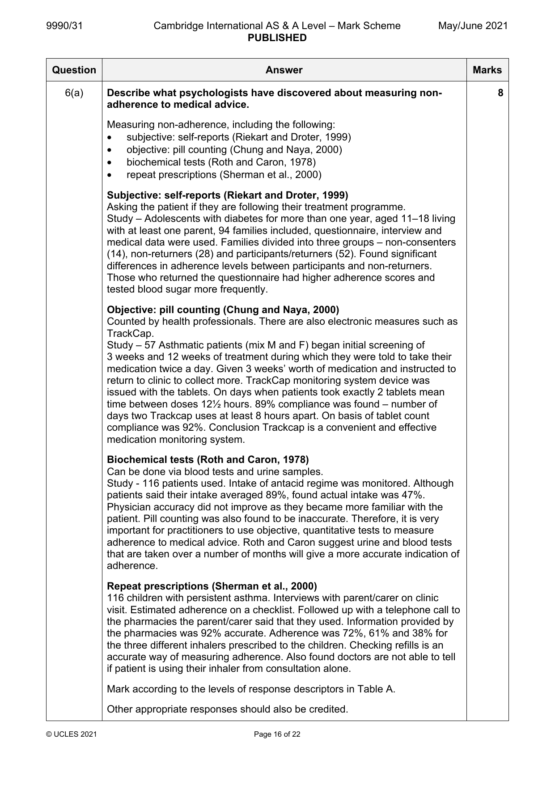
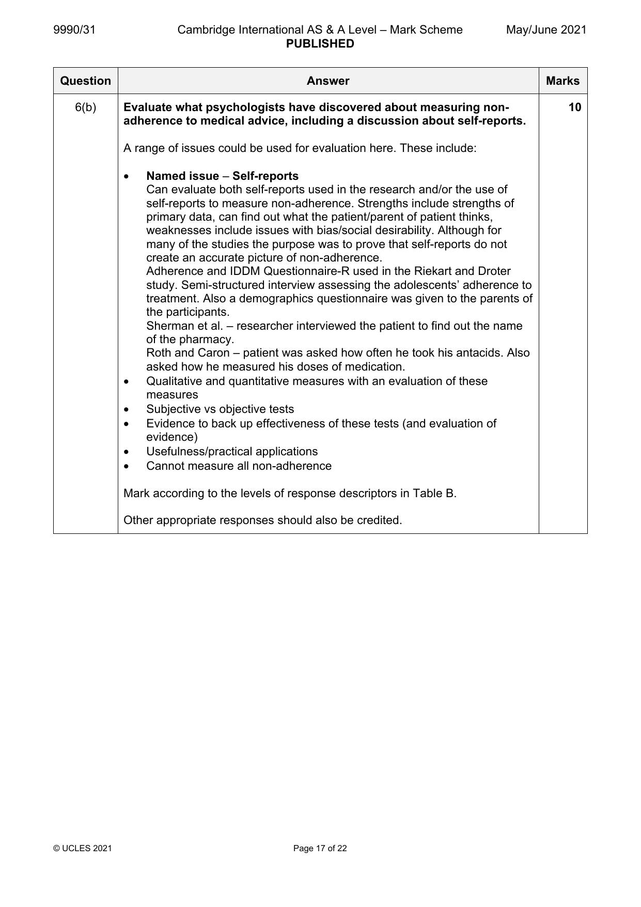
6(a) Describe what psychologists have discovered about measuring non- 8
adherence to medical advice.
Measuring non-adherence, including the following:
• subjective: self-reports (Riekart and Droter, 1999)
• objective: pill counting (Chung and Naya, 2000)
• biochemical tests (Roth and Caron, 1978)
• repeat prescriptions (Sherman et al., 2000)
Subjective: self-reports (Riekart and Droter, 1999)
Asking the patient if they are following their treatment programme.
Study – Adolescents with diabetes for more than one year, aged 11–18 living
with at least one parent, 94 families included, questionnaire, interview and
medical data were used. Families divided into three groups – non-consenters
(14), non-returners (28) and participants/returners (52). Found significant
differences in adherence levels between participants and non-returners.
Those who returned the questionnaire had higher adherence scores and
tested blood sugar more frequently.
Objective: pill counting (Chung and Naya, 2000)
Counted by health professionals. There are also electronic measures such as
TrackCap.
Study – 57 Asthmatic patients (mix M and F) began initial screening of
3 weeks and 12 weeks of treatment during which they were told to take their
medication twice a day. Given 3 weeks’ worth of medication and instructed to
return to clinic to collect more. TrackCap monitoring system device was
issued with the tablets. On days when patients took exactly 2 tablets mean
time between doses 12½ hours. 89% compliance was found – number of
days two Trackcap uses at least 8 hours apart. On basis of tablet count
compliance was 92%. Conclusion Trackcap is a convenient and effective
medication monitoring system.
Biochemical tests (Roth and Caron, 1978)
Can be done via blood tests and urine samples.
Study - 116 patients used. Intake of antacid regime was monitored. Although
patients said their intake averaged 89%, found actual intake was 47%.
Physician accuracy did not improve as they became more familiar with the
patient. Pill counting was also found to be inaccurate. Therefore, it is very
important for practitioners to use objective, quantitative tests to measure
adherence to medical advice. Roth and Caron suggest urine and blood tests
that are taken over a number of months will give a more accurate indication of
adherence.
Repeat prescriptions (Sherman et al., 2000)
116 children with persistent asthma. Interviews with parent/carer on clinic
visit. Estimated adherence on a checklist. Followed up with a telephone call to
the pharmacies the parent/carer said that they used. Information provided by
the pharmacies was 92% accurate. Adherence was 72%, 61% and 38% for
the three different inhalers prescribed to the children. Checking refills is an
accurate way of measuring adherence. Also found doctors are not able to tell
if patient is using their inhaler from consultation alone.
Mark according to the levels of response descriptors in Table A.
Other appropriate responses should also be credited.
© UCLES 2021 Page 16 of 22
6(b) Evaluate what psychologists have discovered about measuring non- 10
adherence to medical advice, including a discussion about self-reports.
A range of issues could be used for evaluation here. These include:
• Named issue – Self-reports
Can evaluate both self-reports used in the research and/or the use of
self-reports to measure non-adherence. Strengths include strengths of
primary data, can find out what the patient/parent of patient thinks,
weaknesses include issues with bias/social desirability. Although for
many of the studies the purpose was to prove that self-reports do not
create an accurate picture of non-adherence.
Adherence and IDDM Questionnaire-R used in the Riekart and Droter
study. Semi-structured interview assessing the adolescents’ adherence to
treatment. Also a demographics questionnaire was given to the parents of
the participants.
Sherman et al. – researcher interviewed the patient to find out the name
of the pharmacy.
Roth and Caron – patient was asked how often he took his antacids. Also
asked how he measured his doses of medication.
• Qualitative and quantitative measures with an evaluation of these
measures
• Subjective vs objective tests
• Evidence to back up effectiveness of these tests (and evaluation of
evidence)
• Usefulness/practical applications
• Cannot measure all non-adherence
Mark according to the levels of response descriptors in Table B.
Other appropriate responses should also be credited.
© UCLES 2021 Page 17 of 22
Official mark scheme pages: 16, 17 · source PDF URL
9990-2021-mj-32-q05
May/June 2021 · Paper 32 · Question 5 · 12 marks
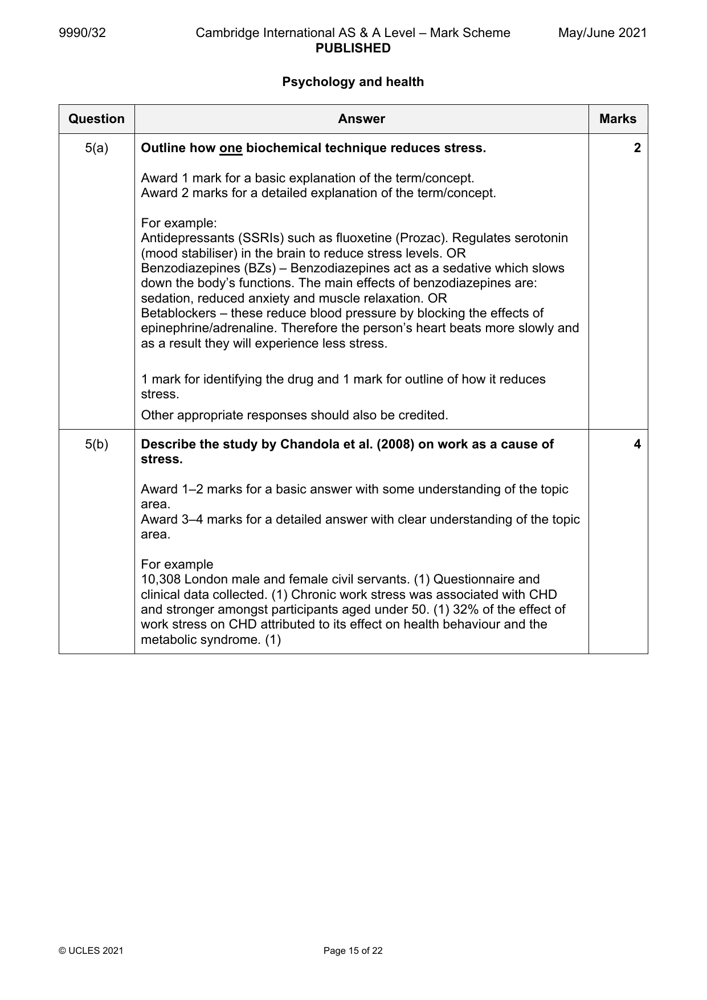
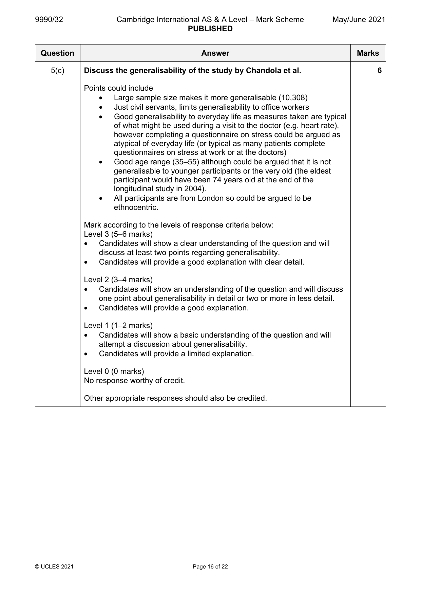
5(a) Outline how one biochemical technique reduces stress. 2
Award 1 mark for a basic explanation of the term/concept.
Award 2 marks for a detailed explanation of the term/concept.
For example:
Antidepressants (SSRIs) such as fluoxetine (Prozac). Regulates serotonin
(mood stabiliser) in the brain to reduce stress levels. OR
Benzodiazepines (BZs) – Benzodiazepines act as a sedative which slows
down the body’s functions. The main effects of benzodiazepines are:
sedation, reduced anxiety and muscle relaxation. OR
Betablockers – these reduce blood pressure by blocking the effects of
epinephrine/adrenaline. Therefore the person’s heart beats more slowly and
as a result they will experience less stress.
1 mark for identifying the drug and 1 mark for outline of how it reduces
stress.
Other appropriate responses should also be credited.
5(b) Describe the study by Chandola et al. (2008) on work as a cause of 4
stress.
Award 1–2 marks for a basic answer with some understanding of the topic
area.
Award 3–4 marks for a detailed answer with clear understanding of the topic
area.
For example
10,308 London male and female civil servants. (1) Questionnaire and
clinical data collected. (1) Chronic work stress was associated with CHD
and stronger amongst participants aged under 50. (1) 32% of the effect of
work stress on CHD attributed to its effect on health behaviour and the
metabolic syndrome. (1)
© UCLES 2021 Page 15 of 22
5(c) Discuss the generalisability of the study by Chandola et al. 6
Points could include
• Large sample size makes it more generalisable (10,308)
• Just civil servants, limits generalisability to office workers
• Good generalisability to everyday life as measures taken are typical
of what might be used during a visit to the doctor (e.g. heart rate),
however completing a questionnaire on stress could be argued as
atypical of everyday life (or typical as many patients complete
questionnaires on stress at work or at the doctors)
• Good age range (35–55) although could be argued that it is not
generalisable to younger participants or the very old (the eldest
participant would have been 74 years old at the end of the
longitudinal study in 2004).
• All participants are from London so could be argued to be
ethnocentric.
Mark according to the levels of response criteria below:
Level 3 (5–6 marks)
• Candidates will show a clear understanding of the question and will
discuss at least two points regarding generalisability.
• Candidates will provide a good explanation with clear detail.
Level 2 (3–4 marks)
• Candidates will show an understanding of the question and will discuss
one point about generalisability in detail or two or more in less detail.
• Candidates will provide a good explanation.
Level 1 (1–2 marks)
• Candidates will show a basic understanding of the question and will
attempt a discussion about generalisability.
• Candidates will provide a limited explanation.
Level 0 (0 marks)
No response worthy of credit.
Other appropriate responses should also be credited.
© UCLES 2021 Page 16 of 22
Official mark scheme pages: 15, 16 · source PDF URL
9990-2021-mj-32-q06
May/June 2021 · Paper 32 · Question 6 · 18 marks
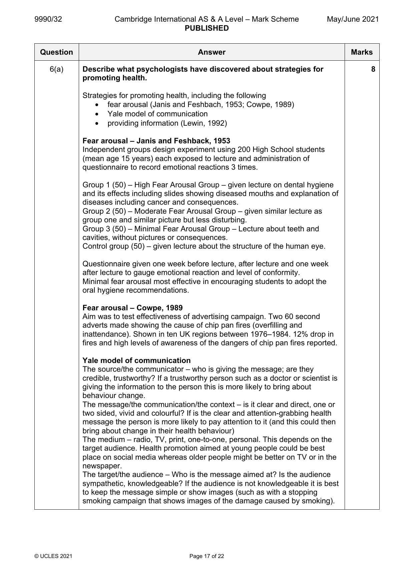
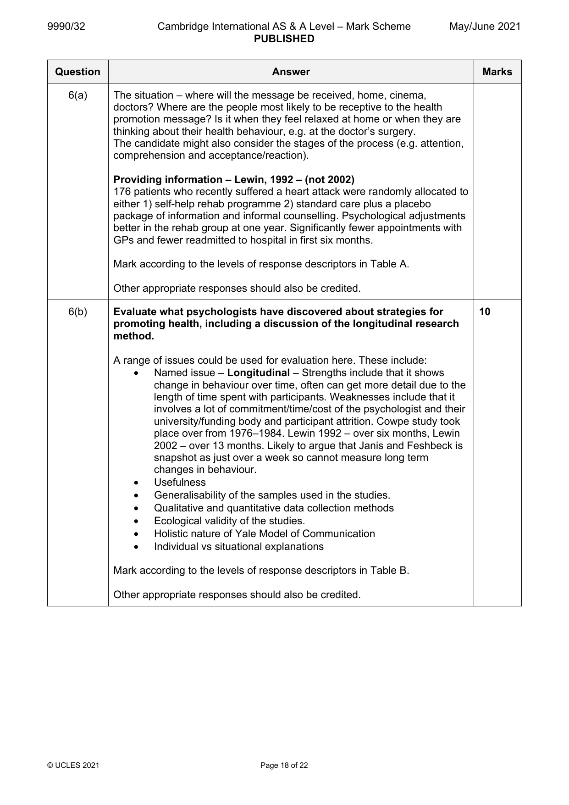
6(a) Describe what psychologists have discovered about strategies for 8
promoting health.
Strategies for promoting health, including the following
• fear arousal (Janis and Feshbach, 1953; Cowpe, 1989)
• Yale model of communication
• providing information (Lewin, 1992)
Fear arousal – Janis and Feshback, 1953
Independent groups design experiment using 200 High School students
(mean age 15 years) each exposed to lecture and administration of
questionnaire to record emotional reactions 3 times.
Group 1 (50) – High Fear Arousal Group – given lecture on dental hygiene
and its effects including slides showing diseased mouths and explanation of
diseases including cancer and consequences.
Group 2 (50) – Moderate Fear Arousal Group – given similar lecture as
group one and similar picture but less disturbing.
Group 3 (50) – Minimal Fear Arousal Group – Lecture about teeth and
cavities, without pictures or consequences.
Control group (50) – given lecture about the structure of the human eye.
Questionnaire given one week before lecture, after lecture and one week
after lecture to gauge emotional reaction and level of conformity.
Minimal fear arousal most effective in encouraging students to adopt the
oral hygiene recommendations.
Fear arousal – Cowpe, 1989
Aim was to test effectiveness of advertising campaign. Two 60 second
adverts made showing the cause of chip pan fires (overfilling and
inattendance). Shown in ten UK regions between 1976–1984. 12% drop in
fires and high levels of awareness of the dangers of chip pan fires reported.
Yale model of communication
The source/the communicator – who is giving the message; are they
credible, trustworthy? If a trustworthy person such as a doctor or scientist is
giving the information to the person this is more likely to bring about
behaviour change.
The message/the communication/the context – is it clear and direct, one or
two sided, vivid and colourful? If is the clear and attention-grabbing health
message the person is more likely to pay attention to it (and this could then
bring about change in their health behaviour)
The medium – radio, TV, print, one-to-one, personal. This depends on the
target audience. Health promotion aimed at young people could be best
place on social media whereas older people might be better on TV or in the
newspaper.
The target/the audience – Who is the message aimed at? Is the audience
sympathetic, knowledgeable? If the audience is not knowledgeable it is best
to keep the message simple or show images (such as with a stopping
smoking campaign that shows images of the damage caused by smoking).
© UCLES 2021 Page 17 of 22
6(a) The situation – where will the message be received, home, cinema,
doctors? Where are the people most likely to be receptive to the health
promotion message? Is it when they feel relaxed at home or when they are
thinking about their health behaviour, e.g. at the doctor’s surgery.
The candidate might also consider the stages of the process (e.g. attention,
comprehension and acceptance/reaction).
Providing information – Lewin, 1992 – (not 2002)
176 patients who recently suffered a heart attack were randomly allocated to
either 1) self-help rehab programme 2) standard care plus a placebo
package of information and informal counselling. Psychological adjustments
better in the rehab group at one year. Significantly fewer appointments with
GPs and fewer readmitted to hospital in first six months.
Mark according to the levels of response descriptors in Table A.
Other appropriate responses should also be credited.
6(b) Evaluate what psychologists have discovered about strategies for 10
promoting health, including a discussion of the longitudinal research
method.
A range of issues could be used for evaluation here. These include:
• Named issue – Longitudinal – Strengths include that it shows
change in behaviour over time, often can get more detail due to the
length of time spent with participants. Weaknesses include that it
involves a lot of commitment/time/cost of the psychologist and their
university/funding body and participant attrition. Cowpe study took
place over from 1976–1984. Lewin 1992 – over six months, Lewin
2002 – over 13 months. Likely to argue that Janis and Feshbeck is
snapshot as just over a week so cannot measure long term
changes in behaviour.
• Usefulness
• Generalisability of the samples used in the studies.
• Qualitative and quantitative data collection methods
• Ecological validity of the studies.
• Holistic nature of Yale Model of Communication
• Individual vs situational explanations
Mark according to the levels of response descriptors in Table B.
Other appropriate responses should also be credited.
© UCLES 2021 Page 18 of 22
Official mark scheme pages: 17, 18 · source PDF URL
9990-2021-mj-33-q05
May/June 2021 · Paper 33 · Question 5 · 12 marks
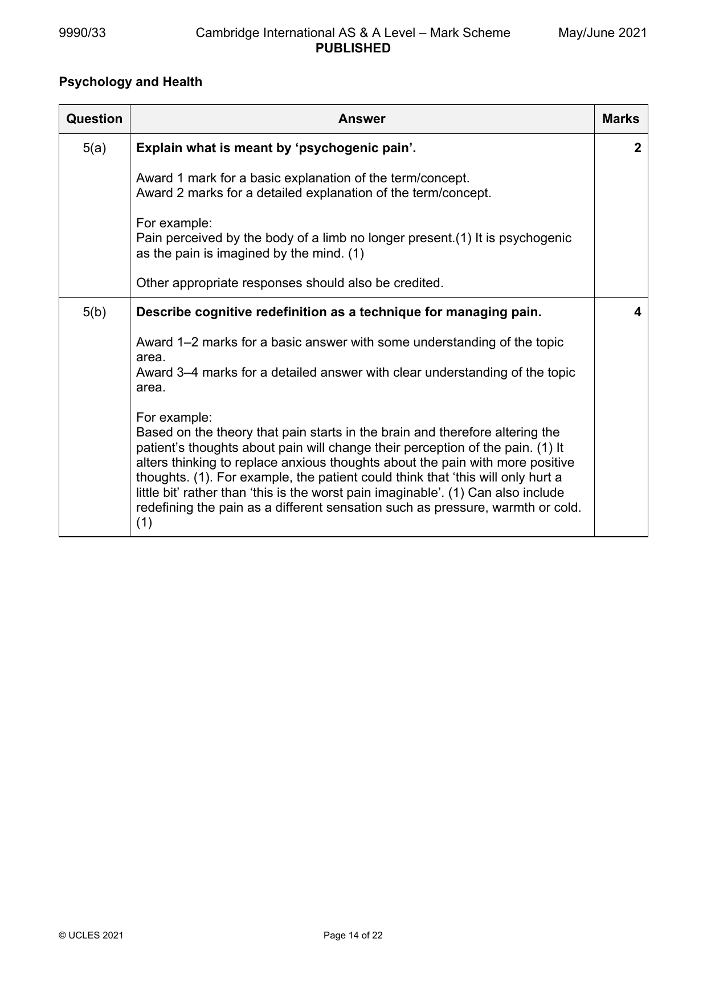
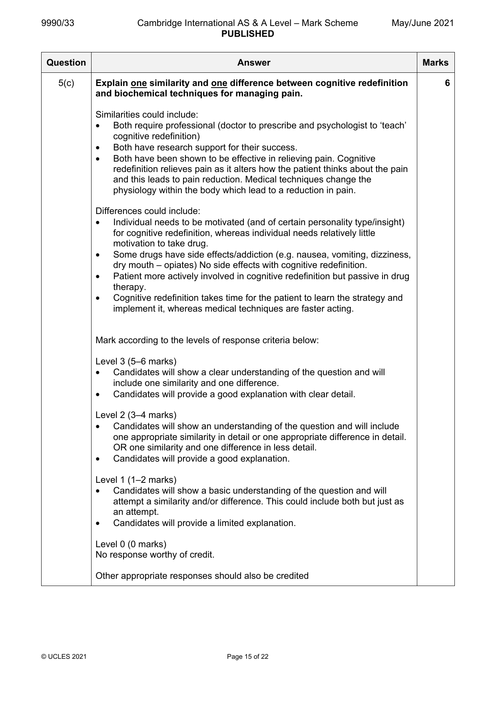
5(a) Explain what is meant by ‘psychogenic pain’. 2
Award 1 mark for a basic explanation of the term/concept.
Award 2 marks for a detailed explanation of the term/concept.
For example:
Pain perceived by the body of a limb no longer present.(1) It is psychogenic
as the pain is imagined by the mind. (1)
Other appropriate responses should also be credited.
5(b) Describe cognitive redefinition as a technique for managing pain. 4
Award 1–2 marks for a basic answer with some understanding of the topic
area.
Award 3–4 marks for a detailed answer with clear understanding of the topic
area.
For example:
Based on the theory that pain starts in the brain and therefore altering the
patient’s thoughts about pain will change their perception of the pain. (1) It
alters thinking to replace anxious thoughts about the pain with more positive
thoughts. (1). For example, the patient could think that ‘this will only hurt a
little bit’ rather than ‘this is the worst pain imaginable’. (1) Can also include
redefining the pain as a different sensation such as pressure, warmth or cold.
(1)
© UCLES 2021 Page 14 of 22
5(c) Explain one similarity and one difference between cognitive redefinition 6
and biochemical techniques for managing pain.
Similarities could include:
• Both require professional (doctor to prescribe and psychologist to ‘teach’
cognitive redefinition)
• Both have research support for their success.
• Both have been shown to be effective in relieving pain. Cognitive
redefinition relieves pain as it alters how the patient thinks about the pain
and this leads to pain reduction. Medical techniques change the
physiology within the body which lead to a reduction in pain.
Differences could include:
• Individual needs to be motivated (and of certain personality type/insight)
for cognitive redefinition, whereas individual needs relatively little
motivation to take drug.
• Some drugs have side effects/addiction (e.g. nausea, vomiting, dizziness,
dry mouth – opiates) No side effects with cognitive redefinition.
• Patient more actively involved in cognitive redefinition but passive in drug
therapy.
• Cognitive redefinition takes time for the patient to learn the strategy and
implement it, whereas medical techniques are faster acting.
Mark according to the levels of response criteria below:
Level 3 (5–6 marks)
• Candidates will show a clear understanding of the question and will
include one similarity and one difference.
• Candidates will provide a good explanation with clear detail.
Level 2 (3–4 marks)
• Candidates will show an understanding of the question and will include
one appropriate similarity in detail or one appropriate difference in detail.
OR one similarity and one difference in less detail.
• Candidates will provide a good explanation.
Level 1 (1–2 marks)
• Candidates will show a basic understanding of the question and will
attempt a similarity and/or difference. This could include both but just as
an attempt.
• Candidates will provide a limited explanation.
Level 0 (0 marks)
No response worthy of credit.
Other appropriate responses should also be credited
© UCLES 2021 Page 15 of 22
Official mark scheme pages: 14, 15 · source PDF URL
9990-2021-mj-33-q06
May/June 2021 · Paper 33 · Question 6 · 18 marks
6(a) Describe what psychologists have discovered about measuring non- 8
adherence to medical advice.
Measuring non-adherence, including the following:
• subjective: self-reports (Riekart and Droter, 1999)
• objective: pill counting (Chung and Naya, 2000)
• biochemical tests (Roth and Caron, 1978)
• repeat prescriptions (Sherman et al., 2000)
Subjective: self-reports (Riekart and Droter, 1999)
Asking the patient if they are following their treatment programme.
Study – Adolescents with diabetes for more than one year, aged 11–18 living
with at least one parent, 94 families included, questionnaire, interview and
medical data were used. Families divided into three groups – non-consenters
(14), non-returners (28) and participants/returners (52). Found significant
differences in adherence levels between participants and non-returners.
Those who returned the questionnaire had higher adherence scores and
tested blood sugar more frequently.
Objective: pill counting (Chung and Naya, 2000)
Counted by health professionals. There are also electronic measures such as
TrackCap.
Study – 57 Asthmatic patients (mix M and F) began initial screening of
3 weeks and 12 weeks of treatment during which they were told to take their
medication twice a day. Given 3 weeks’ worth of medication and instructed to
return to clinic to collect more. TrackCap monitoring system device was
issued with the tablets. On days when patients took exactly 2 tablets mean
time between doses 12½ hours. 89% compliance was found – number of
days two Trackcap uses at least 8 hours apart. On basis of tablet count
compliance was 92%. Conclusion Trackcap is a convenient and effective
medication monitoring system.
Biochemical tests (Roth and Caron, 1978)
Can be done via blood tests and urine samples.
Study - 116 patients used. Intake of antacid regime was monitored. Although
patients said their intake averaged 89%, found actual intake was 47%.
Physician accuracy did not improve as they became more familiar with the
patient. Pill counting was also found to be inaccurate. Therefore, it is very
important for practitioners to use objective, quantitative tests to measure
adherence to medical advice. Roth and Caron suggest urine and blood tests
that are taken over a number of months will give a more accurate indication of
adherence.
Repeat prescriptions (Sherman et al., 2000)
116 children with persistent asthma. Interviews with parent/carer on clinic
visit. Estimated adherence on a checklist. Followed up with a telephone call to
the pharmacies the parent/carer said that they used. Information provided by
the pharmacies was 92% accurate. Adherence was 72%, 61% and 38% for
the three different inhalers prescribed to the children. Checking refills is an
accurate way of measuring adherence. Also found doctors are not able to tell
if patient is using their inhaler from consultation alone.
Mark according to the levels of response descriptors in Table A.
Other appropriate responses should also be credited.
© UCLES 2021 Page 16 of 22
6(b) Evaluate what psychologists have discovered about measuring non- 10
adherence to medical advice, including a discussion about self-reports.
A range of issues could be used for evaluation here. These include:
• Named issue – Self-reports
Can evaluate both self-reports used in the research and/or the use of
self-reports to measure non-adherence. Strengths include strengths of
primary data, can find out what the patient/parent of patient thinks,
weaknesses include issues with bias/social desirability. Although for
many of the studies the purpose was to prove that self-reports do not
create an accurate picture of non-adherence.
Adherence and IDDM Questionnaire-R used in the Riekart and Droter
study. Semi-structured interview assessing the adolescents’ adherence to
treatment. Also a demographics questionnaire was given to the parents of
the participants.
Sherman et al. – researcher interviewed the patient to find out the name
of the pharmacy.
Roth and Caron – patient was asked how often he took his antacids. Also
asked how he measured his doses of medication.
• Qualitative and quantitative measures with an evaluation of these
measures
• Subjective vs objective tests
• Evidence to back up effectiveness of these tests (and evaluation of
evidence)
• Usefulness/practical applications
• Cannot measure all non-adherence
Mark according to the levels of response descriptors in Table B.
Other appropriate responses should also be credited.
© UCLES 2021 Page 17 of 22
Official mark scheme pages: 16, 17 · source PDF URL
9990-2021-mj-41-q03
May/June 2021 · Paper 41 · Question 3 · 15 marks
3 Newspaper headline: Doctors with a directing style give more
satisfaction.
Savage and Armstrong (1990) studied patient satisfaction with
different consultation styles. Patients who received a directing style
consultation reported significantly higher levels of satisfaction on
almost all measures, compared with those who received a sharing
style consultation.
3(a) Explain what method was used to assess patient satisfaction in the 2
study by Savage and Armstrong (1990).
Most likely (quotes from study)
• Patients’ satisfaction was measured by a questionnaire completed by
the patients that asked about the quality of communication in the
consultation and thoughts after the consultation was over.
• The patient was asked to complete the questionnaire in the waiting
room and give it to the receptionist before leaving the surgery. A second
questionnaire with a stamped addressed envelope was then given to
each patient with instructions to fill it in and post it after one week.
Marks: 1 mark identification of questionnaire, 2 marks for
elaboration/example (after the consultation was over/after one week)
Note: 0 marks for interview or any other method. Do not credit ‘self-report’
as this is too vague.
3(b) Explain two reasons why the number of participants used in the 4
analysis of results was lower than the original number of participants.
Most likely answer (other appropriate responses to be credited): Quoting
from study
Overall, 359 patients were invited to take part in the study.
• 4 declined to participate (did not give consent or withdrew)
• 5 were excluded (reasons included schizophrenia and manic
depression)
• 30 patients failed to complete the initial assessment (in the waiting
room)
• 120 failed to complete the assessment a week later (the postal
questionnaire).
Marks: 1 mark for: basic statement, 2 marks for elaboration/example
Note: numbers not needed to score full marks; approximate numbers are
acceptable when quoted.
Note: withdrawal/consent are same point, so 1 mark if both identified.
© UCLES 2021 Page 13 of 25
3(c)(i) Participants were randomly selected to participate in the study. 2
Explain why this was important.
Most likely answer
Random selection ensures that all members of the target population have
an equal chance of participating (1 mark) because ‘a random number
generator was used to select, in advance, four patients for the study from
each surgery held by one general practitioner (RS) over four months’ (+1
mark).
There is no selection bias/everyone has an equal chance of participating
(1 mark) by the doctor/researcher, or any link to this study. (+1 mark)
Marks: 1 mark for importance, 1 mark for relating to study (however briefly).
Note: makes it more generalisable (0 marks) but with explanation (1 mark)
3(c)(ii) Participants were randomly allocated to a directing or a sharing style. 2
Explain why this was important.
Most likely answer
Random allocation ensures that all participants have an equal chance of
being allocated to either condition (1 mark) ‘A set of cards was produced to
allocate randomly either a directing or a shared style, and these were kept
face down on the doctor's desk. The card was turned over only when the
patient had completed his or her description of the initial problem and had
been identified as suitable for entry to the study’ (2 marks)
There is no allocation bias (1 mark) by the doctor/researcher (+1 mark) or
so the patients don’t know what style they will receive (+1 mark)
Marks: 1 mark for importance, 1 mark for relating to study (however briefly).
© UCLES 2021 Page 14 of 25
3(d) Discuss the advantages and disadvantages of using postal 5
questionnaires to gather data about health preferences. You should
include a conclusion in your answer.
Marks: 1 mark for each advantage/disadvantage (however basic/detailed)
which is related/linked to the question (max 4 marks). 1 mark for
conclusion.
Conclusion: any appropriate conclusion drawn from the discussion that has
been presented. 1 mark if appropriate. A conclusion is a ‘decision reached
by reasoning’ and so a summary of points already made scores 0 marks.
Most likely answer (other appropriate responses to be credited):
Advantages
• Full information can be given so better than an interview
• People can read and complete at their own leisure (in their own home),
think about and then make decisions (without pressure from anyone)
• People may prefer to write personal answers about health preferences
rather than tell someone face-to-face
Disadvantages
• People may not receive the mailing, or receive it but never read it;
• people read the information about health preferences but not act on it
(or forget to act on it)
• people may delay acting (appraisal delay etc. re Safer)
© UCLES 2021 Page 15 of 25
Official mark scheme pages: 13, 14, 15 · source PDF URL
9990-2021-mj-41-q07
May/June 2021 · Paper 41 · Question 7 · 18 marks
7(a) Prochaska et al. (1997) proposed the stages of change 10
(transtheoretical) model.
Design a longitudinal study to investigate whether a person wishing to
change their health behaviour follows the stages in this model.
Marks: use generic levels of response Design a study question part (a).
Additional: Candidates should design the study showing evidence of
design features appropriate to the named method. The named method is:
longitudinal study.
Any method can be used, provided that the data gathered is over a period of
time.
Typical features:
• Experiments: type, IV, DV, controls, experimental design.
• Observations: type, setting, response categories, sampling frame,
number of observers.
• Questionnaires/Interviews: type, setting, example questions.
Scoring/rating scale, analysis of responses.
General features of research methodology: sampling technique &
sample, type of data, ethics, reliability, validity, data analysis.
7(b) Explain the psychological and methodological evidence on which your 8
study is based.
Candidates are expected to explain the reasons for the suggested design in
part (a). Explanation should be both psychological and methodological.
Psychological to include appropriate theory or research.
Marks: use generic levels of response ‘Design a study’ question part (b).
‘Psychological’ = 4 marks; ‘methodological’ = 4 marks
If only methodological or psychological explanation is provided max 5
marks
If ‘psychological’ described and not related to part (a) max 2 marks.
Syllabus: non-verbal communications (McKinstry and Wang, 1991)
Psychological:
McKinstry and Wang looked at different styles of a doctors’ appearance/
clothing. Participants looked at different male and female styles and found
that wearing a white coat was generally preferred.
Methodological: explanation of method using general and specific features
as above.
© UCLES 2021 Page 20 of 25
Official mark scheme pages: 20 · source PDF URL
9990-2021-mj-41-q11
May/June 2021 · Paper 41 · Question 11 · 12 marks
11 ‘Promoting healthy eating to children in schools is irrelevant; it is 12
more important to promote healthy eating to parents in the home.’
To what extent do you agree with this statement? Use examples of
research you have studied to support your answer.
Marks: use generic levels of response in table C.
Syllabus: health promotion in schools, worksites & communities
Most likely (any other appropriate responses should be credited):
Schools not irrelevant:
• Some studies such as Tapper et al. have shown healthy eating
programmes to be effective in schools.
• What children learn in school can be transferred to what children do in
the home; in life. Application of operant conditioning: positive
reinforcement can generalise
Schools irrelevant:
• Parents should be targeted to provide healthy food for their children; it
is a ‘back-route’ to change the family through children in schools.
• Parents influence children (Lau et al. ,1990) and the enduring family
socialisation model.
• Children are easily manipulated and can be influenced. Perhaps
unethical without parental consent.
© UCLES 2021 Page 24 of 25
Official mark scheme pages: 24 · source PDF URL
9990-2021-mj-42-q03
May/June 2021 · Paper 42 · Question 3 · 15 marks
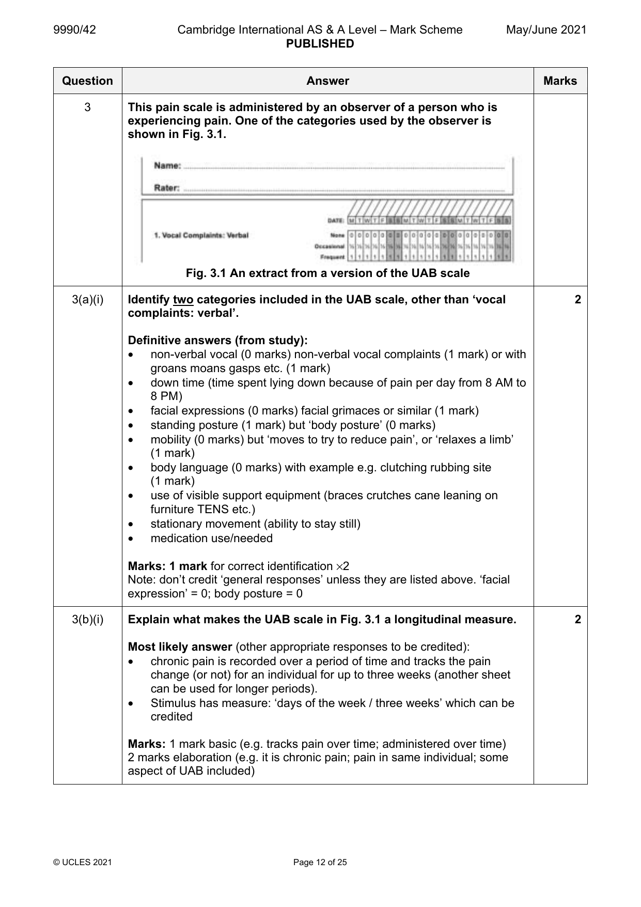
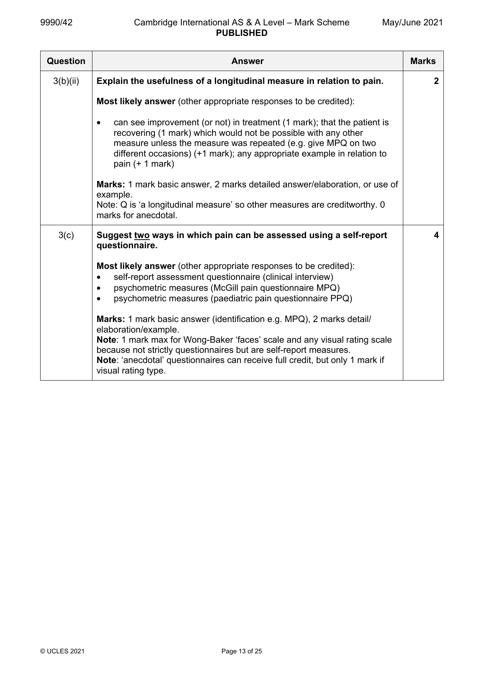
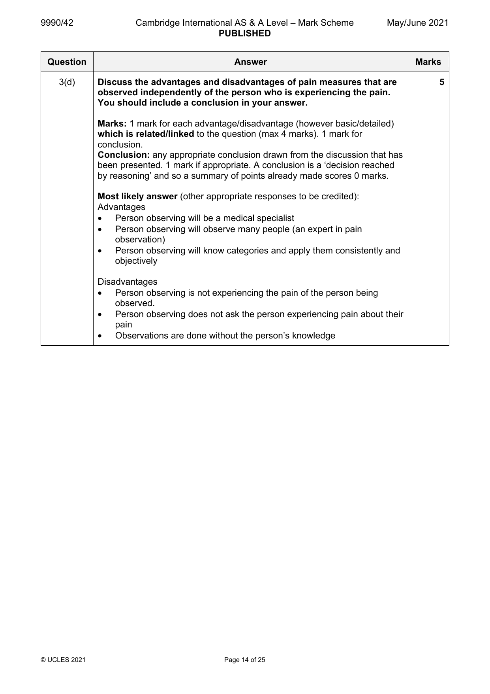
3 This pain scale is administered by an observer of a person who is
experiencing pain. One of the categories used by the observer is
shown in Fig. 3.1.
Fig. 3.1 An extract from a version of the UAB scale
3(a)(i) Identify two categories included in the UAB scale, other than ‘vocal 2
complaints: verbal’.
Definitive answers (from study):
• non-verbal vocal (0 marks) non-verbal vocal complaints (1 mark) or with
groans moans gasps etc. (1 mark)
• down time (time spent lying down because of pain per day from 8 AM to
8 PM)
• facial expressions (0 marks) facial grimaces or similar (1 mark)
• standing posture (1 mark) but ‘body posture’ (0 marks)
• mobility (0 marks) but ‘moves to try to reduce pain’, or ‘relaxes a limb’
(1 mark)
• body language (0 marks) with example e.g. clutching rubbing site
(1 mark)
• use of visible support equipment (braces crutches cane leaning on
furniture TENS etc.)
• stationary movement (ability to stay still)
• medication use/needed
Marks: 1 mark for correct identification ×2
Note: don’t credit ‘general responses’ unless they are listed above. ‘facial
expression’ = 0; body posture = 0
3(b)(i) Explain what makes the UAB scale in Fig. 3.1 a longitudinal measure. 2
Most likely answer (other appropriate responses to be credited):
• chronic pain is recorded over a period of time and tracks the pain
change (or not) for an individual for up to three weeks (another sheet
can be used for longer periods).
• Stimulus has measure: ‘days of the week / three weeks’ which can be
credited
Marks: 1 mark basic (e.g. tracks pain over time; administered over time)
2 marks elaboration (e.g. it is chronic pain; pain in same individual; some
aspect of UAB included)
© UCLES 2021 Page 12 of 25
3(b)(ii) Explain the usefulness of a longitudinal measure in relation to pain. 2
Most likely answer (other appropriate responses to be credited):
• can see improvement (or not) in treatment (1 mark); that the patient is
recovering (1 mark) which would not be possible with any other
measure unless the measure was repeated (e.g. give MPQ on two
different occasions) (+1 mark); any appropriate example in relation to
pain (+ 1 mark)
Marks: 1 mark basic answer, 2 marks detailed answer/elaboration, or use of
example.
Note: Q is ‘a longitudinal measure’ so other measures are creditworthy. 0
marks for anecdotal.
3(c) Suggest two ways in which pain can be assessed using a self-report 4
questionnaire.
Most likely answer (other appropriate responses to be credited):
• self-report assessment questionnaire (clinical interview)
• psychometric measures (McGill pain questionnaire MPQ)
• psychometric measures (paediatric pain questionnaire PPQ)
Marks: 1 mark basic answer (identification e.g. MPQ), 2 marks detail/
elaboration/example.
Note: 1 mark max for Wong-Baker ‘faces’ scale and any visual rating scale
because not strictly questionnaires but are self-report measures.
Note: ‘anecdotal’ questionnaires can receive full credit, but only 1 mark if
visual rating type.
© UCLES 2021 Page 13 of 25
3(d) Discuss the advantages and disadvantages of pain measures that are 5
observed independently of the person who is experiencing the pain.
You should include a conclusion in your answer.
Marks: 1 mark for each advantage/disadvantage (however basic/detailed)
which is related/linked to the question (max 4 marks). 1 mark for
conclusion.
Conclusion: any appropriate conclusion drawn from the discussion that has
been presented. 1 mark if appropriate. A conclusion is a ‘decision reached
by reasoning’ and so a summary of points already made scores 0 marks.
Most likely answer (other appropriate responses to be credited):
Advantages
• Person observing will be a medical specialist
• Person observing will observe many people (an expert in pain
observation)
• Person observing will know categories and apply them consistently and
objectively
Disadvantages
• Person observing is not experiencing the pain of the person being
observed.
• Person observing does not ask the person experiencing pain about their
pain
• Observations are done without the person’s knowledge
© UCLES 2021 Page 14 of 25
Official mark scheme pages: 12, 13, 14 · source PDF URL
9990-2021-mj-42-q07
May/June 2021 · Paper 42 · Question 7 · 18 marks
7(a) The style of a practitioner’s clothing, the way they dress, can influence 10
what patients think of them.
Design a study gathering qualitative data to investigate why patients
prefer one practitioner style of dress to another.
Marks: use generic levels of response Design a study question part (a).
Additional: Candidates should design the study showing evidence of
design features appropriate to the named method. The named method:
must include qualitative data.
Specific features:
• Experiments: type, IV, DV, controls, experimental design.
• Observations: type, setting, response categories, sampling frame,
number of observers.
• Questionnaires/Interviews: type, setting, example questions.
Scoring/rating scale, analysis of responses.
General features of research methodology: sampling technique and
sample, type of data, ethics, reliability, validity, data analysis.
7(b) Explain the psychological and methodological evidence on which your 8
study is based.
Candidates are expected to explain the reasons for the suggested design in
part (a). Explanation should be both psychological and methodological.
Psychological to include appropriate theory or research.
Marks: use generic levels of response ‘Design a study’ question part (b).
‘Psychological’ = 4 marks; ‘methodological’ = 4 marks
If only methodological or psychological explanation is provided max 5
marks
If ‘psychological’ described and not related to part (a) max 2 marks.
Syllabus: non-verbal communications (McKinstry and Wang, 1991)
Psychological:
Study by (McKinstry and Wang, 1991) on patient satisfaction determined by
style of dress of practitioner.
Methodological: explanation of method using general and specific features
as above.
© UCLES 2021 Page 20 of 25
Official mark scheme pages: 20 · source PDF URL
9990-2021-mj-42-q11
May/June 2021 · Paper 42 · Question 11 · 12 marks
11 ‘If there is any doubt about making a correct diagnosis, a medical 12
practitioner should always decide that an ill person is healthy.’
To what extent do you agree with this statement? Use examples of
research you have studied to support your answer.
Marks: use generic levels of response in table C.
Syllabus: practitioner diagnosis: type I and type II errors
Most likely (any other appropriate responses should be credited):
Note: lots of debate about type 1 and type 2 errors and which is which,
hence not included in question. Whichever way round a candidate has them,
credit should be received.
For:
• It is better to be ‘safe than sorry’
• More tests can confirm whether the person is ill or not
• If diagnosed as ill the healthy person may take medication (but won’t do
any harm)
• Being safe prevents a wrong diagnosis, which can be bad for the
patient and bad for the practitioner.
Against:
• This is an error and errors should not be made. Medical practitioners
should get it right.
• Assuming illness means the person might be treated for no reason,
which could be costly.
• If a practitioner gets it wrong the patient might die or sue the practitioner
for negligence.
© UCLES 2021 Page 24 of 25
Official mark scheme pages: 24 · source PDF URL
9990-2021-mj-43-q03
May/June 2021 · Paper 43 · Question 3 · 15 marks
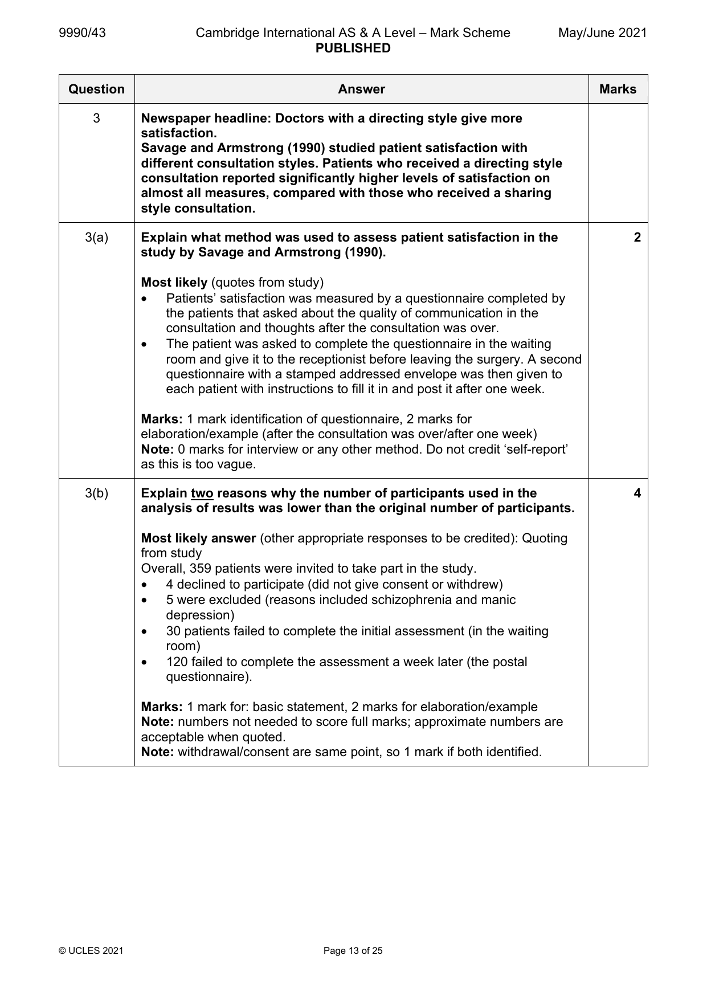
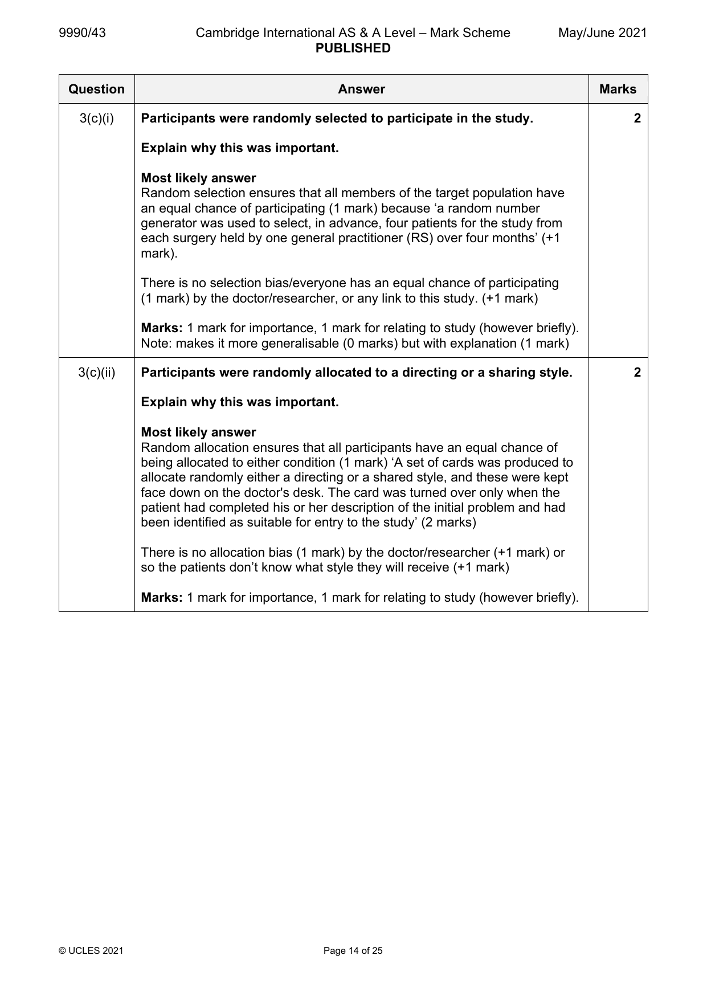
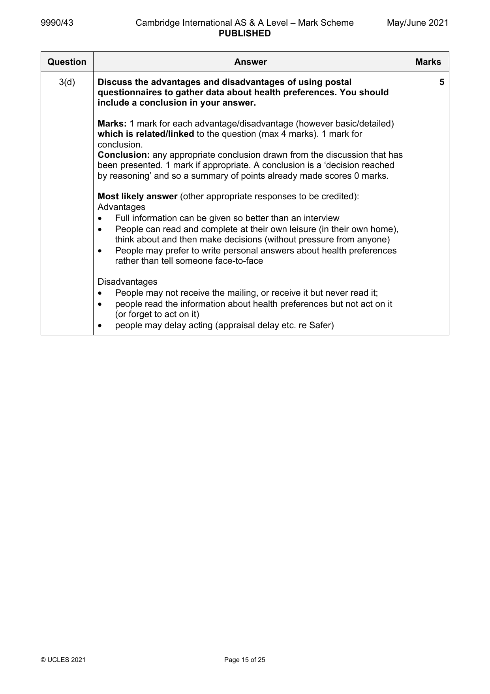
3 Newspaper headline: Doctors with a directing style give more
satisfaction.
Savage and Armstrong (1990) studied patient satisfaction with
different consultation styles. Patients who received a directing style
consultation reported significantly higher levels of satisfaction on
almost all measures, compared with those who received a sharing
style consultation.
3(a) Explain what method was used to assess patient satisfaction in the 2
study by Savage and Armstrong (1990).
Most likely (quotes from study)
• Patients’ satisfaction was measured by a questionnaire completed by
the patients that asked about the quality of communication in the
consultation and thoughts after the consultation was over.
• The patient was asked to complete the questionnaire in the waiting
room and give it to the receptionist before leaving the surgery. A second
questionnaire with a stamped addressed envelope was then given to
each patient with instructions to fill it in and post it after one week.
Marks: 1 mark identification of questionnaire, 2 marks for
elaboration/example (after the consultation was over/after one week)
Note: 0 marks for interview or any other method. Do not credit ‘self-report’
as this is too vague.
3(b) Explain two reasons why the number of participants used in the 4
analysis of results was lower than the original number of participants.
Most likely answer (other appropriate responses to be credited): Quoting
from study
Overall, 359 patients were invited to take part in the study.
• 4 declined to participate (did not give consent or withdrew)
• 5 were excluded (reasons included schizophrenia and manic
depression)
• 30 patients failed to complete the initial assessment (in the waiting
room)
• 120 failed to complete the assessment a week later (the postal
questionnaire).
Marks: 1 mark for: basic statement, 2 marks for elaboration/example
Note: numbers not needed to score full marks; approximate numbers are
acceptable when quoted.
Note: withdrawal/consent are same point, so 1 mark if both identified.
© UCLES 2021 Page 13 of 25
3(c)(i) Participants were randomly selected to participate in the study. 2
Explain why this was important.
Most likely answer
Random selection ensures that all members of the target population have
an equal chance of participating (1 mark) because ‘a random number
generator was used to select, in advance, four patients for the study from
each surgery held by one general practitioner (RS) over four months’ (+1
mark).
There is no selection bias/everyone has an equal chance of participating
(1 mark) by the doctor/researcher, or any link to this study. (+1 mark)
Marks: 1 mark for importance, 1 mark for relating to study (however briefly).
Note: makes it more generalisable (0 marks) but with explanation (1 mark)
3(c)(ii) Participants were randomly allocated to a directing or a sharing style. 2
Explain why this was important.
Most likely answer
Random allocation ensures that all participants have an equal chance of
being allocated to either condition (1 mark) ‘A set of cards was produced to
allocate randomly either a directing or a shared style, and these were kept
face down on the doctor's desk. The card was turned over only when the
patient had completed his or her description of the initial problem and had
been identified as suitable for entry to the study’ (2 marks)
There is no allocation bias (1 mark) by the doctor/researcher (+1 mark) or
so the patients don’t know what style they will receive (+1 mark)
Marks: 1 mark for importance, 1 mark for relating to study (however briefly).
© UCLES 2021 Page 14 of 25
3(d) Discuss the advantages and disadvantages of using postal 5
questionnaires to gather data about health preferences. You should
include a conclusion in your answer.
Marks: 1 mark for each advantage/disadvantage (however basic/detailed)
which is related/linked to the question (max 4 marks). 1 mark for
conclusion.
Conclusion: any appropriate conclusion drawn from the discussion that has
been presented. 1 mark if appropriate. A conclusion is a ‘decision reached
by reasoning’ and so a summary of points already made scores 0 marks.
Most likely answer (other appropriate responses to be credited):
Advantages
• Full information can be given so better than an interview
• People can read and complete at their own leisure (in their own home),
think about and then make decisions (without pressure from anyone)
• People may prefer to write personal answers about health preferences
rather than tell someone face-to-face
Disadvantages
• People may not receive the mailing, or receive it but never read it;
• people read the information about health preferences but not act on it
(or forget to act on it)
• people may delay acting (appraisal delay etc. re Safer)
© UCLES 2021 Page 15 of 25
Official mark scheme pages: 13, 14, 15 · source PDF URL
9990-2021-mj-43-q07
May/June 2021 · Paper 43 · Question 7 · 18 marks
7(a) Prochaska et al. (1997) proposed the stages of change 10
(transtheoretical) model.
Design a longitudinal study to investigate whether a person wishing to
change their health behaviour follows the stages in this model.
Marks: use generic levels of response Design a study question part (a).
Additional: Candidates should design the study showing evidence of
design features appropriate to the named method. The named method is:
longitudinal study.
Any method can be used, provided that the data gathered is over a period of
time.
Typical features:
• Experiments: type, IV, DV, controls, experimental design.
• Observations: type, setting, response categories, sampling frame,
number of observers.
• Questionnaires/Interviews: type, setting, example questions.
Scoring/rating scale, analysis of responses.
General features of research methodology: sampling technique &
sample, type of data, ethics, reliability, validity, data analysis.
7(b) Explain the psychological and methodological evidence on which your 8
study is based.
Candidates are expected to explain the reasons for the suggested design in
part (a). Explanation should be both psychological and methodological.
Psychological to include appropriate theory or research.
Marks: use generic levels of response ‘Design a study’ question part (b).
‘Psychological’ = 4 marks; ‘methodological’ = 4 marks
If only methodological or psychological explanation is provided max 5
marks
If ‘psychological’ described and not related to part (a) max 2 marks.
Syllabus: non-verbal communications (McKinstry and Wang, 1991)
Psychological:
McKinstry and Wang looked at different styles of a doctors’ appearance/
clothing. Participants looked at different male and female styles and found
that wearing a white coat was generally preferred.
Methodological: explanation of method using general and specific features
as above.
© UCLES 2021 Page 20 of 25
Official mark scheme pages: 20 · source PDF URL
9990-2021-mj-43-q11
May/June 2021 · Paper 43 · Question 11 · 12 marks
11 ‘Promoting healthy eating to children in schools is irrelevant; it is 12
more important to promote healthy eating to parents in the home.’
To what extent do you agree with this statement? Use examples of
research you have studied to support your answer.
Marks: use generic levels of response in table C.
Syllabus: health promotion in schools, worksites & communities
Most likely (any other appropriate responses should be credited):
Schools not irrelevant:
• Some studies such as Tapper et al. have shown healthy eating
programmes to be effective in schools.
• What children learn in school can be transferred to what children do in
the home; in life. Application of operant conditioning: positive
reinforcement can generalise
Schools irrelevant:
• Parents should be targeted to provide healthy food for their children; it
is a ‘back-route’ to change the family through children in schools.
• Parents influence children (Lau et al. ,1990) and the enduring family
socialisation model.
• Children are easily manipulated and can be influenced. Perhaps
unethical without parental consent.
© UCLES 2021 Page 24 of 25
Official mark scheme pages: 24 · source PDF URL
9990-2021-on-31-q05
Oct/Nov 2021 · Paper 31 · Question 5 · 12 marks
5 Social proof including saying that it is the most popular product
Official mark scheme pages: 10 · source PDF URL
9990-2021-on-31-q06
Oct/Nov 2021 · Paper 31 · Question 6 · 18 marks
6 Scarcity including using ‘last few days’ to encourage people to buy or
Black Friday.
Official mark scheme pages: 10 · source PDF URL
9990-2021-on-32-q05
Oct/Nov 2021 · Paper 32 · Question 5 · 12 marks
5 Being so restless that it’s hard to sit still
Official mark scheme pages: 7 · source PDF URL
9990-2021-on-32-q06
Oct/Nov 2021 · Paper 32 · Question 6 · 18 marks
6 Becoming easily annoyed or irritable
Official mark scheme pages: 7 · source PDF URL
9990-2021-on-33-q05
Oct/Nov 2021 · Paper 33 · Question 5 · 12 marks
5 Social proof including saying that it is the most popular product
Official mark scheme pages: 10 · source PDF URL
9990-2021-on-33-q06
Oct/Nov 2021 · Paper 33 · Question 6 · 18 marks
6 Scarcity including using ‘last few days’ to encourage people to buy or
Black Friday.
Official mark scheme pages: 10 · source PDF URL
9990-2021-on-41-q03
Oct/Nov 2021 · Paper 41 · Question 3 · 15 marks
3 The consequences of irregular treatment and poor inhalation
technique for children with asthma are linked to more hospitalisations
and increased morbidity. The ‘Funhaler’TM is a novel spacer device for
asthma, devised by Watt et al. (2003) which aims to improve
adherence.
3(a) Describe how the FunhalerTM differs from other spacer devices. 2
Most likely quoting study
• This device incorporates a number of features to distract the attention of
children from the drug delivery event itself and to provide a means of
self-reinforcing the use of effective technique.
• it isolates incentive toys (spinner and whistle) in a separate branch to
the standard inhalation
• the design of the toys themselves ensures sufficient inspiratory
resistance to minimise entrainment of inspired air through the toy circuit.
• the design attempts to link the optimal function of the toys to deep tidal
breathing pattern conducive to effective medication.
Marks: 1 mark basic answer, 2 marks for elaboration/example.
Note: 0 marks ‘it is for children’
3(b) Suggest why the FunhalerTM is a ‘behavioural technique’ to improve 4
adherence.
Most likely answer (other appropriate responses to be credited): Quoting
from study
• Funhaler is a ‘toy’ with spinner and whistle and the harder blown the
louder the whistle and the more the toy spins
• This is fun for a child and is positive reinforcement.
• Positive reinforcement should lead to repetition of the action i.e. taking
medication
• Answers may include reference to Skinner
Marks: 1 mark for basic statement up to 4 marks for detail and quality of
elaboration/example
3(c) Suggest two reasons why children may not adhere and therefore fail to 4
take prescribed medication.
Most likely answer (other appropriate responses to be credited): Quoting
study
The reasons suggested (by Watt et al., 2003) for poor compliance are
varied, including
• ignorance,
• fear,
• boredom,
• forgetfulness, and
• apathy.
Marks: 1 mark for identification and 1 mark for outline x2
© UCLES 2021 Page 12 of 23
3(d) Discuss the advantages and disadvantages of conducting studies on 5
non-adherence in children. You should include a conclusion in your
answer.
Marks: Question requires discussion; always plural of each argument, and
always requires conclusion.
1 mark for each advantage/disadvantage (however basic/detailed) which is
related to the question (max 4 marks). 1 mark for conclusion. 2 marks max
for two strengths and two weaknesses unrelated to the question.
Conclusion: any appropriate conclusion drawn from the discussion that has
been presented. 1 mark if appropriate. A conclusion is a ‘decision reached
by reasoning’ and so a summary of points already made scores 0 marks.
Most likely answer (other appropriate responses to be credited):
Advantages
• children are young and naïve and so are more likely to behave
naturally, even in laboratory experiments.
• children will not question what is happening.
• children are not adhering so studies involving children are as
appropriate as adults as participants.
Disadvantages
• children may not understand complex instructions and if they do…
• they may not be able to explain what they are thinking or how they feel.
• children may not exercise the right to withdraw; they may not
understand a debriefing.
• children may be psychologically harmed by a study which may not be
evident for many years.
© UCLES 2021 Page 13 of 23
Official mark scheme pages: 12, 13 · source PDF URL
9990-2021-on-41-q07
Oct/Nov 2021 · Paper 41 · Question 7 · 18 marks
7(a) The health belief model provides many reasons to explain why people 10
do not adhere to medical requests.
Design a study to investigate which reasons for non-adherence are
most common in people from different age groups.
Marks: use generic levels of response Design a study question part (a).
Additional: Candidates should design the study showing evidence of
design features appropriate to the named method. The named method: any
appropriate method.
Specific features:
• Experiments: type, IV, DV, controls, experimental design.
• Observations: type, setting, response categories, sampling frame,
number of observers.
• Questionnaires/Interviews: type, setting, example questions.
Scoring/rating scale, analysis of responses.
General features of research methodology: sampling technique &
sample, type of data, ethics, reliability, validity, data analysis.
7(b) Explain the psychological and methodological evidence on which your 8
study is based.
Marks: use generic levels of response ‘Design a study’ question part (b).
Note: If only methodological or psychological explanation is provided max 5
marks
Candidates are expected to explain the reasons for the suggested design in
part (a). Explanation should be both psychological and methodological.
Psychological to include appropriate theory or research.
Additional: candidates are expected to justify their decisions or evidence
presented regarding the design made in answer to question part (a).
Syllabus: the health belief model (Becker and Rosenstock, 1974)
Psychological:
The health belief model is complex. Candidate could write about ‘individual
perceptions’: perceived seriousness and perceived susceptibility.
Alternatively about ‘modifying factors’ such as demographic variables, socio-
psychological variables and cues to action. Alternatively about ‘cues to
action’ such as media campaigns and advice from others.
Methodological: explanation of method using general and specific features
as above.
© UCLES 2021 Page 18 of 23
Official mark scheme pages: 18 · source PDF URL
9990-2021-on-41-q11
Oct/Nov 2021 · Paper 41 · Question 11 · 12 marks
11 ‘Young people have unrealistic optimism therefore do not think it is 12
necessary to prevent stress.’
To what extent do you agree with this statement? Use examples of
research you have studied to support your answer.
Marks: use generic levels of response in table C.
Syllabus: unrealistic optimism (Weinstein, 1980); preventing stress
(Meichenbaum, 1985)
Most likely (any other appropriate responses should be credited):
For:
• Weinstein found the participants rated their own chances to be above
average for positive events and below average for negative events i.e.
students have unrealistic optimism.
• Young people/students are generally fit and healthy and are not
concerned with extending their lives
• Lau et al. outline the ‘enduring family socialisation model’ where values
learned as a child remain stable, and so are not open to change
Against:
• Some people do not have unrealistic optimism and believe it will
happen to them.
• Some people are hypochondriacs and assume minor ailments are
major illnesses. They will undergo stress inoculation if it helps prevent
stress.
• Some people have a ‘lifelong openness’ view (Lau et al.) and are
always open to persuasion – they have unrealistic optimism because
they haven’t yet been persuaded (providing information or fear appeal).
© UCLES 2021 Page 22 of 23
Official mark scheme pages: 22 · source PDF URL
9990-2021-on-42-q03
Oct/Nov 2021 · Paper 42 · Question 3 · 15 marks
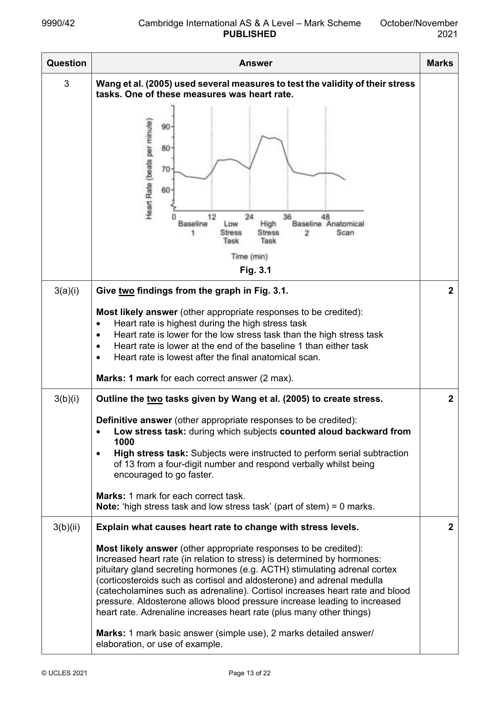
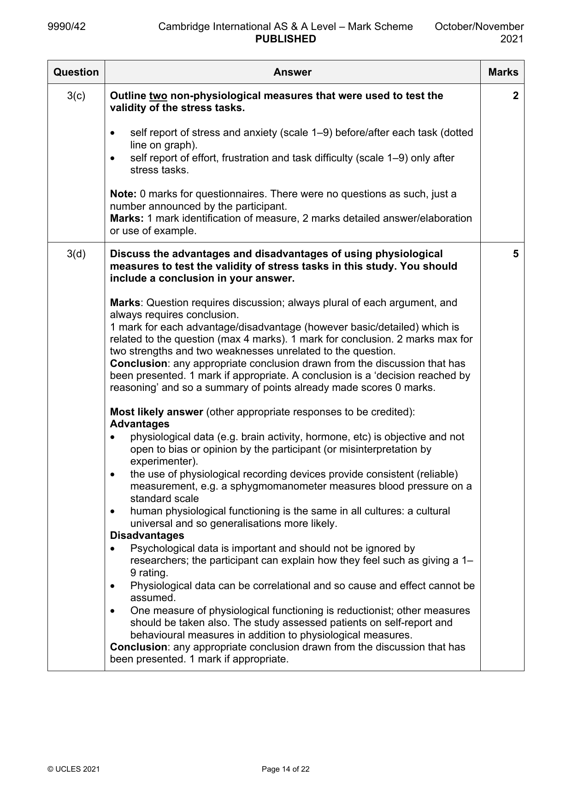
3 Wang et al. (2005) used several measures to test the validity of their stress
tasks. One of these measures was heart rate.
Fig. 3.1
3(a)(i) Give two findings from the graph in Fig. 3.1. 2
Most likely answer (other appropriate responses to be credited):
• Heart rate is highest during the high stress task
• Heart rate is lower for the low stress task than the high stress task
• Heart rate is lower at the end of the baseline 1 than either task
• Heart rate is lowest after the final anatomical scan.
Marks: 1 mark for each correct answer (2 max).
3(b)(i) Outline the two tasks given by Wang et al. (2005) to create stress. 2
Definitive answer (other appropriate responses to be credited):
• Low stress task: during which subjects counted aloud backward from
1000
• High stress task: Subjects were instructed to perform serial subtraction
of 13 from a four-digit number and respond verbally whilst being
encouraged to go faster.
Marks: 1 mark for each correct task.
Note: ‘high stress task and low stress task’ (part of stem) = 0 marks.
3(b)(ii) Explain what causes heart rate to change with stress levels. 2
Most likely answer (other appropriate responses to be credited):
Increased heart rate (in relation to stress) is determined by hormones:
pituitary gland secreting hormones (e.g. ACTH) stimulating adrenal cortex
(corticosteroids such as cortisol and aldosterone) and adrenal medulla
(catecholamines such as adrenaline). Cortisol increases heart rate and blood
pressure. Aldosterone allows blood pressure increase leading to increased
heart rate. Adrenaline increases heart rate (plus many other things)
Marks: 1 mark basic answer (simple use), 2 marks detailed answer/
elaboration, or use of example.
© UCLES 2021 Page 13 of 22
3(c) Outline two non-physiological measures that were used to test the 2
validity of the stress tasks.
• self report of stress and anxiety (scale 1–9) before/after each task (dotted
line on graph).
• self report of effort, frustration and task difficulty (scale 1–9) only after
stress tasks.
Note: 0 marks for questionnaires. There were no questions as such, just a
number announced by the participant.
Marks: 1 mark identification of measure, 2 marks detailed answer/elaboration
or use of example.
3(d) Discuss the advantages and disadvantages of using physiological 5
measures to test the validity of stress tasks in this study. You should
include a conclusion in your answer.
Marks: Question requires discussion; always plural of each argument, and
always requires conclusion.
1 mark for each advantage/disadvantage (however basic/detailed) which is
related to the question (max 4 marks). 1 mark for conclusion. 2 marks max for
two strengths and two weaknesses unrelated to the question.
Conclusion: any appropriate conclusion drawn from the discussion that has
been presented. 1 mark if appropriate. A conclusion is a ‘decision reached by
reasoning’ and so a summary of points already made scores 0 marks.
Most likely answer (other appropriate responses to be credited):
Advantages
• physiological data (e.g. brain activity, hormone, etc) is objective and not
open to bias or opinion by the participant (or misinterpretation by
experimenter).
• the use of physiological recording devices provide consistent (reliable)
measurement, e.g. a sphygmomanometer measures blood pressure on a
standard scale
• human physiological functioning is the same in all cultures: a cultural
universal and so generalisations more likely.
Disadvantages
• Psychological data is important and should not be ignored by
researchers; the participant can explain how they feel such as giving a 1–
9 rating.
• Physiological data can be correlational and so cause and effect cannot be
assumed.
• One measure of physiological functioning is reductionist; other measures
should be taken also. The study assessed patients on self-report and
behavioural measures in addition to physiological measures.
Conclusion: any appropriate conclusion drawn from the discussion that has
been presented. 1 mark if appropriate.
© UCLES 2021 Page 14 of 22
Official mark scheme pages: 13, 14 · source PDF URL
9990-2021-on-42-q07
Oct/Nov 2021 · Paper 42 · Question 7 · 18 marks
7(a) Design an experiment to investigate whether pain treatment using 10
medical techniques (biochemical) is more effective than alternative
techniques (acupuncture, stimulation therapy/TENS) for treating chronic
pain.
Marks: use generic levels of response Design a study question part (a).
Additional: Candidates should design the study showing evidence of design
features appropriate to the named method. The named method: experiment
Specific features: Experiments: type, IV, DV, controls, experimental design.
General features of research methodology: sampling technique and
sample, type of data, ethics, reliability, validity, data analysis.
7(b) Explain the psychological and methodological evidence on which your 8
study is based.
Marks: use generic levels of response ‘Design a study’ question part (b).
NB If only methodological or psychological explanation is provided max 5
marks
Candidates are expected to explain the reasons for the suggested design in
part (a). Explanation should be both psychological and methodological.
Psychological to include appropriate theory or research.
Additional: candidates are expected to justify their decisions or evidence
presented regarding the design made in answer to question part (a).
Syllabus: managing and controlling pain: medical techniques (biochemical);
alternative techniques (acupuncture, stimulation therapy/TENS)
Psychological:
Must be chronic pain rather than acute. Straight contrasts between
biochemical (various types of pain medication) and one or more alternatives.
Methodological: explanation of method using general and specific features
as above.
© UCLES 2021 Page 19 of 22
Official mark scheme pages: 19 · source PDF URL
9990-2021-on-42-q11
Oct/Nov 2021 · Paper 42 · Question 11 · 12 marks

11 Psychological measures of stress, such as the measure of life events 12
proposed by Holmes and Rahe, are too subjective to be of any use.’
To what extent do you agree with this statement? Use examples of
research you have studied to support your answer.
Marks: use generic levels of response in table C.
Syllabus: life events (Holmes & Rahe 1967), personality (Friedman &
Rosenman 1974)
Most likely (any other appropriate responses should be credited):
No use:
• People can answer in any way they choose, such as giving socially
desirable responses
• Such questionnaires produce subjective rather than objective data (even
if a number is applied)
• Psychological measures ignore the role played by physiology
• Such questionnaires are restricted to the culture in which they were
written
Useful:
• useful because they give a measure and (quantitative data) that can be
compared
• They validate physiological measures (e.g. Wang study)
• Psychological questionnaires can be applied to specific aspects of life
that cause stress, such as life events or personality type.
Question Answer Marks
Official mark scheme pages: 22 · source PDF URL
9990-2021-on-43-q03
Oct/Nov 2021 · Paper 43 · Question 3 · 15 marks
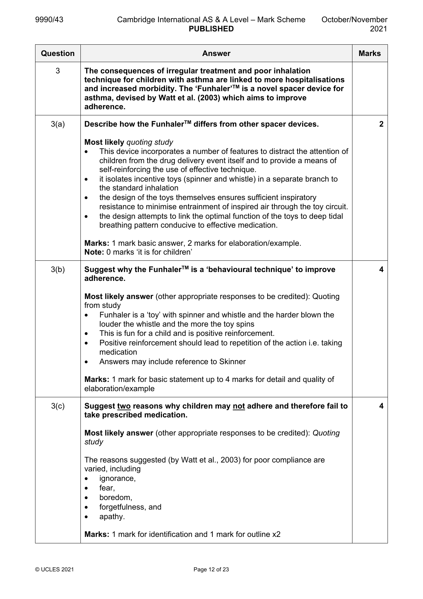
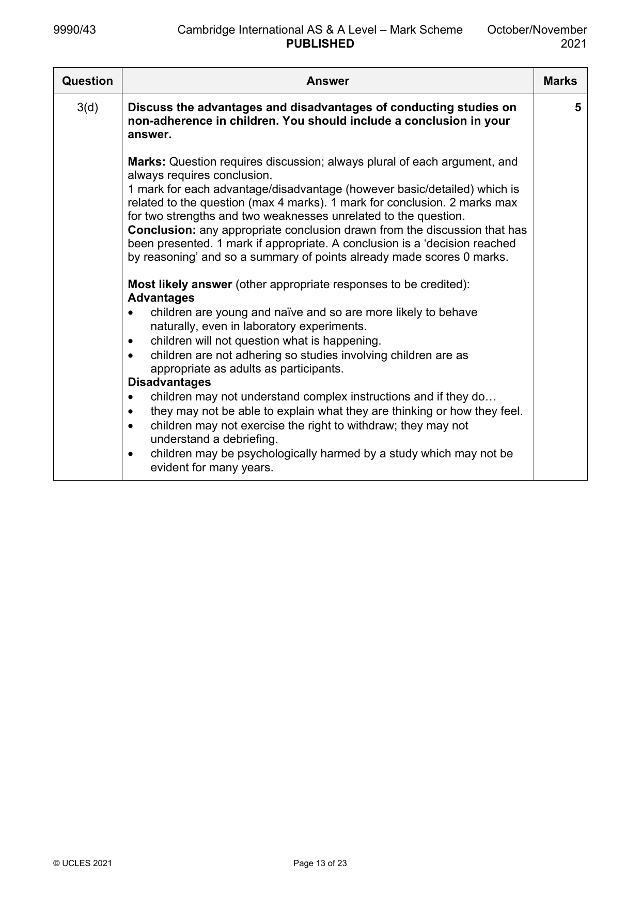
3 The consequences of irregular treatment and poor inhalation
technique for children with asthma are linked to more hospitalisations
and increased morbidity. The ‘Funhaler’TM is a novel spacer device for
asthma, devised by Watt et al. (2003) which aims to improve
adherence.
3(a) Describe how the FunhalerTM differs from other spacer devices. 2
Most likely quoting study
• This device incorporates a number of features to distract the attention of
children from the drug delivery event itself and to provide a means of
self-reinforcing the use of effective technique.
• it isolates incentive toys (spinner and whistle) in a separate branch to
the standard inhalation
• the design of the toys themselves ensures sufficient inspiratory
resistance to minimise entrainment of inspired air through the toy circuit.
• the design attempts to link the optimal function of the toys to deep tidal
breathing pattern conducive to effective medication.
Marks: 1 mark basic answer, 2 marks for elaboration/example.
Note: 0 marks ‘it is for children’
3(b) Suggest why the FunhalerTM is a ‘behavioural technique’ to improve 4
adherence.
Most likely answer (other appropriate responses to be credited): Quoting
from study
• Funhaler is a ‘toy’ with spinner and whistle and the harder blown the
louder the whistle and the more the toy spins
• This is fun for a child and is positive reinforcement.
• Positive reinforcement should lead to repetition of the action i.e. taking
medication
• Answers may include reference to Skinner
Marks: 1 mark for basic statement up to 4 marks for detail and quality of
elaboration/example
3(c) Suggest two reasons why children may not adhere and therefore fail to 4
take prescribed medication.
Most likely answer (other appropriate responses to be credited): Quoting
study
The reasons suggested (by Watt et al., 2003) for poor compliance are
varied, including
• ignorance,
• fear,
• boredom,
• forgetfulness, and
• apathy.
Marks: 1 mark for identification and 1 mark for outline x2
© UCLES 2021 Page 12 of 23
3(d) Discuss the advantages and disadvantages of conducting studies on 5
non-adherence in children. You should include a conclusion in your
answer.
Marks: Question requires discussion; always plural of each argument, and
always requires conclusion.
1 mark for each advantage/disadvantage (however basic/detailed) which is
related to the question (max 4 marks). 1 mark for conclusion. 2 marks max
for two strengths and two weaknesses unrelated to the question.
Conclusion: any appropriate conclusion drawn from the discussion that has
been presented. 1 mark if appropriate. A conclusion is a ‘decision reached
by reasoning’ and so a summary of points already made scores 0 marks.
Most likely answer (other appropriate responses to be credited):
Advantages
• children are young and naïve and so are more likely to behave
naturally, even in laboratory experiments.
• children will not question what is happening.
• children are not adhering so studies involving children are as
appropriate as adults as participants.
Disadvantages
• children may not understand complex instructions and if they do…
• they may not be able to explain what they are thinking or how they feel.
• children may not exercise the right to withdraw; they may not
understand a debriefing.
• children may be psychologically harmed by a study which may not be
evident for many years.
© UCLES 2021 Page 13 of 23
Official mark scheme pages: 12, 13 · source PDF URL
9990-2021-on-43-q07
Oct/Nov 2021 · Paper 43 · Question 7 · 18 marks
7(a) The health belief model provides many reasons to explain why people 10
do not adhere to medical requests.
Design a study to investigate which reasons for non-adherence are
most common in people from different age groups.
Marks: use generic levels of response Design a study question part (a).
Additional: Candidates should design the study showing evidence of
design features appropriate to the named method. The named method: any
appropriate method.
Specific features:
• Experiments: type, IV, DV, controls, experimental design.
• Observations: type, setting, response categories, sampling frame,
number of observers.
• Questionnaires/Interviews: type, setting, example questions.
Scoring/rating scale, analysis of responses.
General features of research methodology: sampling technique &
sample, type of data, ethics, reliability, validity, data analysis.
7(b) Explain the psychological and methodological evidence on which your 8
study is based.
Marks: use generic levels of response ‘Design a study’ question part (b).
Note: If only methodological or psychological explanation is provided max 5
marks
Candidates are expected to explain the reasons for the suggested design in
part (a). Explanation should be both psychological and methodological.
Psychological to include appropriate theory or research.
Additional: candidates are expected to justify their decisions or evidence
presented regarding the design made in answer to question part (a).
Syllabus: the health belief model (Becker and Rosenstock, 1974)
Psychological:
The health belief model is complex. Candidate could write about ‘individual
perceptions’: perceived seriousness and perceived susceptibility.
Alternatively about ‘modifying factors’ such as demographic variables, socio-
psychological variables and cues to action. Alternatively about ‘cues to
action’ such as media campaigns and advice from others.
Methodological: explanation of method using general and specific features
as above.
© UCLES 2021 Page 18 of 23
Official mark scheme pages: 18 · source PDF URL
9990-2021-on-43-q11
Oct/Nov 2021 · Paper 43 · Question 11 · 12 marks
11 ‘Young people have unrealistic optimism therefore do not think it is 12
necessary to prevent stress.’
To what extent do you agree with this statement? Use examples of
research you have studied to support your answer.
Marks: use generic levels of response in table C.
Syllabus: unrealistic optimism (Weinstein, 1980); preventing stress
(Meichenbaum, 1985)
Most likely (any other appropriate responses should be credited):
For:
• Weinstein found the participants rated their own chances to be above
average for positive events and below average for negative events i.e.
students have unrealistic optimism.
• Young people/students are generally fit and healthy and are not
concerned with extending their lives
• Lau et al. outline the ‘enduring family socialisation model’ where values
learned as a child remain stable, and so are not open to change
Against:
• Some people do not have unrealistic optimism and believe it will
happen to them.
• Some people are hypochondriacs and assume minor ailments are
major illnesses. They will undergo stress inoculation if it helps prevent
stress.
• Some people have a ‘lifelong openness’ view (Lau et al.) and are
always open to persuasion – they have unrealistic optimism because
they haven’t yet been persuaded (providing information or fear appeal).
© UCLES 2021 Page 22 of 23
Official mark scheme pages: 22 · source PDF URL
9990-2022-mj-31-q05
May/June 2022 · Paper 31 · Question 5 · 12 marks
5(a) Explain why people with Type A personality are more likely to experience stress-related illness. 2
Award 1 mark for a basic explanation of the term/concept.
Award 2 marks for a detailed explanation of the term/concept.
For example:
Friedman and Rosenman believed that certain personality types were more prone to stress than others. They found that
Type A personality (competitive, controlling) people were more prone to stress related illnesses such as CHD. (1) Those
with Type B personality (not competitive, non-controlling, more ‘laid back’) were less prone to these illnesses. This would
suggest that Type A personality types were more prone to stress than Type B. (1)
OR
People with Type A personality are more likely to experience stress-related illnesses due to their personality which is
competitive and controlling. (1) This could lead a person to work long-hours, have poor sleep, etc. and therefore would be
more prone to get CHD. (1)
Other appropriate responses should also be credited.
© UCLES 2022 Page 18 of 27
5(b) Describe stress inoculation training (SIT) as a technique for preventing stress (Meichenbaum, 1985). 4
Award 1–2 marks for a basic answer with some understanding of the topic area.
Award 3–4 marks for a detailed answer with clear understanding of the topic area.
For example
Stress inoculation training – a form of CBT. Three phases
1 Conceptualisation – discussing the nature of the problem with the therapist. Taught about stressors and how they
affect the body.
2 Skills acquisition and rehearsal – taught relaxation and problem-solving techniques and practice in the session.
3 Application and follow through – the client practices between sessions and they discuss with the therapist how it is
going and make alterations as necessary.
(4 marks)
As a result of going for this type of therapy the patient will experience less stress. They will be able to use the relaxation
and problem-solving techniques learned in therapy and apply them in new situations where they might have previously
found stressful. (2)
Other appropriate responses should also be credited.
© UCLES 2022 Page 19 of 27
5(c) Explain one strength and one weakness of stress inoculation training (SIT) as a technique for preventing stress. 6
Likely strengths include –
Effectiveness – This is a good treatment that can help patients in the long term. Patients will learn techniques that
prevent stress and improve the quality of their life. It provides a variety of coping strategies so if one doesn’t work the
patient can try another one. It reviews the effectiveness for each patient during therapy and adjustments can be made.
It does not involve taking any medication which might have side effects and can be addictive.
Allows for individual differences to be addressed in terms of preventing stress. Everyone will face different stressful
events and the therapy is tailored to suit each individual patient’s life. Different coping strategies and relaxation
techniques will work better for some than others and this can also be tailored to suit the individual.
It is a somewhat holistic strategy that takes place over a number of sessions. It involves a combination of techniques –
building a good patient/therapist relationship, discussing stressful experiences and then building a toolkit of techniques
to deal with these experiences/new events, it also reviews the effectiveness of the strategies once the patient has had
the opportunity to try out the coping strategies.
Likely weaknesses include –
Might not be appropriate for all patients – some patients will not wish to talk about private experiences and feelings so
may not be suited to SIT.
Could also be argued to be reductionist strategy as it is ignoring the biological causes of stress. Some patients may be
more prone to stress due to differences in their underlying nervous system and therefore find the coping strategies
either don’t work for them or are much more difficult to implement.
Cost/time of treatment – likely to be a level 1 or 2 response.
Mark according to the levels of response criteria below:
Level 3 (5–6 marks)
Candidates will show a clear understanding of the question and will explain one strength and one weakness.
Candidates will provide a good explanation with clear detail.
Level 2 (3–4 marks)
Candidates will show an understanding of the question and will explain one appropriate weakness in detail or one
appropriate strength in detail.
OR one weakness and one strength in less detail.
© UCLES 2022 Page 20 of 27
5(c) Level 1 (1–2 marks)
Candidates will show a basic understanding of the question and will attempt an explanation of either a strength or a
weakness. They could include both but just as an attempt.
Candidates will provide a limited explanation.
Level 0 (0 marks)
No response worthy of credit.
Other appropriate responses should also be credited.
© UCLES 2022 Page 21 of 27
Official mark scheme pages: 18, 19, 20, 21 · source PDF URL
9990-2022-mj-31-q06
May/June 2022 · Paper 31 · Question 6 · 18 marks
6(a) Describe what psychologists have discovered about managing and controlling pain. 8
Managing and controlling pain, including the following:
Medical techniques (biochemical)
psychological techniques: cognitive strategies (attention diversion, non-pain imagery and cognitive redefinition)
alternative techniques (acupuncture, stimulation therapy/TENS)
Medical techniques
Analgesic or painkiller used to achieve relief from the pain. These act on the central nervous system. For example, aspirin
act against the pain, inflammation and also against fever.
Candidates may describe other types of medication (e.g. paracetamol or surgery which are all creditworthy).
Psychological techniques
Attention diversion – focus or think of something other than the pain. This could include listening to music, playing a card or
computer game, reading, etc.
Non-pain imagery – The patient thinks of a scene far removed from the situation there are currently in that is where they
are experiencing the pain. This could be somewhere like a park or beach and this acts as a distraction against the pain.
Cognitive redefinition – Alters thinking to replace anxious thoughts about the pain with more positive thoughts. Can also
include redefining the pain as a different sensation such as pressure, warmth or cold.
Alternative techniques
Acupuncture – fine metal needles are inserted under the skin based on Chinese medicine. The therapist will have a ‘map’
of the body and use this to guide the placement of the needles. Electrical impulses or heat can also be applied to the
needles. Increases the flow of Chi which reduces the pain and/or reduces tension in the muscles.
Stimulation therapy/TENS – A mild electric current is passed between electrodes which are placed on the skin and should
reduce the sensation of pain. These electrical impulses flood the nervous system, reducing its ability to transmit pain
signals to the spinal cord and brain. Also reduces tension in muscles around the application site.
© UCLES 2022 Page 22 of 27
6(a) Mark according to the levels of response descriptors in Table A.
Other appropriate responses should also be credited.
6(b) Evaluate what psychologists have discovered about managing and controlling pain, including a discussion about 10
determinism versus free will.
A range of issues could be used for evaluation here. These include:
Named issue – Determinism versus free will. Level 3 and 4 responses will provide a balanced argument for both
sides of the debate. It is the free will of all patients to take medication and/or implement the alternative therapies. For
example, a patient will be given a patient-controlled device so they can self-administer when needed. However, it is
somewhat deterministic as it will depend on whether the practitioner is willing and able to prescribe the medication or
offer the alternative treatment. The experience of pain often feels out of the control of the patient so is deterministic by
biological causes. However, if the patient exerts their free will by taking medication or using an alternative method this
should help to alleviate some of their symptoms. Candidates may refer to the patient having some control to either
open or close the gate as referenced in Gate Control theory – which shows free will.
Practical applications of management techniques
Appropriateness/effectiveness and appropriateness of management techniques (including side effects, cost, ease of
implementing management technique)
Scientific basis/evidence for effectiveness of technique
Evaluation/comparison of approaches on which the techniques are based.
Mark according to the levels of response descriptors in Table B.
Other appropriate responses should also be credited.
© UCLES 2022 Page 23 of 27
Official mark scheme pages: 22, 23 · source PDF URL
9990-2022-mj-32-q05
May/June 2022 · Paper 32 · Question 5 · 12 marks
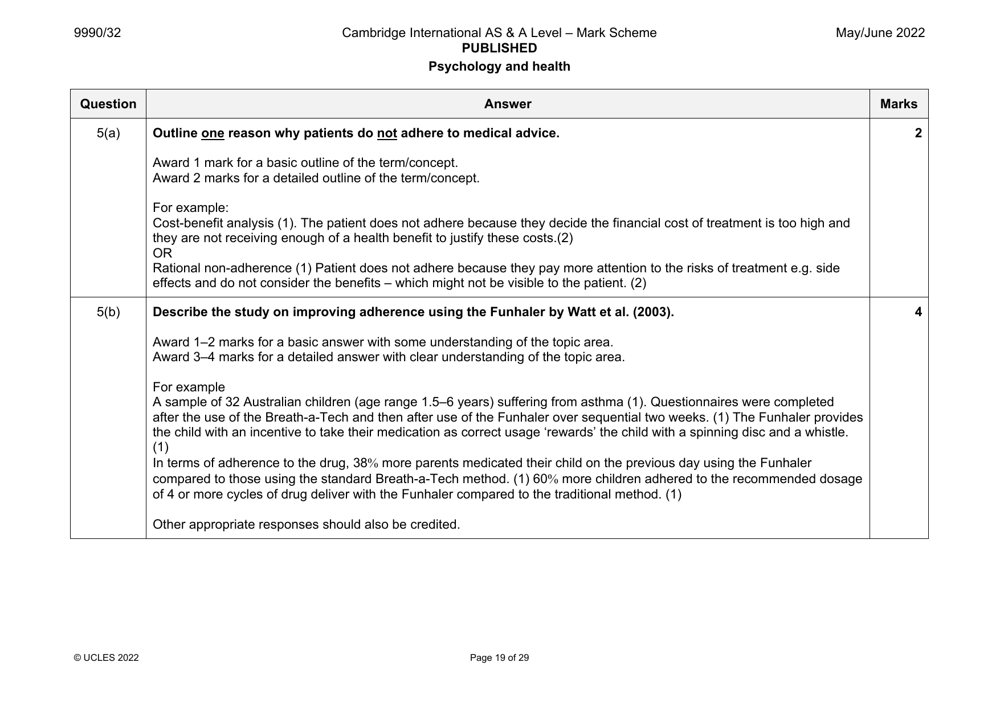
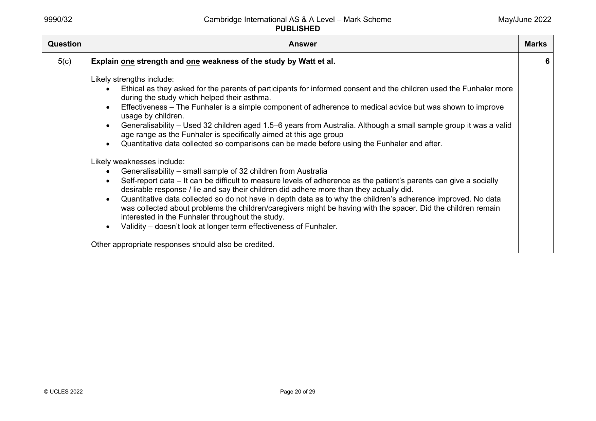
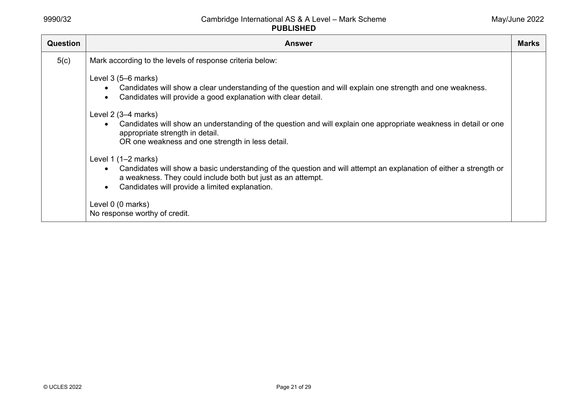
5(a) Outline one reason why patients do not adhere to medical advice. 2
Award 1 mark for a basic outline of the term/concept.
Award 2 marks for a detailed outline of the term/concept.
For example:
Cost-benefit analysis (1). The patient does not adhere because they decide the financial cost of treatment is too high and
they are not receiving enough of a health benefit to justify these costs.(2)
OR
Rational non-adherence (1) Patient does not adhere because they pay more attention to the risks of treatment e.g. side
effects and do not consider the benefits – which might not be visible to the patient. (2)
5(b) Describe the study on improving adherence using the Funhaler by Watt et al. (2003). 4
Award 1–2 marks for a basic answer with some understanding of the topic area.
Award 3–4 marks for a detailed answer with clear understanding of the topic area.
For example
A sample of 32 Australian children (age range 1.5–6 years) suffering from asthma (1). Questionnaires were completed
after the use of the Breath-a-Tech and then after use of the Funhaler over sequential two weeks. (1) The Funhaler provides
the child with an incentive to take their medication as correct usage ‘rewards’ the child with a spinning disc and a whistle.
(1)
In terms of adherence to the drug, 38 more parents medicated their child on the previous day using the Funhaler
compared to those using the standard Breath-a-Tech method. (1) 60 more children adhered to the recommended dosage
of 4 or more cycles of drug deliver with the Funhaler compared to the traditional method. (1)
Other appropriate responses should also be credited.
© UCLES 2022 Page 19 of 29
5(c) Explain one strength and one weakness of the study by Watt et al. 6
Likely strengths include:
Ethical as they asked for the parents of participants for informed consent and the children used the Funhaler more
during the study which helped their asthma.
Effectiveness – The Funhaler is a simple component of adherence to medical advice but was shown to improve
usage by children.
Generalisability – Used 32 children aged 1.5–6 years from Australia. Although a small sample group it was a valid
age range as the Funhaler is specifically aimed at this age group
Quantitative data collected so comparisons can be made before using the Funhaler and after.
Likely weaknesses include:
Generalisability – small sample of 32 children from Australia
Self-report data – It can be difficult to measure levels of adherence as the patient’s parents can give a socially
desirable response / lie and say their children did adhere more than they actually did.
Quantitative data collected so do not have in depth data as to why the children’s adherence improved. No data
was collected about problems the children/caregivers might be having with the spacer. Did the children remain
interested in the Funhaler throughout the study.
Validity – doesn’t look at longer term effectiveness of Funhaler.
Other appropriate responses should also be credited.
© UCLES 2022 Page 20 of 29
5(c) Mark according to the levels of response criteria below:
Level 3 (5–6 marks)
Candidates will show a clear understanding of the question and will explain one strength and one weakness.
Candidates will provide a good explanation with clear detail.
Level 2 (3–4 marks)
Candidates will show an understanding of the question and will explain one appropriate weakness in detail or one
appropriate strength in detail.
OR one weakness and one strength in less detail.
Level 1 (1–2 marks)
Candidates will show a basic understanding of the question and will attempt an explanation of either a strength or
a weakness. They could include both but just as an attempt.
Candidates will provide a limited explanation.
Level 0 (0 marks)
No response worthy of credit.
© UCLES 2022 Page 21 of 29
Official mark scheme pages: 19, 20, 21 · source PDF URL
9990-2022-mj-32-q06
May/June 2022 · Paper 32 · Question 6 · 18 marks
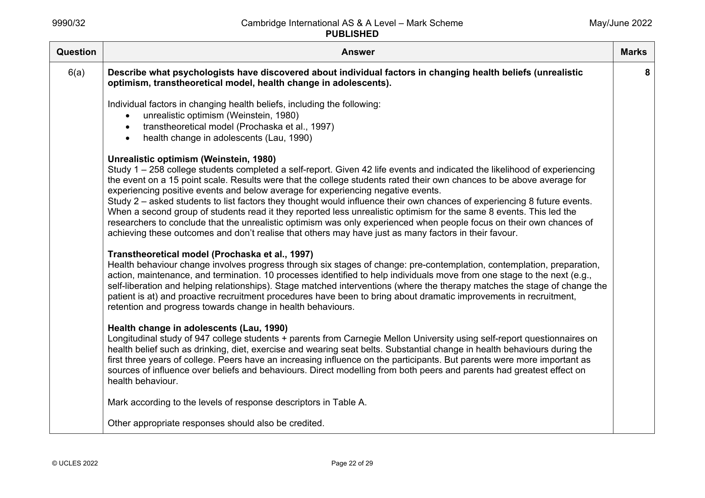
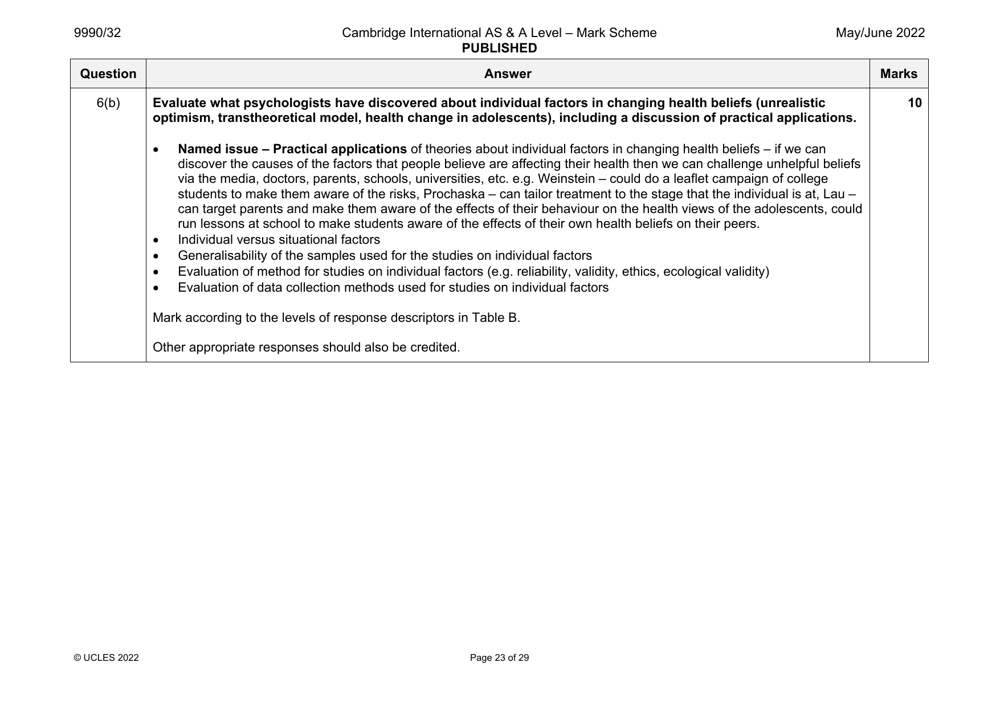
6(a) Describe what psychologists have discovered about individual factors in changing health beliefs (unrealistic 8
optimism, transtheoretical model, health change in adolescents).
Individual factors in changing health beliefs, including the following:
unrealistic optimism (Weinstein, 1980)
transtheoretical model (Prochaska et al., 1997)
health change in adolescents (Lau, 1990)
Unrealistic optimism (Weinstein, 1980)
Study 1 – 258 college students completed a self-report. Given 42 life events and indicated the likelihood of experiencing
the event on a 15 point scale. Results were that the college students rated their own chances to be above average for
experiencing positive events and below average for experiencing negative events.
Study 2 – asked students to list factors they thought would influence their own chances of experiencing 8 future events.
When a second group of students read it they reported less unrealistic optimism for the same 8 events. This led the
researchers to conclude that the unrealistic optimism was only experienced when people focus on their own chances of
achieving these outcomes and don’t realise that others may have just as many factors in their favour.
Transtheoretical model (Prochaska et al., 1997)
Health behaviour change involves progress through six stages of change: pre-contemplation, contemplation, preparation,
action, maintenance, and termination. 10 processes identified to help individuals move from one stage to the next (e.g.,
self-liberation and helping relationships). Stage matched interventions (where the therapy matches the stage of change the
patient is at) and proactive recruitment procedures have been to bring about dramatic improvements in recruitment,
retention and progress towards change in health behaviours.
Health change in adolescents (Lau, 1990)
Longitudinal study of 947 college students + parents from Carnegie Mellon University using self-report questionnaires on
health belief such as drinking, diet, exercise and wearing seat belts. Substantial change in health behaviours during the
first three years of college. Peers have an increasing influence on the participants. But parents were more important as
sources of influence over beliefs and behaviours. Direct modelling from both peers and parents had greatest effect on
health behaviour.
Mark according to the levels of response descriptors in Table A.
Other appropriate responses should also be credited.
© UCLES 2022 Page 22 of 29
6(b) Evaluate what psychologists have discovered about individual factors in changing health beliefs (unrealistic 10
optimism, transtheoretical model, health change in adolescents), including a discussion of practical applications.
Named issue – Practical applications of theories about individual factors in changing health beliefs – if we can
discover the causes of the factors that people believe are affecting their health then we can challenge unhelpful beliefs
via the media, doctors, parents, schools, universities, etc. e.g. Weinstein – could do a leaflet campaign of college
students to make them aware of the risks, Prochaska – can tailor treatment to the stage that the individual is at, Lau –
can target parents and make them aware of the effects of their behaviour on the health views of the adolescents, could
run lessons at school to make students aware of the effects of their own health beliefs on their peers.
Individual versus situational factors
Generalisability of the samples used for the studies on individual factors
Evaluation of method for studies on individual factors (e.g. reliability, validity, ethics, ecological validity)
Evaluation of data collection methods used for studies on individual factors
Mark according to the levels of response descriptors in Table B.
Other appropriate responses should also be credited.
© UCLES 2022 Page 23 of 29
Official mark scheme pages: 22, 23 · source PDF URL
9990-2022-mj-33-q05
May/June 2022 · Paper 33 · Question 5 · 12 marks
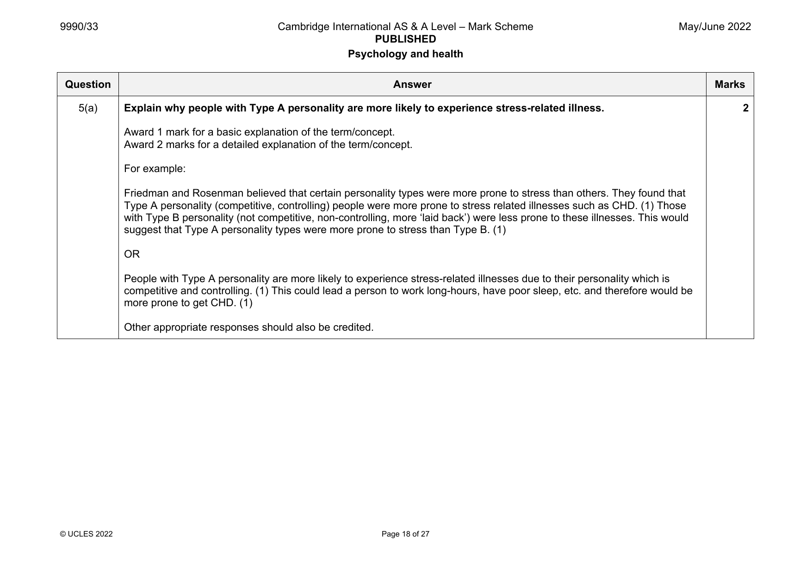
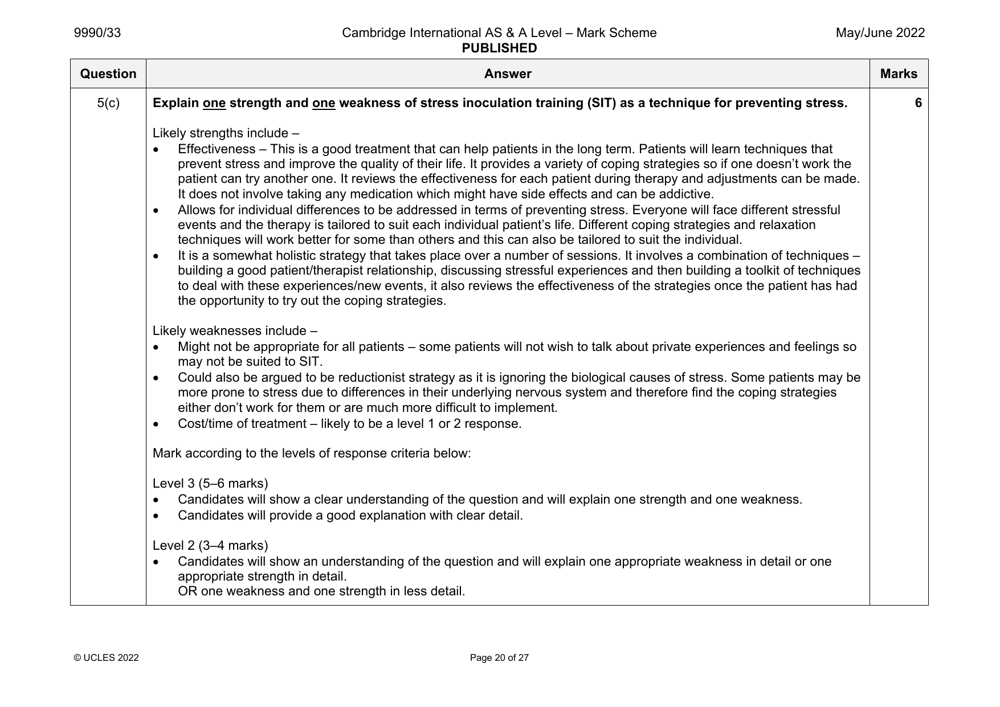
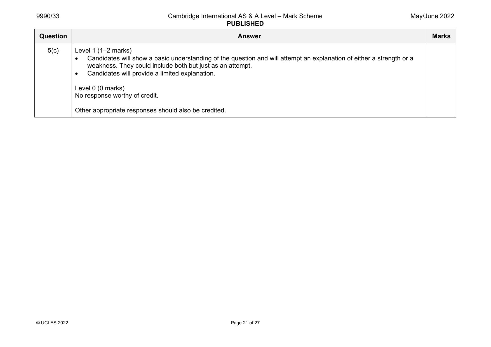
5(a) Explain why people with Type A personality are more likely to experience stress-related illness. 2
Award 1 mark for a basic explanation of the term/concept.
Award 2 marks for a detailed explanation of the term/concept.
For example:
Friedman and Rosenman believed that certain personality types were more prone to stress than others. They found that
Type A personality (competitive, controlling) people were more prone to stress related illnesses such as CHD. (1) Those
with Type B personality (not competitive, non-controlling, more ‘laid back’) were less prone to these illnesses. This would
suggest that Type A personality types were more prone to stress than Type B. (1)
OR
People with Type A personality are more likely to experience stress-related illnesses due to their personality which is
competitive and controlling. (1) This could lead a person to work long-hours, have poor sleep, etc. and therefore would be
more prone to get CHD. (1)
Other appropriate responses should also be credited.
© UCLES 2022 Page 18 of 27
5(b) Describe stress inoculation training (SIT) as a technique for preventing stress (Meichenbaum, 1985). 4
Award 1–2 marks for a basic answer with some understanding of the topic area.
Award 3–4 marks for a detailed answer with clear understanding of the topic area.
For example
Stress inoculation training – a form of CBT. Three phases
1 Conceptualisation – discussing the nature of the problem with the therapist. Taught about stressors and how they
affect the body.
2 Skills acquisition and rehearsal – taught relaxation and problem-solving techniques and practice in the session.
3 Application and follow through – the client practices between sessions and they discuss with the therapist how it is
going and make alterations as necessary.
(4 marks)
As a result of going for this type of therapy the patient will experience less stress. They will be able to use the relaxation
and problem-solving techniques learned in therapy and apply them in new situations where they might have previously
found stressful. (2)
Other appropriate responses should also be credited.
© UCLES 2022 Page 19 of 27
5(c) Explain one strength and one weakness of stress inoculation training (SIT) as a technique for preventing stress. 6
Likely strengths include –
Effectiveness – This is a good treatment that can help patients in the long term. Patients will learn techniques that
prevent stress and improve the quality of their life. It provides a variety of coping strategies so if one doesn’t work the
patient can try another one. It reviews the effectiveness for each patient during therapy and adjustments can be made.
It does not involve taking any medication which might have side effects and can be addictive.
Allows for individual differences to be addressed in terms of preventing stress. Everyone will face different stressful
events and the therapy is tailored to suit each individual patient’s life. Different coping strategies and relaxation
techniques will work better for some than others and this can also be tailored to suit the individual.
It is a somewhat holistic strategy that takes place over a number of sessions. It involves a combination of techniques –
building a good patient/therapist relationship, discussing stressful experiences and then building a toolkit of techniques
to deal with these experiences/new events, it also reviews the effectiveness of the strategies once the patient has had
the opportunity to try out the coping strategies.
Likely weaknesses include –
Might not be appropriate for all patients – some patients will not wish to talk about private experiences and feelings so
may not be suited to SIT.
Could also be argued to be reductionist strategy as it is ignoring the biological causes of stress. Some patients may be
more prone to stress due to differences in their underlying nervous system and therefore find the coping strategies
either don’t work for them or are much more difficult to implement.
Cost/time of treatment – likely to be a level 1 or 2 response.
Mark according to the levels of response criteria below:
Level 3 (5–6 marks)
Candidates will show a clear understanding of the question and will explain one strength and one weakness.
Candidates will provide a good explanation with clear detail.
Level 2 (3–4 marks)
Candidates will show an understanding of the question and will explain one appropriate weakness in detail or one
appropriate strength in detail.
OR one weakness and one strength in less detail.
© UCLES 2022 Page 20 of 27
5(c) Level 1 (1–2 marks)
Candidates will show a basic understanding of the question and will attempt an explanation of either a strength or a
weakness. They could include both but just as an attempt.
Candidates will provide a limited explanation.
Level 0 (0 marks)
No response worthy of credit.
Other appropriate responses should also be credited.
© UCLES 2022 Page 21 of 27
Official mark scheme pages: 18, 19, 20, 21 · source PDF URL
9990-2022-mj-33-q06
May/June 2022 · Paper 33 · Question 6 · 18 marks
6(a) Describe what psychologists have discovered about managing and controlling pain. 8
Managing and controlling pain, including the following:
Medical techniques (biochemical)
psychological techniques: cognitive strategies (attention diversion, non-pain imagery and cognitive redefinition)
alternative techniques (acupuncture, stimulation therapy/TENS)
Medical techniques
Analgesic or painkiller used to achieve relief from the pain. These act on the central nervous system. For example, aspirin
act against the pain, inflammation and also against fever.
Candidates may describe other types of medication (e.g. paracetamol or surgery which are all creditworthy).
Psychological techniques
Attention diversion – focus or think of something other than the pain. This could include listening to music, playing a card or
computer game, reading, etc.
Non-pain imagery – The patient thinks of a scene far removed from the situation there are currently in that is where they
are experiencing the pain. This could be somewhere like a park or beach and this acts as a distraction against the pain.
Cognitive redefinition – Alters thinking to replace anxious thoughts about the pain with more positive thoughts. Can also
include redefining the pain as a different sensation such as pressure, warmth or cold.
Alternative techniques
Acupuncture – fine metal needles are inserted under the skin based on Chinese medicine. The therapist will have a ‘map’
of the body and use this to guide the placement of the needles. Electrical impulses or heat can also be applied to the
needles. Increases the flow of Chi which reduces the pain and/or reduces tension in the muscles.
Stimulation therapy/TENS – A mild electric current is passed between electrodes which are placed on the skin and should
reduce the sensation of pain. These electrical impulses flood the nervous system, reducing its ability to transmit pain
signals to the spinal cord and brain. Also reduces tension in muscles around the application site.
© UCLES 2022 Page 22 of 27
6(a) Mark according to the levels of response descriptors in Table A.
Other appropriate responses should also be credited.
6(b) Evaluate what psychologists have discovered about managing and controlling pain, including a discussion about 10
determinism versus free will.
A range of issues could be used for evaluation here. These include:
Named issue – Determinism versus free will. Level 3 and 4 responses will provide a balanced argument for both
sides of the debate. It is the free will of all patients to take medication and/or implement the alternative therapies. For
example, a patient will be given a patient-controlled device so they can self-administer when needed. However, it is
somewhat deterministic as it will depend on whether the practitioner is willing and able to prescribe the medication or
offer the alternative treatment. The experience of pain often feels out of the control of the patient so is deterministic by
biological causes. However, if the patient exerts their free will by taking medication or using an alternative method this
should help to alleviate some of their symptoms. Candidates may refer to the patient having some control to either
open or close the gate as referenced in Gate Control theory – which shows free will.
Practical applications of management techniques
Appropriateness/effectiveness and appropriateness of management techniques (including side effects, cost, ease of
implementing management technique)
Scientific basis/evidence for effectiveness of technique
Evaluation/comparison of approaches on which the techniques are based.
Mark according to the levels of response descriptors in Table B.
Other appropriate responses should also be credited.
© UCLES 2022 Page 23 of 27
Official mark scheme pages: 22, 23 · source PDF URL
9990-2022-mj-41-q03
May/June 2022 · Paper 41 · Question 3 · 15 marks
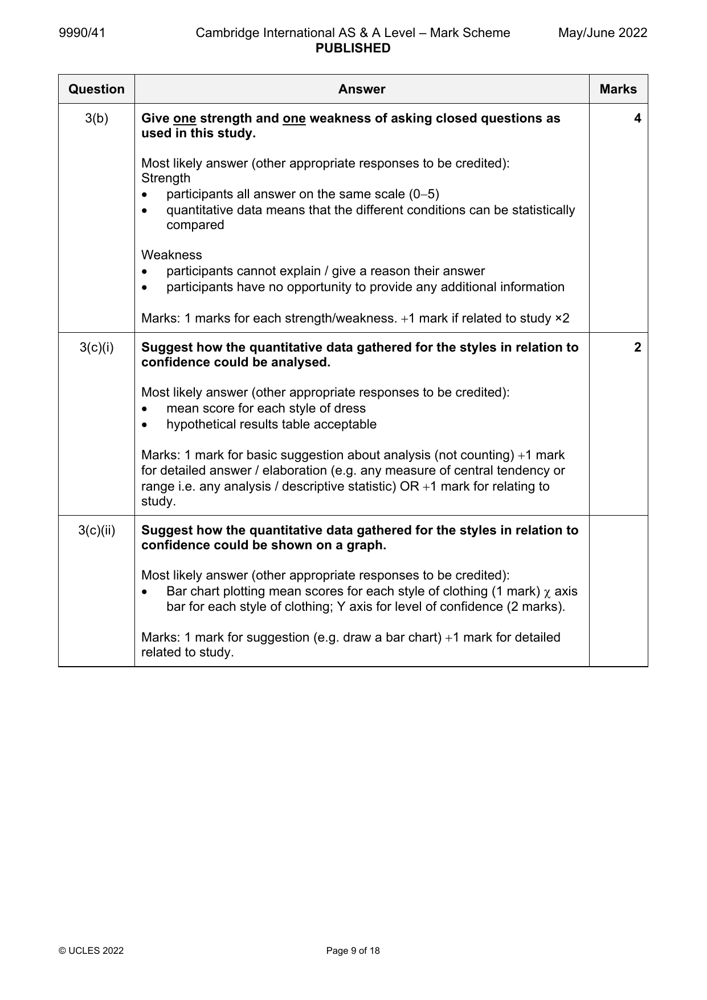

3(a) McKinstry and Wang (1991) investigated the way in which doctors’ 2
clothing influenced patients' confidence in doctors. Patients were
shown photographs of different styles of doctors’ clothing. Data was
gathered by an interviewer asking closed questions in a structured
interview.
Explain what is meant by a ‘structured interview’.
Most likely answer
same questions asked to every participant (1 mark) in same order (1
mark)
example: McKinstry & Wang asked every participant “Which doctor
would you feel happiest about seeing for the first time”
Marks: 1 mark for one feature, 2 marks for two features or detail / any
example
© UCLES 2022 Page 8 of 18
3(b) Give one strength and one weakness of asking closed questions as 4
used in this study.
Most likely answer (other appropriate responses to be credited):
Strength
participants all answer on the same scale (05)
quantitative data means that the different conditions can be statistically
compared
Weakness
participants cannot explain / give a reason their answer
participants have no opportunity to provide any additional information
Marks: 1 marks for each strength/weakness. 1 mark if related to study ×2
3(c)(i) Suggest how the quantitative data gathered for the styles in relation to 2
confidence could be analysed.
Most likely answer (other appropriate responses to be credited):
mean score for each style of dress
hypothetical results table acceptable
Marks: 1 mark for basic suggestion about analysis (not counting) 1 mark
for detailed answer / elaboration (e.g. any measure of central tendency or
range i.e. any analysis / descriptive statistic) OR 1 mark for relating to
study.
3(c)(ii) Suggest how the quantitative data gathered for the styles in relation to
confidence could be shown on a graph.
Most likely answer (other appropriate responses to be credited):
Bar chart plotting mean scores for each style of clothing (1 mark) axis
bar for each style of clothing; Y axis for level of confidence (2 marks).
Marks: 1 mark for suggestion (e.g. draw a bar chart) 1 mark for detailed
related to study.
© UCLES 2022 Page 9 of 18
3(d) Discuss the strengths and weaknesses of using photographs to gather 5
information about a doctor’s clothing. You should include a
conclusion in your answer.
Most likely answer (other appropriate responses to be credited):
Strengths:
photographs are standardised: expression and dress remain constant
the study can be replicated using the same photographs
photographs can be presented in many different locations, not restricted
to a laboratory
Weaknesses:
photographs are static; people in real life are not
photographs need consent from the actors to be used in psychological
studies
Conclusion: any appropriate conclusion drawn from the discussion that has
been presented. 1 mark if appropriate.
Marks: Question requires discussion; always plural of each argument, and
always requires conclusion.
1 mark for each strength/weakness (however detailed) and related to the
question up to 4 max. 2 marks max for two strengths/weaknesses unrelated
to the question. 1 mark for conclusion.
Question Answer Marks
Official mark scheme pages: 8, 9, 10 · source PDF URL
9990-2022-mj-41-q07
May/June 2022 · Paper 41 · Question 7 · 18 marks

7(a) Design a study to investigate whether doctor-centred or patient- 10
centred practitioners are more likely to make incorrect diagnoses.
Marks: use generic levels of response Design a study question part (a).
Additional: Candidates should design the study showing evidence of design
features appropriate to the named method. The named method is: any
appropriate method.
Specific features:
Experiments: type, IV, DV, controls, experimental design.
Observations: type, setting, response categories, sampling frame,
number of observers.
Questionnaires/Interviews: type, setting, example questions.
Scoring/rating scale, analysis of responses.
General features of research methodology: sampling technique & sample,
type of data, ethics, reliability, validity, data analysis.
© UCLES 2022 Page 14 of 18
7(b) Explain the psychological and methodological evidence on which your 8
study is based.
Marks: use generic levels of response ‘Design a study’ question part (b).
NB If only methodological or psychological explanation is provided max 5
marks
Candidates are expected to explain the reasons for the suggested design in
part (a). Explanation should be both psychological and methodological.
Psychological to include appropriate theory or research.
Additional: candidates are expected to justify their decisions or evidence
presented regarding the design made in answer to question part (a).
Syllabus: practitioner diagnosis: type I and type II errors
Psychological: no specific studies are assigned to this sub-topic, so any
knowledge about type 1 and type 2 errors can be credited. The study by
Rosenhan ‘sane in insane places’ could feature. However, doctor and
patient-centred (Byrne and Long, 1976, Savage and Armstrong, 1990) is
apposite.
Methodological: explanation of method using general and specific features
as above.
Question Answer Marks
Official mark scheme pages: 14, 15 · source PDF URL
9990-2022-mj-41-q11
May/June 2022 · Paper 41 · Question 11 · 12 marks

11 ‘A biochemical test is the only accurate way to know that a person has 12
adhered to a request to take their medication.’
To what extent do you agree with this statement? Use examples of
research you have studied to support your answer.
Marks: use generic levels of response in table C.
Syllabus: biochemical tests (Roth and Caron, 1978)
Most likely (any other appropriate responses should be credited):
For:
biochemical testing is an objective measure resulting in quantitative
data.
many studies have used biochemical tests: Roth and Caron (1978)
biochemical testing cannot be manipulated by the user: if a drug is not
in the blood, then it has not been taken
Against:
measure may not be valid: drug could be taken once, before test
measures are useful in theory, but in practice unlikely to be done due to
costs and time.
measures are invasive: involve blood test (even urine test not ideal)
there are alternative ways of objectively measuring adherence, such as
pill counting and using repeat prescriptions.
Question Answer Marks
Official mark scheme pages: 18 · source PDF URL
9990-2022-mj-42-q03
May/June 2022 · Paper 42 · Question 3 · 15 marks
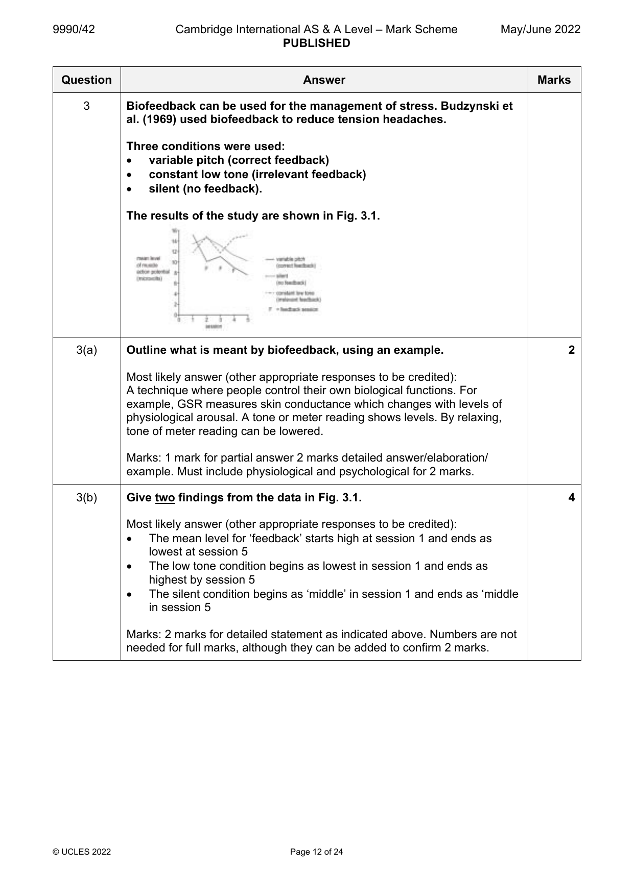
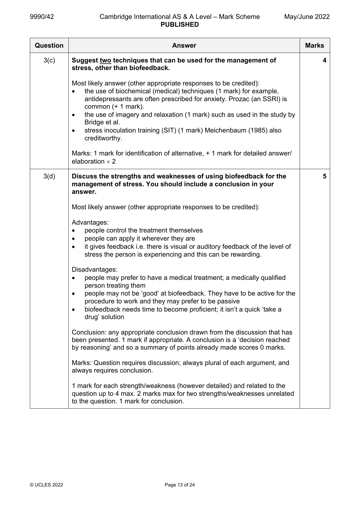
3 Biofeedback can be used for the management of stress. Budzynski et
al. (1969) used biofeedback to reduce tension headaches.
Three conditions were used:
variable pitch (correct feedback)
constant low tone (irrelevant feedback)
silent (no feedback).
The results of the study are shown in Fig. 3.1.
3(a) Outline what is meant by biofeedback, using an example. 2
Most likely answer (other appropriate responses to be credited):
A technique where people control their own biological functions. For
example, GSR measures skin conductance which changes with levels of
physiological arousal. A tone or meter reading shows levels. By relaxing,
tone of meter reading can be lowered.
Marks: 1 mark for partial answer 2 marks detailed answer/elaboration/
example. Must include physiological and psychological for 2 marks.
3(b) Give two findings from the data in Fig. 3.1. 4
Most likely answer (other appropriate responses to be credited):
The mean level for ‘feedback’ starts high at session 1 and ends as
lowest at session 5
The low tone condition begins as lowest in session 1 and ends as
highest by session 5
The silent condition begins as ‘middle’ in session 1 and ends as ‘middle
in session 5
Marks: 2 marks for detailed statement as indicated above. Numbers are not
needed for full marks, although they can be added to confirm 2 marks.
© UCLES 2022 Page 12 of 24
3(c) Suggest two techniques that can be used for the management of 4
stress, other than biofeedback.
Most likely answer (other appropriate responses to be credited):
the use of biochemical (medical) techniques (1 mark) for example,
antidepressants are often prescribed for anxiety. Prozac (an SSRI) is
common (+ 1 mark).
the use of imagery and relaxation (1 mark) such as used in the study by
Bridge et al.
stress inoculation training (SIT) (1 mark) Meichenbaum (1985) also
creditworthy.
Marks: 1 mark for identification of alternative, + 1 mark for detailed answer/
elaboration 2
3(d) Discuss the strengths and weaknesses of using biofeedback for the 5
management of stress. You should include a conclusion in your
answer.
Most likely answer (other appropriate responses to be credited):
Advantages:
people control the treatment themselves
people can apply it wherever they are
it gives feedback i.e. there is visual or auditory feedback of the level of
stress the person is experiencing and this can be rewarding.
Disadvantages:
people may prefer to have a medical treatment; a medically qualified
person treating them
people may not be ‘good’ at biofeedback. They have to be active for the
procedure to work and they may prefer to be passive
biofeedback needs time to become proficient; it isn’t a quick ‘take a
drug’ solution
Conclusion: any appropriate conclusion drawn from the discussion that has
been presented. 1 mark if appropriate. A conclusion is a ‘decision reached
by reasoning’ and so a summary of points already made scores 0 marks.
Marks: Question requires discussion; always plural of each argument, and
always requires conclusion.
1 mark for each strength/weakness (however detailed) and related to the
question up to 4 max. 2 marks max for two strengths/weaknesses unrelated
to the question. 1 mark for conclusion.
© UCLES 2022 Page 13 of 24
Official mark scheme pages: 12, 13 · source PDF URL
9990-2022-mj-42-q07
May/June 2022 · Paper 42 · Question 7 · 18 marks
7(a) Design a study using a questionnaire to investigate gender differences 10
in hypochondriasis.
Marks: use generic levels of response Design a study question part (a).
Additional: Candidates should design the study showing evidence of design
features appropriate to the named method. The named method is:
questionnaire.
Specific features: Questionnaires/Interviews: type, setting, example
questions. Scoring/rating scale, analysis of responses.
General features of research methodology: sampling technique and sample,
type of data, ethics, reliability, validity, data analysis.
7(b) Explain the psychological and methodological evidence on which your 8
study is based.
Marks: use generic levels of response ‘Design a study’ question part (b).
Note: If only methodological or psychological explanation is provided max 5
marks
Candidates are expected to explain the reasons for the suggested design in
part (a). Explanation should be both psychological and methodological.
Psychological to include appropriate theory or research.
Additional: candidates are expected to justify their decisions or evidence
presented regarding the design made in answer to question part (a).
Syllabus: misusing health services: misuse: hypochondriasis (Barlow and
Durand, 1995)
Psychological:
Hypochondriasis is a fear of serious medical illness. Minor (or no) symptom
is perceived as something more serious. Usually a trigger (even watching a
fictional television programme) leads to there being a perceived threat.
Usually has comorbidity with bipolar disorder and OCD.
Methodological: explanation of method using general and specific features
as above.
© UCLES 2022 Page 19 of 24
Official mark scheme pages: 19 · source PDF URL
9990-2022-mj-42-q11
May/June 2022 · Paper 42 · Question 11 · 12 marks
11 ‘Psychological measures of stress are more valid and reliable than 12
physiological measures.’
To what extent do you agree with this statement? Use examples of
research you have studied to support your answer.
Marks: use generic levels of response in table C.
Syllabus: subjective: psychological measures: self-report questionnaires;
physiological measures: recording devices and sample test
Most likely (any other appropriate responses should be credited):
Psychological more valid/reliable:
subjective (qualitative) data is important and should not be ignored by
researchers; the person can explain how they feel and explain their
stress
Physiological data can be correlational and so cause and effect cannot
be assumed
One measure of physiological functioning is reductionist; other
measures should be taken also
Physiological measures in isolation from psychological measures mean
nothing: there are many causes of high blood pressure and an
explanation is essential.
Psychological not more valid/reliable:
physiological data (e.g. brain activity, hormone, etc.) is objective and
not open to bias or opinion by the participant (or misinterpretation by
experimenter)
the use of physiological recording devices provide consistent (reliable)
measurement. E.g. a sphygmomanometer measures blood pressure on
a standard scale
human physiological functioning is the same in all cultures: a cultural
universal and so generalisations more likely.
© UCLES 2022 Page 23 of 24
Official mark scheme pages: 23 · source PDF URL
9990-2022-mj-43-q03
May/June 2022 · Paper 43 · Question 3 · 15 marks
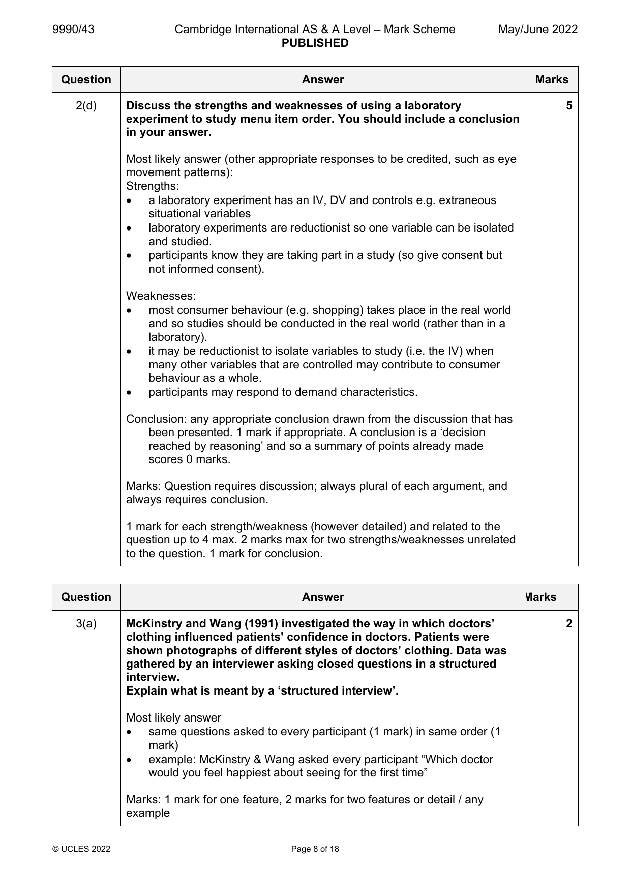

3(a) McKinstry and Wang (1991) investigated the way in which doctors’ 2
clothing influenced patients' confidence in doctors. Patients were
shown photographs of different styles of doctors’ clothing. Data was
gathered by an interviewer asking closed questions in a structured
interview.
Explain what is meant by a ‘structured interview’.
Most likely answer
same questions asked to every participant (1 mark) in same order (1
mark)
example: McKinstry & Wang asked every participant “Which doctor
would you feel happiest about seeing for the first time”
Marks: 1 mark for one feature, 2 marks for two features or detail / any
example
© UCLES 2022 Page 8 of 18
3(b) Give one strength and one weakness of asking closed questions as 4
used in this study.
Most likely answer (other appropriate responses to be credited):
Strength
participants all answer on the same scale (05)
quantitative data means that the different conditions can be statistically
compared
Weakness
participants cannot explain / give a reason their answer
participants have no opportunity to provide any additional information
Marks: 1 marks for each strength/weakness. 1 mark if related to study ×2
3(c)(i) Suggest how the quantitative data gathered for the styles in relation to 2
confidence could be analysed.
Most likely answer (other appropriate responses to be credited):
mean score for each style of dress
hypothetical results table acceptable
Marks: 1 mark for basic suggestion about analysis (not counting) 1 mark
for detailed answer / elaboration (e.g. any measure of central tendency or
range i.e. any analysis / descriptive statistic) OR 1 mark for relating to
study.
3(c)(ii) Suggest how the quantitative data gathered for the styles in relation to
confidence could be shown on a graph.
Most likely answer (other appropriate responses to be credited):
Bar chart plotting mean scores for each style of clothing (1 mark) axis
bar for each style of clothing; Y axis for level of confidence (2 marks).
Marks: 1 mark for suggestion (e.g. draw a bar chart) 1 mark for detailed
related to study.
© UCLES 2022 Page 9 of 18
3(d) Discuss the strengths and weaknesses of using photographs to gather 5
information about a doctor’s clothing. You should include a
conclusion in your answer.
Most likely answer (other appropriate responses to be credited):
Strengths:
photographs are standardised: expression and dress remain constant
the study can be replicated using the same photographs
photographs can be presented in many different locations, not restricted
to a laboratory
Weaknesses:
photographs are static; people in real life are not
photographs need consent from the actors to be used in psychological
studies
Conclusion: any appropriate conclusion drawn from the discussion that has
been presented. 1 mark if appropriate.
Marks: Question requires discussion; always plural of each argument, and
always requires conclusion.
1 mark for each strength/weakness (however detailed) and related to the
question up to 4 max. 2 marks max for two strengths/weaknesses unrelated
to the question. 1 mark for conclusion.
Question Answer Marks
Official mark scheme pages: 8, 9, 10 · source PDF URL
9990-2022-mj-43-q07
May/June 2022 · Paper 43 · Question 7 · 18 marks
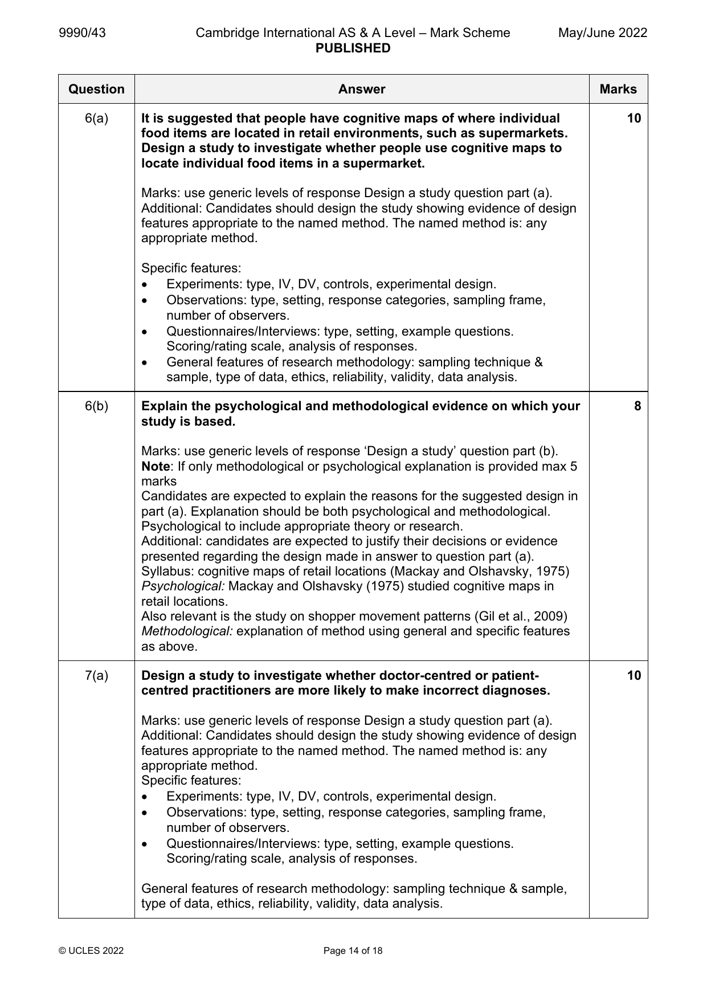

7(a) Design a study to investigate whether doctor-centred or patient- 10
centred practitioners are more likely to make incorrect diagnoses.
Marks: use generic levels of response Design a study question part (a).
Additional: Candidates should design the study showing evidence of design
features appropriate to the named method. The named method is: any
appropriate method.
Specific features:
Experiments: type, IV, DV, controls, experimental design.
Observations: type, setting, response categories, sampling frame,
number of observers.
Questionnaires/Interviews: type, setting, example questions.
Scoring/rating scale, analysis of responses.
General features of research methodology: sampling technique & sample,
type of data, ethics, reliability, validity, data analysis.
© UCLES 2022 Page 14 of 18
7(b) Explain the psychological and methodological evidence on which your 8
study is based.
Marks: use generic levels of response ‘Design a study’ question part (b).
NB If only methodological or psychological explanation is provided max 5
marks
Candidates are expected to explain the reasons for the suggested design in
part (a). Explanation should be both psychological and methodological.
Psychological to include appropriate theory or research.
Additional: candidates are expected to justify their decisions or evidence
presented regarding the design made in answer to question part (a).
Syllabus: practitioner diagnosis: type I and type II errors
Psychological: no specific studies are assigned to this sub-topic, so any
knowledge about type 1 and type 2 errors can be credited. The study by
Rosenhan ‘sane in insane places’ could feature. However, doctor and
patient-centred (Byrne and Long, 1976, Savage and Armstrong, 1990) is
apposite.
Methodological: explanation of method using general and specific features
as above.
Question Answer Marks
Official mark scheme pages: 14, 15 · source PDF URL
9990-2022-mj-43-q11
May/June 2022 · Paper 43 · Question 11 · 12 marks

11 ‘A biochemical test is the only accurate way to know that a person has 12
adhered to a request to take their medication.’
To what extent do you agree with this statement? Use examples of
research you have studied to support your answer.
Marks: use generic levels of response in table C.
Syllabus: biochemical tests (Roth and Caron, 1978)
Most likely (any other appropriate responses should be credited):
For:
biochemical testing is an objective measure resulting in quantitative
data.
many studies have used biochemical tests: Roth and Caron (1978)
biochemical testing cannot be manipulated by the user: if a drug is not
in the blood, then it has not been taken
Against:
measure may not be valid: drug could be taken once, before test
measures are useful in theory, but in practice unlikely to be done due to
costs and time.
measures are invasive: involve blood test (even urine test not ideal)
there are alternative ways of objectively measuring adherence, such as
pill counting and using repeat prescriptions.
Question Answer Marks
Official mark scheme pages: 18 · source PDF URL
9990-2022-on-31-q05
Oct/Nov 2022 · Paper 31 · Question 5 · 12 marks
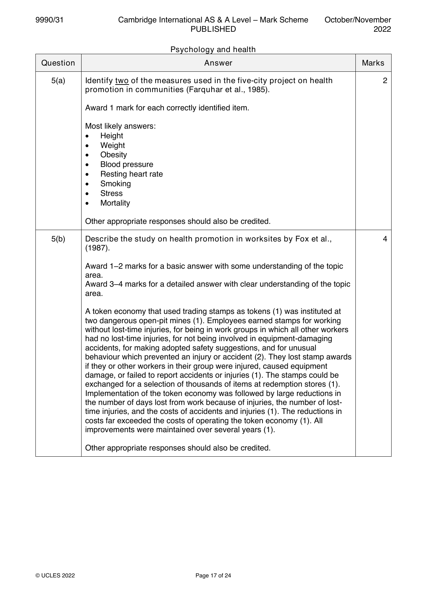
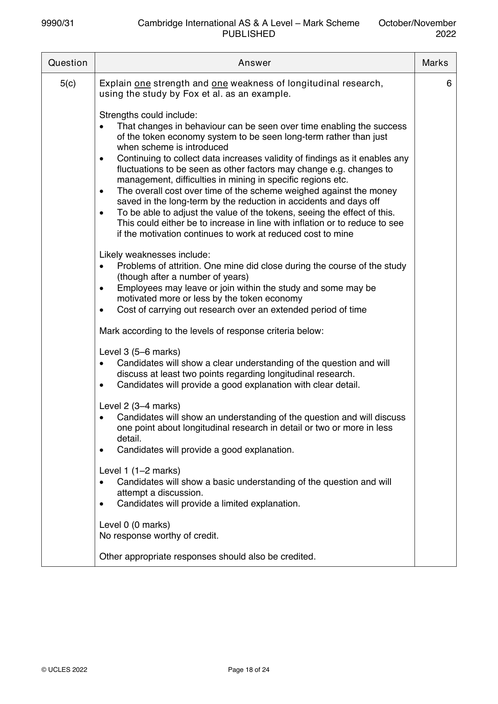
5(a) Identify two of the measures used in the five-city project on health 2
promotion in communities (Farquhar et al., 1985).
Award 1 mark for each correctly identified item.
Most likely answers:
• Height
• Weight
• Obesity
• Blood pressure
• Resting heart rate
• Smoking
• Stress
• Mortality
Other appropriate responses should also be credited.
5(b) Describe the study on health promotion in worksites by Fox et al., 4
(1987).
Award 1–2 marks for a basic answer with some understanding of the topic
area.
Award 3–4 marks for a detailed answer with clear understanding of the topic
area.
A token economy that used trading stamps as tokens (1) was instituted at
two dangerous open-pit mines (1). Employees earned stamps for working
without lost-time injuries, for being in work groups in which all other workers
had no lost-time injuries, for not being involved in equipment-damaging
accidents, for making adopted safety suggestions, and for unusual
behaviour which prevented an injury or accident (2). They lost stamp awards
if they or other workers in their group were injured, caused equipment
damage, or failed to report accidents or injuries (1). The stamps could be
exchanged for a selection of thousands of items at redemption stores (1).
Implementation of the token economy was followed by large reductions in
the number of days lost from work because of injuries, the number of lost-
time injuries, and the costs of accidents and injuries (1). The reductions in
costs far exceeded the costs of operating the token economy (1). All
improvements were maintained over several years (1).
Other appropriate responses should also be credited.
© UCLES 2022 Page 17 of 24
5(c) Explain one strength and one weakness of longitudinal research, 6
using the study by Fox et al. as an example.
Strengths could include:
• That changes in behaviour can be seen over time enabling the success
of the token economy system to be seen long-term rather than just
when scheme is introduced
• Continuing to collect data increases validity of findings as it enables any
fluctuations to be seen as other factors may change e.g. changes to
management, difficulties in mining in specific regions etc.
• The overall cost over time of the scheme weighed against the money
saved in the long-term by the reduction in accidents and days off
• To be able to adjust the value of the tokens, seeing the effect of this.
This could either be to increase in line with inflation or to reduce to see
if the motivation continues to work at reduced cost to mine
Likely weaknesses include:
• Problems of attrition. One mine did close during the course of the study
(though after a number of years)
• Employees may leave or join within the study and some may be
motivated more or less by the token economy
• Cost of carrying out research over an extended period of time
Mark according to the levels of response criteria below:
Level 3 (5–6 marks)
• Candidates will show a clear understanding of the question and will
discuss at least two points regarding longitudinal research.
• Candidates will provide a good explanation with clear detail.
Level 2 (3–4 marks)
• Candidates will show an understanding of the question and will discuss
one point about longitudinal research in detail or two or more in less
detail.
• Candidates will provide a good explanation.
Level 1 (1–2 marks)
• Candidates will show a basic understanding of the question and will
attempt a discussion.
• Candidates will provide a limited explanation.
Level 0 (0 marks)
No response worthy of credit.
Other appropriate responses should also be credited.
© UCLES 2022 Page 18 of 24
Official mark scheme pages: 17, 18 · source PDF URL
9990-2022-on-31-q06
Oct/Nov 2022 · Paper 31 · Question 6 · 18 marks
6(a) Describe what psychologists have discovered about patient and 8
practitioner diagnosis and style (practitioner style, practitioner
diagnosis, disclosure of information).
Patient practitioner diagnosis and style, including the following:
• Practitioner style: doctor and patient-centred (Byrne and Long, 1976,
Savage and Armstrong, 1990)
• Practitioner diagnosis: type I and type II errors
• Disclosure of information (Robinson and West, 1992)
Doctor and patient-centred (Byrne and Long, 1976, Savage and
Armstrong, 1990).
Byrne and Long analysed 2500 recordings of medical consultations in a
variety of countries, including England and Australia. They discovered the
two distinctive practitioner styles.
Features of the doctor-centred style:
• Doctor asked closed questions (patient could only answer ‘yes’ or ‘no’)
• Doctor ignored patients’ attempts to elaborate on their answers
• Doctor placed most focus on the first problem described by the patient
• Doctor made links between symptoms and their diagnosis without
discussion or alternatives
• Everything was based on ‘fact’ rather than two-way communication
• Impersonal atmosphere
• Patient was overall passive during the consultation
Features of the patient-centred style:
• Doctor asked open-ended questions
• Patient was given chances to give descriptions and elaborate on
answers
• Doctor used less medical jargon; patient could understand diagnosis
and treatment options
• Patient had the chance to participate in decision-making
• Personal atmosphere
• Patient was very active during the consultation
Savage and Armstrong (1990)
Using a field experiment, Savage and Armstrong compared a patient-
centred style (sharing consultative process) with the doctor-centred style
(traditional doctor-led process). All the patients involved in the study
reported that they were highly satisfied with the consultation. However,
straight after the consultation and one week later, it was found that they
preferred the doctor-led style. It is possible that this is due to people being
more familiar with the traditional method; adjusting to a newer consultation
style could take time for patients and their doctors.
© UCLES 2022 Page 19 of 24
6(a) Practitioner diagnosis: type I and type II errors.
Type I error – Doctor diagnoses a physically/psychologically healthy person
as ‘sick’. This is also called a false positive.
Type II error – Doctor diagnoses a sick person as ‘healthy’. This is a false
negative.
Also, credit reference to Rosenhan study where Type I and Type II errors
described (incorrectly) the other way round.
Disclosure of information (Robinson and West, 1992).
Robinson and West conducted a study on 69 patients at a genito-urinary
clinic. They discovered that the patients gave more information to a
computer than to the doctor they met afterwards. For example, they
admitted to having more sexual partners and revealed more symptoms. This
suggests that computers can be used to help patients communicate more
comfortably and openly.
Mark according to the levels of response descriptors in Table A.
Other appropriate responses should also be credited.
6(b) Evaluate what psychologists have discovered about patient and 10
practitioner diagnosis and style (practitioner style, practitioner
diagnosis, disclosure of information), including a discussion of field
experiments.
A range of issues could be used for evaluation here. These include:
• Named issue – field experiments. Both Savage and Armstrong and
Robinson and West are field experiments because Robinson and West
used independent measures in genito-urinary clinic and Savage and
Armstrong used participants at a doctor’s surgery, also independent
measures. Strength of field studies is increase in ecological validity –
these are genuine patients with specific medical needs. Weakness is
that this can result in lack of control. There will be a huge variety of
participant variables and these cannot be controlled. Could also discuss
strengths/weaknesses of the design (independent measures makes it
more difficult to compare across conditions however participants could
not take part in both conditions of IV).
• Determinism
• Validity
• Methods
• Sampling and generalisations
• Situational/individual explanations
• Ethics
Mark according to the levels of response descriptors in Table B.
Other appropriate responses should also be credited.
© UCLES 2022 Page 20 of 24
Official mark scheme pages: 19, 20 · source PDF URL
9990-2022-on-32-q05
Oct/Nov 2022 · Paper 32 · Question 5 · 12 marks
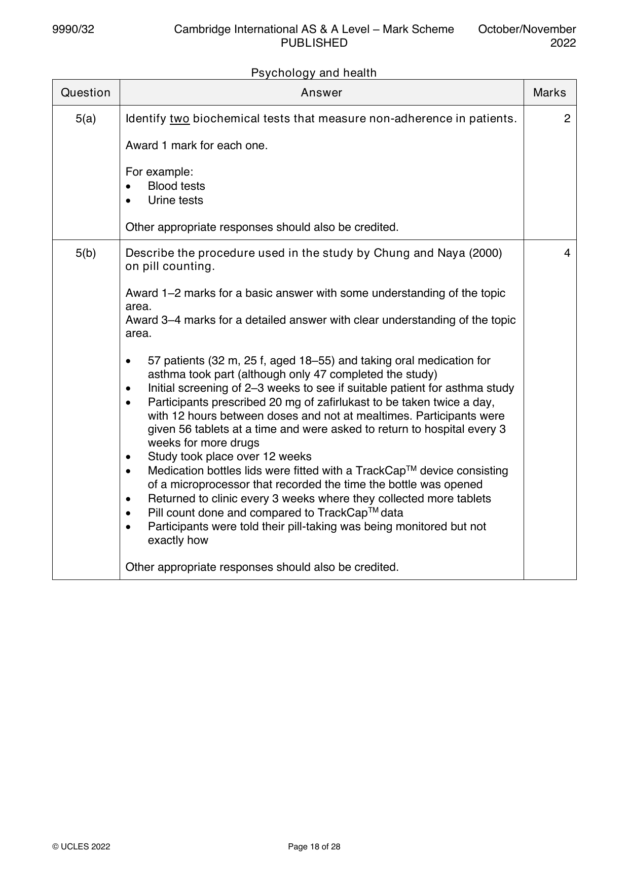
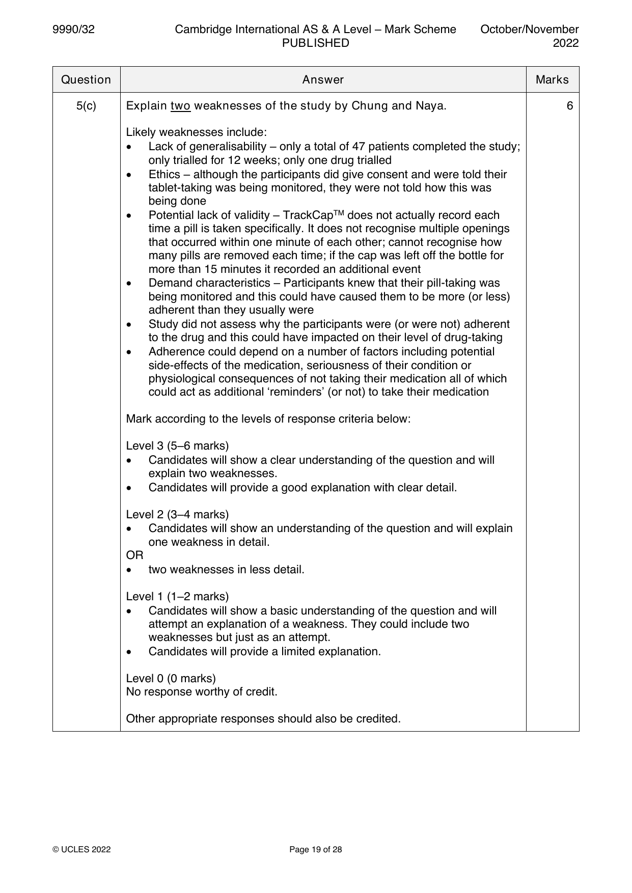
5(a) Identify two biochemical tests that measure non-adherence in patients. 2
Award 1 mark for each one.
For example:
• Blood tests
• Urine tests
Other appropriate responses should also be credited.
5(b) Describe the procedure used in the study by Chung and Naya (2000) 4
on pill counting.
Award 1–2 marks for a basic answer with some understanding of the topic
area.
Award 3–4 marks for a detailed answer with clear understanding of the topic
area.
• 57 patients (32 m, 25 f, aged 18–55) and taking oral medication for
asthma took part (although only 47 completed the study)
• Initial screening of 2–3 weeks to see if suitable patient for asthma study
• Participants prescribed 20 mg of zafirlukast to be taken twice a day,
with 12 hours between doses and not at mealtimes. Participants were
given 56 tablets at a time and were asked to return to hospital every 3
weeks for more drugs
• Study took place over 12 weeks
• Medication bottles lids were fitted with a TrackCapTM device consisting
of a microprocessor that recorded the time the bottle was opened
• Returned to clinic every 3 weeks where they collected more tablets
• Pill count done and compared to TrackCapTM data
• Participants were told their pill-taking was being monitored but not
exactly how
Other appropriate responses should also be credited.
© UCLES 2022 Page 18 of 28
5(c) Explain two weaknesses of the study by Chung and Naya. 6
Likely weaknesses include:
• Lack of generalisability – only a total of 47 patients completed the study;
only trialled for 12 weeks; only one drug trialled
• Ethics – although the participants did give consent and were told their
tablet-taking was being monitored, they were not told how this was
being done
• Potential lack of validity – TrackCapTM does not actually record each
time a pill is taken specifically. It does not recognise multiple openings
that occurred within one minute of each other; cannot recognise how
many pills are removed each time; if the cap was left off the bottle for
more than 15 minutes it recorded an additional event
• Demand characteristics – Participants knew that their pill-taking was
being monitored and this could have caused them to be more (or less)
adherent than they usually were
• Study did not assess why the participants were (or were not) adherent
to the drug and this could have impacted on their level of drug-taking
• Adherence could depend on a number of factors including potential
side-effects of the medication, seriousness of their condition or
physiological consequences of not taking their medication all of which
could act as additional ‘reminders’ (or not) to take their medication
Mark according to the levels of response criteria below:
Level 3 (5–6 marks)
• Candidates will show a clear understanding of the question and will
explain two weaknesses.
• Candidates will provide a good explanation with clear detail.
Level 2 (3–4 marks)
• Candidates will show an understanding of the question and will explain
one weakness in detail.
OR
• two weaknesses in less detail.
Level 1 (1–2 marks)
• Candidates will show a basic understanding of the question and will
attempt an explanation of a weakness. They could include two
weaknesses but just as an attempt.
• Candidates will provide a limited explanation.
Level 0 (0 marks)
No response worthy of credit.
Other appropriate responses should also be credited.
© UCLES 2022 Page 19 of 28
Official mark scheme pages: 18, 19 · source PDF URL
9990-2022-on-32-q06
Oct/Nov 2022 · Paper 32 · Question 6 · 18 marks
6(a) Describe what psychologists have discovered about sources of stress 8
(physiology of stress and effects on health and causes of stress).
Physiology of stress and effects on health: The GAS Model (Selye, 1936).
Causes of stress: work (Chandola et al., 2008), life events (Holmes and
Rahe, 1967), personality (Friedman and Roseman, 1974).
Physiology of stress and effects on health
Physiological response controlled by autonomic nervous system, that acts to
stimulate breathing and heart rate as well as endocrine system. Endocrine
system is slower and uses hormones to respond to signals from nerves or
other glands. In emergency ‘fight or flight’ response is fast and sympathetic
nervous system sends impulses to endocrine system. A number of effects
on health including hypertension and atherosclerosis, increasing risk of
heart attack. Also, can cause gastrointestinal disorders leading to gastric
ulcer or IBS.
Selye’s general adaptation syndrome (GAS) model – links between stress
and illness demonstrated in rats. Proposed as evolutionary model to help in
escaping from physical danger.
Three phases:
• Alarm reaction (fight or flight)
• Resistance stage (attempt to reduce arousal level)
• Exhaustion stage (if his levels of arousal are prolonged, eventually
some part of the physiological system will break down. The exhaustion
stage is vital for health because the body cannot remain in a heightened
state of physiological arousal indefinitely. Major ‘break down’ effects
can include high blood pressure leading to potential stroke or
myocardial infarction (‘heart attack’) and minor effects could be stomach
ulcers
Causes of stress
Work – Chandola et al., (2008) studied 10,308 London civil servants.
Starting in 1985, this longitudinal study was completed in 2004. Data were
gathered using self-report postal questionnaires and a clinical examination
assessing biological risk factors (including coronary heart disease (CHD),
blood pressure, cortisol levels (cortisol is a result of prolonged physiological
arousal) and waist measurements) and behavioural factors (diet, exercise,
alcohol consumption and smoking).
Results showed that work stress was associated with lack of exercise and
poor diet; work stress was more common in those under 50; and the more
stress that was reported, the more likely there was to be a report of CHD.
© UCLES 2022 Page 20 of 28
6(a) Life events – Holmes and Rahe (1967) using Social Readjustment Rating
Scale SRRS. Derived initially from a questionnaire with 394 participants
asked to rate 43 life events, given the arbitrary rating of 50 for marriage.
Death of a spouse received a mean rating of 100, with divorce scoring 73.
Pregnancy was rated 40, business re-adjustment 39, and change in
sleeping habits 16. Those who score over 300 on the SRRS in any one year
are found to have suffered more illness due to stress.
Personality – Friedman and Rosenman (1974). Link between Type A
personality and heart conditions, due to physiological stress on body. Type
A people are likely to be aggressive, assertive, competitive, and time
conscious. Coronary patients are often impatient, tense, and competitive.
These individuals who have Type A personality are more likely to be ill with
coronary conditions compared to those who are Type B (laid back).
Other sources can be described including Daily Hassles and Lack of
Control.
Mark according to the levels of response descriptors in Table A.
Other appropriate responses should also be credited.
© UCLES 2022 Page 21 of 28
6(b) Evaluate what psychologists have discovered about sources of stress 10
(physiology of stress and effects on health and causes of stress)
including a discussion of nature versus nurture.
A range of issues could be used for evaluation here. These include:
• Named issue – Nature versus nurture: GAS model is essentially
biological and because it is evolutionary this is nature as is the concept
of personality types. Despite Friedman’s assertion that we can learn to
behave more like a Type B person, our personality is fixed and innate.
Work factors and life events are to do with nurture. However, in a lot of
situations, it is incredibly difficult to separate out how much is nature
and how much nurture and the two can interact e.g. someone born with
a Type A personality may choose a high-powered and thus stressful job
so the nature of the personality interacts with the nurture of the work
environment.
• Individual versus situational
• Reliability
• Psychological approaches
• Individual
• Practical applications
• Cultural bias
• Comparison of the sources
• Validity
• Snapshot vs longitudinal research
Mark according to the levels of response descriptors in Table B.
Other appropriate responses should also be credited.
© UCLES 2022 Page 22 of 28
Official mark scheme pages: 20, 21, 22 · source PDF URL
9990-2022-on-33-q05
Oct/Nov 2022 · Paper 33 · Question 5 · 12 marks
5(a) Identify two of the measures used in the five-city project on health 2
promotion in communities (Farquhar et al., 1985).
Award 1 mark for each correctly identified item.
Most likely answers:
• Height
• Weight
• Obesity
• Blood pressure
• Resting heart rate
• Smoking
• Stress
• Mortality
Other appropriate responses should also be credited.
5(b) Describe the study on health promotion in worksites by Fox et al., 4
(1987).
Award 1–2 marks for a basic answer with some understanding of the topic
area.
Award 3–4 marks for a detailed answer with clear understanding of the topic
area.
A token economy that used trading stamps as tokens (1) was instituted at
two dangerous open-pit mines (1). Employees earned stamps for working
without lost-time injuries, for being in work groups in which all other workers
had no lost-time injuries, for not being involved in equipment-damaging
accidents, for making adopted safety suggestions, and for unusual
behaviour which prevented an injury or accident (2). They lost stamp awards
if they or other workers in their group were injured, caused equipment
damage, or failed to report accidents or injuries (1). The stamps could be
exchanged for a selection of thousands of items at redemption stores (1).
Implementation of the token economy was followed by large reductions in
the number of days lost from work because of injuries, the number of lost-
time injuries, and the costs of accidents and injuries (1). The reductions in
costs far exceeded the costs of operating the token economy (1). All
improvements were maintained over several years (1).
Other appropriate responses should also be credited.
© UCLES 2022 Page 17 of 24
5(c) Explain one strength and one weakness of longitudinal research, 6
using the study by Fox et al. as an example.
Strengths could include:
• That changes in behaviour can be seen over time enabling the success
of the token economy system to be seen long-term rather than just
when scheme is introduced
• Continuing to collect data increases validity of findings as it enables any
fluctuations to be seen as other factors may change e.g. changes to
management, difficulties in mining in specific regions etc.
• The overall cost over time of the scheme weighed against the money
saved in the long-term by the reduction in accidents and days off
• To be able to adjust the value of the tokens, seeing the effect of this.
This could either be to increase in line with inflation or to reduce to see
if the motivation continues to work at reduced cost to mine
Likely weaknesses include:
• Problems of attrition. One mine did close during the course of the study
(though after a number of years)
• Employees may leave or join within the study and some may be
motivated more or less by the token economy
• Cost of carrying out research over an extended period of time
Mark according to the levels of response criteria below:
Level 3 (5–6 marks)
• Candidates will show a clear understanding of the question and will
discuss at least two points regarding longitudinal research.
• Candidates will provide a good explanation with clear detail.
Level 2 (3–4 marks)
• Candidates will show an understanding of the question and will discuss
one point about longitudinal research in detail or two or more in less
detail.
• Candidates will provide a good explanation.
Level 1 (1–2 marks)
• Candidates will show a basic understanding of the question and will
attempt a discussion.
• Candidates will provide a limited explanation.
Level 0 (0 marks)
No response worthy of credit.
Other appropriate responses should also be credited.
© UCLES 2022 Page 18 of 24
Official mark scheme pages: 17, 18 · source PDF URL
9990-2022-on-33-q06
Oct/Nov 2022 · Paper 33 · Question 6 · 18 marks
6(a) Describe what psychologists have discovered about patient and 8
practitioner diagnosis and style (practitioner style, practitioner
diagnosis, disclosure of information).
Patient practitioner diagnosis and style, including the following:
• Practitioner style: doctor and patient-centred (Byrne and Long, 1976,
Savage and Armstrong, 1990)
• Practitioner diagnosis: type I and type II errors
• Disclosure of information (Robinson and West, 1992)
Doctor and patient-centred (Byrne and Long, 1976, Savage and
Armstrong, 1990).
Byrne and Long analysed 2500 recordings of medical consultations in a
variety of countries, including England and Australia. They discovered the
two distinctive practitioner styles.
Features of the doctor-centred style:
• Doctor asked closed questions (patient could only answer ‘yes’ or ‘no’)
• Doctor ignored patients’ attempts to elaborate on their answers
• Doctor placed most focus on the first problem described by the patient
• Doctor made links between symptoms and their diagnosis without
discussion or alternatives
• Everything was based on ‘fact’ rather than two-way communication
• Impersonal atmosphere
• Patient was overall passive during the consultation
Features of the patient-centred style:
• Doctor asked open-ended questions
• Patient was given chances to give descriptions and elaborate on
answers
• Doctor used less medical jargon; patient could understand diagnosis
and treatment options
• Patient had the chance to participate in decision-making
• Personal atmosphere
• Patient was very active during the consultation
Savage and Armstrong (1990)
Using a field experiment, Savage and Armstrong compared a patient-
centred style (sharing consultative process) with the doctor-centred style
(traditional doctor-led process). All the patients involved in the study
reported that they were highly satisfied with the consultation. However,
straight after the consultation and one week later, it was found that they
preferred the doctor-led style. It is possible that this is due to people being
more familiar with the traditional method; adjusting to a newer consultation
style could take time for patients and their doctors.
© UCLES 2022 Page 19 of 24
6(a) Practitioner diagnosis: type I and type II errors.
Type I error – Doctor diagnoses a physically/psychologically healthy person
as ‘sick’. This is also called a false positive.
Type II error – Doctor diagnoses a sick person as ‘healthy’. This is a false
negative.
Also, credit reference to Rosenhan study where Type I and Type II errors
described (incorrectly) the other way round.
Disclosure of information (Robinson and West, 1992).
Robinson and West conducted a study on 69 patients at a genito-urinary
clinic. They discovered that the patients gave more information to a
computer than to the doctor they met afterwards. For example, they
admitted to having more sexual partners and revealed more symptoms. This
suggests that computers can be used to help patients communicate more
comfortably and openly.
Mark according to the levels of response descriptors in Table A.
Other appropriate responses should also be credited.
6(b) Evaluate what psychologists have discovered about patient and 10
practitioner diagnosis and style (practitioner style, practitioner
diagnosis, disclosure of information), including a discussion of field
experiments.
A range of issues could be used for evaluation here. These include:
• Named issue – field experiments. Both Savage and Armstrong and
Robinson and West are field experiments because Robinson and West
used independent measures in genito-urinary clinic and Savage and
Armstrong used participants at a doctor’s surgery, also independent
measures. Strength of field studies is increase in ecological validity –
these are genuine patients with specific medical needs. Weakness is
that this can result in lack of control. There will be a huge variety of
participant variables and these cannot be controlled. Could also discuss
strengths/weaknesses of the design (independent measures makes it
more difficult to compare across conditions however participants could
not take part in both conditions of IV).
• Determinism
• Validity
• Methods
• Sampling and generalisations
• Situational/individual explanations
• Ethics
Mark according to the levels of response descriptors in Table B.
Other appropriate responses should also be credited.
© UCLES 2022 Page 20 of 24
Official mark scheme pages: 19, 20 · source PDF URL
9990-2022-on-41-q03
Oct/Nov 2022 · Paper 41 · Question 3 · 15 marks
3 In an attempt to understand non-adherence to medical advice, Riekert
and Drotar (1999) tested adolescents aged 11–18 and their parents.
The parents completed a questionnaire at the medical appointment.
The adolescents and their parents completed further questionnaires at
home, which were then returned by post.
3(a) Outline one conclusion from the study by Riekert and Drotar. 2
Most likely answer (other appropriate responses to be credited):
• that participants (52) who returned the questionnaires were more likely
to adhere
• those who did not return the questionnaires (non-returners 28) were
less likely to adhere to medical requests
Marks: 1 mark for partial answer, 2 marks detailed answer/elaboration/
example.
3(b)(i) Suggest two examples of how ethical guidelines reduced the number 2
of participants in this study.
Most likely answer (other appropriate responses to be credited):
• Informed consent: 80 of the 94 families (adolescent and parent)
approached gave consent to participate
• Right to withdraw: 28 non-returners did not return the postal
questionnaire
Marks: 1 mark for each correct answer.
Note: identification of term such as ‘right to withdraw’ scores 0 marks. Some
explanation/elaboration relating to the study is needed, although numbers
are not needed for full marks.
3(b)(ii) Give two reasons why some participants were excluded from the study 2
by the researchers.
Most likely answer:
1 They had been diagnosed with insulin-dependent diabetes mellitus
2 They had an additional chronic illness
3 They showed developmental delay e.g. Down’s Syndrome
Marks: 1 mark for each correct answer.
3(c) Explain two reasons why a patient might not adhere to medical advice. 4
Most likely answer (other appropriate responses to be credited):
• rational non-adherence
• factors from the health belief model
Marks: 1 mark for identification of reason +1 mark for psychological reason
detailed answer/elaboration 2.
Note: credit ‘cost of medications’ (1 mark).
© UCLES 2022 Page 12 of 24
3(d) Discuss the strengths and weaknesses of gathering data about health 5
using questionnaires to be returned by post. You should include a
conclusion in your answer.
Most likely answer (other appropriate responses to be credited):
Strengths:
• people have more time to think about answers so better than an
interview
• people can read and complete at their own leisure (in their own home),
think about and then make decisions (without pressure from anyone)
• people may prefer to write personal answers rather than tell someone
face-to-face
• people have time to think about being a participant and can withdraw
Weaknesses:
• people may not receive the mailing, or receive it but never read it
• people read the information but not act on it (or forget to act on it)
• people may delay acting
Conclusion: any appropriate conclusion drawn from the discussion that has
been presented. 1 mark if appropriate. A conclusion is a ‘decision reached
by reasoning’ and so a summary of points already made scores 0 marks.
Marks: Question requires discussion; always plural of each argument,
and always requires conclusion. 1 mark for each strength/weakness
(however detailed) and related to the question up to 4 max. 2 marks max for
two strengths/weaknesses unrelated to the question. 1 mark for conclusion.
© UCLES 2022 Page 13 of 24
Official mark scheme pages: 12, 13 · source PDF URL
9990-2022-on-41-q07
Oct/Nov 2022 · Paper 41 · Question 7 · 18 marks
7(a) A child is in pain; the parent takes the child to the hospital so that a 10
practitioner can assess the child’s pain.
Design a study to investigate whether there is a correlation between
the parent’s rating of the child’s pain and the practitioner’s rating of
the child’s pain.
Marks: use generic levels of response Design a study question part (a).
Additional: Candidates should design the study showing evidence of
design features appropriate to the named method. The named method is
any, but data must be correlation (i.e. able to be plotted on a scatter
graph)
Typical features:
• Observations: type, setting, response categories, sampling frame,
number of observers
• Questionnaires/Interviews: type, setting, example questions. Scoring/
rating scale, analysis of responses
General features of research methodology:
• sampling technique and sample, type of data, ethics, reliability, validity,
data analysis
• Could use observation and what is observed rated on some scale (as in
UAB)
• Could use visual analogue scale and compare numbers (or any similar
scale)
• Quantitative data must be collected and an explanation of how the data
will be correlated
© UCLES 2022 Page 18 of 24
7(b) Explain the psychological and methodological evidence on which your 8
study is based.
Marks: use generic levels of response ‘Design a study’ question part (b).
Note: If only methodological or psychological explanation is provided max 5
marks.
Candidates are expected to explain the reasons for the suggested design in
part (a). Explanation should be both psychological and methodological.
Psychological to include appropriate theory or research.
Additional: candidates are expected to justify their decisions or evidence
presented regarding the design made in answer to question part (a).
Syllabus: Measuring pain: psychometric measures and visual rating scales
(MPQ, visual analogue scale). Behavioural/observational measures (UAB).
Psychological:
Use of Turk’s behavioural features may appear:
• facial/audible indication of distress; distorted ambulation or posture;
negative affect; avoidance of activity
Use of rating scales (by adults to rate child’s pain):
• visual analogue, box scale, etc. Use of faces e.g. Wong-Baker (with a
numerical scale)
• use of MPQ, paediatric pain questionnaire receives no credit. The child
would not complete these
Methodological: explanation of method using general and specific features
as above.
© UCLES 2022 Page 19 of 24
Official mark scheme pages: 18, 19 · source PDF URL
9990-2022-on-41-q11
Oct/Nov 2022 · Paper 41 · Question 11 · 12 marks
11 ‘Alternative techniques are more effective for managing pain, such as 12
chronic pain, than biochemical pain techniques.’
To what extent do you agree with this statement? Use examples of
research you have studied to support your answer.
Marks: use generic levels of response in table C.
Syllabus: alternative techniques (acupuncture, stimulation therapy/TENS).
Most likely (any other appropriate responses should be credited):
Are more effective:
• does not require a consultation or prescription from a qualified medical
practitioner
• may be possible to apply at home by the patient themselves (e.g.
TENS)
• does not require medicine to be taken (ingested)
• no possibly addictive drugs are taken, so no withdrawal symptoms
Are not more effective:
• alternative therapies may not be as effective as medical treatments
• many people do not believe that alternatives will work and never
consider them
• many societies have been conditioned to only accept medical
techniques
© UCLES 2022 Page 23 of 24
Official mark scheme pages: 23 · source PDF URL
9990-2022-on-42-q03
Oct/Nov 2022 · Paper 42 · Question 3 · 15 marks
3 Psychologists have developed their understanding of pain and how to
manage it. Three different techniques to manage pain are:
• ‘alternative techniques’
• ‘psychological techniques’
• ‘medical techniques’.
There is a debate about which technique is most effective in managing
pain.
3(a) Explain what is meant by the term ‘pain’. 2
Most likely (quote from study)
An unpleasant sensory and emotional experience (sensory and/or emotional
discomfort) associated with actual or potential tissue damage, or described
in terms of tissue damage, or both.
Marks: 1 mark for basic explanation +1 mark for elaboration/example.
3(b) Outline two ‘alternative techniques’ that can be used to manage pain. 4
Most likely answer (other appropriate responses to be credited):
• Acupuncture involves inserting between five and twenty fine stainless
steel needles which are left in place for between ten to twenty minutes.
The needle is inserted along a meridian line through which life energy
or ‘qi’ is said to flow.
• Stimulation therapy (TENS) involves electrodes placed on the skin
causing stimulation (mild pain) which distracts the person from the
original (worse) pain.
Marks: 1 mark for identification of term, +1 mark for detailed answer/
elaboration ×2
3(c)(i) Outline how one ‘psychological technique’ can be used to manage 2
pain.
Most likely (quote from study)
Any one from:
• attention diversion (1 mark) focusing on a non-pain related stimulus to
be distracted from the pain. Can be active or passive. (+1 mark)
• non-pain imagery (1 mark) tries to reduce pain by thinking about a
pleasant mental scene (+1 mark)
• cognitive redefinition (1 mark) where a person replaces negative
thoughts (‘it hurts’) with positive thoughts (‘it will soon be over’).
Marks: 1 mark for identification of technique +1 mark for elaboration/
example.
© UCLES 2022 Page 13 of 24
3(c)(ii) Give one difference between ‘psychological techniques’ and 2
‘alternative techniques’ to manage pain.
Most likely answer (other appropriate responses to be credited): Quoting
from study
• psychological techniques are active; alternative are more passive
(TENS and acupuncture)
• psychological techniques, when learned, last a lifetime. Alternative
techniques need to be applied on each occasion (e.g. TENS or
acupuncture).
• psychological techniques can be done by the patient; alternative
techniques need to be applied by a practitioner (e.g. acupuncture)
Marks: 1 mark for each side i.e., 1 mark for ‘psychological’ statement and 1
mark for ‘alternative’ statement. 1 mark max if description for one side with
‘the other doesn’t’. ‘mental v physical’ = 1 mark if no elaboration.
3(d) Discuss the strengths and weaknesses of using ‘medical techniques’ 5
to manage pain. You should include a conclusion in your answer.
Most likely answer (other appropriate responses to be credited):
Strengths:
• it is ‘legitimate’: requires a consultation or prescription from a qualified
medical practitioner.
• often easy to do, perhaps just swallow a pill.
• works ‘biologically’, blocking receptors etc. depending on technique
Weaknesses:
• patient is passive in their own treatment
• requires a consultation or prescription from a qualified medical
practitioner.
• psychological and alternative therapies may be as effective as medical
treatments
• requires medicine to be taken (ingested)
• may be addictive (such as painkillers)
Conclusion: any appropriate conclusion drawn from the discussion that has
been presented. 1 mark if appropriate. A conclusion is a ‘decision reached
by reasoning’ and so a summary of points already made scores 0 marks.
Marks: Question requires discussion; always plural of each argument,
and always requires conclusion. 1 mark for each strength/weakness
(however detailed) and related to the question up to 4 max. 2 marks max for
two strengths/weaknesses unrelated to the question. 1 mark for conclusion.
© UCLES 2022 Page 14 of 24
Official mark scheme pages: 13, 14 · source PDF URL
9990-2022-on-42-q07
Oct/Nov 2022 · Paper 42 · Question 7 · 18 marks
7(a) Design a case study to investigate whether providing information is an 10
effective way to promote good dental health.
Marks: use generic levels of response Design a study question part (a).
Additional: Candidates should design the study showing evidence of
design features appropriate to the named method. The named method is:
case study
Typical features: case studies: generally one unit/person; could be
longitudinal (but not necessarily); could include a range of different methods
to gather data observations, interviews, questionnaires; could include
subjective and/or objective data; could include quantitative/qualitative data.
General features of research methodology: sampling technique &
sample, type of data, ethics, reliability, validity, data analysis.
7(b) Explain the psychological and methodological evidence on which your 8
study is based.
Marks: use generic levels of response ‘Design a study’ question part (b).
Note: If only methodological or psychological explanation is provided max 5
marks
Candidates are expected to explain the reasons for the suggested design in
part (a). Explanation should be both psychological and methodological.
Psychological to include appropriate theory or research.
Additional: candidates are expected to justify their decisions or evidence
presented regarding the design made in answer to question part (a).
Syllabus: strategies for promoting health; providing information (Lewin,
1992)
Psychological:
Lewin (1992) created the Heart Health Manual, providing information to
people who had survived a heart attack to enable them to change their
lifestyle to a more healthy one to try to prevent a future attack. Success
reported: fewer returns to hospital for example.
Methodological: explanation of method using general and specific features
as above.
© UCLES 2022 Page 19 of 24
Official mark scheme pages: 19 · source PDF URL
9990-2022-on-42-q11
Oct/Nov 2022 · Paper 42 · Question 11 · 12 marks
11 ‘The strength of the Yale model of communication is its holism rather 12
than its reductionism.’
To what extent do you agree with this statement? Use examples of
research you have studied to support your answer.
Marks: use generic levels of response in table C.
Syllabus: Yale model of communication
Most likely (any other appropriate responses should be credited):
Reductionist:
• model is broken down into several components (source, message,
medium, audience and situation)
• breaking down allows each factor to be studied in more detail (e.g.
isolating IV and controlling other factors)
• different factors should be broken down because they are different.
Not reductionist:
• breaking down into individual aspects may lose sight of overall model
(communication)
• breaking down may not lead to a consideration of how each factor is
inter-related with the others
• other models do not break down into individual features.
© UCLES 2022 Page 23 of 24
Official mark scheme pages: 23 · source PDF URL
9990-2022-on-43-q03
Oct/Nov 2022 · Paper 43 · Question 3 · 15 marks
3 In an attempt to understand non-adherence to medical advice, Riekert
and Drotar (1999) tested adolescents aged 11–18 and their parents.
The parents completed a questionnaire at the medical appointment.
The adolescents and their parents completed further questionnaires at
home, which were then returned by post.
3(a) Outline one conclusion from the study by Riekert and Drotar. 2
Most likely answer (other appropriate responses to be credited):
• that participants (52) who returned the questionnaires were more likely
to adhere
• those who did not return the questionnaires (non-returners 28) were
less likely to adhere to medical requests
Marks: 1 mark for partial answer, 2 marks detailed answer/elaboration/
example.
3(b)(i) Suggest two examples of how ethical guidelines reduced the number 2
of participants in this study.
Most likely answer (other appropriate responses to be credited):
• Informed consent: 80 of the 94 families (adolescent and parent)
approached gave consent to participate
• Right to withdraw: 28 non-returners did not return the postal
questionnaire
Marks: 1 mark for each correct answer.
Note: identification of term such as ‘right to withdraw’ scores 0 marks. Some
explanation/elaboration relating to the study is needed, although numbers
are not needed for full marks.
3(b)(ii) Give two reasons why some participants were excluded from the study 2
by the researchers.
Most likely answer:
1 They had been diagnosed with insulin-dependent diabetes mellitus
2 They had an additional chronic illness
3 They showed developmental delay e.g. Down’s Syndrome
Marks: 1 mark for each correct answer.
3(c) Explain two reasons why a patient might not adhere to medical advice. 4
Most likely answer (other appropriate responses to be credited):
• rational non-adherence
• factors from the health belief model
Marks: 1 mark for identification of reason +1 mark for psychological reason
detailed answer/elaboration 2.
Note: credit ‘cost of medications’ (1 mark).
© UCLES 2022 Page 12 of 24
3(d) Discuss the strengths and weaknesses of gathering data about health 5
using questionnaires to be returned by post. You should include a
conclusion in your answer.
Most likely answer (other appropriate responses to be credited):
Strengths:
• people have more time to think about answers so better than an
interview
• people can read and complete at their own leisure (in their own home),
think about and then make decisions (without pressure from anyone)
• people may prefer to write personal answers rather than tell someone
face-to-face
• people have time to think about being a participant and can withdraw
Weaknesses:
• people may not receive the mailing, or receive it but never read it
• people read the information but not act on it (or forget to act on it)
• people may delay acting
Conclusion: any appropriate conclusion drawn from the discussion that has
been presented. 1 mark if appropriate. A conclusion is a ‘decision reached
by reasoning’ and so a summary of points already made scores 0 marks.
Marks: Question requires discussion; always plural of each argument,
and always requires conclusion. 1 mark for each strength/weakness
(however detailed) and related to the question up to 4 max. 2 marks max for
two strengths/weaknesses unrelated to the question. 1 mark for conclusion.
© UCLES 2022 Page 13 of 24
Official mark scheme pages: 12, 13 · source PDF URL
9990-2022-on-43-q07
Oct/Nov 2022 · Paper 43 · Question 7 · 18 marks
7(a) A child is in pain; the parent takes the child to the hospital so that a 10
practitioner can assess the child’s pain.
Design a study to investigate whether there is a correlation between
the parent’s rating of the child’s pain and the practitioner’s rating of
the child’s pain.
Marks: use generic levels of response Design a study question part (a).
Additional: Candidates should design the study showing evidence of
design features appropriate to the named method. The named method is
any, but data must be correlation (i.e. able to be plotted on a scatter
graph)
Typical features:
• Observations: type, setting, response categories, sampling frame,
number of observers
• Questionnaires/Interviews: type, setting, example questions. Scoring/
rating scale, analysis of responses
General features of research methodology:
• sampling technique and sample, type of data, ethics, reliability, validity,
data analysis
• Could use observation and what is observed rated on some scale (as in
UAB)
• Could use visual analogue scale and compare numbers (or any similar
scale)
• Quantitative data must be collected and an explanation of how the data
will be correlated
© UCLES 2022 Page 18 of 24
7(b) Explain the psychological and methodological evidence on which your 8
study is based.
Marks: use generic levels of response ‘Design a study’ question part (b).
Note: If only methodological or psychological explanation is provided max 5
marks.
Candidates are expected to explain the reasons for the suggested design in
part (a). Explanation should be both psychological and methodological.
Psychological to include appropriate theory or research.
Additional: candidates are expected to justify their decisions or evidence
presented regarding the design made in answer to question part (a).
Syllabus: Measuring pain: psychometric measures and visual rating scales
(MPQ, visual analogue scale). Behavioural/observational measures (UAB).
Psychological:
Use of Turk’s behavioural features may appear:
• facial/audible indication of distress; distorted ambulation or posture;
negative affect; avoidance of activity
Use of rating scales (by adults to rate child’s pain):
• visual analogue, box scale, etc. Use of faces e.g. Wong-Baker (with a
numerical scale)
• use of MPQ, paediatric pain questionnaire receives no credit. The child
would not complete these
Methodological: explanation of method using general and specific features
as above.
© UCLES 2022 Page 19 of 24
Official mark scheme pages: 18, 19 · source PDF URL
9990-2022-on-43-q11
Oct/Nov 2022 · Paper 43 · Question 11 · 12 marks
11 ‘Alternative techniques are more effective for managing pain, such as 12
chronic pain, than biochemical pain techniques.’
To what extent do you agree with this statement? Use examples of
research you have studied to support your answer.
Marks: use generic levels of response in table C.
Syllabus: alternative techniques (acupuncture, stimulation therapy/TENS).
Most likely (any other appropriate responses should be credited):
Are more effective:
• does not require a consultation or prescription from a qualified medical
practitioner
• may be possible to apply at home by the patient themselves (e.g.
TENS)
• does not require medicine to be taken (ingested)
• no possibly addictive drugs are taken, so no withdrawal symptoms
Are not more effective:
• alternative therapies may not be as effective as medical treatments
• many people do not believe that alternatives will work and never
consider them
• many societies have been conditioned to only accept medical
techniques
© UCLES 2022 Page 23 of 24
Official mark scheme pages: 23 · source PDF URL
9990-2023-mj-31-q05
May/June 2023 · Paper 31 · Question 5 · 12 marks
5(a) Practitioners may make type I or type II errors in diagnosis. 2
Outline one of these types of error, including an example in your
answer.
Award 1 mark for a basic outline of the term/concept.
Award 2 marks for a detailed outline of the term/concept.
For example –
A Type I error is when a practitioner declares that a patient is ill when they are
well. For example, diagnosing someone with schizophrenia when they are
mentally healthy. (2)
A Type II error is when a practitioner declares that a patient is well when they
are ill. For example, declaring someone healthy when they have heart
disease. (2)
Award one mark to be awarded for ‘false negative’ or ‘false positive’.
Examples can achieve up to one mark on their own.
Other appropriate responses should also be credited.
5(b) Describe the procedure of the study by Robinson and West (1992) on 4
disclosure of information to a practitioner.
Award 1–2 marks for a basic answer with some understanding of the topic
area.
Award 3–4 marks for a detailed answer with clear understanding of the topic
area.
For example -
69 patients were interviewed from a GU clinic in northern UK. (1) The patients
used either a paper questionnaire or a computerised interview (1) and they
were randomly allocated to one of the two conditions. (1) Each patient was
asked to complete their case history on either the computer or on paper. (1)
Following this each patient was assessed by the doctor and had a physical
exam. (1) Data was compared to the information given in the doctor’s notes.
(1)
Other appropriate responses should also be credited.
© UCLES 2023 Page 14 of 23
5(c) Explain two weaknesses of the study by Robinson and West. 6
Likely weaknesses include –
Lack of generalisability due to the study just looking at one type of illness
and in one GU clinic in northern UK
Cultural bias as the data collected could be inappropriate in other
cultures.
Validity / social desirability (participants may not wish to disclose personal
information)
Reliability of data collection e.g. number of symptoms reported were
counted. The practitioner could have counted symptoms differently for
each patient. It is very difficult to reliable transform qualitative data (the
patient’s case history) into quantitative data.
Social desirability / lack of objective data– e.g. exaggerated or reduced
the number of sexual partners for example
Mark according to the levels of response criteria below:
Level 3 (5–6 marks)
Candidates will show a clear understanding of the question and will explain
two weaknesses.
Candidates will provide a good explanation with clear detail.
Level 2 (3–4 marks)
Candidates will show an understanding of the question and will explain one
appropriate weakness in detail.
OR two weaknesses in less detail.
Level 1 (1–2 marks)
Candidates will show a basic understanding of the question and will attempt
an explanation of a weakness. They could include two weaknesses but just as
an attempt.
Candidates will provide a limited explanation.
Level 0 (0 marks)
No response worthy of credit.
Other appropriate responses should also be credited
© UCLES 2023 Page 15 of 23
Official mark scheme pages: 14, 15 · source PDF URL
9990-2023-mj-31-q06
May/June 2023 · Paper 31 · Question 6 · 18 marks
6(a) Describe what psychologists have discovered about the management of 8
stress.
Management of stress, including the following:
medical techniques (biochemical)
psychological techniques: biofeedback (Budzynski et al., 1969) and
imagery (Bridge, 1988)
preventing stress (Meichenbaum, 1985)
Medical techniques (biochemical)
Antidepressants (SSRIs) such as fluoxetine (Prozac). Regulates serotonin
(mood stabiliser) in the brain.
Benzodiazepines (BZs) – Benzodiazepines act as a sedative which shows
down the body’s functions. They work by increasing the effect of a brain
chemical called GABA (gamma aminobutyric acid). GABA reduces brain
activity in the areas of the brain responsible for: rational thought, memory,
emotions and essential functions, such as breathing. The main effects of
benzodiazepines are: sedation, reduced anxiety and muscle relaxation.
Psychological techniques: biofeedback (Budzynski et al., 1969) and
imagery (Bridge, 1988)
Biofeedback
A medical device monitors physical processes (such as heart rate, blood
pressure, etc.) and immediate feedback is given to the patient. The patient
can then learn to do relaxation to reduce the physical processes and therefore
hope to reduce the experience of stress. Budzynski found this technique was
effective in helping to reduce tension headaches.
Budzynski carried out an experiment on 15 patients who experienced tension
headaches. Randomly allocated to one of three conditions. After connected to
the device all told to relax their forehead muscle as deeply as possible.
Experimental group told the tone would vary with the level of tension in the
muscle. Told to keep the tone as low as possible. The constant low tone,
irrelevant feedback group was told to relax deeply, especially the forehead
muscle, and were also told that the monotonous tone would help them to
relax. The silent group was told to relax as deeply as possible, especially the
forehead muscle. Mean level of muscle tension measured over five sessions.
Participants in the experimental group (feedback group) had significant
reduction in muscle tension compared to the other two groups.
© UCLES 2023 Page 16 of 23
6(a) Imagery
Sensory awareness of various muscle groups while imagining a peaceful
scene of their choice (as used by Bridge in their study of women with cancer).
Imagining a peaceful or beautiful setting while doing relaxation exercises such
as deep breathing or muscle relaxation.
Bridge found that the patient’s mood when using imagery improved over the
course of therapy (although symptoms did not improve).
Bridge carried out a controlled randomised trail on the effectiveness of
imagery and carried out research on 154 female patients who suffered from
cancer – 139 women completed the full course of therapy. Six week treatment
programme.
Controls were encouraged to talk about themselves; relaxation
group was taught concentration on individual muscle groups; relaxation and
imagery group was also taught to imagine peaceful scene of own choice to
enhance relaxation. Relaxation and relaxation plus imagery groups were
given tape recording repeating instructions and told to practise at least 15
minutes a day. Results - Improvement of mood and of depression and anxiety
on self rating scales.
Preventing stress (Meichenbaum, 1985)
Stress Inoculation therapy – a form of CBT. Three phases:
(1) Conceptualisation – discussing the nature of the problem with the
therapist, taught about stressors and how they affect the body.
(2) Skills acquisition and rehearsal – taught relaxation and problem solving
techniques and practice in the session.
(3) Application and follow through – the client practices between sessions
and they discuss with the therapist how it is going and make alterations
as necessary.
Mark according to the levels of response descriptors in Table A.
Other appropriate responses should also be credited.
© UCLES 2023 Page 17 of 23
6(b) Evaluate what psychologists have discovered about the management of 10
stress, including a discussion of experiments.
A range of issues could be used for evaluation here. These include:
Named issue – Experiments – all of the research is medical research so
does have some ecological validity. Also good control of variables. But
there may be demand characteristics as participants/patients know they
are in a study and may report stress levels are reduced. Budzynski’s
study has two control groups which is good for baseline comparisons.
Also used controls so that each participant experienced the same
procedure except for the difference in whether stress was induced during
the study. Bridge et al. followed a standardised procedure although there
would be differences in what the women did outside of the therapy
sessions which would lower the reliability of the study.
Generalisability
Strengths and weaknesses of self-reports
Reductionist nature of the management strategies
comparisons of different management techniques – any issues can be
used to make comparisons. Do not credit issues twice.
Application of psychology to everyday life (with reference to management
strategies)
usefulness (effectiveness) of different management strategies
deterministic nature of the management techniques
appropriateness of management techniques (e.g. if there are side effects)
cost of management strategies
evidence to suggest management techniques work and an evaluation of
this evidence with reference back to the management technique
Mark according to the levels of response descriptors in Table B.
Other appropriate responses should also be credited.
© UCLES 2023 Page 18 of 23
Official mark scheme pages: 16, 17, 18 · source PDF URL
9990-2023-mj-32-q05
May/June 2023 · Paper 32 · Question 5 · 12 marks
5 Post purchase reflection (feelings post purchase – e.g. feels product met
expectation and price or not). Could lead to positive or negative heuristic
about product/brand.
© UCLES 2023 Page 13 of 26
9990/32 Cambridge International AS & A Level – Mark Scheme May/June 2023
PUBLISHED
Question Answer Marks
4(a) Credit if say 7 point process (internal and external are listed separately) and
point 7 is divestment
These decisions are influenced by two main factors.
Firstly stimuli is received and processed by the consumer in conjunction with
memories of previous experiences, and secondly, external variables in the
form of either environmental influences or individual differences.
The environmental influences identified include: Culture; social class;
personal influence; family and situation. While the individual influences
include: Consumer resource; motivation and involvement; knowledge;
attitudes; personality; values and lifestyle.
Mark according to the levels of response descriptors in Table A.
Other appropriate responses should also be credited.
4(b) Evaluate what psychologists have discovered about ‘buying the 10
product’ (theory of planned behaviour, black box model, consumer
decision model), including a discussion about practical applications.
A range of issues could be used for evaluation here. These include:
Named issue – Practical applications. All of the models are useful to
an extent as they explain the decision making processes of the
consumer. Companies will find this useful as they can find ways to
influence these decisions and attempt to make their product/service more
attractive to the consumer. Examples of applications – credit any
application linked to theory – Theory of planned behaviour – Company
can be environmentally friendly or support good causes so customers
develop a positive attitude towards the brand. Have both internet and
physical shops (with good parking / opening hours) so that customers can
easily access the products will increase perceived behavioural control.
Black-box model – Improve stimuli – retail environment, advertising,
packaging, price which will to improve customers’ thoughts about the
product to then increase behaviour – purchasing of product – responses
can give a number of applications or one or two detailed applications.
Consumer decision model – advertising can increase the need for the
product or market research to ensure product meets the needs of
customers; information about product needs to be easily available to
customer for their search (company website, advertising with links to
website, appears in internet searches, offer comparison tool with other
brands on website.
Analysis will likely be to explain why the application(s) suggested may be
difficult, expensive, ineffective, etc.
Individual and situational explanations.
Less reductionist (holistic) nature of the models.
Meta analysis to back up Theory of Planned Behaviour by Ajzen
increases validity of theory.
Lacks cultural bias (or has cultural bias) – could be argued either way.
Nature vs nurture debate
Mark according to the levels of response descriptors in Table B.
Other appropriate responses should also be credited.
© UCLES 2023 Page 14 of 26
5(a) Explain what is meant by ‘organic pain’. 2
Award 1 mark for a basic explanation of the term/concept.
Award 2 marks for an explanation of the term/concept.
For example –
Has a physical cause, rather than a psychological cause. (1) Is the result of
injury, pressure, excessive stimulation or damage. (1)
Other appropriate responses should also be credited.
5(b) The Wong-Baker rating scale is a measure of children’s pain.
5(b)(i) Outline the Wong-Baker rating scale. You may include a diagram in your 2
answer.
Award 1 mark for a basic outline of the term/concept.
Award 2 marks for a detailed outline of the term/concept.
For example –
Wong-Baker FACES Rating Scale uses a series of faces ranging from happy
face at 0 (no hurt) to a crying fact at 10 (hurts worst) (2) It is a visual analogue
scale. (1)
Allow drawings of the faces (1) labelled (1)
Other appropriate responses should also be credited.
5(b)(ii) Explain how this scale is used to measure children’s pain. 2
Award 1 mark for a basic outline of how scale is used.
Award 2 marks for a detailed outline of how scale is used
For example –
Child chooses the face corresponding to their perceived pain. (1) Used with
children over the age of 3. (1) It is a self-report from the child to indicate the
level/intensity of pain they are experiencing. (1).
Other appropriate responses should also be credited.
© UCLES 2023 Page 15 of 26
5(c) One difference between the Wong-Baker scale and the McGill pain 6
questionnaire is whether they are used with children or adults.
Explain two other differences between these pain measures.
Likely differences include –
McGill is in 4 parts (e.g. location of pain, what does the pain feel like from
selection of words, how does pain change over time, how strong is the
pain) whereas Wong-Baker is 1 part (the faces)
McGill asks about the location of pain using a diagram of the body
whereas Wong-Baker just asks about the intensity of the pain.
McGill has some open ended questions that collect qualitative pain when
the patient is asked about how the pain changes over time (What kind of
things relieve your pain? What kind of things increase your pain?)
whereas Wong-Baker is closed / quantitative data (0–10 scale)
McGill gives the patient a selection of words to choose from (e.g
shooting, pulsing) whereas Wong-Baker gives the patient a series of
faces to choose from.
Mark according to the levels of response criteria below:
Level 3 (5–6 marks)
Candidates will show a clear understanding of the question and will
explain two differences.
Candidates will provide a good explanation with clear detail.
Level 2 (3–4 marks)
Candidates will show an understanding of the question and will explain
one appropriate difference in detail.
OR two differences in less detail.
Level 1 (1–2 marks)
Candidates will show a basic understanding of the question and will
attempt an explanation of a difference. They could include two differences
but just as an attempt.
Candidates will provide a limited explanation.
Level 0 (0 marks)
No response worthy of credit.
Other appropriate responses should also be credited
© UCLES 2023 Page 16 of 26
Official mark scheme pages: 13, 14, 15, 16 · source PDF URL
9990-2023-mj-32-q06
May/June 2023 · Paper 32 · Question 6 · 18 marks
6(a) Describe what psychologists have discovered about health promotion in 8
schools, worksites and communities.
Health promotion in schools, worksite and communities, including the
following:
Tapper et al. (2003) on schools
Fox et al. (1987) on worksites
Farquhar et al. (1985) Five City Project on communities
Tapper et al. likely to outline one or more of these studies.
Food dudes at home – small study of 5–6 year olds where children watched
video of Food Dudes. Given rewards such as Food Dude stickers, pens and
erasers, awarded to the children for eating target amounts of fruit and
vegetables. Results combination of peer modelling and rewards was very
effective at increasing children’s consumption of both fruit and vegetables.
Fruit increased from 4% to 100% and vegetables from 1% to 83%.
Jess and Jarvis at the nursery – 26 two- to four-year-olds attending the
university’s daycare nursery. Video of Jess and Jarvis around fruit and
vegetable eating.
The results – fruit consumption at snacktime rose from 30 per cent to 71
per cent. The intervention was followed by a maintenance phase during which
there were no videos and the rewards became more intermittent. At follow-up,
15 months later, consumption levels were 79 per cent. The effects at
lunchtime mirrored those at snack time, rising from 17 per cent to 76 per cent
at the 15-month follow-up.
Food dudes –
Whole school programme of 4–11 year olds in a primary school. Shown food
dudes programmes of 6 videos and given a course of lesson materials
including stickers, letters, home pack, staff manual and briefing video, set
educational support materials, etc.
Lasted for 16 days and was covered each day in school. Children were
enthusiastic about the work and improved their attendance. Programme
resulted in large increases in fruit and vegetable consumption in all three
schools at both snack time and at lunchtime. The increases occurred for both
boys and girls in infant and junior classes (4–7 and 7–11 years respectively).
After four months reported to continue to be eating more fruit and
vegetables.
Fox et al.
Workers at two open-pit mines used as participants. Employees earned
stamps for working without lost-time injuries, not being involved in equipment
damaging accidents, adopting safety suggestions and behaviour which
prevent injury/accident. No stamps given if they / other workers injured,
caused equipment damage or failed to report injury/accident. Stamps could be
exchanged for thousands of items in a shop on site. Results – large reduction
in lost days due to injuries, lost time injuries and costs of accidents/injuries.
Reduction in costs far exceed the cost of token economy and improvements
maintained over several years.
© UCLES 2023 Page 17 of 26
6(a) Farquhar et al. (1985)
Long term field study of feasibility and effectiveness of community health
education for the prevention of cardiovascular disease. Two treatment
communities used (Salinas and Monterey, California). The control cities used
(Modesto, San Luis Obispo and Santa Maria – on a smaller scale than the
other two control cities). Participants were 12–74, randomly selected. Each
survey had approximately 1800–2500 participants. Questionnaires given (e.g.
health attitudes, knowledge and behaviour, measures of CHD risk) and
physiological measures taken (e.g. height, weight, blood pressure, heart rate,
etc.). During the six years Community Education Programme was given to the
two experimental cities via the media and community education (e.g. classes,
seminars and group projects). Results – knowledge of CVD risk increased in
all four groups, improvements in the treatment groups was significantly
greater. Significant decline in cholesterol and decrease in blood pressure.
CHD and all-cause mortality risk cores were maintained or continued to
improve in intervention cities whilst levelling out / rebounding in the two
control cities.
4% reduction blood pressure
5% reduction resting pulse
13% reduction smoking
13% reduction mortality scores
10% decrease in coronary heart disease risk score
Mark according to the levels of response descriptors in Table A.
Other appropriate responses should also be credited.
© UCLES 2023 Page 18 of 26
6(b) Evaluate what psychologists have discovered about health promotion in 10
schools, worksites and communities, including a discussion of the
longitudinal research method.
A range of issues could be used for evaluation here. These include:
Named issue – Longitudinal research method – Strengths include that
it shows change in behaviour over time, often can get more detail due to
the length of time spent with participants. Weaknesses include that it
involves a lot of commitment/time/cost of the psychologist and their
university / funding body and participant attrition. Tapper’s whole school
programme was initially done over 16 days and a 4 month follow-up (at
some of the schools involved). Food dudes in the nursery had a 15 month
follow-up. Interventions of introducing new fruits and vegetables was
done slowly which helped to increase consumption so is a strength of the
longitudinal method for this research. Fox et al. 1970–1985 – 15 years.
Farquhar et al. – 6 or 9 year study and effects still being measured.
Reliability
Generalisability
Applications to everyday life
Validity
Reliability of data collection methods used
Strengths and weaknesses of method and/or design
Situational/individual explanations
Ethics
Use of questionnaires/self-reports
Use of children
Mark according to the levels of response descriptors in Table B.
Other appropriate responses should also be credited.
© UCLES 2023 Page 19 of 26
Official mark scheme pages: 17, 18, 19 · source PDF URL
9990-2023-mj-33-q05
May/June 2023 · Paper 33 · Question 5 · 12 marks
5(a) Practitioners may make type I or type II errors in diagnosis. 2
Outline one of these types of error, including an example in your
answer.
Award 1 mark for a basic outline of the term/concept.
Award 2 marks for a detailed outline of the term/concept.
For example –
A Type I error is when a practitioner declares that a patient is ill when they are
well. For example, diagnosing someone with schizophrenia when they are
mentally healthy. (2)
A Type II error is when a practitioner declares that a patient is well when they
are ill. For example, declaring someone healthy when they have heart
disease. (2)
Award one mark to be awarded for ‘false negative’ or ‘false positive’.
Examples can achieve up to one mark on their own.
Other appropriate responses should also be credited.
5(b) Describe the procedure of the study by Robinson and West (1992) on 4
disclosure of information to a practitioner.
Award 1–2 marks for a basic answer with some understanding of the topic
area.
Award 3–4 marks for a detailed answer with clear understanding of the topic
area.
For example -
69 patients were interviewed from a GU clinic in northern UK. (1) The patients
used either a paper questionnaire or a computerised interview (1) and they
were randomly allocated to one of the two conditions. (1) Each patient was
asked to complete their case history on either the computer or on paper. (1)
Following this each patient was assessed by the doctor and had a physical
exam. (1) Data was compared to the information given in the doctor’s notes.
(1)
Other appropriate responses should also be credited.
© UCLES 2023 Page 14 of 23
5(c) Explain two weaknesses of the study by Robinson and West. 6
Likely weaknesses include –
Lack of generalisability due to the study just looking at one type of illness
and in one GU clinic in northern UK
Cultural bias as the data collected could be inappropriate in other
cultures.
Validity / social desirability (participants may not wish to disclose personal
information)
Reliability of data collection e.g. number of symptoms reported were
counted. The practitioner could have counted symptoms differently for
each patient. It is very difficult to reliable transform qualitative data (the
patient’s case history) into quantitative data.
Social desirability / lack of objective data– e.g. exaggerated or reduced
the number of sexual partners for example
Mark according to the levels of response criteria below:
Level 3 (5–6 marks)
Candidates will show a clear understanding of the question and will explain
two weaknesses.
Candidates will provide a good explanation with clear detail.
Level 2 (3–4 marks)
Candidates will show an understanding of the question and will explain one
appropriate weakness in detail.
OR two weaknesses in less detail.
Level 1 (1–2 marks)
Candidates will show a basic understanding of the question and will attempt
an explanation of a weakness. They could include two weaknesses but just as
an attempt.
Candidates will provide a limited explanation.
Level 0 (0 marks)
No response worthy of credit.
Other appropriate responses should also be credited
© UCLES 2023 Page 15 of 23
Official mark scheme pages: 14, 15 · source PDF URL
9990-2023-mj-33-q06
May/June 2023 · Paper 33 · Question 6 · 18 marks
6(a) Describe what psychologists have discovered about the management of 8
stress.
Management of stress, including the following:
medical techniques (biochemical)
psychological techniques: biofeedback (Budzynski et al., 1969) and
imagery (Bridge, 1988)
preventing stress (Meichenbaum, 1985)
Medical techniques (biochemical)
Antidepressants (SSRIs) such as fluoxetine (Prozac). Regulates serotonin
(mood stabiliser) in the brain.
Benzodiazepines (BZs) – Benzodiazepines act as a sedative which shows
down the body’s functions. They work by increasing the effect of a brain
chemical called GABA (gamma aminobutyric acid). GABA reduces brain
activity in the areas of the brain responsible for: rational thought, memory,
emotions and essential functions, such as breathing. The main effects of
benzodiazepines are: sedation, reduced anxiety and muscle relaxation.
Psychological techniques: biofeedback (Budzynski et al., 1969) and
imagery (Bridge, 1988)
Biofeedback
A medical device monitors physical processes (such as heart rate, blood
pressure, etc.) and immediate feedback is given to the patient. The patient
can then learn to do relaxation to reduce the physical processes and therefore
hope to reduce the experience of stress. Budzynski found this technique was
effective in helping to reduce tension headaches.
Budzynski carried out an experiment on 15 patients who experienced tension
headaches. Randomly allocated to one of three conditions. After connected to
the device all told to relax their forehead muscle as deeply as possible.
Experimental group told the tone would vary with the level of tension in the
muscle. Told to keep the tone as low as possible. The constant low tone,
irrelevant feedback group was told to relax deeply, especially the forehead
muscle, and were also told that the monotonous tone would help them to
relax. The silent group was told to relax as deeply as possible, especially the
forehead muscle. Mean level of muscle tension measured over five sessions.
Participants in the experimental group (feedback group) had significant
reduction in muscle tension compared to the other two groups.
© UCLES 2023 Page 16 of 23
6(a) Imagery
Sensory awareness of various muscle groups while imagining a peaceful
scene of their choice (as used by Bridge in their study of women with cancer).
Imagining a peaceful or beautiful setting while doing relaxation exercises such
as deep breathing or muscle relaxation.
Bridge found that the patient’s mood when using imagery improved over the
course of therapy (although symptoms did not improve).
Bridge carried out a controlled randomised trail on the effectiveness of
imagery and carried out research on 154 female patients who suffered from
cancer – 139 women completed the full course of therapy. Six week treatment
programme.
Controls were encouraged to talk about themselves; relaxation
group was taught concentration on individual muscle groups; relaxation and
imagery group was also taught to imagine peaceful scene of own choice to
enhance relaxation. Relaxation and relaxation plus imagery groups were
given tape recording repeating instructions and told to practise at least 15
minutes a day. Results - Improvement of mood and of depression and anxiety
on self rating scales.
Preventing stress (Meichenbaum, 1985)
Stress Inoculation therapy – a form of CBT. Three phases:
(1) Conceptualisation – discussing the nature of the problem with the
therapist, taught about stressors and how they affect the body.
(2) Skills acquisition and rehearsal – taught relaxation and problem solving
techniques and practice in the session.
(3) Application and follow through – the client practices between sessions
and they discuss with the therapist how it is going and make alterations
as necessary.
Mark according to the levels of response descriptors in Table A.
Other appropriate responses should also be credited.
© UCLES 2023 Page 17 of 23
6(b) Evaluate what psychologists have discovered about the management of 10
stress, including a discussion of experiments.
A range of issues could be used for evaluation here. These include:
Named issue – Experiments – all of the research is medical research so
does have some ecological validity. Also good control of variables. But
there may be demand characteristics as participants/patients know they
are in a study and may report stress levels are reduced. Budzynski’s
study has two control groups which is good for baseline comparisons.
Also used controls so that each participant experienced the same
procedure except for the difference in whether stress was induced during
the study. Bridge et al. followed a standardised procedure although there
would be differences in what the women did outside of the therapy
sessions which would lower the reliability of the study.
Generalisability
Strengths and weaknesses of self-reports
Reductionist nature of the management strategies
comparisons of different management techniques – any issues can be
used to make comparisons. Do not credit issues twice.
Application of psychology to everyday life (with reference to management
strategies)
usefulness (effectiveness) of different management strategies
deterministic nature of the management techniques
appropriateness of management techniques (e.g. if there are side effects)
cost of management strategies
evidence to suggest management techniques work and an evaluation of
this evidence with reference back to the management technique
Mark according to the levels of response descriptors in Table B.
Other appropriate responses should also be credited.
© UCLES 2023 Page 18 of 23
Official mark scheme pages: 16, 17, 18 · source PDF URL
9990-2023-mj-41-q03
May/June 2023 · Paper 41 · Question 3 · 15 marks
3(a) The five city project (Farquhar et al., 1985) was a large experimental field 2
study of community health education for the prevention of
cardiovascular (heart) disease. Selection of the five cities was based on
eight criteria (constraints). Data was collected over a six-year period
using physiological measures, such as testing blood pressure and
analysing urine samples, and behavioural measures.
Explain what makes the main experimental design of this study
independent measures.
Definitive answer (other appropriate responses to be credited):
The design is independent measures because different communities
participated in different conditions (1 mark). There were two independent
treatment communities compared with three reference communities (2 marks)
Marks: 1 mark for definition; 1 mark for ‘in this study’.
3(b) Suggest why two of the selection criteria for the cities were important. 4
NB: Answer is in two parts. In order to suggest why the selection criteria were
important, the criteria need to be identified. 1 mark for identification and
1 mark for suggestion of ‘why’ 2
Selection criteria from study (definitive)
1) location in northern California,
2) populations exceeding 30 000,
3) total population of the five cities exceeding 300 000 to provide sufficient
statistical power to the experiment,
4) reasonable similarity of ethnic, socioeconomic and demographic
characteristics,
5) relative independence from other cities (eliminating suburbs of larger
metropolitan areas),
6) no shared newspaper or electronic media markets between treatment
and control cities,
7) shared media markets between treatment cities (to decrease costs),
8) relative independence of the two treatment cities, despite allowance of
some shared media services.
Suggestion ‘why’ (examples)
comparison would not be possible if the cities were different:
if sample sizes were under 30 000 and over 30 000
answer using any of the features above to support reason why.
Marks: 1 mark for identification 2; 2 marks for elaboration/example 2.
© UCLES 2023 Page 13 of 26
3(c)(i) Participants in randomly selected households were used in this study. 2
Suggest how this might have been done.
Most likely answer (other appropriate responses to be credited):
using electoral registers (or equivalent) and putting every name into a hat
and drawing out names (1 mark), each person in each of the five
communities would be included in a very large hat (2 marks)
using a computer to select a random sample (1 mark), the computer
would select names from a register of all residents within each community
(2 marks)
Marks: 1 mark for basic answer; 2 marks for elaboration/example.
3(c)(ii) Explain why this random selection was important. 2
Most likely answer (other appropriate responses to be credited):
because every individual in a target polulation had an equal chance of
participating (1 mark) in the surveys and physiological tests (2 marks)
it eliminates researcher bias (1 mark) because (any example, such as)
choosing people from one specific region which may or may not be
healthier than people from another (2 marks)
Marks: 1 mark for basic answer; 2 marks for elaboration/example.
© UCLES 2023 Page 14 of 26
3(d) Discuss the strengths and weaknesses of using physiological measures 5
to assess the validity of community health promotion projects. You
should include a conclusion in your answer.
Most likely answer (other appropriate responses to be credited):
Strengths
physiological data is objective and not open to bias or opinion by the
participant (or misinterpretation by experimenter)
the use of physiological recording devices provide consistent (reliable)
measurement, e.g. a sphygmomanometer measures blood pressure on a
standard scale
Weaknesses
subjective (qualitative) data is important and should not be ignored by
researchers
physiological data can be correlational and so cause and effect cannot be
assumed
one measure of physiological functioning is reductionist; other measures
should be taken also to be more thorough (holist)
Conclusion: any appropriate conclusion drawn from the discussion that has
been presented. 1 mark if appropriate. A conclusion is a ‘decision reached by
reasoning’ and so a summary of points already made scores 0 marks.
Marks: Question requires discussion; always plural of each argument, and
always requires conclusion.
1 mark for each advantage/disadvantage (however detailed) and related to
the question up to 4 max. 2 marks max for two strengths/weaknesses
unrelated to the question. 1 mark for conclusion.
© UCLES 2023 Page 15 of 26
Official mark scheme pages: 13, 14, 15 · source PDF URL
9990-2023-mj-41-q07
May/June 2023 · Paper 41 · Question 7 · 18 marks
7(a) Design a study to investigate the effectiveness of using pill counting 10
compared to using biochemical tests to measure adherence to medical
advice.
Marks: use generic levels of response Design a study question part (a).
Additional: Candidates should design the study showing evidence of design
features appropriate to the named method. The named method is: any
appropriate method.
Specific features:
Experiments: type, IV, DV, controls, experimental design.
Observations: type, setting, response categories, sampling frame, number of
observers.
Questionnaires/Interviews: type, setting, example questions. scoring/rating
scale, analysis of responses.
General features of research methodology: sampling technique and
sample, type of data, ethics, reliability, validity, data analysis.
7(b) Explain the psychological and methodological evidence on which your 8
study is based.
Marks: use generic levels of response ‘Design a study’ question part (b).
NB If only methodological or psychological explanation is provided max
5 marks
Candidates are expected to explain the reasons for the suggested design in
part (a). Explanation should be both psychological and methodological.
Psychological to include appropriate theory or research.
Additional: candidates are expected to justify their decisions or evidence
presented regarding the design made in answer to question part (a).
Syllabus: objective: pill counting (Chung and Naya, 2000) biochemical tests
(Roth and Caron, 1978)
Psychological: Pill counting: most likely Chung and Naya who developed
track cap to record the number of pills leaving the pill dispenser. Candidates
might simply suggest ‘counting pills’ and use anecdotal descriptions, or
candidates may just use ‘biochemical tests’ without specifying what these are.
Likely to describe some aspect of Roth and Caron, such as using blood and
urine tests.
Methodological: explanation of method using general and specific features
as above.
© UCLES 2023 Page 21 of 26
Official mark scheme pages: 21 · source PDF URL
9990-2023-mj-41-q11
May/June 2023 · Paper 41 · Question 11 · 12 marks
11 ‘Fear arousal is the best strategy for promoting health.’ 12
To what extent do you agree with this statement? Use examples of
research you have studied to support your answer.
Marks: use generic levels of response in table C.
Syllabus: strategies for promoting health: fear arousal (Janis and Feshbach,
1953; Cowpe, 1989)
Most likely (any other appropriate responses should be credited):
For (is best)
a little fear is worth it if health is improved. The ends justify the means.
people are not really harmed, it just makes them think about things they
don’t want to think about.
people can withdraw from experiment, stop reading or watching television
if it works for some people then it is justified
Against (is not best)
the strong fear appeal (in the Janis and Feshbach study) was not the
most effective, so strong fear appeals should not be used
it is not desirable to upset people; there are alternative strategies, such
as providing information.
no one should be distressed by any strategy form any source. If people
want to be unhealthy that is their choice rather than being ‘forced’ to be
healthy.
Alternative
arousing fear is one thing, but people need to know what to do. Providing
information is what is also needed. Cowpe (1989) used a combination of
both approaches.
© UCLES 2023 Page 25 of 26
Official mark scheme pages: 25 · source PDF URL
9990-2023-mj-42-q03
May/June 2023 · Paper 42 · Question 3 · 15 marks
3 Using a sample of 3000 healthy men aged 39–59, Friedman and
Rosenman (1974) found that those men with a Type A personality
experienced more stress-related ill-health over a period of nine years
than men with a Type B personality.
3(a) Explain one physiological effect that stress may have on health. 2
Most likely answer (other appropriate responses to be credited):
Stress caused heightened physiological responses (increases in
breathing, heart rate, blood pressure, etc.). This increase in functioning
cannot continue indefinitely. At some point some part of the system will
breakdown. Could cause:
Death (1 mark) with explanation from paragraph above (2 marks)
Stomach ulcer (1 mark) continued reduced blood supply to stomach /
‘butterflies’
Stroke (1 mark) due to continued high blood pressure (2 marks)
Marks: 1 mark for identification of some aspect of physiology +1 marks
related to ill-health.
Note: the general adaptation Syndrome (GAS) may be described. 0 marks for
description of the model itself; credit only if effect on health is included.
3(b) Explain two characteristics of a Type A personality. 4
Most likely answer (other appropriate responses to be credited):
Aggressive and assertive (1 mark) Type As tend to be easily aroused to
anger or hostility, which they may or may not express overtly (2 marks)
Competitive (1 mark) Type As tend to be very self-critical and to strive
towards goals without feeling a sense of joy in their efforts or
accomplishments (2 marks)
Time conscious (1 mark) Type As tend to be in a constant struggle
against the clock. Often they quickly become impatient with delays and
unproductive time, schedule commitments too tightly, and try to do more
than one thing at a time (2 marks)
Any similar feature can receive credit
Marks: 1 mark for identification of characteristic 2 marks for explanation/
elaboration/example 2
© UCLES 2023 Page 13 of 24
3(c) Suggest two causes of stress, other than personality. 4
Most likely answer (other appropriate responses to be credited):
life events major life events are stressful e.g. Holmes and Rahe (1967)
(1 mark), where events causing changes in routine, whether positive
(getting married) or negative (death of a close friend) (2 marks)
work some types of work are more stressful than others (1 mark).
Chandola et al. (2008) found that work stress was associated with: long
hours, job security, work relationships, access to resources and
communications. High job demands and low control of task / work
situation (2 marks)
Marks: 1 mark for identification of alternative, +1 mark for detailed answer/
elaboration 2
Note: no marks for personality (see question)
3(d) Discuss the strengths and weaknesses of conducting longitudinal 5
studies to measure stress. You should include a conclusion in your
answer.
Most likely answer (other appropriate responses to be credited):
Strengths
it determines change or stability over time
it tracks the development of the same individual, so many factors remain
constant
measures can be repeated with the same person and so have reliability
(test-retest)
Weaknesses
attrition: participants drop out; can’t be contacted
once a study has started the main variables cannot be changed, even
though something new may be more relevant
unforeseen variables may occur and disrupt the research
Conclusion: any appropriate conclusion drawn from the discussion that has
been presented. 1 mark if appropriate. A conclusion is a ‘decision reached by
reasoning’ and so a summary of points already made scores 0 marks.
Marks: Question requires discussion; always plural of each argument, and
always requires conclusion. 1 mark for each advantage/disadvantage
(however detailed) and related to the question up to 4 max. 2 marks max for
two strengths/weaknesses unrelated to the question. 1 mark for conclusion.
© UCLES 2023 Page 14 of 24
Official mark scheme pages: 13, 14 · source PDF URL
9990-2023-mj-42-q07
May/June 2023 · Paper 42 · Question 7 · 18 marks
7(a) Design a study to investigate whether a stress-prevention technique is 10
more effective for women than men.
Marks: use generic levels of response Design a study question part (a).
Additional: Candidates should design the study showing evidence of design
features appropriate to the named method. The named method is: any
appropriate method
Specific features:
Experiments: type, IV, DV, controls, experimental design.
Observations: type, setting, response categories, sampling frame,
number of observers.
Questionnaires/Interviews: type, setting, example questions.
Scoring/rating scale, analysis of responses.
General features of research methodology: sampling technique and
sample, type of data, ethics, reliability, validity, data analysis
7(b) Explain the psychological and methodological evidence on which your 8
study is based.
Marks: use generic levels of response ‘Design a study’ question part (b).
Note: If only methodological or psychological explanation is provided max
5 marks
Candidates are expected to explain the reasons for the suggested design in
part (a). Explanation should be both psychological and methodological.
Psychological to include appropriate theory or research.
Additional: candidates are expected to justify their decisions or evidence
presented regarding the design made in answer to question part (a).
Syllabus: preventing stress (Meichenbaum, 1985)
Psychological:
Meichenbaum (1985) ‘prevented’ stress with self-instructional training and
stress inoculation therapy. Stress inoculation training focuses on replacing
maladaptive statements with positive, coping statements and relaxation,
which leads the person to respond to stress in more positive ways. Three
stages: Conceptualisation: the trainer talks about stress and normal coping.
Skill acquisition: education about physiological and cognitive aspects of
stress and techniques used to manage. Replacement of negative thought
patterns with positive. Application of new skills through a series of stressful
situations.
Methodological: explanation of method using general and specific features
as above.
© UCLES 2023 Page 20 of 24
Official mark scheme pages: 20 · source PDF URL
9990-2023-mj-42-q11
May/June 2023 · Paper 42 · Question 11 · 12 marks
11 ‘A repeat prescription is the only accurate way to know that a person 12
has adhered to a request to take their medication.’
To what extent do you agree with this statement? Use examples of
research you have studied to support your answer.
Marks: use generic levels of response in table C.
Syllabus: measuring non-adherence: repeat prescriptions (Sherman et al.,
2000)
Most likely (any other appropriate responses should be credited):
Agree
collecting a repeat prescription means that the person will take the
medicine (why else collect it?)
collecting a repeat prescription means that the person has taken all the
initial medicine and wants more.
collecting a prescription is objective (fact)
collecting a prescription involves no experimenter bias. The prescription
is either collected or it is not.
Disagree
just because a person collects a prescription does not mean that they will
take the medicine.
collecting a repeat prescription does not mean that that the person has
taken all the initial medicine; they might have thrown it away.
subjective (qualitative) data is important and should not be ignored by
researchers; the person can explain why they collected the prescription.
© UCLES 2023 Page 23 of 24
Official mark scheme pages: 23 · source PDF URL
9990-2023-mj-43-q03
May/June 2023 · Paper 43 · Question 3 · 15 marks
3(a) The five city project (Farquhar et al., 1985) was a large experimental field 2
study of community health education for the prevention of
cardiovascular (heart) disease. Selection of the five cities was based on
eight criteria (constraints). Data was collected over a six-year period
using physiological measures, such as testing blood pressure and
analysing urine samples, and behavioural measures.
Explain what makes the main experimental design of this study
independent measures.
Definitive answer (other appropriate responses to be credited):
The design is independent measures because different communities
participated in different conditions (1 mark). There were two independent
treatment communities compared with three reference communities (2 marks)
Marks: 1 mark for definition; 1 mark for ‘in this study’.
3(b) Suggest why two of the selection criteria for the cities were important. 4
NB: Answer is in two parts. In order to suggest why the selection criteria were
important, the criteria need to be identified. 1 mark for identification and
1 mark for suggestion of ‘why’ 2
Selection criteria from study (definitive)
1) location in northern California,
2) populations exceeding 30 000,
3) total population of the five cities exceeding 300 000 to provide sufficient
statistical power to the experiment,
4) reasonable similarity of ethnic, socioeconomic and demographic
characteristics,
5) relative independence from other cities (eliminating suburbs of larger
metropolitan areas),
6) no shared newspaper or electronic media markets between treatment
and control cities,
7) shared media markets between treatment cities (to decrease costs),
8) relative independence of the two treatment cities, despite allowance of
some shared media services.
Suggestion ‘why’ (examples)
comparison would not be possible if the cities were different:
if sample sizes were under 30 000 and over 30 000
answer using any of the features above to support reason why.
Marks: 1 mark for identification 2; 2 marks for elaboration/example 2.
© UCLES 2023 Page 13 of 26
3(c)(i) Participants in randomly selected households were used in this study. 2
Suggest how this might have been done.
Most likely answer (other appropriate responses to be credited):
using electoral registers (or equivalent) and putting every name into a hat
and drawing out names (1 mark), each person in each of the five
communities would be included in a very large hat (2 marks)
using a computer to select a random sample (1 mark), the computer
would select names from a register of all residents within each community
(2 marks)
Marks: 1 mark for basic answer; 2 marks for elaboration/example.
3(c)(ii) Explain why this random selection was important. 2
Most likely answer (other appropriate responses to be credited):
because every individual in a target polulation had an equal chance of
participating (1 mark) in the surveys and physiological tests (2 marks)
it eliminates researcher bias (1 mark) because (any example, such as)
choosing people from one specific region which may or may not be
healthier than people from another (2 marks)
Marks: 1 mark for basic answer; 2 marks for elaboration/example.
© UCLES 2023 Page 14 of 26
3(d) Discuss the strengths and weaknesses of using physiological measures 5
to assess the validity of community health promotion projects. You
should include a conclusion in your answer.
Most likely answer (other appropriate responses to be credited):
Strengths
physiological data is objective and not open to bias or opinion by the
participant (or misinterpretation by experimenter)
the use of physiological recording devices provide consistent (reliable)
measurement, e.g. a sphygmomanometer measures blood pressure on a
standard scale
Weaknesses
subjective (qualitative) data is important and should not be ignored by
researchers
physiological data can be correlational and so cause and effect cannot be
assumed
one measure of physiological functioning is reductionist; other measures
should be taken also to be more thorough (holist)
Conclusion: any appropriate conclusion drawn from the discussion that has
been presented. 1 mark if appropriate. A conclusion is a ‘decision reached by
reasoning’ and so a summary of points already made scores 0 marks.
Marks: Question requires discussion; always plural of each argument, and
always requires conclusion.
1 mark for each advantage/disadvantage (however detailed) and related to
the question up to 4 max. 2 marks max for two strengths/weaknesses
unrelated to the question. 1 mark for conclusion.
© UCLES 2023 Page 15 of 26
Official mark scheme pages: 13, 14, 15 · source PDF URL
9990-2023-mj-43-q07
May/June 2023 · Paper 43 · Question 7 · 18 marks
7(a) Design a study to investigate the effectiveness of using pill counting 10
compared to using biochemical tests to measure adherence to medical
advice.
Marks: use generic levels of response Design a study question part (a).
Additional: Candidates should design the study showing evidence of design
features appropriate to the named method. The named method is: any
appropriate method.
Specific features:
Experiments: type, IV, DV, controls, experimental design.
Observations: type, setting, response categories, sampling frame, number of
observers.
Questionnaires/Interviews: type, setting, example questions. scoring/rating
scale, analysis of responses.
General features of research methodology: sampling technique and
sample, type of data, ethics, reliability, validity, data analysis.
7(b) Explain the psychological and methodological evidence on which your 8
study is based.
Marks: use generic levels of response ‘Design a study’ question part (b).
NB If only methodological or psychological explanation is provided max
5 marks
Candidates are expected to explain the reasons for the suggested design in
part (a). Explanation should be both psychological and methodological.
Psychological to include appropriate theory or research.
Additional: candidates are expected to justify their decisions or evidence
presented regarding the design made in answer to question part (a).
Syllabus: objective: pill counting (Chung and Naya, 2000) biochemical tests
(Roth and Caron, 1978)
Psychological: Pill counting: most likely Chung and Naya who developed
track cap to record the number of pills leaving the pill dispenser. Candidates
might simply suggest ‘counting pills’ and use anecdotal descriptions, or
candidates may just use ‘biochemical tests’ without specifying what these are.
Likely to describe some aspect of Roth and Caron, such as using blood and
urine tests.
Methodological: explanation of method using general and specific features
as above.
© UCLES 2023 Page 21 of 26
Official mark scheme pages: 21 · source PDF URL
9990-2023-mj-43-q11
May/June 2023 · Paper 43 · Question 11 · 12 marks
11 ‘Fear arousal is the best strategy for promoting health.’ 12
To what extent do you agree with this statement? Use examples of
research you have studied to support your answer.
Marks: use generic levels of response in table C.
Syllabus: strategies for promoting health: fear arousal (Janis and Feshbach,
1953; Cowpe, 1989)
Most likely (any other appropriate responses should be credited):
For (is best)
a little fear is worth it if health is improved. The ends justify the means.
people are not really harmed, it just makes them think about things they
don’t want to think about.
people can withdraw from experiment, stop reading or watching television
if it works for some people then it is justified
Against (is not best)
the strong fear appeal (in the Janis and Feshbach study) was not the
most effective, so strong fear appeals should not be used
it is not desirable to upset people; there are alternative strategies, such
as providing information.
no one should be distressed by any strategy form any source. If people
want to be unhealthy that is their choice rather than being ‘forced’ to be
healthy.
Alternative
arousing fear is one thing, but people need to know what to do. Providing
information is what is also needed. Cowpe (1989) used a combination of
both approaches.
© UCLES 2023 Page 25 of 26
Official mark scheme pages: 25 · source PDF URL
9990-2023-on-31-q05
Oct/Nov 2023 · Paper 31 · Question 5 · 12 marks
5 The patient practices this technique at home with tape
recorded instructions and keeps a log of their feelings,
thoughts and behaviours between sessions.
© UCLES 2023 Page 14 of 41
9990/31 Cambridge International AS & A Level – Mark Scheme October/November 2023
PUBLISHED
Question Answer Marks Guidance
2(a) Impulse control therapy (Miller, 2010)
Impulse control disorders develop when the patient links
positive feelings with specific objects or behaviours which
form a state-dependent memory. This state dependent
memory composed of feelings and the event form a unit
called a ‘feeling state’ FS. Miller hypothesises that this FS is
the cause of ICDs. Intense desire + intense positive
experience leads to FS. Impulse Control Disorder Protocol
(ICDP) was developed using a modified form of EMDR to
treat ICDs.
EMDR treatment involves identifying the traumatic image,
identifying the negative feelings and beliefs associated with
the image, and uses the Positive Feeling Scale, which
identifies the intensity of the feeling on a range from 0 to 10.
Eye movements are then used to process the image and
feelings and install positive beliefs and feelings.
A case study of John, a 35-year-old, compulsive gambler
illustrates the application of ICDP. John identifies the
positive feelings of excitement when he imagines gambling
in the first session. Over five sessions, John visualises the
feeling state along with EDMR and noticed a reduction in his
urge to gamble and feelings of excitement. At a follow-up
three months post treatment John reported his poker
compulsion had not returned.
Mark according to the levels of response descriptors in
Table A.
Other appropriate responses should also be credited.
© UCLES 2023 Page 15 of 41
9990/31 Cambridge International AS & A Level – Mark Scheme October/November 2023
PUBLISHED
Question Answer Marks Guidance
2(b) Evaluate the treatment and management of impulse 10
control disorders and non-substance addictive disorder,
including a discussion of nature versus nurture.
A range of issues could be used for evaluation here. These
include:
• Named issue nature versus nurture debate with
reference to the various treatments. The biochemical
suggests impulses are due to nature. The other
treatments recognise the nature element of the disorder
as all practice some form of muscle relaxation but also
recognise the nurture element as the patients are
trained to reduce their desire to participate in the
compulsive behaviour.
• Application of psychology to everyday life (with
reference to treatments).
• quantitative/qualitative data
• comparisons of different treatments
• usefulness (effectiveness) of different treatments
• reductionist nature of the treatments
• deterministic nature of the treatments
• appropriateness of treatments (e.g. if there are side
effects)
• cost of treatments
• ethics of treatments
Mark according to the levels of response descriptors in
Table B.
Other appropriate responses should also be credited.
© UCLES 2023 Page 16 of 41
9990/31 Cambridge International AS & A Level – Mark Scheme October/November 2023
PUBLISHED
Psychology and consumer behaviour
Question Answer Marks Guidance
3(a) Outline ‘behaviour constraint’ in consumer theories of 2 For full marks candidate must relate to consumer behaviour
personal space.
Behaviour constraints could include inability to browse so as
Award 1 mark for a basic outline of the term/concept. to make careful choices, lack of access to items, leaving the
Award 2 marks for a detailed outline of the term/concept. shop.
For example: 1 mark to what is causing the behavioural constraint –
invasion of personal space.
Behaviour constraint allows people to protect themselves
from the stress caused by crowding (1). Many behaviours
are not possible if others are invading one’s personal space
(ease of movement, browsing, etc.) (1). This could lead to
aggressive behaviour (1) such as those seen in store ‘sales’
(large discounts) when the store is very busy when the sale
begins and the lack of personal space could lead to some of
this increase in aggressive behaviour (1).
Other appropriate responses should also be credited.
© UCLES 2023 Page 17 of 41
9990/31 Cambridge International AS & A Level – Mark Scheme October/November 2023
PUBLISHED
Question Answer Marks Guidance
3(b) Describe Study 2 (the field experiment) by Dayan and 4 1 mark for the location/sample
Bar-Hillel (2011) about primacy, recency and menu item 2 marks for procedure – length of study, types of menus and
position. DV
1 mark for results
Award 1–2 marks for a basic answer with some
understanding of the topic area. For full marks must state the result.
Award 3–4 marks for a detailed answer with clear
understanding of the topic area. No mark for just stating ‘field experiment’
• A field experiment in small café in Tel Aviv catering to No credit for the aim.
students and young professionals).
• IV was type of menu varied over 15 days. The base No difference between popular and unpopular items in terms
menu and ‘inside-out’ menu (where items within a of choice – still preferred if at beginning/end of menu
category were changed from extremes to middle
positions and vice versa) were applied to 20 items in 56% advantage for items on beginning/end of menu
3 categories – Coffee with alcohol, soft drinks and
desserts.
• DV was number of orders placed from each menu type
(recorded by the waiters).
• Approx the same number of orders were made from
each menu (459 from base and 492 from ‘inside-out’).
• Results found that items placed at the beginning or the
end of the list (primacy and recency) were up to twice
as popular as when they were in the centre of the list.
This supported the results from Study 1.
© UCLES 2023 Page 18 of 41
9990/31 Cambridge International AS & A Level – Mark Scheme October/November 2023
PUBLISHED
Question Answer Marks Guidance
3(c) Explain two strengths of the study by Dayan and Bar- 6 If more than two strengths are given, credit the best two.
Hillel.
The response could refer to Study 1 or Study 2 or both
studies.
Likely strengths could include:
• High levels of control (items on menu identical)
(studies 1 and 2)
• Generalisable as large amount of data collected
(140 participants in study 1, over 900 items chosen in
study 2)
• Data gathered by waiters not researchers (less biased)
(study 2)
• High levels of ecological validity as real customers
(study 2)
• Baseline menu was the regular menu of the café (study
2)
• Good agreement between the two studies as results
supported one another (studies 1 and 2)
Mark according to the levels of response criteria below:
Level 3 (5–6 marks)
• Candidates will show a clear understanding of the
question and will explain two strengths.
• Candidates will provide a good explanation with clear
detail.
© UCLES 2023 Page 19 of 41
9990/31 Cambridge International AS & A Level – Mark Scheme October/November 2023
PUBLISHED
Question Answer Marks Guidance
3(c) Level 2 (3–4 marks)
• Candidates will show an understanding of the question
and will explain one strength in detail.
OR two strengths in less detail.
Level 1 (1–2 marks)
• Candidates will show a basic understanding of the
question and will attempt an explanation of one
strength. They could include two but just as an attempt.
• Candidates will provide a limited explanation.
Level 0 (0 marks)
No response worthy of credit.
Other appropriate responses should also be credited.
© UCLES 2023 Page 20 of 41
9990/31 Cambridge International AS & A Level – Mark Scheme October/November 2023
PUBLISHED
Question Answer Marks Guidance
4(a) Describe what psychologists have discovered about 8 Can also credit 4Ps and 4Cs (one level)
consumer decision-making (models, strategies, And
marketing theories). communication and advertising models
The syllabus covers • changing attitudes and models of communication
(source, message, etc.)
• models: utility theory, satisficing, prospect theory • AIDA model (and updates of it)
• strategies: compensatory, non-compensatory and • hierarchy of effects model
partially compensatory
• marketing theories: consideration and involvement No credit to ways to close a sale
(Richarme, 2005)
Models: utility theory, satisficing, prospect theory
Utility theory – Consumers make rational decisions based on
expected outcomes. The better the outcome for the
consumer the more likely it is they will want to purchase an
item. The higher the utility use for the consumer, the more
likely they will decide to make a purchase.
Satisficing – this is where the consumer satisfies their needs
and searches amongst available products until they find an
acceptable product. The get approximately where they want
to go and then stop. If you were shopping for a new dress
you would try on a few and then buy the one that seems
‘good enough’.
Prospect theory – added the ideas of value and endowment.
Consumers value gains and losses in different ways and
make their decision on the likelihood of gain rather than
likelihood of loss. Endowment is when a product is more
precious when you own it rather than someone else.
© UCLES 2023 Page 21 of 41
9990/31 Cambridge International AS & A Level – Mark Scheme October/November 2023
PUBLISHED
Question Answer Marks Guidance
4(a) Strategies: compensatory, non-compensatory and
partially compensatory
Compensatory – the consumer weighs up the various
features of a product and decides to buy the one that has
the most features that they want. For example, some
consumers might value miles per litre for a car over
appearance of the car while others might feel the opposite.
Purchasing all depends on which attributes of a product are
valued more by the individual consumer.
Non-compensatory – This suggests that each feature of the
product is evaluated individually by the consumer rather
than allowing one to compensate for the other. Strategies
used include satisficing (first product meeting basic
requirements is chosen), elimination by aspects (considers
any product that has the most important feature and then
assesses those that remain under the next most important
feature until a decision is reached) and lexigraphic (most
important feature is evaluated and the item that is the most
superior on that feature is selected, if some products are
equal, then the second most important feature is
considered).
Partially compensatory – Majority of conforming dimensions
– evaluate two products against all relevant features and
chose the best one to purchase. Frequency of Good and
Bad features – All potential products are compared and the
one that is the most positive so long as it meets the
minimum requirement, it is chosen.
© UCLES 2023 Page 22 of 41
9990/31 Cambridge International AS & A Level – Mark Scheme October/November 2023
PUBLISHED
Question Answer Marks Guidance
4(a) Marketing theories: consideration and involvement
(Richarme, 2005)
Consideration – the consumer will create a short-list of
products for consideration (a subset of brands) and then
make the decision about which product to buy.
For example, the consumer won’t consider all available
restaurants but will make a short-list of restaurants and
make their decision using this short-list.
Involvement – This theory deals with the amount of effort
applied to decision-making. This is directly related to the
level of importance the consumer places on acquiring a
specific product. The degree of involvement is not
necessarily a function of price, but is instead related to the
perceived impact the purchasing of the product will have on
the quality of life of the consumer.
For example – chewing gum purchase will not have much
involvement but the purchase of a new mobile/cell phone
will.
Mark according to the levels of response descriptors in
Table A.
Other appropriate responses should also be credited.
© UCLES 2023 Page 23 of 41
9990/31 Cambridge International AS & A Level – Mark Scheme October/November 2023
PUBLISHED
Question Answer Marks Guidance
4(b) Evaluate what psychologists have discovered about 10
consumer decision-making (models, strategies,
marketing theories), including a discussion of
generalisations.
A range of issues could be used for evaluation here. These
include:
• Named issue – Generalisations of theories Western
cultures/developed countries have a wide variety of the
same product available for consumers to purchase.
Decision making may be different when income is much
more limited and also when fewer products are
available or the supply of products is severely limited.
Can also be argued that regardless of the availability of
products the consumer can still weigh up the pros and
cons of a purchase and will use this to make a decision.
• Reductionism
• Practical applications
• Determinism
• Individual differences
Mark according to the levels of response descriptors in
Table B.
Other appropriate responses should also be credited.
© UCLES 2023 Page 24 of 41
5(a) Identify two recording devices that give physiological 2 Credit either identifying or describing what the recording
measures of stress. device measures.
Award 1 mark for each correctly identified item. Credit PET scan, EMG/sEMG
Do not credit urine
Most likely answers
• Functional magnetic resonance imaging (fMRI)
• Sphygmomanometer (to measure blood pressure)
• Galvanic skin response apparatus (measures electrical
conductivity of skin, due to increased sweating)
• Heart rate monitors (including wearables e.g. Fitbit,
Apple watch)
• Electrocardiogram (ECG)
Other appropriate responses should also be credited.
© UCLES 2023 Page 25 of 41
5(b) Describe the study about psychological measures of 4 1 mark for sample
stress by Friedman and Rosenman (1974).
2 marks for procedure (time scale and measured using
Award 1–2 marks for a basic answer with some personality test / type A/B questionnaire)
understanding of the topic area.
Award 3–4 marks for a detailed answer with clear 2 marks for results
understanding of the topic area.
For full marks need to identify that type A/B personality and
Longitudinal study of 3000 healthy men aged 39–59 (1), the result that type A is more likely to suffer from CHD/poor
assessed for personality type, followed up regularly for 9 health or more likely to die.
years (1). Roughly half of the men assessed as Type A
personalities (competitive, organised, ambitious, like control,
work fast, feel guilty when they relax, hostile) and half as
Type B personalities (not competitive, work more slowly,
flexible, relaxed, patient) (1). Over the study over 70% of the
257 men who died had Type A personalities. (1) People who
are Type A are more susceptible to stress and consequently
more likely to have a stress-related illness such as coronary
heart disease (CHD).(1)
Other appropriate responses should also be credited.
© UCLES 2023 Page 26 of 41
5(c) Explain two weaknesses of the study by Friedman and 6 If more than two weaknesses are given, credit the best two.
Rosenman.
Weaknesses could include:
• Androcentric/beta bias as only males used in the study
• Assumed all CHD stress-related rather than another
organic source
• Only considered one stress-related illness when there
could be others present that do not necessarily cause
fatalities but could still be debilitating
• It is based on the idea that people are either Type A or
Type B personalities, when personality is more complex
than this
• Based on the idea that personality is a stable entity and
does not vary according to time, mood, age
• Reductionist as it is assuming a cause and effect
relationship between personality features and CHD,
when the CHD could be due to a number of different
factors
• Measurement of personality may be culturally biased as
based on ideas that are important in Western culture
• Other researchers assert that it is only the hostility
factor in the Type A personality that is the risk factor for
CHD
© UCLES 2023 Page 27 of 41
5(c) Mark according to the levels of response criteria below:
Level 3 (5–6 marks)
• Candidates will show a clear understanding of the
question and will explain two weaknesses.
• Candidates will provide a good explanation with clear
detail.
Level 2 (3–4 marks)
• Candidates will show an understanding of the question
and will explain one weakness in detail.
OR two weaknesses in less detail.
Level 1 (1–2 marks)
• Candidates will show a basic understanding of the
question and will attempt an explanation of one
weakness. They could include two but just as an
attempt.
• Candidates will provide a limited explanation.
Level 0 (0 marks)
No response worthy of credit.
Other appropriate responses should also be credited.
© UCLES 2023 Page 28 of 41
Official mark scheme pages: 14, 15, 16, 17, 18, 19, 20, 21, 22, 23, 24, 25, 26, 27, 28 · source PDF URL
9990-2023-on-31-q06
Oct/Nov 2023 · Paper 31 · Question 6 · 18 marks
6(a) Describe what psychologists have discovered about 8
strategies for promoting health (fear arousal, Yale
model of communication, providing information).
Strategies for promoting health, including the following
• fear arousal (Janis and Feshbach, 1953; Cowpe, 1989)
• Yale model of communication
• providing information (Lewin, 1992)
Fear arousal – Janis and Feshbach, 1953
Independent groups design experiment using 200 High
School students (mean age 15 years) each exposed to
lecture and administration of questionnaire to record
emotional reactions 3 times.
Group 1 (50) – High Fear Arousal Group – given lecture on
dental hygiene and its effects including slides showing
diseased mouths and explanation of diseases including
cancer and consequences.
Group 2 (50) – Moderate Fear Arousal Group – given similar
lecture as group one and similar picture but less disturbing.
Group 3 (50) – Minimal Fear Arousal Group – Lecture about
teeth and cavities, without pictures or consequences.
Control group (50) – given lecture about the structure of the
human eye.
Questionnaire given one week before lecture, after lecture
and one week after lecture to gauge emotional reaction and
level of conformity.
Minimal fear arousal most effective in encouraging students
to adopt the oral hygiene recommendations.
© UCLES 2023 Page 29 of 41
6(a) Fear arousal – Cowpe, 1989
Aim was to test effectiveness of advertising campaign. Two
60 second adverts made showing the cause of chip pan fires
(overfilling and inattendance). Shown in ten UK regions
between 1976–1984. 12% drop in fires and high levels of
awareness of the dangers of chip pan fires reported.
Yale model of communication
The source/the communicator – who is giving the message;
are they credible, trustworthy? If a trustworthy person such
as a doctor or scientist is giving the information to the
person this is more likely to bring about behaviour change.
The message / the communication / the context – is it clear
and direct, one or two sided, vivid and colourful? If is the
clear and attention-grabbing health message the person is
more likely to pay attention to it (and this could then bring
about change in their health behaviour).
The medium – radio, TV, print, one-to-one, personal. This
depends on the target audience. Health promotion aimed at
young people could be best place on social media whereas
older people might be better on TV or in the newspaper.
The target / the audience – Who is the message aimed at?
Is the audience sympathetic, knowledgeable? If the
audience is not knowledgeable it is best to keep the
message simple or show images (such as with a stopping
smoking campaign that shows images of the damage
caused by smoking).
© UCLES 2023 Page 30 of 41
6(a) The situation – where will the message be received, home,
cinema, doctors? Where are the people most likely to be
receptive to the health promotion message? Is it when they
feel relaxed at home or when they are thinking about their
health behaviour (e.g. at the doctor’s surgery).
The candidate might also consider the stages of the process
(e.g. attention, comprehension and acceptance/reaction).
Providing information – Lewin, 1992 – (not 2002)
176 patients recently suffered a heart attack were randomly
allocated to either 1) self-help rehab programme 2) standard
care plus a placebo package of information and informal
counselling. Psychological adjustments better in the rehab
group at one year. Significantly less appointments with GPs
and fewer readmitted to hospital in first six months.
Mark according to the levels of response descriptors in
Table A.
Other appropriate responses should also be credited.
© UCLES 2023 Page 31 of 41
6(b) Evaluate what psychologists have discovered about 10
strategies for promoting health (fear arousal, Yale
model of communication, providing information),
including a discussion of quantitative and qualitative
data.
A range of issues could be used for evaluation here. These
include:
• Named issue – quantitative and qualitative data
Quantitative data in Cowpe (percentage of decrease in
chip pan fires), Quantative data collected from a variety
of sources in Lewin et al. study. Quantitative in Janis
and Feshbeck e.g. % of students who had changed
their tooth brushing behaviour. Social desirability in the
Lewin study and Janis and Feshbeck due to self-report
measures used. Lack of social desirability in Cowpe as
this was secondary data from government statistics of
chip pan fires. Strengths and weaknesses of
quantitative/qualitative data
• Longitudinal research
• Usefulness
• Generalisability of the samples used in the studies.
• Ecological validity of the studies.
• Holistic nature of Yale Model of Communication
• Individual vs situational explanations
© UCLES 2023 Page 32 of 41
Official mark scheme pages: 29, 30, 31, 32 · source PDF URL
9990-2023-on-32-q05
Oct/Nov 2023 · Paper 32 · Question 5 · 12 marks
5(a) Outline one behavioural technique used to improve 2 1 mark for technique, 1 mark for reference to adherence
adherence to medical advice.
Names of researchers not needed
Award 1 mark for a basic outline of the term/concept.
Award 2 marks for a detailed outline of the term/concept. Any appropriate behavioural technique is creditworthy so
long as it (a) is practical (b) would improve adherence to
Most likely answers: medication. It does not need to be in the syllabus but needs
to be clearly behavioural (e.g. a reward is given to
• Use of positive reinforcement in whistle and/or spinner encourage adherence).
for correct use of Funhaler (Watt et al). Improved uptake
of asthma medication in children. Do not credit
• Mail prompt for immunisation in children in addition to Formal attire
either free clinic access or childcare during additional Avoid jargon
clinic time enabling parents to go out or monetary
incentive (entering into lottery to win a possible £175
prize or telephone call reminder (Yokley and Glenwick)
Other appropriate responses should also be credited.
© UCLES 2023 Page 25 of 39
5(b) Describe the study on repeat prescriptions by Sherman 4 For full marks – either objective or result – filling of
et al. (2000). prescription is a better measure of adherence than what the
doctor reports. Also needs how data was collected (must
Award 1–2 marks for a basic answer with some mention that they contacted pharmacies).
understanding of the topic area.
Award 3–4 marks for a detailed answer with clear
understanding of the topic area.
For example:
116 children with asthma (medicated). (1) Clinician
interviewed patients, carers or both to obtain adherence
level (using checklist). (1) Nurse asked carers where they
obtained the prescribed medication and then telephoned the
66 pharmacies who supplied the patients to obtain number
of repeat prescriptions filled.(1) Data recorded as a
percentage of possible adherence over a mean time of 163
days (~5 months).(1) Accuracy of refill info checked using
Medicaid records.(1) Info provided by pharmacies 92%
accurate.(1) Adherence rates for the various prescribed
asthma drugs varied from 38% to 72%.(1) 49% of patients
had less than 50% adherence rate to longer-term
(preventative) medications (1). Researchers concluded that
physicians were unable to identify which patients had poor
adherence. Checking prescription refills is an accurate and
practical method of identifying these patients.(1)
Other appropriate responses should also be credited.
© UCLES 2023 Page 26 of 39
5(c) Explain two strengths of the study by Sherman et al. 6 Good population validity for sample size (116)
Good ethics eg informed consent, no harm
Strengths could include:
• High validity as both adherence levels recorded and
compared with those obtained by pharmacy phone call.
• High accuracy of records from pharmacy (checked
against Medicaid records) – 92% accurate.
• Three types of drugs compared; all of a preventative
type; allowing for comparison. Results might suggest
that some medications are more appropriate to
dispense (because they are more likely to be adhered
to) increasing the application of the results.
• High ecological validity. The results from this study are
important as non-adherence to medication in asthma
patients is very problematic. All of the children had
asthma that required the administration of preventative
drugs, not just relievers.
• Practical application – the results show that clinicians
are not good judges of whether or not adherence rates
are high or not. This allows a different (more accurate)
method to find adherence rate, allowing practitioners to
target strategies to improve adherence to the patients
most in need.
• Results gathered over a long period of time (on average
5 months, but up to a year) – in other words a number
of potential refills (prescriptions were for a month’s
worth of medication) enabling one-off missed
prescriptions to be evened-out amongst sample.
• Use of controls – patients who had received free
samples were excluded from the sample to ensure only
the refilled medication prescribed by the doctor and
filled by the pharmacy were taken into account.
© UCLES 2023 Page 27 of 39
5(c) Mark according to the levels of response criteria below:
Level 3 (5–6 marks)
• Candidates will show a clear understanding of the
question and will explain two strengths.
• Candidates will provide a good explanation with clear
detail.
Level 2 (3–4 marks)
• Candidates will show an understanding of the question
and will explain one appropriate strength in detail.
OR two strengths in less detail.
Level 1 (1–2 marks)
• Candidates will show a basic understanding of the
question and will attempt an explanation of a strength.
They could include two strengths but just as an attempt.
• Candidates will provide a limited explanation.
Level 0 (0 marks)
No response worthy of credit.
Other appropriate responses should also be credited.
© UCLES 2023 Page 28 of 39
Official mark scheme pages: 25, 26, 27, 28 · source PDF URL
9990-2023-on-32-q06
Oct/Nov 2023 · Paper 32 · Question 6 · 18 marks
6(a) Describe what psychologists have discovered about 8
types and theories of pain.
• Definitions of pain – acute and chronic organic pain,
psychogenic pain (phantom limb pain)
• Theories of pain – Specificity theory (Descartes, 1664),
gate control theory (Melzack, 1965).
Acute and chronic organic pain
Acute pain is of short duration. It can be mild or severe and
last anywhere from a moment to several months.
Chronic organic pain is of a longer duration and is caused by
tissue damage. It can also be mild or severe but lasts for
more than 6 months up to years.
Acute pain can become chronic pain.
Psychogenic pain (phantom limb pain)
Pain perceived by the body of a limb no longer present. It is
psychogenetic as the pain is imagined by the mind.
Credit can be given to examples/case studies.
Specificity theory (Descartes, 1664)
The theory that moved the centre of pain sensation away
from the heart to the brain. It assumes the body was more
similar to a machine, and that pain was a disturbance that
passed down along nerve fibres until the disturbance
reached the brain.
We have a sensory system that is dedicated to sense pain.
The neurons form a pathway that is connected to a pain
centre in the brain.
When the body feels pain via one of the sense (e.g. on the
skin), this then travels down the neural fibres to the brain
where pain is registered in the brain.
© UCLES 2023 Page 29 of 39
6(a) Gate control theory (Melzack, 1965)
The nervous system is made up of the central nervous
system (the spinal cord and the brain) and the peripheral
nervous system (nerves outside of the brain and spinal
cord. In the gate control theory, the experience of pain
depends on an interplay of these two systems as they each
process pain signals in their own way. Upon injury, pain
messages originate in nerves associated with the damaged
tissue and flow along the peripheral nerves to the spinal
cord and on up to the brain. Before the pain messages can
reach the brain these pain messages encounter "nerve
gates" in the spinal cord that open or close depending upon
a number of factors (possibly including instructions coming
down from the brain). When the gates are opening, pain
messages "get through" more or less easily and pain can be
intense. When the gates close, pain messages are
prevented from reaching the brain and may not even be
experienced.
Mark according to the levels of response descriptors in
Table A.
Other appropriate responses should also be credited.
© UCLES 2023 Page 30 of 39
6(b) Evaluate what psychologists have discovered about 10
types and theories of pain, including a discussion of
practical applications.
A range of issues could be used for evaluation here. These
include:
• Named issue – practical applications – it is useful for
doctors, patients and anyone working with people in
pain to understand the types of pain and also the
theories of pain in order to better explain the pain to the
patients. However, nothing is mentioned about how to
reduce pain in these theories, which makes them less
practical. Candidates could provide specific applications
e.g. it may help those experiencing pain to have the
mechanism explained to them. This knowledge could
make the experience of pain easier to deal with. It may
also inform potential pain-killing solutions.
• Reductionism
• Individual Differences
• Generalisability/cultural bias
• Comparison of the two theories
• Free will and determinism
Other appropriate responses should also be credited.
Mark according to the levels of response descriptors in
Table B.
© UCLES 2023 Page 31 of 39
Official mark scheme pages: 29, 30, 31 · source PDF URL
9990-2023-on-33-q05
Oct/Nov 2023 · Paper 33 · Question 5 · 12 marks
5 The patient practices this technique at home with tape
recorded instructions and keeps a log of their feelings,
thoughts and behaviours between sessions.
© UCLES 2023 Page 14 of 41
9990/33 Cambridge International AS & A Level – Mark Scheme October/November 2023
PUBLISHED
Question Answer Marks Guidance
2(a) Impulse control therapy (Miller, 2010)
Impulse control disorders develop when the patient links
positive feelings with specific objects or behaviours which
form a state-dependent memory. This state dependent
memory composed of feelings and the event form a unit
called a ‘feeling state’ FS. Miller hypothesises that this FS is
the cause of ICDs. Intense desire + intense positive
experience leads to FS. Impulse Control Disorder Protocol
(ICDP) was developed using a modified form of EMDR to
treat ICDs.
EMDR treatment involves identifying the traumatic image,
identifying the negative feelings and beliefs associated with
the image, and uses the Positive Feeling Scale, which
identifies the intensity of the feeling on a range from 0 to 10.
Eye movements are then used to process the image and
feelings and install positive beliefs and feelings.
A case study of John, a 35-year-old, compulsive gambler
illustrates the application of ICDP. John identifies the
positive feelings of excitement when he imagines gambling
in the first session. Over five sessions, John visualises the
feeling state along with EDMR and noticed a reduction in his
urge to gamble and feelings of excitement. At a follow-up
three months post treatment John reported his poker
compulsion had not returned.
Mark according to the levels of response descriptors in
Table A.
Other appropriate responses should also be credited.
© UCLES 2023 Page 15 of 41
9990/33 Cambridge International AS & A Level – Mark Scheme October/November 2023
PUBLISHED
Question Answer Marks Guidance
2(b) Evaluate the treatment and management of impulse 10
control disorders and non-substance addictive disorder,
including a discussion of nature versus nurture.
A range of issues could be used for evaluation here. These
include:
• Named issue nature versus nurture debate with
reference to the various treatments. The biochemical
suggests impulses are due to nature. The other
treatments recognise the nature element of the disorder
as all practice some form of muscle relaxation but also
recognise the nurture element as the patients are
trained to reduce their desire to participate in the
compulsive behaviour.
• Application of psychology to everyday life (with
reference to treatments).
• quantitative/qualitative data
• comparisons of different treatments
• usefulness (effectiveness) of different treatments
• reductionist nature of the treatments
• deterministic nature of the treatments
• appropriateness of treatments (e.g. if there are side
effects)
• cost of treatments
• ethics of treatments
Mark according to the levels of response descriptors in
Table B.
Other appropriate responses should also be credited.
© UCLES 2023 Page 16 of 41
9990/33 Cambridge International AS & A Level – Mark Scheme October/November 2023
PUBLISHED
Psychology and consumer behaviour
Question Answer Marks Guidance
3(a) Outline ‘behaviour constraint’ in consumer theories of 2 For full marks candidate must relate to consumer behaviour
personal space.
Behaviour constraints could include inability to browse so as
Award 1 mark for a basic outline of the term/concept. to make careful choices, lack of access to items, leaving the
Award 2 marks for a detailed outline of the term/concept. shop.
For example: 1 mark to what is causing the behavioural constraint –
invasion of personal space.
Behaviour constraint allows people to protect themselves
from the stress caused by crowding (1). Many behaviours
are not possible if others are invading one’s personal space
(ease of movement, browsing, etc.) (1). This could lead to
aggressive behaviour (1) such as those seen in store ‘sales’
(large discounts) when the store is very busy when the sale
begins and the lack of personal space could lead to some of
this increase in aggressive behaviour (1).
Other appropriate responses should also be credited.
© UCLES 2023 Page 17 of 41
9990/33 Cambridge International AS & A Level – Mark Scheme October/November 2023
PUBLISHED
Question Answer Marks Guidance
3(b) Describe Study 2 (the field experiment) by Dayan and 4 1 mark for the location/sample
Bar-Hillel (2011) about primacy, recency and menu item 2 marks for procedure – length of study, types of menus and
position. DV
1 mark for results
Award 1–2 marks for a basic answer with some
understanding of the topic area. For full marks must state the result.
Award 3–4 marks for a detailed answer with clear
understanding of the topic area. No mark for just stating ‘field experiment’
• A field experiment in small café in Tel Aviv catering to No credit for the aim.
students and young professionals).
• IV was type of menu varied over 15 days. The base No difference between popular and unpopular items in terms
menu and ‘inside-out’ menu (where items within a of choice – still preferred if at beginning/end of menu
category were changed from extremes to middle
positions and vice versa) were applied to 20 items in 56% advantage for items on beginning/end of menu
3 categories – Coffee with alcohol, soft drinks and
desserts.
• DV was number of orders placed from each menu type
(recorded by the waiters).
• Approx the same number of orders were made from
each menu (459 from base and 492 from ‘inside-out’).
• Results found that items placed at the beginning or the
end of the list (primacy and recency) were up to twice
as popular as when they were in the centre of the list.
This supported the results from Study 1.
© UCLES 2023 Page 18 of 41
9990/33 Cambridge International AS & A Level – Mark Scheme October/November 2023
PUBLISHED
Question Answer Marks Guidance
3(c) Explain two strengths of the study by Dayan and Bar- 6 If more than two strengths are given, credit the best two.
Hillel.
The response could refer to Study 1 or Study 2 or both
studies.
Likely strengths could include:
• High levels of control (items on menu identical)
(studies 1 and 2)
• Generalisable as large amount of data collected
(140 participants in study 1, over 900 items chosen in
study 2)
• Data gathered by waiters not researchers (less biased)
(study 2)
• High levels of ecological validity as real customers
(study 2)
• Baseline menu was the regular menu of the café (study
2)
• Good agreement between the two studies as results
supported one another (studies 1 and 2)
Mark according to the levels of response criteria below:
Level 3 (5–6 marks)
• Candidates will show a clear understanding of the
question and will explain two strengths.
• Candidates will provide a good explanation with clear
detail.
© UCLES 2023 Page 19 of 41
9990/33 Cambridge International AS & A Level – Mark Scheme October/November 2023
PUBLISHED
Question Answer Marks Guidance
3(c) Level 2 (3–4 marks)
• Candidates will show an understanding of the question
and will explain one strength in detail.
OR two strengths in less detail.
Level 1 (1–2 marks)
• Candidates will show a basic understanding of the
question and will attempt an explanation of one
strength. They could include two but just as an attempt.
• Candidates will provide a limited explanation.
Level 0 (0 marks)
No response worthy of credit.
Other appropriate responses should also be credited.
© UCLES 2023 Page 20 of 41
9990/33 Cambridge International AS & A Level – Mark Scheme October/November 2023
PUBLISHED
Question Answer Marks Guidance
4(a) Describe what psychologists have discovered about 8 Can also credit 4Ps and 4Cs (one level)
consumer decision-making (models, strategies, And
marketing theories). communication and advertising models
The syllabus covers • changing attitudes and models of communication
(source, message, etc.)
• models: utility theory, satisficing, prospect theory • AIDA model (and updates of it)
• strategies: compensatory, non-compensatory and • hierarchy of effects model
partially compensatory
• marketing theories: consideration and involvement No credit to ways to close a sale
(Richarme, 2005)
Models: utility theory, satisficing, prospect theory
Utility theory – Consumers make rational decisions based on
expected outcomes. The better the outcome for the
consumer the more likely it is they will want to purchase an
item. The higher the utility use for the consumer, the more
likely they will decide to make a purchase.
Satisficing – this is where the consumer satisfies their needs
and searches amongst available products until they find an
acceptable product. The get approximately where they want
to go and then stop. If you were shopping for a new dress
you would try on a few and then buy the one that seems
‘good enough’.
Prospect theory – added the ideas of value and endowment.
Consumers value gains and losses in different ways and
make their decision on the likelihood of gain rather than
likelihood of loss. Endowment is when a product is more
precious when you own it rather than someone else.
© UCLES 2023 Page 21 of 41
9990/33 Cambridge International AS & A Level – Mark Scheme October/November 2023
PUBLISHED
Question Answer Marks Guidance
4(a) Strategies: compensatory, non-compensatory and
partially compensatory
Compensatory – the consumer weighs up the various
features of a product and decides to buy the one that has
the most features that they want. For example, some
consumers might value miles per litre for a car over
appearance of the car while others might feel the opposite.
Purchasing all depends on which attributes of a product are
valued more by the individual consumer.
Non-compensatory – This suggests that each feature of the
product is evaluated individually by the consumer rather
than allowing one to compensate for the other. Strategies
used include satisficing (first product meeting basic
requirements is chosen), elimination by aspects (considers
any product that has the most important feature and then
assesses those that remain under the next most important
feature until a decision is reached) and lexigraphic (most
important feature is evaluated and the item that is the most
superior on that feature is selected, if some products are
equal, then the second most important feature is
considered).
Partially compensatory – Majority of conforming dimensions
– evaluate two products against all relevant features and
chose the best one to purchase. Frequency of Good and
Bad features – All potential products are compared and the
one that is the most positive so long as it meets the
minimum requirement, it is chosen.
© UCLES 2023 Page 22 of 41
9990/33 Cambridge International AS & A Level – Mark Scheme October/November 2023
PUBLISHED
Question Answer Marks Guidance
4(a) Marketing theories: consideration and involvement
(Richarme, 2005)
Consideration – the consumer will create a short-list of
products for consideration (a subset of brands) and then
make the decision about which product to buy.
For example, the consumer won’t consider all available
restaurants but will make a short-list of restaurants and
make their decision using this short-list.
Involvement – This theory deals with the amount of effort
applied to decision-making. This is directly related to the
level of importance the consumer places on acquiring a
specific product. The degree of involvement is not
necessarily a function of price, but is instead related to the
perceived impact the purchasing of the product will have on
the quality of life of the consumer.
For example – chewing gum purchase will not have much
involvement but the purchase of a new mobile/cell phone
will.
Mark according to the levels of response descriptors in
Table A.
Other appropriate responses should also be credited.
© UCLES 2023 Page 23 of 41
9990/33 Cambridge International AS & A Level – Mark Scheme October/November 2023
PUBLISHED
Question Answer Marks Guidance
4(b) Evaluate what psychologists have discovered about 10
consumer decision-making (models, strategies,
marketing theories), including a discussion of
generalisations.
A range of issues could be used for evaluation here. These
include:
• Named issue – Generalisations of theories Western
cultures/developed countries have a wide variety of the
same product available for consumers to purchase.
Decision making may be different when income is much
more limited and also when fewer products are
available or the supply of products is severely limited.
Can also be argued that regardless of the availability of
products the consumer can still weigh up the pros and
cons of a purchase and will use this to make a decision.
• Reductionism
• Practical applications
• Determinism
• Individual differences
Mark according to the levels of response descriptors in
Table B.
Other appropriate responses should also be credited.
© UCLES 2023 Page 24 of 41
5(a) Identify two recording devices that give physiological 2 Credit either identifying or describing what the recording
measures of stress. device measures.
Award 1 mark for each correctly identified item. Credit PET scan, EMG/sEMG
Do not credit urine
Most likely answers
• Functional magnetic resonance imaging (fMRI)
• Sphygmomanometer (to measure blood pressure)
• Galvanic skin response apparatus (measures electrical
conductivity of skin, due to increased sweating)
• Heart rate monitors (including wearables e.g. Fitbit,
Apple watch)
• Electrocardiogram (ECG)
Other appropriate responses should also be credited.
© UCLES 2023 Page 25 of 41
5(b) Describe the study about psychological measures of 4 1 mark for sample
stress by Friedman and Rosenman (1974).
2 marks for procedure (time scale and measured using
Award 1–2 marks for a basic answer with some personality test / type A/B questionnaire)
understanding of the topic area.
Award 3–4 marks for a detailed answer with clear 2 marks for results
understanding of the topic area.
For full marks need to identify that type A/B personality and
Longitudinal study of 3000 healthy men aged 39–59 (1), the result that type A is more likely to suffer from CHD/poor
assessed for personality type, followed up regularly for 9 health or more likely to die.
years (1). Roughly half of the men assessed as Type A
personalities (competitive, organised, ambitious, like control,
work fast, feel guilty when they relax, hostile) and half as
Type B personalities (not competitive, work more slowly,
flexible, relaxed, patient) (1). Over the study over 70% of the
257 men who died had Type A personalities. (1) People who
are Type A are more susceptible to stress and consequently
more likely to have a stress-related illness such as coronary
heart disease (CHD).(1)
Other appropriate responses should also be credited.
© UCLES 2023 Page 26 of 41
5(c) Explain two weaknesses of the study by Friedman and 6 If more than two weaknesses are given, credit the best two.
Rosenman.
Weaknesses could include:
• Androcentric/beta bias as only males used in the study
• Assumed all CHD stress-related rather than another
organic source
• Only considered one stress-related illness when there
could be others present that do not necessarily cause
fatalities but could still be debilitating
• It is based on the idea that people are either Type A or
Type B personalities, when personality is more complex
than this
• Based on the idea that personality is a stable entity and
does not vary according to time, mood, age
• Reductionist as it is assuming a cause and effect
relationship between personality features and CHD,
when the CHD could be due to a number of different
factors
• Measurement of personality may be culturally biased as
based on ideas that are important in Western culture
• Other researchers assert that it is only the hostility
factor in the Type A personality that is the risk factor for
CHD
© UCLES 2023 Page 27 of 41
5(c) Mark according to the levels of response criteria below:
Level 3 (5–6 marks)
• Candidates will show a clear understanding of the
question and will explain two weaknesses.
• Candidates will provide a good explanation with clear
detail.
Level 2 (3–4 marks)
• Candidates will show an understanding of the question
and will explain one weakness in detail.
OR two weaknesses in less detail.
Level 1 (1–2 marks)
• Candidates will show a basic understanding of the
question and will attempt an explanation of one
weakness. They could include two but just as an
attempt.
• Candidates will provide a limited explanation.
Level 0 (0 marks)
No response worthy of credit.
Other appropriate responses should also be credited.
© UCLES 2023 Page 28 of 41
Official mark scheme pages: 14, 15, 16, 17, 18, 19, 20, 21, 22, 23, 24, 25, 26, 27, 28 · source PDF URL
9990-2023-on-33-q06
Oct/Nov 2023 · Paper 33 · Question 6 · 18 marks
6(a) Describe what psychologists have discovered about 8
strategies for promoting health (fear arousal, Yale
model of communication, providing information).
Strategies for promoting health, including the following
• fear arousal (Janis and Feshbach, 1953; Cowpe, 1989)
• Yale model of communication
• providing information (Lewin, 1992)
Fear arousal – Janis and Feshbach, 1953
Independent groups design experiment using 200 High
School students (mean age 15 years) each exposed to
lecture and administration of questionnaire to record
emotional reactions 3 times.
Group 1 (50) – High Fear Arousal Group – given lecture on
dental hygiene and its effects including slides showing
diseased mouths and explanation of diseases including
cancer and consequences.
Group 2 (50) – Moderate Fear Arousal Group – given similar
lecture as group one and similar picture but less disturbing.
Group 3 (50) – Minimal Fear Arousal Group – Lecture about
teeth and cavities, without pictures or consequences.
Control group (50) – given lecture about the structure of the
human eye.
Questionnaire given one week before lecture, after lecture
and one week after lecture to gauge emotional reaction and
level of conformity.
Minimal fear arousal most effective in encouraging students
to adopt the oral hygiene recommendations.
© UCLES 2023 Page 29 of 41
6(a) Fear arousal – Cowpe, 1989
Aim was to test effectiveness of advertising campaign. Two
60 second adverts made showing the cause of chip pan fires
(overfilling and inattendance). Shown in ten UK regions
between 1976–1984. 12% drop in fires and high levels of
awareness of the dangers of chip pan fires reported.
Yale model of communication
The source/the communicator – who is giving the message;
are they credible, trustworthy? If a trustworthy person such
as a doctor or scientist is giving the information to the
person this is more likely to bring about behaviour change.
The message / the communication / the context – is it clear
and direct, one or two sided, vivid and colourful? If is the
clear and attention-grabbing health message the person is
more likely to pay attention to it (and this could then bring
about change in their health behaviour).
The medium – radio, TV, print, one-to-one, personal. This
depends on the target audience. Health promotion aimed at
young people could be best place on social media whereas
older people might be better on TV or in the newspaper.
The target / the audience – Who is the message aimed at?
Is the audience sympathetic, knowledgeable? If the
audience is not knowledgeable it is best to keep the
message simple or show images (such as with a stopping
smoking campaign that shows images of the damage
caused by smoking).
© UCLES 2023 Page 30 of 41
6(a) The situation – where will the message be received, home,
cinema, doctors? Where are the people most likely to be
receptive to the health promotion message? Is it when they
feel relaxed at home or when they are thinking about their
health behaviour (e.g. at the doctor’s surgery).
The candidate might also consider the stages of the process
(e.g. attention, comprehension and acceptance/reaction).
Providing information – Lewin, 1992 – (not 2002)
176 patients recently suffered a heart attack were randomly
allocated to either 1) self-help rehab programme 2) standard
care plus a placebo package of information and informal
counselling. Psychological adjustments better in the rehab
group at one year. Significantly less appointments with GPs
and fewer readmitted to hospital in first six months.
Mark according to the levels of response descriptors in
Table A.
Other appropriate responses should also be credited.
© UCLES 2023 Page 31 of 41
6(b) Evaluate what psychologists have discovered about 10
strategies for promoting health (fear arousal, Yale
model of communication, providing information),
including a discussion of quantitative and qualitative
data.
A range of issues could be used for evaluation here. These
include:
• Named issue – quantitative and qualitative data
Quantitative data in Cowpe (percentage of decrease in
chip pan fires), Quantative data collected from a variety
of sources in Lewin et al. study. Quantitative in Janis
and Feshbeck e.g. % of students who had changed
their tooth brushing behaviour. Social desirability in the
Lewin study and Janis and Feshbeck due to self-report
measures used. Lack of social desirability in Cowpe as
this was secondary data from government statistics of
chip pan fires. Strengths and weaknesses of
quantitative/qualitative data
• Longitudinal research
• Usefulness
• Generalisability of the samples used in the studies.
• Ecological validity of the studies.
• Holistic nature of Yale Model of Communication
• Individual vs situational explanations
© UCLES 2023 Page 32 of 41
Official mark scheme pages: 29, 30, 31, 32 · source PDF URL
9990-2023-on-41-q03
Oct/Nov 2023 · Paper 41 · Question 3 · 15 marks
3 Many people experience chronic pain. Some people use medical
techniques (biochemical) such as drugs, psychological techniques, or
alternative techniques to manage (and/or control) their pain. Medical
techniques can also be used to control acute pain.
3(a) Explain what is meant by chronic pain, using an example. 2
Most likely answer (other appropriate responses to be credited):
Explanation: chronic pain is long lasting / months to years e.g. 3 months or
more (1 mark)
Example: identification of a correct example such as arthritis (+ 1 mark)
Marks: 1 mark for explanation, 1 mark for example.
3(b) Outline two ways in which medical techniques can be used to control 4
acute pain.
Most likely answer (other appropriate responses to be credited):
• peripherally acting analgesics (1 mark): aspirin, paracetamol ‘over the
counter’ medicines for headache, etc. (2 marks)
• local anaesthetics: (1 mark) (i) mild such as rubbing in cream at painful
site; (ii) strong such as injection into local area (for stitching a wound,
extracting a tooth). (2 marks)
• general anaesthetics: (1 mark) work directly on the nervous system,
such as morphine resulting in ‘unconsciousness’ in the patient (2 marks)
Marks: 1 mark for identification. 2 marks for detailed answer/elaboration/
example 2.
0 marks for ways to control chronic pain. 0 marks for any non-medical
technique.
NOTE: credit can also be given to answers explaining how these analgesics/
anaesthetics work.
3(c) Suggest two differences between acupuncture and stimulation therapy/ 4
TENS used to manage pain.
Most likely answer (other appropriate responses to be credited):
• acupuncture is usually administered by a qualified practitioner who knows
where to insert the needles. TENS can be administered by the person
themselves, not needing anyone with experience.
• acupuncture relieves pain, TENS distracts the person from the original
pain.
• acupuncture can be used to prevent pain (as an alternative to
anaesthetic). TENS would never be used for this purpose.
Marks: 1 mark for one side, + 1 mark for alternative side 2
© UCLES 2023 Page 13 of 24
3(d) Discuss the strengths and weaknesses of using ‘psychological 5
techniques’ to manage pain. You should include a conclusion in your
answer.
Most likely answer (other appropriate responses to be credited):
Strengths
• people control the treatment themselves; people can choose when to
apply attention diversion for example
• people can apply psychological techniques any place, any time
anywhere.
Weaknesses
• people may prefer to have a medical treatment; a medically qualified
person treating them
• people may not be ‘good’ at applying psychological techniques. They
have to be active for the procedure to work and they may prefer to be
passive
• psychological techniques need time to become proficient; they are not a
quick ‘take a drug’ solution
Conclusion: any appropriate conclusion drawn from the discussion that has
been presented. 1 mark if appropriate. A conclusion is a ‘decision reached by
reasoning’ and so a summary of points already made scores 0 marks.
Marks: Question requires discussion; always plural of each argument, and
always requires conclusion.
1 mark for each advantage/disadvantage (however detailed) and related to
the question up to 4 max. 2 marks max. for two strengths/weaknesses
unrelated to the question. 1 mark for conclusion.
© UCLES 2023 Page 14 of 24
Official mark scheme pages: 13, 14 · source PDF URL
9990-2023-on-41-q07
Oct/Nov 2023 · Paper 41 · Question 7 · 18 marks
7 The illusion of unanimity (1 mark) the belief that group members who
respect each other will automatically agree (2 marks)
Official mark scheme pages: 15 · source PDF URL
9990-2023-on-41-q11
Oct/Nov 2023 · Paper 41 · Question 11 · 12 marks
11 ‘Practitioner style (doctor or patient-centred) is irrelevant. What is 12
important is the way in which a practitioner is dressed.’
To what extent do you agree with this statement? Use examples of
research you have studied to support your answer.
Marks: use generic levels of response in table C.
Syllabus: practitioner style: doctor and patient-centred (Byrne and Long,
1976, Savage and Armstrong, 1990). Also relevant: non-verbal
communications (McKinstry and Wang, 1991) and verbal communications
(McKinlay, 1975; Ley, 1988)
Most likely (any other appropriate responses should be credited):
Agree:
• if the patient understands medical terminology then they understand their
illness and their treatment programme. Practitioner style is irrelevant.
• if the practitioner is dressed appropriately then the patient will have
confidence in what is being said. Practitioner style is irrelevant.
• a chatty practitioner style is unimportant. Present symptoms, get
diagnosed, treatment and leave.
Disagree:
• studies have shown that some people prefer a patient-centred approach/
doctor-centred approach – dress and terminology are irrelevant.
• the practitioner may use complex words and the patient may not
understand. A patient-centred approach would help the patient to
understand.
• the way the doctor dresses is unimportant; their knowledge and skills are
what is important and the way they interact with the patient. Style is
crucial.
© UCLES 2023 Page 23 of 24
Official mark scheme pages: 23 · source PDF URL
9990-2023-on-42-q03
Oct/Nov 2023 · Paper 42 · Question 3 · 15 marks
3 It is possible that doctors use medical terminology that patients do not
understand. McKinlay (1975) conducted a study into the words which the
doctors used in a maternity hospital. Thirteen words that could be
misunderstood were used in the study. Patients, categorised as ‘utiliser’
and ‘under-utiliser’, were interviewed and their qualitative answers were
recorded.
3(a) Explain how the participants’ knowledge of these thirteen words was 2
assessed in the interview.
Most likely answer:
• interviews were conducted in the home of the participant; interviews were
face-to-face
• each word was first sounded out and then used in the context of a
sentence
• answers were recorded verbatim on a standard form
• ‘I would like to read you some words, some of them you may have come
across before. I'd like you to tell me what you think each of them means. If
you're not sure, just say what you think it might mean. This is not a test.
We are trying to find out if doctors use words that patients can't
understand, so it's really a test of them’.
Marks: 1 mark each point (max 2)
3(b) Outline two findings from this study. 4
Most likely answer (other appropriate responses to be credited):
• there was a consistently higher level of word comprehension among the
utilisers, (1 mark) as rated blind and independently by two physicians (2
marks)
• for the utilisers only, multiparous women appeared to have a slightly
higher level of comprehension (1 mark) than the primiparae (2 marks)
• the physicians included in the study consistently and markedly
underestimated the level of word comprehension (1 mark) among the
lower working-class respondents (2 marks)
• the utiliser group scored a higher percentage for ‘adequate
understanding’ (1 mark) than the under-utiliser group (2 marks)
• people using medical services regularly have a better understanding of
medical terminology (1 mark) than people who do not (2 marks)
• the doctors consistently underestimated the level of medical terminology
comprehension in their patients (1 mark) example of one or more words,
such as umbilical (2 marks)
Marks: 1 mark for basic statement, +1 mark for related to this study 2
© UCLES 2023 Page 13 of 25
3(c)(i) Explain one strength of gathering qualitative data in this study. 2
Most likely answer (other appropriate responses to be credited):
• qualitative data is ‘words’ and this is what the study is about (1 mark)
words such as umbilical, etc (2 marks)
• a person can explain what they understand in more detail (1 mark) such
as what they understand by the word umbilical, etc (2 marks)
Marks: 1 mark for explanation, +1 mark for related to this study.
3(c)(ii) Suggest how the reliability of the data in this study could be assessed. 2
Most likely answer (other appropriate responses to be credited):
• the use of a number of different judges can independently assess the
responses of the participants (1 mark); so the description of what is meant
by each participant about ‘umbilical’ can be judged as correct, adequate
or incorrect (2 marks)
Marks: 1 mark for suggestion, +1 mark for related to this study.
Note: 0 marks for replicating the study or test-retest. Question is about
reliability of words collected.
3(d) Discuss the strengths and weaknesses of using face-to-face interviews 5
to gather data about patient medical knowledge. You should include a
conclusion in your answer.
Most likely answer (other appropriate responses to be credited):
Strengths:
• using a face-to-face interview may make participants feel more
comfortable
• people may feel the ‘doctor-centred’ approach is more personal than any
other method
• using a structured interview means that the same questions can be asked
of all participants
Weaknesses:
• using a face-to-face interview may make participants feel less comfortable
• people may give brief answers because they don’t want to show their
ignorance
• using an interview may take too much time
Conclusion: any appropriate conclusion drawn from the discussion that has
been presented. 1 mark if appropriate. A conclusion is a ‘decision reached by
reasoning’ and so a summary of points already made scores 0 marks.
Marks: Question requires discussion; always plural of each argument, and
always requires conclusion.
1 mark for each advantage/disadvantage (however detailed) and related to the
question up to 4 max. 2 marks max for two strengths/weaknesses unrelated to
the question. 1 mark for conclusion.
© UCLES 2023 Page 14 of 25
Official mark scheme pages: 13, 14 · source PDF URL
9990-2023-on-42-q07
Oct/Nov 2023 · Paper 42 · Question 7 · 18 marks
7(a) Lau et al. (1990) studied beliefs about health change in adolescents 10
using questionnaires.
Design a longitudinal study using an interview to investigate beliefs
about health change in adults.
Marks: use generic levels of response Design a study question part (a).
Additional: Candidates should design the study showing evidence of design
features appropriate to the named method. The named method is: interview.
Specific features: Questionnaires/Interviews: type, setting, example
questions. Scoring/rating scale, analysis of responses.
Note the design must be longitudinal.
General features of research methodology: sampling technique & sample,
type of data, ethics, reliability, validity, data analysis.
7(b) Explain the psychological and methodological evidence on which your 8
study is based.
Marks: use generic levels of response ‘Design a study’ question part (b).
Note: If only methodological or psychological explanation is provided max 5
marks
Candidates are expected to explain the reasons for the suggested design in
part (a). Explanation should be both psychological and methodological.
Psychological to include appropriate theory or research.
Additional: candidates are expected to justify their decisions or evidence
presented regarding the design made in answer to question part (a).
Syllabus: health change in adolescents (Lau, 1990)
Psychological:
Lau et al. studied three health models that applied to adolescents: Lifelong
openness model: people are always open influence from others throughout
life. Windows of vulnerability model: parental influence persists unless the
child is exposed to other social models (e.g. other students) Enduring family
socialisation model: where health beliefs learned from the family during
childhood remain fairly stable throughout life.
Methodological: explanation of method using general and specific features
as above.
© UCLES 2023 Page 20 of 25
Official mark scheme pages: 20 · source PDF URL
9990-2023-on-42-q11
Oct/Nov 2023 · Paper 42 · Question 11 · 12 marks
11 ‘Disclosure of information to a computer will one day remove the need 12
for diagnosis by a doctor.’
To what extent do you agree with this statement? Use examples of
research you have studied to support your answer.
Marks: use generic levels of response in table C.
Syllabus: patient and practitioner diagnosis & style: disclosure of information
(Robinson and West, 1992).
Most likely (any other appropriate responses should be credited):
Agree (computer good):
• a computer may be good at diagnosing simple or common illnesses
• people may prefer to give symptoms to a computer because the computer
will not judge them
• people may prefer a computer for embarrassing problems/illnesses
• Using a computer is simple, quick and does not take the time of a busy
practitioner.
Disagree (doctor better):
• doctors may have experience to deal with ambiguous symptoms / rare
illnesses
• people may prefer to give symptoms to a computer but they would wish a
practitioner to make the diagnosis
• people may prefer to give symptoms to a computer but they may not trust
the treatment programme prescribed by a computer
© UCLES 2023 Page 24 of 25
Official mark scheme pages: 24 · source PDF URL
9990-2023-on-43-q03
Oct/Nov 2023 · Paper 43 · Question 3 · 15 marks
3 Many people experience chronic pain. Some people use medical
techniques (biochemical) such as drugs, psychological techniques, or
alternative techniques to manage (and/or control) their pain. Medical
techniques can also be used to control acute pain.
3(a) Explain what is meant by chronic pain, using an example. 2
Most likely answer (other appropriate responses to be credited):
Explanation: chronic pain is long lasting / months to years e.g. 3 months or
more (1 mark)
Example: identification of a correct example such as arthritis (+ 1 mark)
Marks: 1 mark for explanation, 1 mark for example.
3(b) Outline two ways in which medical techniques can be used to control 4
acute pain.
Most likely answer (other appropriate responses to be credited):
• peripherally acting analgesics (1 mark): aspirin, paracetamol ‘over the
counter’ medicines for headache, etc. (2 marks)
• local anaesthetics: (1 mark) (i) mild such as rubbing in cream at painful
site; (ii) strong such as injection into local area (for stitching a wound,
extracting a tooth). (2 marks)
• general anaesthetics: (1 mark) work directly on the nervous system,
such as morphine resulting in ‘unconsciousness’ in the patient (2 marks)
Marks: 1 mark for identification. 2 marks for detailed answer/elaboration/
example 2.
0 marks for ways to control chronic pain. 0 marks for any non-medical
technique.
NOTE: credit can also be given to answers explaining how these analgesics/
anaesthetics work.
3(c) Suggest two differences between acupuncture and stimulation therapy/ 4
TENS used to manage pain.
Most likely answer (other appropriate responses to be credited):
• acupuncture is usually administered by a qualified practitioner who knows
where to insert the needles. TENS can be administered by the person
themselves, not needing anyone with experience.
• acupuncture relieves pain, TENS distracts the person from the original
pain.
• acupuncture can be used to prevent pain (as an alternative to
anaesthetic). TENS would never be used for this purpose.
Marks: 1 mark for one side, + 1 mark for alternative side 2
© UCLES 2023 Page 13 of 24
3(d) Discuss the strengths and weaknesses of using ‘psychological 5
techniques’ to manage pain. You should include a conclusion in your
answer.
Most likely answer (other appropriate responses to be credited):
Strengths
• people control the treatment themselves; people can choose when to
apply attention diversion for example
• people can apply psychological techniques any place, any time
anywhere.
Weaknesses
• people may prefer to have a medical treatment; a medically qualified
person treating them
• people may not be ‘good’ at applying psychological techniques. They
have to be active for the procedure to work and they may prefer to be
passive
• psychological techniques need time to become proficient; they are not a
quick ‘take a drug’ solution
Conclusion: any appropriate conclusion drawn from the discussion that has
been presented. 1 mark if appropriate. A conclusion is a ‘decision reached by
reasoning’ and so a summary of points already made scores 0 marks.
Marks: Question requires discussion; always plural of each argument, and
always requires conclusion.
1 mark for each advantage/disadvantage (however detailed) and related to
the question up to 4 max. 2 marks max. for two strengths/weaknesses
unrelated to the question. 1 mark for conclusion.
© UCLES 2023 Page 14 of 24
Official mark scheme pages: 13, 14 · source PDF URL
9990-2023-on-43-q07
Oct/Nov 2023 · Paper 43 · Question 7 · 18 marks
7 The illusion of unanimity (1 mark) the belief that group members who
respect each other will automatically agree (2 marks)
Official mark scheme pages: 15 · source PDF URL
9990-2023-on-43-q11
Oct/Nov 2023 · Paper 43 · Question 11 · 12 marks
11 ‘Practitioner style (doctor or patient-centred) is irrelevant. What is 12
important is the way in which a practitioner is dressed.’
To what extent do you agree with this statement? Use examples of
research you have studied to support your answer.
Marks: use generic levels of response in table C.
Syllabus: practitioner style: doctor and patient-centred (Byrne and Long,
1976, Savage and Armstrong, 1990). Also relevant: non-verbal
communications (McKinstry and Wang, 1991) and verbal communications
(McKinlay, 1975; Ley, 1988)
Most likely (any other appropriate responses should be credited):
Agree:
• if the patient understands medical terminology then they understand their
illness and their treatment programme. Practitioner style is irrelevant.
• if the practitioner is dressed appropriately then the patient will have
confidence in what is being said. Practitioner style is irrelevant.
• a chatty practitioner style is unimportant. Present symptoms, get
diagnosed, treatment and leave.
Disagree:
• studies have shown that some people prefer a patient-centred approach/
doctor-centred approach – dress and terminology are irrelevant.
• the practitioner may use complex words and the patient may not
understand. A patient-centred approach would help the patient to
understand.
• the way the doctor dresses is unimportant; their knowledge and skills are
what is important and the way they interact with the patient. Style is
crucial.
© UCLES 2023 Page 23 of 24
Official mark scheme pages: 23 · source PDF URL
9990-2024-m-32-q09
March 2024 · Paper 32 · Question 9 · 4 marks
9 People who experience chest pains sometimes delay seeking treatment 4 Context = chest pains
from health services and need to be encouraged to seek treatment as Needs to be a specific idea (e.g. spread
quickly as possible. awareness=0).
Suggest two ways that these people could be encouraged to seek Link to chest pains for 2nd mark.
treatment quickly, using your understanding of reasons for delay.
For each way suggested:
Award 2 marks for a detailed outline for each of the ways to encourage people
linked to the context.
Award 1 mark for a basic outline/identification of each the ways to encourage
people linked to the context.
Likely content
Advertisements outlining the reasons for seeking treatment when you have
chest pains.
Free clinics for people to attend with chest pains.
Government website with information on how to seek treatment when
experiencing chest pains.
24/7 opening times of clinics for those experiencing chest pains.
Leaflets/posters in doctor’s surgeries, shops, etc.
Example:
There could be a nationwide advertising campaign with a famous person to
discuss what a person should do when experiencing chest pain. (1) The
campaign could show the person attending their doctor soon after experiencing
chest pains and having an ECG to test their heart and then shown being given
some medication for their heart. (1)
The advertising campaign could also state that the treatment is quick and free
to receive. (1) People may worry about the cost of the treatment or having to
take time off work to have treatment and the advert could reassure them that
this won’t be the case. (1)
Other appropriate responses should also be credited.
© Cambridge University Press & Assessment 2024 Page 26 of 44
Official mark scheme pages: 26 · source PDF URL
9990-2024-m-32-q10
March 2024 · Paper 32 · Question 10 · 4 marks
10(a) Outline one example of a sample of children used in a study of healthy 2 Need to include the specific ages of the
eating. children
No credit to primary children, young
Award 2 marks for an outline of an example of a sample of children used in a children, under age of 6.
study of healthy eating.
Award 1 mark for a basic outline of an example of a sample of children used in Pre-school children (1)
a study of healthy eating.
Likely content:
Tapper et al. (2003):
26 two- to four-year-olds attending the university’s daycare nursery OR
26 children aged 5–6 years in Bangor in North Wales OR
28 children aged 5–6 years in Bangor in North Wales OR
The entire primary age range (4–11 years) in three schools, in Bangor in North
Wales, Harwell in Oxfordshire and Salford in Manchester OR
Two schools in Lambeth in south London – age 4–11 years
Credit can be given to other studies on healthy eating e.g. Silva et al. (2013):
122 Private Schools and 173 Public Schools in Brazil
Example:
Primary age children, 4–11 years (1) From 3 schools in the U.K. (1)
Other appropriate responses should also be credited.
© Cambridge University Press & Assessment 2024 Page 27 of 44
10(b) Explain one reason why it is important to use children in psychological 2 Context = healthy eating
research on healthy eating.
Award 2 marks for an outline of importance of using children in psychological
research on healthy eating
Award 1 mark for a basic outline of importance of using children in
psychological research on healthy eating
OR
Award 1 mark for an outline of importance of using children in psychological
research with no reference to healthy eating
Likely content:
• Children are less influenced by demand characteristics as they may be
unaware they are in a study (or lack the understanding of what this
means).
• Can investigate the effects of implementing a healthy eating strategy on
children and follow them up when they are older to see if this has had an
impact on their eating patterns in later life.
• Healthy eating strategy can be implemented in a school environment
where all of the children attend and can be introduced in a similar way by
the teachers at the school.
Example:
It is important to use children in psychological research on healthy eating so
that psychologists can investigate the impact of a strategy for healthy eating
implemented in schools when children are young in the long term. (1) The
children can be followed-up as adults to see if the healthy eating strategy is still
having an impact. (1)
Other appropriate responses should also be credited.
© Cambridge University Press & Assessment 2024 Page 28 of 44
Official mark scheme pages: 27, 28 · source PDF URL
9990-2024-m-32-q11
March 2024 · Paper 32 · Question 11 · 6 marks
11(a) Mr Sharma is a teacher in a school who is concerned that his students 4 Idea = 1 mark e.g. film, slideshow,
are not washing their hands correctly. presentation – doesn’t have to be directly
linked to fear arousal.
Suggest how Mr Sharma could use fear arousal to encourage his 1 mark for elaboration of this idea.
students to wash their hands correctly. Your answer must be ethical.
Award 3–4 marks for a detailed answer with clear understanding of fear
arousal linked to help Mr Sharma to encourage his students to wash their
hands correctly.
Award 1–2 marks for a basic answer with some understanding of fear arousal
with an attempt to link to help Mr Sharma to encourage his students to wash
their hands correctly.
Syllabus content:
• Fear arousal: use of fear to improve health, e.g. Janis and Feshbach
(1953).
Likely content:
Use minimal fear arousal – occasionally referring to the consequences of not
washing hands correctly. For example, reference to how germs are passed
through poor hand washing and mild illness.
Example:
Mr Sharma should demonstrate to his students how to wash their hands
correctly and get them to practice with him. (1) He should use minimal fear
arousal in his demonstration of hand washing. (1) He could also put up a
poster in the classroom/hallways that have photographs of the procedure for
hand washing as well as showing how germs can spread through poor
handwashing. (1) The poster could mention that colds and the flu can be
passed through poor handwashing from person to person. (1) Mr Sharma’s
students will feel minimal fear arousal and will be motivated to wash their
hands correctly so that they do not spread germs and/or become unwell. (1)
Other appropriate responses should also be credited.
© Cambridge University Press & Assessment 2024 Page 29 of 44
11(b) Explain one practical problem that Mr Sharma might have with 2 No credit to ethics of what Mr Sharma does
implementing what you have suggested in part (a). but can credit that it might lead to distress if
they are unable to wash hands in the future.
Award 2 marks for a detailed explanation of the practical problem in the context
of implementing this suggestion with students.
Award 1 mark for a basic explanation of the practical problem.
Problems may include:
• Students may not taking it seriously.
• The habit of how the student washes their hands may be difficult to change
as it is unconscious and habitual.
• Students will have experienced illnesses in the past and feel they were not
very serious and so will not be motivated to change how they wash their
hands.
Example:
One practical problem of using this suggestion of minimal fear arousal with Mr
Sharma’s students is that they already have a technique for cleaning their
hands that they have been using for a number of years. (1) They have a habit
of washing their hands in a certain way and the poster and demonstration with
minimal fear will not be enough for them to break this habit. (1)
Other appropriate responses should also be credited.
© Cambridge University Press & Assessment 2024 Page 30 of 44
Official mark scheme pages: 29, 30 · source PDF URL
9990-2024-m-32-q12
March 2024 · Paper 32 · Question 12 · 16 marks
12(a) Describe what psychologists have discovered about: 6 Award up to 4 marks where the response
• biofeedback to manage stress, and has described only part of the question even
• stress inoculation training to prevent stress. if the response otherwise meets the criteria
for level 3.
Use Table A: AO1 Knowledge and understanding to mark candidate responses
to this question.
Candidates must discuss both biofeedback and stress inoculation training, but
they do not need to use the Budzynski et al. example from the syllabus.
Answers may include:
Syllabus content
• psychological therapy: biofeedback, e.g. Budzynski et al. (1969)
• preventing stress: three phases of stress inoculation training
Biofeedback –
A medical device monitors physical processes (such as heart rate, blood
pressure, etc.) and immediate feedback is given to the patient. The patient can
then learn to do relaxation to reduce the physical processes and therefore
hope to reduce the experience of stress. Budzynski found this technique was
effective in helping to reduce tension headaches.
Budzynski carried out an experiment on 15 patients who experienced tension
headaches. Randomly allocated to one of three conditions. After connected to
the device all told to relax their forehead muscle as deeply as possible.
Experimental group told the tone would vary with the level of tension in the
muscle. Told to keep the tone as low as possible. The constant low tone,
irrelevant feedback group was told to relax deeply, especially the forehead
muscle, and were also told that the monotonous tone would help them to relax.
The silent group was told to relax as deeply as possible, especially the
forehead muscle. Mean level of muscle tension measured over five sessions.
Participants in the experimental group (feedback group) had significant
reduction in muscle tension compared to the other two groups.
© Cambridge University Press & Assessment 2024 Page 31 of 44
12(a) Preventing stress
Stress inoculation therapy – a form of CBT. Three phases
1 Conceptualisation – discussing the nature of the problem with the
therapist. Taught about stressors and how they affect the body.
2 Skills acquisition and rehearsal – taught relaxation and problem-solving
techniques and practice in the session.
3 Application and follow through – the client practices between sessions and
they discuss with the therapist how it is going and make alterations as
necessary.
Other appropriate responses should also be credited.
© Cambridge University Press & Assessment 2024 Page 32 of 44
12(b) Evaluate what psychologists have discovered about: 10
• biofeedback to manage stress, and
• stress inoculation training to prevent stress,
including a discussion about determinism versus free-will.
Evaluation in your answer can include strengths, weaknesses and a
discussion of issues and debates.
Use Table B: AO3 Analysis and evaluation to mark candidate responses to this
question. A range of issues could be used for evaluation.
These include:
• Named issue – determinism versus free-will – Both involve some free
will. The patient chooses to do the therapy. The patient will practice
relaxation/stress inoculation problem solving techniques during the therapy
session and can then apply these techniques in their everyday life. The
experience of stress/stress related illness is outside of the control of the
patient, but they can use their free will to both manage this stress.
• Application of psychology to everyday life – Very useful treatments for both
managing and preventing stress. Both have been shown to be effective
through research. The studies are all done in the everyday life of the
patients, so they are looking at genuine reduction in experiences of stress.
• Individual and situational explanations – Biofeedback is situational as the
patient hears the biofeedback (the situation) and then applies the
relaxation techniques. SIT is both situational and individual. The therapist
helps the patient with each stage of the process and also identifies
stressors in their life (situational). The patient discusses problem solving
techniques which will be unique to each person based on their stress
(individual).
• Generalisability from findings – 15 participants in Budzynski study all
suffering from tension headaches (lacks generalisability to other types of
stress conditions and very small sample size).
© Cambridge University Press & Assessment 2024 Page 33 of 44
12(b) • Ethics – Good ethics in Budzynski study as all ethical guidelines can be
met and patients experience a reduction in tension headaches. However,
the two non-experimental groups did not experience as much reduction in
their headaches. SIT can be a stressful therapy as the patient has to talk
about their life stressors and practice techniques to solve these stressors.
This can be upsetting for the patient and some of the techniques may not
work. However, the long-term goal of SIT is to reduce their stress, so it is
ethical.
Other issues could include:
• evaluation of quantitative data
• evaluation of self-reports used
• evaluation of experiments
• reliability
• reductionism versus holism
Other appropriate responses should also be credited.
© Cambridge University Press & Assessment 2024 Page 34 of 44
Official mark scheme pages: 31, 32, 33, 34 · source PDF URL
9990-2024-m-42-q03
March 2024 · Paper 42 · Question 3 · 10 marks
3 From the key study by North et al. (2003) on musical style and restaurant
customers' spending:
3(a)(i) Outline two variables within restaurant that were controlled, other than 2
the music CDs.
Syllabus: 2.1.2 Key study on musical style and restaurant customers’
spending: North et al. (2003).
Marks: Award 1 mark for each outline.
Definitive answers:
• lighting (was kept at the same levels throughout the study)
• decoration (was not changed)
• temperature (was maintained at a constant temperature)
• menu (was not changed, such as an increase in prices, or items)
• the waitress, gathering data, was always the same
Note: any other aspect scores no marks (especially music).
3(a)(ii) Describe how counterbalancing was used in this study. 2
Marks: Award 2 marks for a detailed explanation. Award 1 mark for a partial
explanation
Definitive answer:
• a ‘Latin square design’ was used (1 mark)
• each type of music was presented on each day of the week (1 mark) with
any aspect/explanation about the table opposite (2 marks)
• each week in the year was equivalent (e.g. no holidays) (1 mark) with any
aspect/explanation about the table opposite (2 marks)
Note: independent measures design is incorrect. Question is
counterbalancing.
3(b) Suggest one effect if counterbalancing had not been used in this study. 2
Marks: Award 2 marks for an appropriate suggestion stated and applied to
study with detail / elaboration / example.
Award 1 mark for an appropriate suggestion identified but not applied.
Answers may include (other appropriate responses to be credited):
• the day of the week might have been associated with a particular type of
music and the result confounded (1 mark). Customers may have spent
more money if classical music was always played on Saturday or Sunday
rather than midweek (2 marks)
• the day of the week might result in different spending amounts (1 mark)
such as more spending at weekend and less on Monday or Tuesday
(may only apply to UK).
© Cambridge University Press & Assessment 2024 Page 10 of 36
3(c) Explain two strengths of controlling the music CDs. 4
Marks: Up to 2 marks for each strength X2
Award 2 marks for an appropriate strength stated and applied as required by
the question with detail / elaboration / example.
Award 1 mark for an appropriate strength stated but not applied.
Answers may include (other appropriate responses to be credited):
Strengths:
• controlling variables increases validity (1 mark)
• DV is more likely to be due to the IV (1 mark)
• no customer heard the same piece of music twice when in the restaurant.
Two 76-minute CDs were prepared for each music condition, ensuring
that no single piece of music was repeated for any single customer (+1
mark).
• the volume of the music was kept constant so loudness could not attract
attention. The music was played at a constant background volume on the
restaurant’s usual CD system (+1 mark)
• the order of the music tracks was randomised. The restaurant’s usual CD
system, which held two CDs played them on a continuous, random
program (+1 mark)
© Cambridge University Press & Assessment 2024 Page 11 of 36
Official mark scheme pages: 10, 11 · source PDF URL
9990-2024-m-42-q07
March 2024 · Paper 42 · Question 7 · 10 marks
7 From the key study by Claypoole and Szalma (2019) on electronic
performance monitoring.
7(a) Describe how the two forms of electronic presence were used in this 4
study.
Syllabus: 4.3.2 Key study looking at concentration levels when being
monitored: Claypoole and Szalma (2019), focus on experiment 1, specifics of
methodology for experiment 2 will not be needed.
Marks: Award 2 marks for a detailed description. Award 1 mark for a partial
description.
Marks: Award up to 2 marks for details of ‘webcam’ and 2 marks for ‘video
recorder’.
Note: answers can be how it was set up or how it was used.
Answers to include (quote from study):
“In the Electronic Presence condition there were two forms of electronic
presence, a webcam and a video recorder”.
• the webcam was placed on top of the computer screen (1 mark) and was
used to “monitor the participant's performance and engagement while
they completed the task”, as explicitly stated to the participants (1 mark).
• the video recorder was placed on a tripod, approximately 110 cm tall, one
metre behind the participant at a 45-degree angle (1 mark) to record the
participant's performance so that it could be evaluated later (1 marks).
Note: award 1 mark if both forms are identified.
Note: 0 marks for ‘CCTV’ which is too general.
7(b) Suggest one way in which worker performance could be monitored, 2
other than electronic presence.
Marks: Award 2 marks for an appropriate suggestion and applied to study
with detail / elaboration / example.
Award 1 mark for an appropriate suggestion identified but not applied.
Answers may include (other appropriate responses to be credited).
• observation (covert or overt) could be used by hiding a video camera (1
mark) for example, so a recording is taken of natural worker behaviour (2
marks)
• questionnaire e.g. closed where workers are asked closed questions
about their performance (1 mark) so each worker could be compared for
their work efficiency (2 marks).
• also possible: time and motion study (Taylor); or by interview.
© Cambridge University Press & Assessment 2024 Page 18 of 36
7(c) Explain one strength and one weakness of conducting a study on 4
electronic performance monitoring using students as participants.
Marks: Up to 2 marks for each strength and up to 2 marks for each
weakness.
Award 2 marks for an appropriate strength/weakness stated and applied as
required by the question with detail / elaboration / example.
Award 1 mark for an appropriate strength/weakness stated but not applied.
Answers may include (other appropriate responses to be credited):
Strengths:
• students may be readily available; sample is standardised as all
participants are students (1 mark) so different variables/types of
monitoring can be changed, trialled/repeated without affecting ‘real’
workers or organisations (2 marks)
• conducting a study on students can be a pilot study to test for
strengths/weaknesses (1 mark) before rolling it out so workers in different
organisations can be monitored (2 marks)
Weaknesses:
• students may respond to demand characteristics because they know they
are participating in a study (1 mark) about electronic performance
measuring (2 marks).
• students may have very little or no experience in ‘real’ work environments
(1 mark) and so any results may not be generalised to ‘real’ workers in
different organisations (2 marks)
© Cambridge University Press & Assessment 2024 Page 19 of 36
Official mark scheme pages: 18, 19 · source PDF URL
9990-2024-m-42-q11
March 2024 · Paper 42 · Question 11 · 24 marks
11(a) Plan a field experiment to investigate which psychological treatment is 10
the most effective for managing pain.
Your plan must include details about:
• experimental design
• directional or non-directional hypothesis.
Use Table A: AO2 Application to mark candidate responses to this question.
Credit both general features and specific features of the plan.
The specific features of the plan The general features of the plan
should include: should include (if appropriate):
• type of experiment • sample and sampling technique
• independent variable • ethical guidelines
• dependent variable • a procedure
• controls • type of data, analysis of data,
• choice of experimental use of descriptive statistics
design. • an aim or hypothesis
If appropriate: (directional or non-
• counterbalancing, random directional)/null hypothesis
allocation (RCT) • steps for making the study valid
• single blind/double blind and reliable
• other appropriate features
© Cambridge University Press & Assessment 2024 Page 29 of 36
11(b) For one piece of psychological knowledge on which your plan is based:
11(b)(i) Describe this psychological knowledge. 4
Syllabus: 3.3.3 psychological treatments: cognitive strategies (attention
diversion, non-pain imagery and cognitive redefinition).
Answers are likely to include (other appropriate responses to be credited):
Psychological treatments include:
(1) Attention diversion where a person focuses on a non-related stimulus in
order to be distracted from the discomfort. It can be passive (e.g. looking at a
picture) or active (e.g. singing a song). Even watching television can distract
the patient.
(2) Non-pain imagery, where a person tries to alleviate discomfort by creating
or imagining a mental scene that is unrelated to or incompatible with the pain.
(3) Cognitive redefinition, where a person replaces negative thoughts about
pain with constructive (positive) thoughts. For example, a person can think ‘it’s
not the worst thing that could happen to me’.
Marks Description
3–4 The knowledge is appropriate. Relevant points are correctly
described in good detail.
1–2 Basic points are identified with some elaboration and
understanding. The answer lacks detail (a sentence or two).
0 No creditable response
11(b)(ii) Explain how you used two features of this psychological knowledge to 4
plan your experiment.
Candidates should explain how the psychological knowledge described in
(b)(i) has informed their plan in part (a).
For each feature:
Marks Description
2 Suitable answer that relates a feature and explains how the
feature was used, expanded or modified to make it appropriate
to the plan. The knowledge has clearly been applied to the
plan.
1 Basic answer that identifies a feature
0 No creditable response
© Cambridge University Press & Assessment 2024 Page 30 of 36
11(c)(i) Explain one reason for your choice of experimental design. 2
Candidates must use the choice of experimental design stated in (a).
Award 2 marks if an appropriate reason is given and justified.
Award 1 mark if an appropriate reason is given but not justified.
Example:
• an independent design was chosen because it allows an experimental
group to be compared directly to a control group or one treatment group
with another (1 mark) related to plan (2 marks)
• a repeated design would control participant variables (1 mark) related to
plan (2 marks)
11(c)(ii) Explain one weakness of your choice of experimental design. 2
Candidates must use the design stated in (c)(i)
Marks Description
2 Weakness is given and applied to the plan
1 Weakness is given without being applied to the plan
0 No creditable response
Example • with an independent design there is no control over
participant variables (1 mark) related to study (2 marks)
• a related design would not work because the same
participant would do two (or more) conditions and the
effect of the first might influence the second (and third) (1
mark) related to study (2 marks)
• with a repeated measures design there is the possibility of
order effects (1 mark) related to study (2 marks)
• with a repeated measures design there is the possibility
that the participant is more likely to work out the aim of the
experiment (1 mark) related to study (2 marks)
© Cambridge University Press & Assessment 2024 Page 31 of 36
11(c)(iii) Explain one reason for your choice of directional or non-directional 2
hypothesis.
Candidates must use the directional/non-directional hypothesis stated in (a).
Award 2 marks if an appropriate reason is given and justified.
Award 1 mark if an appropriate reason is given but not justified.
Award 0 marks if it is not a directional or non-directional hypothesis or it does
apply to the plan.
Example:
• A directional hypothesis was chosen because it was predicted that X
would score more/be better/etc. than Y (1 mark) reason related to plan (2
marks)
• A non-directional hypothesis was chosen because it was predicted that
there would be a difference between X and Y (1 mark) X reason related
to study (2 marks).
© Cambridge University Press & Assessment 2024 Page 32 of 36
Official mark scheme pages: 29, 30, 31, 32 · source PDF URL
9990-2024-mj-31-q09
May/June 2024 · Paper 31 · Question 9 · 4 marks
9(a) A professor wants to improve doctors’ verbal 2
communication with patients.
Suggest one way to improve the doctors’ verbal
communication with patients.
For the suggestion:
Award 2 marks for an outline of the way to ensure effective
verbal communication.
Award 1 mark for a basic outline/identification of the way to
ensure effective verbal communication.
Syllabus content:
verbal communications with a focus on understanding
medical terminology (e.g. McKinlay,1975)
doctor-centred (directed) and patient-centred (sharing)
consultation (Key study – Savage and Armstrong, 1990)
Example:
One way would be to train the doctors to give details of both
their diagnosis and treatment to their patients at the clinic.
(1) Any terminology that is used must be clearly explained in
terms that the patient will understand for both the diagnosis
and treatment. (1)
The doctors should adopt a doctor-centred (directed) style of
consultation. (1) This is where the doctor takes an
authoritarian approach and tells the patient what their
diagnosis is and outlines the treatment that they should
follow. (1)
Other appropriate responses should also be credited.
© Cambridge University Press & Assessment 2024 Page 38 of 63
9(b) Explain why your suggestion in part (a) would be better 2 Outline why it would be better for patients. (e.g. understand
for these patients. what the doctor is saying, feel the doctor is professional)
= 1 mark
Award 2 marks for explanation of why suggestion would be
better for patients. Effect of this on the patient (e.g. less anxious/embarrassed,
Award 1 mark for a basic outline of explanation of why can carry out treatment correctly ) linked to the suggestion
suggestion would be better for patients = 1 mark
For example:
Using simple language without medical terminology means
that the patients will understand the diagnosis/treatment. (1)
Therefore, when the patient uses the treatment at home they
will know how to carry it out correctly (e.g. how to use
medical equipment such as an inhaler). (1)
The findings of Savage and Armstrong show that patients
prefer a doctor-centred (directing) style of consultation. (1)
Patients reported they felt the doctor understood their
problem and the quality of the explanation given were better
in the doctor-centre style compared to the sharing style of
consultation. (1)
Other appropriate responses should also be credited.
© Cambridge University Press & Assessment 2024 Page 39 of 63
Official mark scheme pages: 38, 39 · source PDF URL
9990-2024-mj-31-q10
May/June 2024 · Paper 31 · Question 10 · 4 marks
10(a) Outline what is meant by the nature versus nurture 2
debate.
Award 2 marks for an outline of the term/concept in the
context of the debate.
Award 1 mark each for a basic outline of the term/concept.
Example:
The extent to which human behaviour is a result of our
innate traits or our environment. (2)
OR
Nature is where behaviour is caused by inborn/genetic traits.
(1)
Nurture is where behaviour is caused by the environment / is
learned. (1)
Other appropriate responses should also be credited.
© Cambridge University Press & Assessment 2024 Page 40 of 63
10(b) Explain one strength of the gate control theory of pain, 2 Context = gate control theory of pain
from the nurture side of the debate.
Award 2 marks for a detailed explanation of the strength in
context.
Award 1 mark for a basic outline/identification of strength.
Strengths might include:
Application to everyday life: This theory suggests that
when someone experiences pain, they have some
control over this perception. Techniques such as
imagery and attention diversion can be learned and
used to help close the gate and reduce pain.
Free will: Pain is something that people have control
over. The perception of pain is not something we are
born with but something where we can exert some
control through learning (nurture) techniques to reduce
this pain (close the gate).
Holistic: Gate control theory is a more holistic
explanation of pain by extending specificity theory to
include psychological gates. These psychological gates
can be due to learning. For example, a young child will
often look to their carer when they hurt themselves.
The child often cries more if their carer seems
concerned about their injury.
Example:
Gate control theory suggests that pain can be controlled
through learning how to close the psychological gates which
will reduce the perception of pain. (1) This has good
applications to everyday life as patients can be taught
techniques such as imagery or attention diversion to reduce
their experience of pain. (1)
Other appropriate responses should also be credited.
© Cambridge University Press & Assessment 2024 Page 41 of 63
Official mark scheme pages: 40, 41 · source PDF URL
9990-2024-mj-31-q11
May/June 2024 · Paper 31 · Question 11 · 6 marks
11(a) Becky has broken her leg and is in a lot of pain. She has 4 1 mark = outline of treatment
tried both biochemical and psychological treatments for 1 mark = why or how to reduce pain.
the pain. Her doctor has suggested that she uses an 1 mark if candidate identifies both TENS and acupuncture
alternative treatment. on their own.
Allow for acupuncture that through the insertion of needles
Outline two alternative treatments that Becky could use this leads to muscle relaxation (or restoring life force leads
to manage her pain. to muscle relaxation). For TENS that the electric current
leads to muscle relaxation.
For each suggested treatment: TENS – the electric current distracts the person from their
pain.
Award 2 marks for an outline of an alternative treatment to Yoga, aromatherapy, Chiropractic, massage, Tai Chi
manage Becky’s pain. TENS may stimulate production of endorphins.
Award 1 mark for a basic outline/identification of an No credit for meditation/mindfulness, relaxation, attention
alternative treatment to manage Becky’s pain. diversion, non-pain imagery and cognitive redefinition (=
psychological techniques).
Syllabus content:
alternative treatments: acupuncture; stimulation
therapy/TENS
Likely responses:
Acupuncture
TENS (simulation therapy)
© Cambridge University Press & Assessment 2024 Page 42 of 63
11(a) For example
Acupuncture – stimulates sensory nerves under
skin/muscles in the leg producing endorphins which reduce
pain. (1)
OR
Qi/life force is out of balance and acupuncture restores the
flow of Qi so that the pain from the broken leg is cured. (1)
Stimulation therapy/TENS – A mild electric current is
passed between electrodes which are places on the skin
around where the leg is broken (1) and should reduce the
sensation of pain by flooding the nervous system, reducing
its ability to transmit pain signals to the spinal cord and
brain. (1)
Other appropriate responses should also be credited.
© Cambridge University Press & Assessment 2024 Page 43 of 63
11(b) For one of the treatments outlined in part (a): 2 Can credit a weakness of any treatment outlined in part (a)
Explain one weakness of this way for Becky to manage even if not ‘alternative’ treatment e.g. evaluates pain killers
her pain. or psychological treatment.
Award 2 marks for an explanation of the weakness in the Acupuncture – can be uncomfortable for patients – don’t
context of an alternative treatment for managing pain. credit that it is painful.
Award 1 mark for a basic explanation of the weakness.
Weaknesses may include:
Acupuncture
Bleeding or bruising at insertion site.
Unsterilised needles may lead to infection.
A needle may break and damage internal organs.
Often not covered by national health/insurance and may
need multiple sessions (cost and time).
TENS
Not all types of pain are reduced.
May cause burns if not used correctly.
Can be difficult to find the correct placement for
effective treatment.
Example:
The pain from the broken leg may improve using
acupuncture but Becky may get other effects that cause pain
from acupuncture. (1) For example, bleeding or bruising may
occur at the insertion site. (1)
Other appropriate responses should also be credited.
© Cambridge University Press & Assessment 2024 Page 44 of 63
Official mark scheme pages: 42, 43, 44 · source PDF URL
9990-2024-mj-31-q12
May/June 2024 · Paper 31 · Question 12 · 16 marks
12(a) Describe what psychologists have discovered about: 6 Award up to 4 marks where the response has described only
unrealistic optimism, and part of the question even if the response otherwise meets
positive psychology. the criteria for Level 3.
Use Table A: AO1 Knowledge and understanding to mark
candidate responses to this question.
Candidates must discuss both features of unrealistic
optimism (reason for disregarding positive health advice)
and positive psychology (defining positive psychology), but
they do not need to use the Weinstein or Shoshani and
Steinmetz examples from the syllabus.
Unrealistic optimism (reason for disregarding positive
health advice)
Unrealistic optimism is believing that you are less likely to
experience negative health compared to other people or
objective indicators that you will experience poor health. The
person thinks they are more likely to experience good health
or have a good outcome when they do receive a diagnosis
of a condition. For example, someone who has had a heart
attack will believe they are more likely to not experience one
again, will recover fully after treatment, will not have to make
changes to their diet and exercise to avoid the heart attack
happening again in the future.
© Cambridge University Press & Assessment 2024 Page 45 of 63
12(a) Weinstein, 1980
Two studies. Study 1 found college students rated their own
changes to be above average for experiencing positive
events and below average for experiencing negative events
from a list of 42. Study 2 asked students to list factors they
thought would influence their own chances of experiencing 8
future events. When a second group of students read it they
reported less unrealistic optimism for the same 8 events.
This led the researchers to conclude that the unrealistic
optimism was only experienced when people focus on their
own chances of achieving these outcomes and don’t realise
that others may have just as many factors in their favour.
Positive psychology: defining positive psychology
Pleasant life – Enjoying daily pleasures in life; doing things
you enjoy. For example, eating good food, doing activities
you enjoy (reading, walks, sport, watching films, games,
etc.).
Good life – Feeling you have experienced more positive
than negative things in your life. Feeling your life has been
well lived. Positive connections to other people (e.g. good
relationships with others, satisfying work and enjoyable
activities outside of work).
Meaningful life – Having a purpose in your life that is greater
than oneself. Being involved in service to others (e.g.
charitable work/donations, altruistic behaviour).
© Cambridge University Press & Assessment 2024 Page 46 of 63
12(a) Shoshani and Steinmetz (2014)
Aim – Our major aim in this research was to examine
whether participation in the intervention program predicted
better mental-health outcomes throughout the middle-school
years.
Participants 537 seventh – ninth-grade students participated
in a 1 year intervention program and were compared to 501
students in a demographically similar control school in
Israel.
Method – 2-year longitudinal repeated measures design.
The study assessed pre- to post-test modifications in
psychological symptoms and distress and in targeted well-
being factors that were promoted in the experimental but not
in a wait list control condition.
Measures taken
Demographic information
Brief Symptoms Inventory (BSI)
The Rosenberg Self-Esteem Scale (RSE)
The General Self-Efficacy Scale
Satisfaction with Life Scale (SWLS)
The Life Orientation Test-Revised (LOT-R)
© Cambridge University Press & Assessment 2024 Page 47 of 63
12(a) Intervention group had teacher training and alongside this
delivered 15 lessons to students on positive psychology
including activities, discussions, film clips and
stories/poems.
Control Group – regular social science lessons where their
discussed issues relating to adolescence but no reference
made to positive psychology.
Results – The findings showed significant decreases in
general distress, anxiety and depression symptoms among
the intervention participants, whereas symptoms in the
control group increased significantly. In addition, the
intervention strengthened self-esteem, self-efficacy and
optimism, and reduced interpersonal sensitivity symptoms.
Conclusion – Demonstrate the potential benefits of
evidence-based positive-psychology interventions
for promoting school-children’s mental health and point to
the crucial need to make education for well-being an integral
part of the school curriculum.
Other appropriate responses should also be credited.
© Cambridge University Press & Assessment 2024 Page 48 of 63
12(b) Evaluate what psychologists have discovered about: 10
unrealistic optimism, and
positive psychology,
including a discussion about the idiographic versus
nomothetic approach.
Evaluation in your answer can include strengths,
weaknesses and a discussion of issues and debates.
Use Table B: AO3 Analysis and evaluation to mark candidate
responses to this question. A range of issues could be used
for evaluation.
These include:
Named issue – idiographic versus nomothetic
approach
Idiographic – The type of unrealistic optimism a person
will experience will be individual to them. The
experiences of both good and poor health as well as the
types of health advice and treatments offered will be
individual. The experiences of pleasant, good and
meaningful life, similarly, will be individual to the person.
What gives one person happiness, good relationships,
meaning in life will be unique to each person.
Nomothetic – Both theories do offer a general law.
Unrealistic optimism is that most people have an
unrealistic view of their health – that they will not
experience poor health and if they do, they will have a
good outcome after treatment. Positive psychology – in
order to experience happiness, we must have a
pleasant, good and meaningful life.
© Cambridge University Press & Assessment 2024 Page 49 of 63
12(b) Individual and situational explanations – Unrealistic
optimism is mainly an individual explanation as the
person is ignoring things in their situation that are
indicating poor health/poor health outcomes (e.g. advice
from doctors). Positive psychology is both individual
(what makes a pleasant, good and meaningful life is
unique to each person) and situational as factors in the
situation will influence happiness. For example, the
availability of charity work, fulfilling employment, leisure
activities, etc.
Cultural differences – Both theories are from a
Western perspective. Unrealistic optimism may be due
to the ready availability of good medical care which
leads people to think that they will recover fully from any
poor health. People living in countries where there is
less access to good medical care (and they may know
of people who have had poor outcomes) could lead to
less of this optimism. Similarly, positive psychology is
Western/affluent countries where there are more
opportunities for leisure activities and charitable work. In
some countries, most people may need to spend their
time earning enough to support their daily basic living
needs and have little opportunity for leisure, charity, etc.
Psychometrics – e.g. Weinstein’s 42 life events
Strengths – quantitative data so comparisons can be
made; objective data; reliable. Weaknesses – lacks
qualitative data/not in-depth, self-report so can be open
to demand characteristics/social desirability.
Generalisations from findings – Weinstein used
college students from Rutgers University, New Jersey
USA. This university attracts a diverse group of
students. Study 2 had 120 female students from
Rutgers who were doing an introductory course in
psychology.
© Cambridge University Press & Assessment 2024 Page 50 of 63
12(b) Additional issues/debates candidates may include:
Application to everyday life
Evaluation of quantitative data
Evaluation of self-reports used
Reliability
Validity
Reductionism versus holism
Other appropriate responses should also be credited.
© Cambridge University Press & Assessment 2024 Page 51 of 63
Official mark scheme pages: 45, 46, 47, 48, 49, 50, 51 · source PDF URL
9990-2024-mj-32-q09
May/June 2024 · Paper 32 · Question 9 · 4 marks
9 Dr Munsi is concerned that some of her elderly patients with heart disease 4 Needs to refer to improve
do not take their medication every day. Dr Munsi uses the Health Belief adherence/reduce non-adherence to
Model to design a leaflet to reduce non-adherence in her elderly patients. taking medication every day.
Suggest what Dr Munsi could include in her leaflet to reduce non-adherence If no context max 2 marks.
in the elderly patients, using the Health Belief Model.
Context = elderly patients and/or heart
Award 3–4 marks for a detailed answer with clear understanding of Health Belief disease and/or taking medication
Model linked to helping Dr Munsi reduce non-adherence. every day.
Award 1–2 marks for a basic answer with some understanding of Health Belief
Model linked to helping Dr Munsi reduce non-adherence. 1 or more suggestions for the leaflet is
allowed.
Likely suggestions for leaflet:
Outline heart disease including short and long term symptoms and outcomes Do not allow ideas that are linked to
(increases knowledge of the disease). leading to high fear arousal.
Opening hours of clinic and pharmacy with transport links so that it is easy for Ideas linked to low fear arousal are
the elderly patient to attend the clinic/collect their medication (reduces barriers okay only when clearly linked to HBM.
to access).
Typical medications for heart disease and what the medication does to
improve the heart (improves perception of benefits of the medication).
Explain the possible side effects and likelihood of experiencing these side
effects (knowledge of perceived cost/negative of medication).
Space for Dr Munsi to write the individual patient's medication and how to take
it (personalised information – could increase patient satisfaction with Dr
Munsi/the clinic).
Provide leaflet in large font size so easy for elderly patients to read (specific to
the demographic)
© Cambridge University Press & Assessment 2024 Page 28 of 47
9 Example:
Dr Munsi should design her leaflet about heart disease to include information on
the short term and long term symptoms of the disease. (1) The health belief model
suggests that knowledge about the disease increases the likelihood that patients
will adhere to taking their medication as they understand the consequences of
heart disease without medication. (1) She could also include the side effects of the
medication and the likelihood of experiencing each side effect. (1) This would give
her patients the correct knowledge of the negatives of the medication. (1) As the
positive reduction in symptoms and protecting the heart in the long term is known
due to the leaflet, the positives outweigh the costs and patients should decide to
take the medication. (1)
Other appropriate responses should also be credited.
© Cambridge University Press & Assessment 2024 Page 29 of 47
Official mark scheme pages: 28, 29 · source PDF URL
9990-2024-mj-32-q10
May/June 2024 · Paper 32 · Question 10 · 4 marks
10(a) Outline what is meant by ‘application to everyday life’, including a measure 2 Context = measure of non-adherence
of non-adherence as an example. Also accept the extent to which
something can be applied in the real
Award 2 marks for an outline of the term/concept in the context. world for definition.
Award 1 mark each for a basic outline of the term/concept.
Measures:
Example: clinical interviews and semi-
The extent to which something has a practical application/whether it is useful. (1) structured interviews
For example, blood and urine samples have good practical applications as they pill counting and medication
will indicate to the practitioner if the patient is following their medical regime or if dispensers e.g. TrackCap
the medical regime is working. (1) blood and urine sample
Other appropriate responses should also be credited. Identifying what the measure is e.g.
Trackcap = 0 marks
© Cambridge University Press & Assessment 2024 Page 30 of 47
10(b) Explain one problem with measuring non-adherence in everyday life. 2 Context = measure of non-adherence.
Award 2 marks for an explanation of the problem in context. Measures:
Award 1 mark for a basic outline of problem. clinical interviews and semi-
structured interviews
Problems might include: pill counting and medication
Patient not being honest (clinical interviews and semi-structured interviews). dispensers e.g. TrackCap
Patient may not remember if they have fully adhered to the medical advice. blood and urine sample
Blood/urine tests are not available to test all types of medical conditions and
therefore rely on self-report or tracking pill usage.
Patient may have removed medication from bottle/Track cap bottle but then
not taken it.
Example:
One problem with measuring non-adherence in everyday life is that it is not
possible to do an objective test for all medical conditions so the practitioner must
rely on self-report. (1) A patient may feel embarrassed that they haven’t fully
followed the treatment and therefore lie to their practitioner that they have adhered
(therefore measure is less valid). (1)
Other appropriate responses should also be credited.
© Cambridge University Press & Assessment 2024 Page 31 of 47
Official mark scheme pages: 30, 31 · source PDF URL
9990-2024-mj-32-q11
May/June 2024 · Paper 32 · Question 11 · 6 marks
11 Zainab has two daughters who are 8 and 17 years old. Zainab wants to help her daughters to continue to experience good
mental health. She reads a book about positive psychology about the pleasant life, the good life and the meaningful life.
11(a)(i) Suggest one way Zainab could encourage her 8-year-old daughter to have a 2 Credit any suggestion that involve
‘pleasant life’. daily pleasures.
For suggested way: Do not credit suggestions that imply
Award 2 marks for a suggestion of the way to encourage ‘pleasant life’. the following:
Award 1 mark for a basic outline of the way to encourage ‘pleasant life’.
Good life – Having gratitude, knowing
Pleasant life – Enjoying daily pleasures in life; doing things you enjoy. For strengths and weaknesses, feeling
example, eating good food, doing activities you enjoy (reading, walks, sport, you have experienced more positive
watching films, games, etc.). Positive emotions. than negative things in your life.
Feeling your life has been well lived.
For example: Positive connections to other people
(e.g. good relationships with others),
Zainab could encourage her 8-year-old daughter to lead a ‘pleasant life’ by doing satisfying work and enjoyable
things which bring about pleasure every day. (1) For example, she could suggest activities outside of work.
that her daughter does a pleasurable activity every day when she gets home from
school such as playing a game she enjoys. (1) Meaningful life – Having a purpose in
your life that is greater than oneself.
Other appropriate responses should also be credited. Being involved in service to others
(e.g. charitable work/donations,
altruistic behaviour).
© Cambridge University Press & Assessment 2024 Page 32 of 47
11(a)(ii) Suggest one way Zainab could encourage her 17-year-old daughter to have a 2 Credit any suggestion that help to
‘meaningful life’. create a meaningful life.
For suggested way: Do not credit suggestions that imply
Award 2 marks for a suggestion of the way to encourage ‘meaningful life’. the following:
Award 1 mark for a basic outline of the way to encourage ‘meaningful life’.
Good life – see above.
Meaningful life – Having a purpose in your life that is greater than oneself. Being
involved in service to others (e.g. charitable work/donations, altruistic behaviour). Pleasant life - Enjoying daily
Positive institutions such as strong family and democracy (within the family). pleasures in life; doing things you
Developing positive connections with others. enjoy. For example, eating good food,
doing activities you enjoy (reading,
For example: walks, sport, watching films, games,
Zainab could encourage her 17-year-old daughter to lead a ‘meaningful life’ by etc.).
doing things which involve service to others/gives her life purpose. (1) For
example, Zainab could help her daughter to find a charity where she could
volunteer some of her time each week. (1)
Other appropriate responses should also be credited.
© Cambridge University Press & Assessment 2024 Page 33 of 47
11(b) Explain one reason why using positive psychology might not lead to an 2 Zainab’s daughters not doing positive
improvement in mental health for Zainab’s daughters. psychology at all (e.g. because they
don’t want to) = 0 marks
Award 2 marks for an explanation of why positive psychology might not lead to
improvement. Can credit that trying to do positive
Award 1 mark for a basic explanation of why positive psychology might not lead to psychology but they don’t believe in it,
improvement. doesn’t suit their personality, not
taking it seriously, etc.
Reasons may include:
Her daughters could have a mental health problem which needs medical
support (such as taking anti-depressants).
Everyone has ‘bad days’/periods in our lives which are very stressful where no
amount of doing things you enjoy helps.
Trying to engage in activities you enjoy/service to others could result in feeling
stressed that you should be doing something.
Spending time on activities you enjoy/charitable work means her daughters
will have less time to spend on things such as schoolwork, seeing friends, a
part-time job. Having less time for these activities may cause stress and
worry.
Mental health is already very good.
Mental health is difficult to measure so hard to know if the activities that both
daughters are involved with have improved their mood.
Example:
Zainab’s daughters might be experiencing stress in their lives due to having a lot of
schoolwork/exams approaching. (1) Doing the meaningful/pleasant life activities
could take time away from doing schoolwork and therefore Zainab’s daughters
would experience a decrease in mental health due to the stress this creates. (1)
Other appropriate responses should also be credited.
© Cambridge University Press & Assessment 2024 Page 34 of 47
Official mark scheme pages: 32, 33, 34 · source PDF URL
9990-2024-mj-32-q12
May/June 2024 · Paper 32 · Question 12 · 16 marks
12(a) Describe a study investigating reasons for delay in seeking treatment and a 6 Award up to 4 marks where the
study on Munchausen syndrome. response has described only part of
the question even if the response
Use Table A: AO1 Knowledge and understanding to mark candidate responses to otherwise meets the criteria for
this question. Level 3.
Candidates must describe a study for both reasons for delay in seeking treatment
and Munchausen, but they do not need to use the Safer et al. or Aleem and Ajarim
studies.
Likely responses:
Any studies that investigate reasons for delay in seeking treatment and
Munchausen are creditworthy.
Delay in seeking treatment (Safer, 1979)
Study done in waiting room of 4 clinics of large city hospital. 93 patients (38m, 55f)
average age 44. Patients with severe illness were excluded. Most patients had
‘mild’ complaints, 45-minute interview and questionnaire interviewed (questions
asked about types of delay= DV and predictors of delay = IV). Measured total
delay (made up of appraisal, illness and utilisation). Results found there are three
stages/types of delay: appraisal, illness and utilisation. A variety of factors predict
the length of the delay for each of the three stages. For example, for appraisal –
awareness and evaluation of symptoms – well defined and specific shortened
appraisal delay/attempting home remedies. For illness delay – whether the illness
is perceived as mild or severe, beliefs about benefits/discomfort of treatment. For
utilisation delay – effort to make and attend appointment, costs of treatment,
complications in life setting that might prevent seeking treatment (e.g. availability
of childcare). Concluded that a wide variety of factors affect total delay in seeking
treatment. Strong sensory signals (e.g. high levels of pain) led to shorter delays.
The more patients researched their illness, the longer the delay.
© Cambridge University Press & Assessment 2024 Page 35 of 47
12(a) Munchausen syndrome (Aleem and Ajarim, 1995)
Munchausen's syndrome is a psychological disorder where someone pretends to
be ill or deliberately produces symptoms of illness in themselves. Aleem and
Ajarim report a case study of a 22 year old woman with Munchausen who reported
with swelling on her body. She had been seen on numerous occasions in the
hospital since she was 17 and given various treatments. Suspicions were raised
by the hospital when it was felt that the ailments she had did not appear to have a
physical cause. Upon admittance to the psychiatric ward the nursing staff
eventually found a needle with faecal material in it. Believed the patient had
injected this into her breast tissue. The patient left the hospital when confronted
after becoming very angry and did not return again.
Other appropriate responses should also be credited.
© Cambridge University Press & Assessment 2024 Page 36 of 47
12(b) Evaluate a study investigating reasons for delay in seeking treatment and a 10 Credit evaluation of studies used in
study on Munchausen syndrome, including a discussion about the case 12(a).
study method.
Evaluation in your answer can include strengths, weaknesses and a
discussion of issues and debates.
Use Table B: AO3 Analysis and evaluation to mark candidate responses to this
question.
A range of issues could be used for evaluation.
Likely evaluation points:
Named issue – case study method
Strengths – Detailed results often qualitative data; insight into someone with a
unique experience – gives deep understanding of disorder, may lead to further
research into a topic.
Weaknesses – generalisations from findings, researcher bias, evaluation of
qualitative data.
Reductionism versus holism
Both Safer et al. and Aleem and Ajarim are fairly holistic. The reasons for total
delay in seeking treatment given at various levels of explanation including both
physical sensations to cognitive appraisals. Aleem and Ajarim is an in-depth
analysis of a case of Munchausen with a focus on potential childhood trauma
leading to the disorder. Most of the focus of the study is on the symptoms and
diagnosis of the disorder.
© Cambridge University Press & Assessment 2024 Page 37 of 47
12(b) Idiographic and nomothetic
Safer et al can be seen from both approaches. The appraisal delay model is
nomothetic as it can applied to anyone who delays seeking treatment. The specific
factors influencing each stage of the delay is somewhat nomothetic as severity of
symptoms will affect appraisal delay. This is also idiographic as the experience of
appraisal delay and the specific factors affecting each individual who experiences
delay will be unique to the person and will also change with each experience of ill
health. Aleem and Ajarim is also both nomothetic (general laws – symptoms of
Munchausen) and idiographic as it is a case study and looks at the unique
presentation of Munchausen in this patient.
Interviews
Safer et al. conducted interviews. Aleem and Ajarim – patient had psychiatric
consultation so can be considered an interview.
Strengths – allows for an unstructured element to ask follow-up questions, can
build a relationship with the participant/patient which can lead to more valid data,
often collect qualitative data.
Weaknesses – demand characteristics/social desirability; participant/patient may
feel uncomfortable in a face-to-face setting so might not tell the truth or reveal
everything to the person doing the interview – less valid, interviewer bias.
Generalisations from findings
Evaluation of the samples used in the studies – for example, Safer study 93
patients (38 males and 55 females), average age 44 from 4 clinics in large inner-
city hospital. Most had ‘mild’ complaints. Aleen and Ajarim study – 22-year-old
single female.
Additional issues candidates may include:
Application to everyday life
Evaluation of quantitative and/or qualitative data
Reliability
Validity
Other appropriate responses should also be credited.
© Cambridge University Press & Assessment 2024 Page 38 of 47
Official mark scheme pages: 35, 36, 37, 38 · source PDF URL
9990-2024-mj-33-q09
May/June 2024 · Paper 33 · Question 9 · 4 marks
9(a) A professor wants to improve doctors’ verbal 2
communication with patients.
Suggest one way to improve the doctors’ verbal
communication with patients.
For the suggestion:
Award 2 marks for an outline of the way to ensure effective
verbal communication.
Award 1 mark for a basic outline/identification of the way to
ensure effective verbal communication.
Syllabus content:
verbal communications with a focus on understanding
medical terminology (e.g. McKinlay,1975)
doctor-centred (directed) and patient-centred (sharing)
consultation (Key study – Savage and Armstrong, 1990)
Example:
One way would be to train the doctors to give details of both
their diagnosis and treatment to their patients at the clinic.
(1) Any terminology that is used must be clearly explained in
terms that the patient will understand for both the diagnosis
and treatment. (1)
The doctors should adopt a doctor-centred (directed) style of
consultation. (1) This is where the doctor takes an
authoritarian approach and tells the patient what their
diagnosis is and outlines the treatment that they should
follow. (1)
Other appropriate responses should also be credited.
© Cambridge University Press & Assessment 2024 Page 38 of 63
9(b) Explain why your suggestion in part (a) would be better 2 Outline why it would be better for patients. (e.g. understand
for these patients. what the doctor is saying, feel the doctor is professional)
= 1 mark
Award 2 marks for explanation of why suggestion would be
better for patients. Effect of this on the patient (e.g. less anxious/embarrassed,
Award 1 mark for a basic outline of explanation of why can carry out treatment correctly ) linked to the suggestion
suggestion would be better for patients = 1 mark
For example:
Using simple language without medical terminology means
that the patients will understand the diagnosis/treatment. (1)
Therefore, when the patient uses the treatment at home they
will know how to carry it out correctly (e.g. how to use
medical equipment such as an inhaler). (1)
The findings of Savage and Armstrong show that patients
prefer a doctor-centred (directing) style of consultation. (1)
Patients reported they felt the doctor understood their
problem and the quality of the explanation given were better
in the doctor-centre style compared to the sharing style of
consultation. (1)
Other appropriate responses should also be credited.
© Cambridge University Press & Assessment 2024 Page 39 of 63
Official mark scheme pages: 38, 39 · source PDF URL
9990-2024-mj-33-q10
May/June 2024 · Paper 33 · Question 10 · 4 marks
10(a) Outline what is meant by the nature versus nurture 2
debate.
Award 2 marks for an outline of the term/concept in the
context of the debate.
Award 1 mark each for a basic outline of the term/concept.
Example:
The extent to which human behaviour is a result of our
innate traits or our environment. (2)
OR
Nature is where behaviour is caused by inborn/genetic traits.
(1)
Nurture is where behaviour is caused by the environment / is
learned. (1)
Other appropriate responses should also be credited.
© Cambridge University Press & Assessment 2024 Page 40 of 63
10(b) Explain one strength of the gate control theory of pain, 2 Context = gate control theory of pain
from the nurture side of the debate.
Award 2 marks for a detailed explanation of the strength in
context.
Award 1 mark for a basic outline/identification of strength.
Strengths might include:
Application to everyday life: This theory suggests that
when someone experiences pain, they have some
control over this perception. Techniques such as
imagery and attention diversion can be learned and
used to help close the gate and reduce pain.
Free will: Pain is something that people have control
over. The perception of pain is not something we are
born with but something where we can exert some
control through learning (nurture) techniques to reduce
this pain (close the gate).
Holistic: Gate control theory is a more holistic
explanation of pain by extending specificity theory to
include psychological gates. These psychological gates
can be due to learning. For example, a young child will
often look to their carer when they hurt themselves.
The child often cries more if their carer seems
concerned about their injury.
Example:
Gate control theory suggests that pain can be controlled
through learning how to close the psychological gates which
will reduce the perception of pain. (1) This has good
applications to everyday life as patients can be taught
techniques such as imagery or attention diversion to reduce
their experience of pain. (1)
Other appropriate responses should also be credited.
© Cambridge University Press & Assessment 2024 Page 41 of 63
Official mark scheme pages: 40, 41 · source PDF URL
9990-2024-mj-33-q11
May/June 2024 · Paper 33 · Question 11 · 6 marks
11(a) Becky has broken her leg and is in a lot of pain. She has 4 1 mark = outline of treatment
tried both biochemical and psychological treatments for 1 mark = why or how to reduce pain.
the pain. Her doctor has suggested that she uses an 1 mark if candidate identifies both TENS and acupuncture
alternative treatment. on their own.
Allow for acupuncture that through the insertion of needles
Outline two alternative treatments that Becky could use this leads to muscle relaxation (or restoring life force leads
to manage her pain. to muscle relaxation). For TENS that the electric current
leads to muscle relaxation.
For each suggested treatment: TENS – the electric current distracts the person from their
pain.
Award 2 marks for an outline of an alternative treatment to Yoga, aromatherapy, Chiropractic, massage, Tai Chi
manage Becky’s pain. TENS may stimulate production of endorphins.
Award 1 mark for a basic outline/identification of an No credit for meditation/mindfulness, relaxation, attention
alternative treatment to manage Becky’s pain. diversion, non-pain imagery and cognitive redefinition (=
psychological techniques).
Syllabus content:
alternative treatments: acupuncture; stimulation
therapy/TENS
Likely responses:
Acupuncture
TENS (simulation therapy)
© Cambridge University Press & Assessment 2024 Page 42 of 63
11(a) For example
Acupuncture – stimulates sensory nerves under
skin/muscles in the leg producing endorphins which reduce
pain. (1)
OR
Qi/life force is out of balance and acupuncture restores the
flow of Qi so that the pain from the broken leg is cured. (1)
Stimulation therapy/TENS – A mild electric current is
passed between electrodes which are places on the skin
around where the leg is broken (1) and should reduce the
sensation of pain by flooding the nervous system, reducing
its ability to transmit pain signals to the spinal cord and
brain. (1)
Other appropriate responses should also be credited.
© Cambridge University Press & Assessment 2024 Page 43 of 63
11(b) For one of the treatments outlined in part (a): 2 Can credit a weakness of any treatment outlined in part (a)
Explain one weakness of this way for Becky to manage even if not ‘alternative’ treatment e.g. evaluates pain killers
her pain. or psychological treatment.
Award 2 marks for an explanation of the weakness in the Acupuncture – can be uncomfortable for patients – don’t
context of an alternative treatment for managing pain. credit that it is painful.
Award 1 mark for a basic explanation of the weakness.
Weaknesses may include:
Acupuncture
Bleeding or bruising at insertion site.
Unsterilised needles may lead to infection.
A needle may break and damage internal organs.
Often not covered by national health/insurance and may
need multiple sessions (cost and time).
TENS
Not all types of pain are reduced.
May cause burns if not used correctly.
Can be difficult to find the correct placement for
effective treatment.
Example:
The pain from the broken leg may improve using
acupuncture but Becky may get other effects that cause pain
from acupuncture. (1) For example, bleeding or bruising may
occur at the insertion site. (1)
Other appropriate responses should also be credited.
© Cambridge University Press & Assessment 2024 Page 44 of 63
Official mark scheme pages: 42, 43, 44 · source PDF URL
9990-2024-mj-33-q12
May/June 2024 · Paper 33 · Question 12 · 16 marks
12(a) Describe what psychologists have discovered about: 6 Award up to 4 marks where the response has described only
unrealistic optimism, and part of the question even if the response otherwise meets
positive psychology. the criteria for Level 3.
Use Table A: AO1 Knowledge and understanding to mark
candidate responses to this question.
Candidates must discuss both features of unrealistic
optimism (reason for disregarding positive health advice)
and positive psychology (defining positive psychology), but
they do not need to use the Weinstein or Shoshani and
Steinmetz examples from the syllabus.
Unrealistic optimism (reason for disregarding positive
health advice)
Unrealistic optimism is believing that you are less likely to
experience negative health compared to other people or
objective indicators that you will experience poor health. The
person thinks they are more likely to experience good health
or have a good outcome when they do receive a diagnosis
of a condition. For example, someone who has had a heart
attack will believe they are more likely to not experience one
again, will recover fully after treatment, will not have to make
changes to their diet and exercise to avoid the heart attack
happening again in the future.
© Cambridge University Press & Assessment 2024 Page 45 of 63
12(a) Weinstein, 1980
Two studies. Study 1 found college students rated their own
changes to be above average for experiencing positive
events and below average for experiencing negative events
from a list of 42. Study 2 asked students to list factors they
thought would influence their own chances of experiencing 8
future events. When a second group of students read it they
reported less unrealistic optimism for the same 8 events.
This led the researchers to conclude that the unrealistic
optimism was only experienced when people focus on their
own chances of achieving these outcomes and don’t realise
that others may have just as many factors in their favour.
Positive psychology: defining positive psychology
Pleasant life – Enjoying daily pleasures in life; doing things
you enjoy. For example, eating good food, doing activities
you enjoy (reading, walks, sport, watching films, games,
etc.).
Good life – Feeling you have experienced more positive
than negative things in your life. Feeling your life has been
well lived. Positive connections to other people (e.g. good
relationships with others, satisfying work and enjoyable
activities outside of work).
Meaningful life – Having a purpose in your life that is greater
than oneself. Being involved in service to others (e.g.
charitable work/donations, altruistic behaviour).
© Cambridge University Press & Assessment 2024 Page 46 of 63
12(a) Shoshani and Steinmetz (2014)
Aim – Our major aim in this research was to examine
whether participation in the intervention program predicted
better mental-health outcomes throughout the middle-school
years.
Participants 537 seventh – ninth-grade students participated
in a 1 year intervention program and were compared to 501
students in a demographically similar control school in
Israel.
Method – 2-year longitudinal repeated measures design.
The study assessed pre- to post-test modifications in
psychological symptoms and distress and in targeted well-
being factors that were promoted in the experimental but not
in a wait list control condition.
Measures taken
Demographic information
Brief Symptoms Inventory (BSI)
The Rosenberg Self-Esteem Scale (RSE)
The General Self-Efficacy Scale
Satisfaction with Life Scale (SWLS)
The Life Orientation Test-Revised (LOT-R)
© Cambridge University Press & Assessment 2024 Page 47 of 63
12(a) Intervention group had teacher training and alongside this
delivered 15 lessons to students on positive psychology
including activities, discussions, film clips and
stories/poems.
Control Group – regular social science lessons where their
discussed issues relating to adolescence but no reference
made to positive psychology.
Results – The findings showed significant decreases in
general distress, anxiety and depression symptoms among
the intervention participants, whereas symptoms in the
control group increased significantly. In addition, the
intervention strengthened self-esteem, self-efficacy and
optimism, and reduced interpersonal sensitivity symptoms.
Conclusion – Demonstrate the potential benefits of
evidence-based positive-psychology interventions
for promoting school-children’s mental health and point to
the crucial need to make education for well-being an integral
part of the school curriculum.
Other appropriate responses should also be credited.
© Cambridge University Press & Assessment 2024 Page 48 of 63
12(b) Evaluate what psychologists have discovered about: 10
unrealistic optimism, and
positive psychology,
including a discussion about the idiographic versus
nomothetic approach.
Evaluation in your answer can include strengths,
weaknesses and a discussion of issues and debates.
Use Table B: AO3 Analysis and evaluation to mark candidate
responses to this question. A range of issues could be used
for evaluation.
These include:
Named issue – idiographic versus nomothetic
approach
Idiographic – The type of unrealistic optimism a person
will experience will be individual to them. The
experiences of both good and poor health as well as the
types of health advice and treatments offered will be
individual. The experiences of pleasant, good and
meaningful life, similarly, will be individual to the person.
What gives one person happiness, good relationships,
meaning in life will be unique to each person.
Nomothetic – Both theories do offer a general law.
Unrealistic optimism is that most people have an
unrealistic view of their health – that they will not
experience poor health and if they do, they will have a
good outcome after treatment. Positive psychology – in
order to experience happiness, we must have a
pleasant, good and meaningful life.
© Cambridge University Press & Assessment 2024 Page 49 of 63
12(b) Individual and situational explanations – Unrealistic
optimism is mainly an individual explanation as the
person is ignoring things in their situation that are
indicating poor health/poor health outcomes (e.g. advice
from doctors). Positive psychology is both individual
(what makes a pleasant, good and meaningful life is
unique to each person) and situational as factors in the
situation will influence happiness. For example, the
availability of charity work, fulfilling employment, leisure
activities, etc.
Cultural differences – Both theories are from a
Western perspective. Unrealistic optimism may be due
to the ready availability of good medical care which
leads people to think that they will recover fully from any
poor health. People living in countries where there is
less access to good medical care (and they may know
of people who have had poor outcomes) could lead to
less of this optimism. Similarly, positive psychology is
Western/affluent countries where there are more
opportunities for leisure activities and charitable work. In
some countries, most people may need to spend their
time earning enough to support their daily basic living
needs and have little opportunity for leisure, charity, etc.
Psychometrics – e.g. Weinstein’s 42 life events
Strengths – quantitative data so comparisons can be
made; objective data; reliable. Weaknesses – lacks
qualitative data/not in-depth, self-report so can be open
to demand characteristics/social desirability.
Generalisations from findings – Weinstein used
college students from Rutgers University, New Jersey
USA. This university attracts a diverse group of
students. Study 2 had 120 female students from
Rutgers who were doing an introductory course in
psychology.
© Cambridge University Press & Assessment 2024 Page 50 of 63
12(b) Additional issues/debates candidates may include:
Application to everyday life
Evaluation of quantitative data
Evaluation of self-reports used
Reliability
Validity
Reductionism versus holism
Other appropriate responses should also be credited.
© Cambridge University Press & Assessment 2024 Page 51 of 63
Official mark scheme pages: 45, 46, 47, 48, 49, 50, 51 · source PDF URL
9990-2024-mj-41-q03
May/June 2024 · Paper 41 · Question 3 · 10 marks

3 From the key study by Becker et al. (2011) on food package design:
3(a) Describe two of the dependent measures (variables) used in this study. 4
Syllabus: 2.4.1 Key study on food package design and taste perceptions:
Becker et al. (2011).
Award 2 marks for a detailed description.
Award 1 mark for a partial description.
Definitive answers:
taste intensity evaluation (1) (sharp, bitter and mild) were measured on
a 7-point scale (2)
product evaluation (1) measuring attitudes towards the product
(superior, eye-catching, high-quality) measured on a 7-point scale (2)
price expectation (1) measured by asking ‘what they thought the price
would be’ (measures in Euros) (2)
NOTE: 7 point scale: ‘not at all’ to ‘very much so’.
3(b) Suggest why 'sensitivity to the design' was controlled by Becker et al. 2
Award 2 marks for an appropriate suggestion stated and applied to study with
detail / elaboration / example.
Award 1 mark for an appropriate suggestion identified but not applied.
Answers may include:
To take into account individual differences in food package design (1) so
any ‘low sensitivity’ or ‘high sensitivity’ participants could be analysed in
different groups rather than together (2). (NB: sensitivity to design = note
it or ignore it)
To control for participant variables (1) so any ‘low sensitivity’ or ‘high
sensitivity’ participants could be analysed in different groups rather than
together (2).
To ensure that the study was valid (1) and so low and high sensitivity did
not cancel each other (2).
Other appropriate responses to be credited.
© Cambridge University Press & Assessment 2024 Page 9 of 30
3(c) Explain two weaknesses of using a seven-point scale to measure food 4
package design.
Up to 2 marks for each weakness x 2.
Award 2 marks for an appropriate weakness stated and applied as required
by the question with detail / elaboration / example.
Award 1 mark for an appropriate weakness stated but not applied.
Answers may include:
A 7-point scale includes a mid-point (neutral response) which might be
used as an opt-out (1) and so the effect of food package design cannot
be measured (2).
Using a 7-point scale provides quantitative data and there is no
opportunity to gather qualitative data (1) so no opportunity to give a
reason for choice in relation to food package design (2).
Other appropriate responses to be credited.
Question Answer Marks
Official mark scheme pages: 9, 10 · source PDF URL
9990-2024-mj-41-q07
May/June 2024 · Paper 41 · Question 7 · 10 marks
7 From the key study by Cuadrado et al. (2008) on women's access to managerial
positions:
7(a)(i) State the two independent variables in this experiment. 2
Syllabus: 4.2.2 Key study on leadership style and gender: Cuadrado et al.
(2008)
Award 2 marks for inclusion of both independent variables with detail.
Award 1 mark for inclusion of one variable with detail. Award 0 marks for ‘sex’
or ‘style’.
Answers to include:
variable 1: the leader’s sex (male v female) (1)
variable 2: the leadership style (male stereotypical v female stereotypical)
(1)
NOTE: 1 mark only for ‘leader’s sex’ and ‘leadership style’; else 0 marks.
NOTE: extra detail could be added but is not needed for full marks: male style
is autocratic & task oriented, female style is democratic, relationship oriented
and individualised.
7(a)(ii) Outline one dependent variable in this experiment. 2
Award 2 marks for identification of one dependent variable plus some detail
(operationalized).
Award 1 mark for identification of one dependent variable.
Definitive Answers:
leader’s competence (score on a 7-point Likert scale, totally
negative/disagree to totally positive/agree)
leader’s efficacy/effectiveness (score on a 7-point Likert scale, totally
negative/disagree to totally positive/agree) NOTE: allow 1 Max mark for
effectiveness.
evaluation (score on a 7-point Likert scale, never to always).
NOTE: adjective list was not a DV.
© Cambridge University Press & Assessment 2024 Page 15 of 30
7(b) Suggest one method that could be used to study women's access to 2
managerial positions, other than a laboratory experiment.
Award 2 marks for an appropriate suggestion stated and applied to study with
detail / elaboration / example.
Award 1 mark for an appropriate suggestion identified but not applied.
Answers may include:
a field experiment (1) where workers can complete the study, narrative
and questionnaires in their working environment (2)
a ‘questionnaire package’ (1) where workers can complete both narrative
and questionnaires by post, face-to-face with a researcher or online (2)
an interview (1) where workers can complete both narrative and
questionnaires face-to-face with a researcher (2)
Other appropriate responses to be credited.
7(c) Explain two weaknesses of conducting a laboratory experiment to 4
measure women's access to managerial positions.
Up to 2 marks for each weakness 2.
Award 2 marks for an appropriate weakness stated and applied as required
by the question with detail / elaboration / example.
Award 1 mark for an appropriate weakness stated but not applied.
Answers may include:
The participant may respond to demand characteristics because they
know they are participating in a study (1) about women in managerial
positions (2).
The study is conducted in an artificial environment (1) a laboratory at a
university with students not a ‘real’ worker in a work environment (2).
Ecological validity is low because the setting is a laboratory (1) and
women (and men) in managerial positions could behave differently
because it is not a work setting (2).
Other appropriate responses to be credited.
© Cambridge University Press & Assessment 2024 Page 16 of 30
Official mark scheme pages: 15, 16 · source PDF URL
9990-2024-mj-41-q11
May/June 2024 · Paper 41 · Question 11 · 24 marks
11(a) Plan a study using a postal questionnaire to investigate the reasons why 10
people attend or fail to attend appointments with a medical practitioner.
Your plan must include details about:
question format
sampling technique.
Use Table A: AO2 Application to mark candidate responses to this question.
Credit both general features and specific features of the plan.
The specific features of the plan The general features of the plan
should include: should include (if appropriate):
technique (paper/pencil, online, sample and sampling
postal) technique
format (open and/or closed) ethical guidelines
examples of questions a procedure
question scoring/interpretation the location
number of questions type of data, analysis of data,
use of descriptive statistics
an aim or hypothesis
(directional or non-
directional)/null hypothesis
steps for making the study valid
and reliable
Credit other elements of the plan as appropriate using the marking grid.
© Cambridge University Press & Assessment 2024 Page 25 of 30
11(b) For one piece of psychological knowledge on which your plan is based:
11(b)(i) Describe this psychological knowledge. 4
Syllabus: 3.2.1 types of non-adherence (failure to follow treatments and
failure to attend appointments) and problems caused by non-adherence.
explanations of why patients do not adhere:
rational non-adherence, including a study, e.g. Laba et al. (2012)
Health Belief Model.
Description:
1 Likely to include rational non-adherence. May include details from Bulpitt
(included on ‘old’ syllabus of from Laba ‘this’ syllabus. These are logical
reasons why people do not take medication. Could also include one or more
details from the Health belief Model.
2 Likely to use information from the Yokley and Glenwick study which also
used postal questionnaires.
Marks Description
3-4 The knowledge is appropriate. Relevant points are correctly
described in good detail.
1-2 Basic points are identified with some elaboration and
understanding. The answer lacks detail (a sentence or two).
0 No creditable response.
11(b)(ii) Explain how you used two features of this psychological knowledge to 4
plan your study.
Candidates should explain how the psychological knowledge described in
(b)(i) has informed their plan in part (a).
For each feature:
Marks Description
2 Suitable answer that relates a feature and explains how the
feature was used, expanded or modified to make it appropriate to
the plan. The knowledge has clearly been applied to the plan.
1 Basic answer that identifies a feature.
0 No creditable response.
Example: Postal questionnaire – short and simple so closed questions. Ask:
‘Do you ever not attend an appointment because you think that the treatment
will be more painful than your illness?’ OR ‘Do you think that your perceived
seriousness of the problem is too low for an appointment?”
© Cambridge University Press & Assessment 2024 Page 26 of 30
11(c)(i) Explain one reason for your choice of question format. 2
Candidates must use the question format stated in (a).
Award 2 marks if an appropriate reason is given and justified.
Award 1 mark if an appropriate reason is given but not justified.
Example:
open questions:
the data gathered may be ‘rich’ and detailed (1) related to plan (2)
it allows participants the opportunity to express a range of feelings and
explain their behaviour (1) related to plan (2)
closed questions:
answers are in the same format for all participants (1) related to plan (2)
answers may be easy to score/analyse (1) related to plan (2)
relatively large numbers of participants can be questioned relatively
quickly (1) related to plan (2)
11(c)(ii) Explain one weakness with conducting postal questionnaires in your 2
study.
Candidates must use the postal questionnaire stated in (a).
Marks Description
2 Weakness is given and applied to the plan.
1 Weakness is given without being applied to the plan.
0 No creditable response.
Example Postal means that the questionnaire can be treated like
‘junk-mail’ and thrown away (1) related to plan (2)
it could be started and then forgotten (1) related to plan (2)
it may not be returned because that may incur costs for the
participant (1) related to plan (2).
11(c)(iii) Explain one reason for your choice of sampling technique. 2
Candidates must use the sampling technique stated in (a).
Award 2 marks if an appropriate reason is given and justified.
Award 1 mark if an appropriate reason is given but not justified.
Example:
a random sample was chosen so everyone in the target population has
an equal chance of participating (1) related to plan (2)
an opportunity sample was chosen because large numbers can be
obtained relatively more easily than other methods (1) related to plan (2)
a volunteer sample was chosen because people are willing and more
likely to participate (1) related to plan (2).
© Cambridge University Press & Assessment 2024 Page 27 of 30
Official mark scheme pages: 25, 26, 27 · source PDF URL
9990-2024-mj-42-q03
May/June 2024 · Paper 42 · Question 3 · 10 marks
3 how many hours (add up hours) were you preoccupied with your urges to
steal?
Official mark scheme pages: 9 · source PDF URL
9990-2024-mj-42-q07
May/June 2024 · Paper 42 · Question 7 · 10 marks
7 how much were you able to control your thoughts of stealing?
Official mark scheme pages: 9 · source PDF URL
9990-2024-mj-42-q11
May/June 2024 · Paper 42 · Question 11 · 24 marks
11 how much personal trouble (relationship, financial, legal, job, medical or
health) has your stealing caused you?
Official mark scheme pages: 9 · source PDF URL
9990-2024-mj-43-q03
May/June 2024 · Paper 43 · Question 3 · 10 marks

3 From the key study by Becker et al. (2011) on food package design:
3(a) Describe two of the dependent measures (variables) used in this study. 4
Syllabus: 2.4.1 Key study on food package design and taste perceptions:
Becker et al. (2011).
Award 2 marks for a detailed description.
Award 1 mark for a partial description.
Definitive answers:
taste intensity evaluation (1) (sharp, bitter and mild) were measured on
a 7-point scale (2)
product evaluation (1) measuring attitudes towards the product
(superior, eye-catching, high-quality) measured on a 7-point scale (2)
price expectation (1) measured by asking ‘what they thought the price
would be’ (measures in Euros) (2)
NOTE: 7 point scale: ‘not at all’ to ‘very much so’.
3(b) Suggest why 'sensitivity to the design' was controlled by Becker et al. 2
Award 2 marks for an appropriate suggestion stated and applied to study with
detail / elaboration / example.
Award 1 mark for an appropriate suggestion identified but not applied.
Answers may include:
To take into account individual differences in food package design (1) so
any ‘low sensitivity’ or ‘high sensitivity’ participants could be analysed in
different groups rather than together (2). (NB: sensitivity to design = note
it or ignore it)
To control for participant variables (1) so any ‘low sensitivity’ or ‘high
sensitivity’ participants could be analysed in different groups rather than
together (2).
To ensure that the study was valid (1) and so low and high sensitivity did
not cancel each other (2).
Other appropriate responses to be credited.
© Cambridge University Press & Assessment 2024 Page 9 of 30
3(c) Explain two weaknesses of using a seven-point scale to measure food 4
package design.
Up to 2 marks for each weakness x 2.
Award 2 marks for an appropriate weakness stated and applied as required
by the question with detail / elaboration / example.
Award 1 mark for an appropriate weakness stated but not applied.
Answers may include:
A 7-point scale includes a mid-point (neutral response) which might be
used as an opt-out (1) and so the effect of food package design cannot
be measured (2).
Using a 7-point scale provides quantitative data and there is no
opportunity to gather qualitative data (1) so no opportunity to give a
reason for choice in relation to food package design (2).
Other appropriate responses to be credited.
Question Answer Marks
Official mark scheme pages: 9, 10 · source PDF URL
9990-2024-mj-43-q07
May/June 2024 · Paper 43 · Question 7 · 10 marks
7 From the key study by Cuadrado et al. (2008) on women's access to managerial
positions:
7(a)(i) State the two independent variables in this experiment. 2
Syllabus: 4.2.2 Key study on leadership style and gender: Cuadrado et al.
(2008)
Award 2 marks for inclusion of both independent variables with detail.
Award 1 mark for inclusion of one variable with detail. Award 0 marks for ‘sex’
or ‘style’.
Answers to include:
variable 1: the leader’s sex (male v female) (1)
variable 2: the leadership style (male stereotypical v female stereotypical)
(1)
NOTE: 1 mark only for ‘leader’s sex’ and ‘leadership style’; else 0 marks.
NOTE: extra detail could be added but is not needed for full marks: male style
is autocratic & task oriented, female style is democratic, relationship oriented
and individualised.
7(a)(ii) Outline one dependent variable in this experiment. 2
Award 2 marks for identification of one dependent variable plus some detail
(operationalized).
Award 1 mark for identification of one dependent variable.
Definitive Answers:
leader’s competence (score on a 7-point Likert scale, totally
negative/disagree to totally positive/agree)
leader’s efficacy/effectiveness (score on a 7-point Likert scale, totally
negative/disagree to totally positive/agree) NOTE: allow 1 Max mark for
effectiveness.
evaluation (score on a 7-point Likert scale, never to always).
NOTE: adjective list was not a DV.
© Cambridge University Press & Assessment 2024 Page 15 of 30
7(b) Suggest one method that could be used to study women's access to 2
managerial positions, other than a laboratory experiment.
Award 2 marks for an appropriate suggestion stated and applied to study with
detail / elaboration / example.
Award 1 mark for an appropriate suggestion identified but not applied.
Answers may include:
a field experiment (1) where workers can complete the study, narrative
and questionnaires in their working environment (2)
a ‘questionnaire package’ (1) where workers can complete both narrative
and questionnaires by post, face-to-face with a researcher or online (2)
an interview (1) where workers can complete both narrative and
questionnaires face-to-face with a researcher (2)
Other appropriate responses to be credited.
7(c) Explain two weaknesses of conducting a laboratory experiment to 4
measure women's access to managerial positions.
Up to 2 marks for each weakness 2.
Award 2 marks for an appropriate weakness stated and applied as required
by the question with detail / elaboration / example.
Award 1 mark for an appropriate weakness stated but not applied.
Answers may include:
The participant may respond to demand characteristics because they
know they are participating in a study (1) about women in managerial
positions (2).
The study is conducted in an artificial environment (1) a laboratory at a
university with students not a ‘real’ worker in a work environment (2).
Ecological validity is low because the setting is a laboratory (1) and
women (and men) in managerial positions could behave differently
because it is not a work setting (2).
Other appropriate responses to be credited.
© Cambridge University Press & Assessment 2024 Page 16 of 30
Official mark scheme pages: 15, 16 · source PDF URL
9990-2024-mj-43-q11
May/June 2024 · Paper 43 · Question 11 · 24 marks
11(a) Plan a study using a postal questionnaire to investigate the reasons why 10
people attend or fail to attend appointments with a medical practitioner.
Your plan must include details about:
question format
sampling technique.
Use Table A: AO2 Application to mark candidate responses to this question.
Credit both general features and specific features of the plan.
The specific features of the plan The general features of the plan
should include: should include (if appropriate):
technique (paper/pencil, online, sample and sampling
postal) technique
format (open and/or closed) ethical guidelines
examples of questions a procedure
question scoring/interpretation the location
number of questions type of data, analysis of data,
use of descriptive statistics
an aim or hypothesis
(directional or non-
directional)/null hypothesis
steps for making the study valid
and reliable
Credit other elements of the plan as appropriate using the marking grid.
© Cambridge University Press & Assessment 2024 Page 25 of 30
11(b) For one piece of psychological knowledge on which your plan is based:
11(b)(i) Describe this psychological knowledge. 4
Syllabus: 3.2.1 types of non-adherence (failure to follow treatments and
failure to attend appointments) and problems caused by non-adherence.
explanations of why patients do not adhere:
rational non-adherence, including a study, e.g. Laba et al. (2012)
Health Belief Model.
Description:
1 Likely to include rational non-adherence. May include details from Bulpitt
(included on ‘old’ syllabus of from Laba ‘this’ syllabus. These are logical
reasons why people do not take medication. Could also include one or more
details from the Health belief Model.
2 Likely to use information from the Yokley and Glenwick study which also
used postal questionnaires.
Marks Description
3-4 The knowledge is appropriate. Relevant points are correctly
described in good detail.
1-2 Basic points are identified with some elaboration and
understanding. The answer lacks detail (a sentence or two).
0 No creditable response.
11(b)(ii) Explain how you used two features of this psychological knowledge to 4
plan your study.
Candidates should explain how the psychological knowledge described in
(b)(i) has informed their plan in part (a).
For each feature:
Marks Description
2 Suitable answer that relates a feature and explains how the
feature was used, expanded or modified to make it appropriate to
the plan. The knowledge has clearly been applied to the plan.
1 Basic answer that identifies a feature.
0 No creditable response.
Example: Postal questionnaire – short and simple so closed questions. Ask:
‘Do you ever not attend an appointment because you think that the treatment
will be more painful than your illness?’ OR ‘Do you think that your perceived
seriousness of the problem is too low for an appointment?”
© Cambridge University Press & Assessment 2024 Page 26 of 30
11(c)(i) Explain one reason for your choice of question format. 2
Candidates must use the question format stated in (a).
Award 2 marks if an appropriate reason is given and justified.
Award 1 mark if an appropriate reason is given but not justified.
Example:
open questions:
the data gathered may be ‘rich’ and detailed (1) related to plan (2)
it allows participants the opportunity to express a range of feelings and
explain their behaviour (1) related to plan (2)
closed questions:
answers are in the same format for all participants (1) related to plan (2)
answers may be easy to score/analyse (1) related to plan (2)
relatively large numbers of participants can be questioned relatively
quickly (1) related to plan (2)
11(c)(ii) Explain one weakness with conducting postal questionnaires in your 2
study.
Candidates must use the postal questionnaire stated in (a).
Marks Description
2 Weakness is given and applied to the plan.
1 Weakness is given without being applied to the plan.
0 No creditable response.
Example Postal means that the questionnaire can be treated like
‘junk-mail’ and thrown away (1) related to plan (2)
it could be started and then forgotten (1) related to plan (2)
it may not be returned because that may incur costs for the
participant (1) related to plan (2).
11(c)(iii) Explain one reason for your choice of sampling technique. 2
Candidates must use the sampling technique stated in (a).
Award 2 marks if an appropriate reason is given and justified.
Award 1 mark if an appropriate reason is given but not justified.
Example:
a random sample was chosen so everyone in the target population has
an equal chance of participating (1) related to plan (2)
an opportunity sample was chosen because large numbers can be
obtained relatively more easily than other methods (1) related to plan (2)
a volunteer sample was chosen because people are willing and more
likely to participate (1) related to plan (2).
© Cambridge University Press & Assessment 2024 Page 27 of 30
Official mark scheme pages: 25, 26, 27 · source PDF URL
9990-2024-on-31-q09
Oct/Nov 2024 · Paper 31 · Question 9 · 4 marks
9 A teacher sees one class of 11-year-olds eating too much unhealthy food. She 4 Cap at 3 if not specific to one
wants to promote healthy eating. class.
Suggest how the teacher could decrease the amount of unhealthy food eaten by Cap at 3 if not referencing
the children in this class. reducing amount of unhealthy
food
Award 3–4 marks for a detailed answer with clear understanding of how to decrease the
amount of unhealthy food eaten by the children Should be suitable for 11 year
Award 1–2 marks for a basic answer with some understanding of how to how to olds – cap at 3 if it is something
decrease the amount of unhealthy food eaten by the children that could also be done with
adults.
Syllabus content: If it is very unsuitable (e.g. very
Health promotion in schools with a focus on healthy eating, including a study, e.g., unethical) – do not credit these
Tapper et al. (2003) ideas.
Suggestions could include Using the same techniques
• Use of a reward system for fewer unhealthy foods eaten e.g., sticker chart, used by Tapper et al. cap at 3
certificate for certain number of stickers (as this study did not try to
• Promotion of healthy foods as an alternative e.g. making more healthy food options reduce the amount of unhealthy
in the school canteen and/or fewer unhealthy foods food eaten).
• Using information leaflets and/or films to educate children as to the health problems Can give full marks if the
associated with unhealthy eating response then extends the
• Introduction of cooking classes that promote healthier cooking e.g. using less fat in suggestion to include reducing
cooking, more vegetables unhealthy food eaten.
• Asking children to keep a diary of the foods they eat at home to promote awareness
of unhealthy foods eaten
Candidates could make one very detailed suggestion or a number of others in less
detail. However, it must be coherent for full marks and clear that it is for the same
children if there is more than one suggestion.
© Cambridge University Press & Assessment 2024 Page 27 of 44
9 Example:
The teacher could introduce a competition for the class to find as many ways as possible
to make commonly eaten foods/meals healthier. (1) The parents of the children could be
involved with the teacher writing to them saying how important healthy eating is and that
she would like them to be involved in promoting healthy eating at home. (1) Children
could then pick food items/meals and substitute unhealthy foods for healthy alternatives
e.g., vegetables instead of fries or curry without cream. (1) Record of each of these
suggestions kept for each child and the one with the most healthy changes receives a
prize e.g. book token or certificate awarded for 5/10/15 suggestions. (1) All suggestions
made into a leaflet that could be used with all members of the school and their parents.
(1)
Other appropriate responses should also be credited.
Question Answer Marks Guidance
Official mark scheme pages: 27, 28 · source PDF URL
9990-2024-on-31-q10
Oct/Nov 2024 · Paper 31 · Question 10 · 4 marks
10(a) Outline what is meant by free-will, including an example from positive 2 1 mark – definition of free-will
psychology. 1 mark – example from positive
psychology.
Award 1 mark for an outline of the term/concept.
Award 1 mark for applying the term/concept to an example from positive psychology.
Example:
Free will is the idea that we are able to have choice in how we act and assumes that we
are free to choose our behaviour, in other words we are self-determined. As a result, we
are able to change our health beliefs freely. (1) For example, by setting long-term goals
and breaking these into smaller targets (losing weight, say) to achieve weekly so as to
feel good about the achievement.
Other appropriate responses should also be credited.
© Cambridge University Press & Assessment 2024 Page 28 of 44
10(b) Explain one reason why positive psychology can be considered to be 2 Context = positive psychology
deterministic.
Definition of determinism = 0
Award 2 marks for an explanation in context.
Award 1 mark for a basic outline
Reasons could include:
• Inevitability of using the concepts of positive psychology to improve life experiences
• Reference to therapeutic interventions determining behaviour (because of the
therapist rather than the individual themselves)
• Reference to the Shoshani and Steinmetz study where the school interventions
have determined the happiness of students (even if there were individual
differences, all students showed improvements).
Example:
Determinism means something is constrained by internal or external forces. For
example positive psychology asserts that if people take on goals for living a better life
they will be happier. (2) It could be said that taking on these goals determine people’s
future happiness. (1)
Other appropriate responses should also be credited.
© Cambridge University Press & Assessment 2024 Page 29 of 44
Official mark scheme pages: 28, 29 · source PDF URL
9990-2024-on-31-q11
Oct/Nov 2024 · Paper 31 · Question 11 · 6 marks
11(a) Nadim has been feeling stressed at work but feels relaxed at home. His 4 fMRI – cerebral blood flow – not
practitioner is concerned about the effect of this stress on Nadim. a practical solution for this
question as fMRI machines
Suggest how his practitioner could compare Nadim’s stress at home and at work, could not measure changes in
using two different biological measures. stress at home and at work.
For each suggested way: Cortisol can be measured
Award 2 marks for an explanation of the way to measure Nadim’s level of stress through either blood, urine,
biologically. saliva and each can be credited
Award 1 mark for a basic outline of the way to measure stress biologically. separately for up to 2 marks.
Syllabus content: Blood, urine and saliva do not
Biological measures of stress including recording devices for heart rate and brain measure anything else that can
function (fMRI), including a study, e.g., Wang et al. (2005) and sample tests for salivary infer stress levels.
cortisol, including a study, e.g., Evans and Wener (2007)
Heart rate variability (HRV)
Suggestions could include:
• Measuring heart rate – higher heart rate usually associated with greater stress 1 mark measure
levels so heart rate should be expected to be higher at work than at home 1 mark is how comparing home
• Measuring blood pressure (sphygmomanometer) – higher bp usually associated and work stress.
with greater stress
• Galvanic skin response (GSR) – sweat (due to stress) causes skin to increase in OR
conductivity
• Salivary cortisol 1 mark measure
1 mark what the score/result of
• Measuring heart rate variability (HRV) via a smart watch – high score more relaxed.
the test means in terms of
• Blood, urine and saliva test measuring cortisol.
stress.
Example:
Nadim’s doctor could ask Nadim to take home a blood pressure machine to take regular
reading of his blood pressure. (1) If Nadim is stressed at work, the doctor would expect
his blood pressure to be higher at work than at home. (1)
© Cambridge University Press & Assessment 2024 Page 30 of 44
11(a) Nadim’s doctor could ask Nadim to produce regular saliva samples both at home and at
work to measure cortisol. (1) Cortisol is increased in stressful situations (1) The doctor
would expect Nadim’s salivary cortisol levels to be higher at work than at home. (1)
Other appropriate responses should also be credited.
11(b) For one of the measures of stress you suggested in part (a): 2
Explain one weakness of this measure of stress.
Award 2 marks for an explanation of the weakness in the context of measuring stress.
Award 1 mark for a basic explanation of the weakness.
Weaknesses may include:
• Measurement will not indicate source of stress, just that it may be present
• Some biological measures may have high reading for a completely different reason
e.g., high bp could be due to obesity or lack of fitness rather than stress
• White coat effect (although this would be reduced if Nadim is able to do the testing
and does so regularly).
• Single measurements may not give an accurate picture.
Examples:
Nadim may have a day when his main source of stress at work is not present e.g. his
boss. (1) As a result his measure of salivary cortisol will not tell the story of the reason
why he is stressed at work and in fact would suggest he is not. (1)
Nadim may not remember to take his blood pressure readings regularly (1) so his usual
stress rate / bp is never recorded. (1)
Other appropriate responses should also be credited.
© Cambridge University Press & Assessment 2024 Page 31 of 44
Official mark scheme pages: 30, 31 · source PDF URL
9990-2024-on-31-q12
Oct/Nov 2024 · Paper 31 · Question 12 · 16 marks
12(a) Describe explanations of why patients do not adhere to medical advice (rational 6 Award up to 4 marks where the
non-adherence and Health Belief Model). response has described only
part of the question even if the
Use Table A: AO1 Knowledge and understanding to mark candidate responses to this response otherwise meets the
question. criteria for Level 3.
Candidates must discuss both explanations for non-adherence, which are rational non- Laba – 161 Australian men –
adherence and Health Belief Model. For rational non-adherence a study may be online survey (3 sections –
included but it need not be the Laba et al. example from the syllabus current medication, attitudes to
medication and 10 hypothetical
Syllabus content situations – taking 2 meds for
• Rational non-adherence, including a study, e.g., Laba et al. (2012) long term conditions and asked
• Health Belief Model which happiest to continue to
take (symptom severity,
Why patients don’t adhere frequency of symptoms, chance
• Rational non-adherence refers to the patient making a reasoned decision due to of death, severity of med. side
undertaking a cost-benefit analysis. It seems too costly to adhere. It is a complex effects, how to take meds,
interaction of a number of factors. A number of issues can be considered including alcohol restrictions, monthly cost
the level of severity of the illness, side effects (both long and short-term), probability and change of future unwanted
of cure / mortality in a certain number of years, cost, frequency or dose, interactions meds. side effects).
with other medicines or alcohol.
Factors influencing decision:
• For example, Laba et al. (2012) used a survey and varied a number of the above Symptom severity and alcohol
factors with adult participants from Australia. They found that a large number of restrictions didn’t influence
factors seemed to affect decision-making. Taking into account demographics, they choice.
found, for example that those without health insurance were more likely to be Monthly cost = significant for
influenced by the cost of the medication. It seems that participants do appear to non-adherence for those without
make quite rational decisions in choosing to adhere to medication. insurance.
‘Trade offs’ – more willing to
continue if taking it once a day
• For example, Bulpitt (1994) asserted that people seem to be obsessed with risk but
than four times a day.
rarely consider benefits. Bulpitt looked at the risks and benefits of a drug treatment
for hypertension (high blood pressure). Risks included increased diabetes, gout,
and dry mouth but these were either not serious or at a very low rate. Benefits
included reduction in strokes by 40% and coronary events by 44%. It seems people
rationally decide not to take the medication because of the risks whilst ignoring the
benefits.
© Cambridge University Press & Assessment 2024 Page 32 of 44
12(a) Health belief model Would continue with meds four
• The health belief model (by Becker and Rosenstock, 1979) predicts people will times a day if reduced unwanted
make health decisions rationally, based on the assumption that people are willing to side effects by more than 20%.
change their behaviours depending on a number of factors. These include Individual Current harm (side effects) of
perceptions of perceived vulnerability to health problem, perceived severity of health meds more important
problem, and self-efficacy beliefs. There are modifying factors like culture and consideration than future harm.
educational level, perceived benefits of behaviour and perceived barriers to Harm more important than
behaviour, together with perceived threat in relation to health problems and various benefit.
cues to action such as pain or a media campaign. Together these interact to predict Reducing chance of death very
the likelihood of taking recommended preventive health actions. important.
Other appropriate responses should also be credited.
© Cambridge University Press & Assessment 2024 Page 33 of 44
12(b) Evaluate explanations of why patients do not adhere to medical advice (rational 10
non-adherence and Health Belief Model), including a discussion of applications to
everyday life.
Use Table B: AO3 Analysis and evaluation to mark candidate responses to this
question.
A range of issues could be used for evaluation here. These include:
• Named issue – applications to everyday life
• Understanding of the reasons why patients do or do not adhere could have major
implications for the health care profession in finding ways to improve adherence to
medication e.g., making more medication affordable, research to reduce side-
effects, more alternatives that offer better outcomes despite greater side-effects
(recognising individual differences), improved education. Credit examples.
• Recognition that there are individual differences so finding ways to improve
adherence for all could be impractical.
• Credit reference to improving adherence as long as it clearly links to reasons for
non-adherence, health belief model, rational non-adherence or the study described.
• Has potential benefit as training tool for practitioners, who need to develop
sensitivity as to why their patients may or may not adhere and how to increase the
chances of them doing so
Individual and situational explanations
A situational explanation stresses the importance of environmental and demographic
facts such as education and cues to action, present in the health belief model. An
individual explanation would put more emphasis on personality of the individual
(including their level of self-efficacy).
Reductionism versus holism
Both take a reductionist view of decision-making, breaking down the processes into
either a series of steps or an accumulation of costs and benefits. This enables factors to
be varied (as Laba et al aimed to do, in order to find the relative effect of these
difference factors). However, people are not always rational in their decision-making so
sometimes a more holistic view would be preferable in terms of application to
individuals.
© Cambridge University Press & Assessment 2024 Page 34 of 44
12(b) Idiographic versus nomothetic
Both take a nomothetic perspective by the measurement of probabilities of taking
medication to establish general laws. The advantage of this is that it can be used to
solve the issue of a lack of adherence by reducing the effects of these factors.
Generalisations from findings
Theories and research are based on a Western view of medicine and ignore the role of
tradition and spirituality present in other cultures where alternative medicines may be
employed. Level of trust in practitioners (and the status of practitioners) varies in
different cultures. Wider research should be undertaken to understand adherence from a
range of countries with differing levels of health provision. Some countries have free
health services that all can access, in others insurance is necessary and physical
access to care may be restricted due to geography. Research could have gender bias
(Bulpitt looked at how impotence may affect non-adherence). Health belief model takes
into account a large number of factors affecting adherence and non-adherence that
affect generalisability as does Laba et al. study. Laba study used a survey so may lack
ecological validity.
Other issues could include:
• Ecological validity
• Cost effectiveness
• Measuring non-adherence (must be linked to reasons for non-adherence)
• Methodological issues from the example study (must be linked to reasons for non-
adherence)
Other appropriate responses should also be credited.
© Cambridge University Press & Assessment 2024 Page 35 of 44
Official mark scheme pages: 32, 33, 34, 35 · source PDF URL
9990-2024-on-32-q09
Oct/Nov 2024 · Paper 32 · Question 9 · 4 marks
9 Camilla’s father is told by his doctor that he needs to take pills every 4 Context – pills, methods to monitor pills
day. Camilla does not know if her father is adhering to his doctor’s and appropriate for Camilla to monitor that
advice. her father is taking the pills (every day).
Suggest two ways in which Camilla could check whether her father has
been taking his pills every day.
For each suggested way/test:
Award 2 marks for an outline for each of the suggested ways/tests linked to
the context.
Award 1 mark for a basic outline/identification of each of the suggested
ways/tests.
Syllabus content:
• Subjective measures including clinical interview and semi-structured
interviews
• Objective measures focusing on pill counting and medication dispensers
• Biological measures including blood and urine samples.
Examples:
Camilla could fit a TrackCap to her father’s pill bottle (1). This would record
each time the bottle had been opened and this would allow her to be
reassured that her father is taking his daily medication (1).
Camilla could ask her father’s doctor to conduct an interview with him asking
him about his daily behaviours (1) including whether he has taken his pills.
The doctor should be in a good position to assess whether Camilla’s father is
able to remember (1).
Camilla may be able to test her father’s urine (using a test paper e.g., litmus
or ketone test) to measure the levels of certain chemicals in his urine (1),
which would indicate if he has adhered to his medication (1)
Other appropriate responses should also be credited.
© Cambridge University Press & Assessment 2024 Page 29 of 47
Official mark scheme pages: 29 · source PDF URL
9990-2024-on-32-q10
Oct/Nov 2024 · Paper 32 · Question 10 · 4 marks
10(a) There are two practitioner styles: doctor-centred (directed) and patient- 2 Context = practitioner style – doctor-
centred (sharing). centred/patient-centred/directing/sharing
Outline one of these practitioner styles in relation to an individual 1 mark = definition of doctor/patient-
explanation. centred
1 mark for link to individual explanation
Award 2 marks for an outline in context
Award 1 mark for a brief outline.
Example:
An individual explanation would be one taking a view that behaviour is an
innate trait/due to personality rather than one influenced by the situation they
are in (1). One example of an individual explanation of practitioner style would
be that a doctor-centred style of consultation is influenced by the professional
expertise of the practitioner (1).
Other appropriate responses should also be credited.
© Cambridge University Press & Assessment 2024 Page 30 of 47
10(b) Outline one weakness of an individual explanation, using an example 2 Context = practitioner style – doctor-
from practitioner styles. centred/patient-centred/directing/sharing
Award 2 marks for an outline of the weakness in context. Patient-centred –
Award 1 mark for a basic outline of the weakness. May find it difficult to communicate
effectively about symptoms.
Weaknesses may include:
• Individual explanations can be seen as innate so somewhat inflexible. Social desirability is not creditworthy as it
• Expertise of the individual (‘doctor knows best’) may lead to patients is not a weakness of an individual
feeling reluctant to express their true feelings or views due to lack of explanation.
confidence.
• Individual explanations could be seen as less adaptable to different
cultures or individual differences in patients.
• Individual explanations could see the individual clinician as of higher
status leading to less collaboration between patient and doctor. This
could disempower the patient.
Example:
One weakness of an individual explanation is that as it is due to the personality of
the doctor, this would tend to make it more inflexible (1). For example, a directing
style of consultation would mean that there is no opportunity for the patient to
have an input into their treatment (1) OR This could lead to the patient feeing that
they are not being listened to. (1)
Other appropriate responses should also be credited.
© Cambridge University Press & Assessment 2024 Page 31 of 47
Official mark scheme pages: 30, 31 · source PDF URL
9990-2024-on-32-q11
Oct/Nov 2024 · Paper 32 · Question 11 · 6 marks
11(a) Hanif visits his doctor and reports that he has pains in his chest. When 4 Link to ICD-11 criteria:
his doctor examines him, she notices that Hanif has a number of https://icd.who.int/browse11/l-
abdominal scars from previous surgery. The doctor cannot find m/en#/http://id.who.int/icd/entity/79076441
anything physically wrong with Hanif and she thinks that Hanif may 8
have Munchausen syndrome.
Suggest why the doctor may think that Hanif has Munchausen
syndrome.
Award 3–4 marks for a detailed answer with clear understanding of diagnostic
criteria for Munchausen syndrome and how these apply to Hanif.
Award 1–2 marks for a basic answer of diagnostic criteria for Munchausen
syndrome
Hanif’s doctor is able to identify a number of essential and supporting features
in Hanif’s case. Features from DSM-IV (presented in case studies by Akeem
& Ajarim (1995) and Lauwers et al, (2009))
Essential Features:
• Possibly lying about pains in his chest (nothing appears to be wrong with
him).
• A number of scars suggests recurrent illness (possibly feigned or
simulated).
Supporting features:
• Multiple scars (abdominal)
• Male
• Multiple hospitalisations (from abdominal scars)
• Equanimity for diagnostic procedures as he presented himself for
diagnosis
• Equanimity for treatment as he presented himself to hospital and will
potentially concur to treatment
© Cambridge University Press & Assessment 2024 Page 32 of 47
11(a) Example:
Hanif’s doctor may suspect Munchausen’s due to the presence of a number of
essential and supporting features of the syndrome (1). Hanif appears to be
lying about his chest pains as the doctor can find nothing wrong with him.
Pathological lying is an essential feature (1). Hanif has presented with a lot of
abdominal scarring and this suggests both recurrent illness (an essential
feature) (1) as well as a specific supporting feature of multiple scars that are
usually abdominal (1). In addition, Hanif has presented himself at the hospital
for diagnosis and treatment. This suggests he is both happy to undergo a
diagnosis and potential treatment, which are two supporting features (1).
Hanif is male and this is a supporting feature (1).
Other appropriate responses should also be credited.
© Cambridge University Press & Assessment 2024 Page 33 of 47
11(b) Explain one weakness of the diagnostic features of Munchausen 2 For full marks candidates need to refer to a
syndrome. diagnostic feature.
Award 2 marks for a detailed explanation of the weakness
Award 1 mark for a basic explanation of the weakness.
Weaknesses may include:
• A set of features need to be present and this does not have to include all
of the potential problems.
• Could be mistaken for another misuse of health services like malingering
• ICD and DSM criteria do not always agree (e.g., DSM cite being male as
a supporting feature, ICD-11 say more prevalent in females).
• There is no one feature that must be present, making a definitive
diagnosis difficult.
• The nature of the syndrome means that patients are likely to be
pathological liars. Obtaining accurate information on which to base a
diagnosis will be difficult.
• Relatively few physical features that can be identified.
Example:
One weakness of the diagnostic features of Munchausen syndrome is that it is
quite easy to mistake for another problem like malingering (1). Features of
both overlap, for example, multiple hospitalisations and seeking attention from
practitioners (1).
Other appropriate responses should also be credited.
© Cambridge University Press & Assessment 2024 Page 34 of 47
Official mark scheme pages: 32, 33, 34 · source PDF URL
9990-2024-on-32-q12
Oct/Nov 2024 · Paper 32 · Question 12 · 16 marks
12(a) Describe psychological measures of stress: 6 Award up to 4 marks where the response
• a test of Friedman and Rosenman’s Type A personality, and has described only part of the question
• Holmes and Rahe’s life events questionnaire. even if the response otherwise meets the
criteria for Level 3.
Use Table A: AO1 Knowledge and understanding to mark candidate
responses to this question. Type A/B – outline of personality features
for each (with no indication of a test) = L1
Psychological measures: self-report questionnaires, including tests of
Friedman and Rosenman’s Type A personality and Holmes and Rahe’s life
events questionnaire.
Friedman and Rosenman’s Type A personality
• Friedman and Rosenman believed the causes of stress come from a
combination of events in a person’s life as well as the type of personality
they have. Type A personality are more likely to experience events as
stressful compared to type B. Type As are controlling, high achieving and
competitive; whereas type Bs are non-competitive, non-controlling and
work more slowly.
• No standardised measure of type A personality
• There are many ways to measure type A personality including forced
choice questions and Likert scale and the SI assessment (an interview
measuring a person’s emotional, nonverbal and verbal
responses/expressive style).
• Examples of type A personality questionnaires include The Jenkins
Activity Survey (JAS) – a questionnaire with 3 main categories: speed
and impatience, job involvement and hard-driving competitiveness;
Framingham Type A Behaviour Pattern scale – assesses an
individual's sense of time urgency, competitive drive, and perceptions of
job pressures; Finnish Type A scale; and Bortner Short Rating Scale;
© Cambridge University Press & Assessment 2024 Page 35 of 47
12(a) Holmes Rahe life events questionnaire
• Social readjustment rating scale (SRRS)
• Produces quantitative data.
• 43 life events are listed (e.g., death of a spouse, loss of job).
• The person chooses which events have happened to them over the past
12 months.
• Each event has a score associated with it e.g., marriage scores 50
• Scores are added and the higher the score, the higher the stress levels.
• Those scoring 300 life change units or more are more susceptible to
illness.
Other appropriate responses should also be credited.
© Cambridge University Press & Assessment 2024 Page 36 of 47
12(b) Evaluate psychological measures of stress: 10
• a test of Friedman and Rosenman’s Type A personality, and
• Holmes and Rahe’s life events questionnaire.
including a discussion about questionnaires.
Evaluation in your answer can include strengths, weaknesses and a
discussion of issues and debates.
Use Table B: AO3 Analysis and evaluation to mark candidate responses to this
question. A range of issues could be used for evaluation.
These include:
• Named issue – questionnaires – Both the SRRS and the various Type
A personality tests are self-administered questionnaires. Both of these
produce quantitative data but can be open to social desirability as well as
demand characteristics. The person completing it may not want to admit
certain life events (e.g., trouble with the law or sexual difficulties) due to
embarrassment. They may also not recall events that have occurred
during the past year. Both were done as questionnaires rather than
interviews so can be done more confidentially and there is an increased
likelihood of honesty from participants in a questionnaire. Type A
personality can also be assessed via interview.
• Psychometrics – Both types of tests are psychometric measures since
they are measuring a feature of personality and experience.
Psychometric measures can be seen as reductionist and fail to capture
the full qualitative experience of personality. However, as scores are
produced these can be compared to assess reliability and can be used
for data analysis.
• Subjective and objective data – SRRS produces data that is objective.
This can be an issue as they do not allow the participant to express the
degree to which the events are actually stressful. Loss of job, for
example, though difficult could result in freedom to pursue other avenues
of employment that may be a great deal more satisfying. For others, it
© Cambridge University Press & Assessment 2024 Page 37 of 47
12(b) could represent loss of a job that they love and lead to a significant loss
of self-esteem. Objective data is easy to analyse and compare. Type A
personality tests will sometime ask objective questions but often they are
subjective as they are asking an opinion or an extent to which an item is
true.
• Validity – Both types of questionnaires should be relatively high in face
validity and ecological validity. However, stress is not just experienced by
life events. Other research suggests that daily hassles and uplifts are
more significant in stress levels. Forced choice items in Type A tests can
lack validity.
• Reliability – SRRS is a reliable measure as it is standardized. Due to the
multiple versions of Type A personality tests, reliability is harder to
ascertain.
Additional issues could include
• Generalisability
• Application to everyday life
• Quantitative data
Other appropriate responses should also be credited.
© Cambridge University Press & Assessment 2024 Page 38 of 47
Official mark scheme pages: 35, 36, 37, 38 · source PDF URL
9990-2024-on-33-q09
Oct/Nov 2024 · Paper 33 · Question 9 · 4 marks
9 A teacher sees one class of 11-year-olds eating too much unhealthy food. She 4 Cap at 3 if not specific to one
wants to promote healthy eating. class.
Suggest how the teacher could decrease the amount of unhealthy food eaten by Cap at 3 if not referencing
the children in this class. reducing amount of unhealthy
food
Award 3–4 marks for a detailed answer with clear understanding of how to decrease the
amount of unhealthy food eaten by the children Should be suitable for 11 year
Award 1–2 marks for a basic answer with some understanding of how to how to olds – cap at 3 if it is something
decrease the amount of unhealthy food eaten by the children that could also be done with
adults.
Syllabus content: If it is very unsuitable (e.g. very
Health promotion in schools with a focus on healthy eating, including a study, e.g., unethical) – do not credit these
Tapper et al. (2003) ideas.
Suggestions could include Using the same techniques
• Use of a reward system for fewer unhealthy foods eaten e.g., sticker chart, used by Tapper et al. cap at 3
certificate for certain number of stickers (as this study did not try to
• Promotion of healthy foods as an alternative e.g. making more healthy food options reduce the amount of unhealthy
in the school canteen and/or fewer unhealthy foods food eaten).
• Using information leaflets and/or films to educate children as to the health problems Can give full marks if the
associated with unhealthy eating response then extends the
• Introduction of cooking classes that promote healthier cooking e.g. using less fat in suggestion to include reducing
cooking, more vegetables unhealthy food eaten.
• Asking children to keep a diary of the foods they eat at home to promote awareness
of unhealthy foods eaten
Candidates could make one very detailed suggestion or a number of others in less
detail. However, it must be coherent for full marks and clear that it is for the same
children if there is more than one suggestion.
© Cambridge University Press & Assessment 2024 Page 27 of 44
9 Example:
The teacher could introduce a competition for the class to find as many ways as possible
to make commonly eaten foods/meals healthier. (1) The parents of the children could be
involved with the teacher writing to them saying how important healthy eating is and that
she would like them to be involved in promoting healthy eating at home. (1) Children
could then pick food items/meals and substitute unhealthy foods for healthy alternatives
e.g., vegetables instead of fries or curry without cream. (1) Record of each of these
suggestions kept for each child and the one with the most healthy changes receives a
prize e.g. book token or certificate awarded for 5/10/15 suggestions. (1) All suggestions
made into a leaflet that could be used with all members of the school and their parents.
(1)
Other appropriate responses should also be credited.
Question Answer Marks Guidance
Official mark scheme pages: 27, 28 · source PDF URL
9990-2024-on-33-q10
Oct/Nov 2024 · Paper 33 · Question 10 · 4 marks
10(a) Outline what is meant by free-will, including an example from positive 2 1 mark – definition of free-will
psychology. 1 mark – example from positive
psychology.
Award 1 mark for an outline of the term/concept.
Award 1 mark for applying the term/concept to an example from positive psychology.
Example:
Free will is the idea that we are able to have choice in how we act and assumes that we
are free to choose our behaviour, in other words we are self-determined. As a result, we
are able to change our health beliefs freely. (1) For example, by setting long-term goals
and breaking these into smaller targets (losing weight, say) to achieve weekly so as to
feel good about the achievement.
Other appropriate responses should also be credited.
© Cambridge University Press & Assessment 2024 Page 28 of 44
10(b) Explain one reason why positive psychology can be considered to be 2 Context = positive psychology
deterministic.
Definition of determinism = 0
Award 2 marks for an explanation in context.
Award 1 mark for a basic outline
Reasons could include:
• Inevitability of using the concepts of positive psychology to improve life experiences
• Reference to therapeutic interventions determining behaviour (because of the
therapist rather than the individual themselves)
• Reference to the Shoshani and Steinmetz study where the school interventions
have determined the happiness of students (even if there were individual
differences, all students showed improvements).
Example:
Determinism means something is constrained by internal or external forces. For
example positive psychology asserts that if people take on goals for living a better life
they will be happier. (2) It could be said that taking on these goals determine people’s
future happiness. (1)
Other appropriate responses should also be credited.
© Cambridge University Press & Assessment 2024 Page 29 of 44
Official mark scheme pages: 28, 29 · source PDF URL
9990-2024-on-33-q11
Oct/Nov 2024 · Paper 33 · Question 11 · 6 marks
11(a) Nadim has been feeling stressed at work but feels relaxed at home. His 4 fMRI – cerebral blood flow – not
practitioner is concerned about the effect of this stress on Nadim. a practical solution for this
question as fMRI machines
Suggest how his practitioner could compare Nadim’s stress at home and at work, could not measure changes in
using two different biological measures. stress at home and at work.
For each suggested way: Cortisol can be measured
Award 2 marks for an explanation of the way to measure Nadim’s level of stress through either blood, urine,
biologically. saliva and each can be credited
Award 1 mark for a basic outline of the way to measure stress biologically. separately for up to 2 marks.
Syllabus content: Blood, urine and saliva do not
Biological measures of stress including recording devices for heart rate and brain measure anything else that can
function (fMRI), including a study, e.g., Wang et al. (2005) and sample tests for salivary infer stress levels.
cortisol, including a study, e.g., Evans and Wener (2007)
Heart rate variability (HRV)
Suggestions could include:
• Measuring heart rate – higher heart rate usually associated with greater stress 1 mark measure
levels so heart rate should be expected to be higher at work than at home 1 mark is how comparing home
• Measuring blood pressure (sphygmomanometer) – higher bp usually associated and work stress.
with greater stress
• Galvanic skin response (GSR) – sweat (due to stress) causes skin to increase in OR
conductivity
• Salivary cortisol 1 mark measure
1 mark what the score/result of
• Measuring heart rate variability (HRV) via a smart watch – high score more relaxed.
the test means in terms of
• Blood, urine and saliva test measuring cortisol.
stress.
Example:
Nadim’s doctor could ask Nadim to take home a blood pressure machine to take regular
reading of his blood pressure. (1) If Nadim is stressed at work, the doctor would expect
his blood pressure to be higher at work than at home. (1)
© Cambridge University Press & Assessment 2024 Page 30 of 44
11(a) Nadim’s doctor could ask Nadim to produce regular saliva samples both at home and at
work to measure cortisol. (1) Cortisol is increased in stressful situations (1) The doctor
would expect Nadim’s salivary cortisol levels to be higher at work than at home. (1)
Other appropriate responses should also be credited.
11(b) For one of the measures of stress you suggested in part (a): 2
Explain one weakness of this measure of stress.
Award 2 marks for an explanation of the weakness in the context of measuring stress.
Award 1 mark for a basic explanation of the weakness.
Weaknesses may include:
• Measurement will not indicate source of stress, just that it may be present
• Some biological measures may have high reading for a completely different reason
e.g., high bp could be due to obesity or lack of fitness rather than stress
• White coat effect (although this would be reduced if Nadim is able to do the testing
and does so regularly).
• Single measurements may not give an accurate picture.
Examples:
Nadim may have a day when his main source of stress at work is not present e.g. his
boss. (1) As a result his measure of salivary cortisol will not tell the story of the reason
why he is stressed at work and in fact would suggest he is not. (1)
Nadim may not remember to take his blood pressure readings regularly (1) so his usual
stress rate / bp is never recorded. (1)
Other appropriate responses should also be credited.
© Cambridge University Press & Assessment 2024 Page 31 of 44
Official mark scheme pages: 30, 31 · source PDF URL
9990-2024-on-33-q12
Oct/Nov 2024 · Paper 33 · Question 12 · 16 marks
12(a) Describe explanations of why patients do not adhere to medical advice (rational 6 Award up to 4 marks where the
non-adherence and Health Belief Model). response has described only
part of the question even if the
Use Table A: AO1 Knowledge and understanding to mark candidate responses to this response otherwise meets the
question. criteria for Level 3.
Candidates must discuss both explanations for non-adherence, which are rational non- Laba – 161 Australian men –
adherence and Health Belief Model. For rational non-adherence a study may be online survey (3 sections –
included but it need not be the Laba et al. example from the syllabus current medication, attitudes to
medication and 10 hypothetical
Syllabus content situations – taking 2 meds for
• Rational non-adherence, including a study, e.g., Laba et al. (2012) long term conditions and asked
• Health Belief Model which happiest to continue to
take (symptom severity,
Why patients don’t adhere frequency of symptoms, chance
• Rational non-adherence refers to the patient making a reasoned decision due to of death, severity of med. side
undertaking a cost-benefit analysis. It seems too costly to adhere. It is a complex effects, how to take meds,
interaction of a number of factors. A number of issues can be considered including alcohol restrictions, monthly cost
the level of severity of the illness, side effects (both long and short-term), probability and change of future unwanted
of cure / mortality in a certain number of years, cost, frequency or dose, interactions meds. side effects).
with other medicines or alcohol.
Factors influencing decision:
• For example, Laba et al. (2012) used a survey and varied a number of the above Symptom severity and alcohol
factors with adult participants from Australia. They found that a large number of restrictions didn’t influence
factors seemed to affect decision-making. Taking into account demographics, they choice.
found, for example that those without health insurance were more likely to be Monthly cost = significant for
influenced by the cost of the medication. It seems that participants do appear to non-adherence for those without
make quite rational decisions in choosing to adhere to medication. insurance.
‘Trade offs’ – more willing to
continue if taking it once a day
• For example, Bulpitt (1994) asserted that people seem to be obsessed with risk but
than four times a day.
rarely consider benefits. Bulpitt looked at the risks and benefits of a drug treatment
for hypertension (high blood pressure). Risks included increased diabetes, gout,
and dry mouth but these were either not serious or at a very low rate. Benefits
included reduction in strokes by 40% and coronary events by 44%. It seems people
rationally decide not to take the medication because of the risks whilst ignoring the
benefits.
© Cambridge University Press & Assessment 2024 Page 32 of 44
12(a) Health belief model Would continue with meds four
• The health belief model (by Becker and Rosenstock, 1979) predicts people will times a day if reduced unwanted
make health decisions rationally, based on the assumption that people are willing to side effects by more than 20%.
change their behaviours depending on a number of factors. These include Individual Current harm (side effects) of
perceptions of perceived vulnerability to health problem, perceived severity of health meds more important
problem, and self-efficacy beliefs. There are modifying factors like culture and consideration than future harm.
educational level, perceived benefits of behaviour and perceived barriers to Harm more important than
behaviour, together with perceived threat in relation to health problems and various benefit.
cues to action such as pain or a media campaign. Together these interact to predict Reducing chance of death very
the likelihood of taking recommended preventive health actions. important.
Other appropriate responses should also be credited.
© Cambridge University Press & Assessment 2024 Page 33 of 44
12(b) Evaluate explanations of why patients do not adhere to medical advice (rational 10
non-adherence and Health Belief Model), including a discussion of applications to
everyday life.
Use Table B: AO3 Analysis and evaluation to mark candidate responses to this
question.
A range of issues could be used for evaluation here. These include:
• Named issue – applications to everyday life
• Understanding of the reasons why patients do or do not adhere could have major
implications for the health care profession in finding ways to improve adherence to
medication e.g., making more medication affordable, research to reduce side-
effects, more alternatives that offer better outcomes despite greater side-effects
(recognising individual differences), improved education. Credit examples.
• Recognition that there are individual differences so finding ways to improve
adherence for all could be impractical.
• Credit reference to improving adherence as long as it clearly links to reasons for
non-adherence, health belief model, rational non-adherence or the study described.
• Has potential benefit as training tool for practitioners, who need to develop
sensitivity as to why their patients may or may not adhere and how to increase the
chances of them doing so
Individual and situational explanations
A situational explanation stresses the importance of environmental and demographic
facts such as education and cues to action, present in the health belief model. An
individual explanation would put more emphasis on personality of the individual
(including their level of self-efficacy).
Reductionism versus holism
Both take a reductionist view of decision-making, breaking down the processes into
either a series of steps or an accumulation of costs and benefits. This enables factors to
be varied (as Laba et al aimed to do, in order to find the relative effect of these
difference factors). However, people are not always rational in their decision-making so
sometimes a more holistic view would be preferable in terms of application to
individuals.
© Cambridge University Press & Assessment 2024 Page 34 of 44
12(b) Idiographic versus nomothetic
Both take a nomothetic perspective by the measurement of probabilities of taking
medication to establish general laws. The advantage of this is that it can be used to
solve the issue of a lack of adherence by reducing the effects of these factors.
Generalisations from findings
Theories and research are based on a Western view of medicine and ignore the role of
tradition and spirituality present in other cultures where alternative medicines may be
employed. Level of trust in practitioners (and the status of practitioners) varies in
different cultures. Wider research should be undertaken to understand adherence from a
range of countries with differing levels of health provision. Some countries have free
health services that all can access, in others insurance is necessary and physical
access to care may be restricted due to geography. Research could have gender bias
(Bulpitt looked at how impotence may affect non-adherence). Health belief model takes
into account a large number of factors affecting adherence and non-adherence that
affect generalisability as does Laba et al. study. Laba study used a survey so may lack
ecological validity.
Other issues could include:
• Ecological validity
• Cost effectiveness
• Measuring non-adherence (must be linked to reasons for non-adherence)
• Methodological issues from the example study (must be linked to reasons for non-
adherence)
Other appropriate responses should also be credited.
© Cambridge University Press & Assessment 2024 Page 35 of 44
Official mark scheme pages: 32, 33, 34, 35 · source PDF URL
9990-2024-on-41-q03
Oct/Nov 2024 · Paper 41 · Question 3 · 10 marks

3 From the key study by Hall et al. (2010) on choice blindness for food
items:
3(a)(i) Outline the sample of participants used in this study. 2
Syllabus: 2.3.3 Key study for choice blindness when tasting food items: Hall
et al. (2010).
Marks: Award 1 mark each feature (max 2 marks).
Definitive answers:
• 180 customers
• 118 female, 62 male
• Age 16–80 years
• Lived in/around Lund, Sweden
© Cambridge University Press & Assessment 2024 Page 10 of 33
3(a)(ii) Outline the sampling technique that was used to recruit the participants. 2
Marks: Award 2 marks for a detailed outline. Award 1 mark for a partial
outline.
Definitive answers:
• opportunity sample (1 mark)
• participants approached as they passed the tasting venue (+1 mark)
• passed the sample stand in a supermarket (+1 mark)
• researchers acting as independent consultants (+1 mark)
NB: some of these features not strictly opportunity sample, but give credit as
they are part of sampling used by the researchers.
3(b) Suggest one sampling technique that could have been used to recruit 2
participants for this study, other than the technique used by Hall et al.
Marks: Award 2 marks for an appropriate suggestion applied to study with
detail / elaboration / example.
Award 1 mark for an appropriate suggestion identified but not applied.
Answers may include (other appropriate responses to be credited):
• self-selecting sample: participants could have seen an advertisement in a
newspaper or in the supermarket (1 mark) inviting people to volunteer to
participate in a study on the quality of jam and tea (2 marks)
• random sampling: participants could have been given a numbered token
when entering the supermarket (1 mark) and then their number drawn
randomly and then they asked to ‘go to the outer aisle in the beverage
section of the supermarket’ (2 marks)
© Cambridge University Press & Assessment 2024 Page 11 of 33
3(c) Explain one strength and one weakness of the sampling technique you 4
suggested in (b).
Marks: Up to 2 marks for each strength and up to 2 marks for each
weakness:
Award 2 marks for an appropriate strength/weakness stated and applied as
required by the question with detail / elaboration / example.
Award 1 mark for an appropriate strength/weakness stated but not applied.
Answers may include (other appropriate responses to be credited):
Strengths
• because participants have volunteered for the study they are more likely
to be enthusiastic and less likely to withdraw (1 mark) related to study
(2 marks).
• because the participants are chosen randomly, there is no selection bias
by the researchers (1 mark) related to study (2 marks).
Weaknesses
• because participants have volunteered they be more likely to be
interested in what the study is about and may be more susceptible to
demand characteristics (1 mark) related to study (2 marks)
• choosing people at random does not automatically mean they will
participate and the sample may be small (1 mark) related to study
(2 marks)
Question Answer Marks
Official mark scheme pages: 10, 11, 12 · source PDF URL
9990-2024-on-41-q07
Oct/Nov 2024 · Paper 41 · Question 7 · 10 marks

7 From the key study by Swat (1997) on monitoring accidents and risk
events:
© Cambridge University Press & Assessment 2024 Page 16 of 33
7(a)(i) Explain what is meant by the term ‘accident frequency’ as used in this 2
study.
Syllabus: 4.4.3 Key study on the monitoring of accidents and risk events:
Swat (1997).
Marks: Award 1 mark for each feature.
Definitive answer:
• the number of injury accidents (not minor incidents) NB: essential for
2 mark answer
• with sick leave days off work
• per 100 employees in a year.
7(a)(ii) State which two industrial plants had the highest accident frequency 2
(rate).
Marks: Award 1 mark for each correct example.
• Foundry 5.9
• Meat processing 2.8
7(b) Suggest one way in which accidents in industrial plants can be 2
reduced.
Syllabus 4.4.3 reducing accidents at work: token economy, including a study,
e.g. Fox et al. (1987). Same syllabus subsection as the Swat key study
Marks: Award 2 marks for an appropriate suggestion applied to context with
detail / elaboration / example.
Award 1 mark for an appropriate suggestion identified but not applied.
Answers may include (other appropriate responses to be credited).
• use of token economy (1 mark) (as used in the e.g. study by Fox et al.
(1987)). Token economy was used at two open-cast mines. Employees
could earn stamps/ tokens (to gain rewards) for working without time lost
for injury; not being involved in accidental damage to equipment; and
behaviour that prevented accidents or injuries. Stamps were lost for
unsafe behaviour that could cause accidents (2 marks).
• providing information (health promotion strategy) (1 mark) maybe
reference to Lewin (1992) heart health manual (2 marks)
© Cambridge University Press & Assessment 2024 Page 17 of 33
7(c) Explain one strength and one weakness of measuring accident 4
frequency.
Marks: Up to 2 marks for each strength and up to 2 marks for each
weakness.
Award 2 marks for an appropriate strength/weakness stated and applied as
required by the question with detail / elaboration / example.
Award 1 mark for an appropriate strength/weakness stated but not applied.
Answers may include (other appropriate responses to be credited):
Strengths:
• to be categorised as an accident, the event must be formally reported to
management (1 mark) and this applied to all the plants in this study
(2 marks)
• accident frequency rates are quantitative, and so statistics can be
compiled (1 mark) for example the number of accidents in different
companies/industries can be compared (2 marks)
Weaknesses:
• accident frequency does not take into account accidents severity (1 mark)
when it is essential to measure this to take into account an accident
where a worker misses one day compared to months (2 marks)
• accident frequency does not take into account minor incidents (1 mark)
which still raise health and safety issues, but which are often not reported
officially (2 marks)
Question Answer Marks
Official mark scheme pages: 16, 17, 18 · source PDF URL
9990-2024-on-41-q11
Oct/Nov 2024 · Paper 41 · Question 11 · 24 marks
11(a) Plan a study using a face-to-face interview to investigate patients’ 10
preference for the clothing their doctors’ wear.
Your plan must include details about:
• question scoring/interpretation
• interview format.
Use Table A: AO2 Application to mark candidate responses to this question.
Credit both general features and specific features of the plan.
The specific features of the plan The general features of the plan
should include: should include (if appropriate):
• interview technique (telephone • sample and sampling technique
or face-to-face) • ethical guidelines
• interview format (structured, • a procedure
unstructured, semi-structured). • type of data, analysis of data,
• question format (open and/or use of descriptive statistics
closed) • an aim or hypothesis
• examples of questions (directional or non-
• question directional)/null hypothesis
scoring/interpretation • steps for making the study valid
• number of questions and reliable
Credit other elements of the plan as appropriate using the marking grid.
© Cambridge University Press & Assessment 2024 Page 28 of 33
11(b) For one piece of psychological knowledge on which your plan is based:
11(b)(i) Describe this psychological knowledge. 4
Syllabus: 3.1.1 non-verbal communications with a focus on practitioner
clothing, including a study, e.g. McKinstry and Wang (1991).
Description: McKinstry and Wang for example, compared five styles of a
doctor’s dress, including a white coat. Participants were shown photographs
of the same male or female and participants had to indicate their preference.
Results: most acceptable was the male and female doctor wearing a white
coat.
They may have included details of a different study as McKinstry and Wang is
an example study or of other relevant theory.
Marks Description
3–4 The knowledge is appropriate. Relevant points are correctly
described in good detail.
1–2 Basic points are identified with some elaboration and
understanding. The answer lacks detail (a sentence or two).
0 No creditable response
11(b)(ii) Explain how you used two features of this psychological knowledge to 4
plan your study.
Candidates should explain how the psychological knowledge described in
(b)(i) has informed their plan in part (a).
For each feature:
Marks Description
2 Suitable answer that relates a feature and explains how the
feature was used, expanded or modified to make it appropriate to
the plan. The knowledge has clearly been applied to the plan.
1 Basic answer that identifies a feature
0 No creditable response
NB 1 mark for explanation of follow on from (b)i; 1 mark for
explanation appearing in (a) 2
Example: Face-to-face interviews conducted as patients leave a consultation.
Structured interviews to all get the same questions in the same order. Open
questions used e.g. ‘Describe why you prefer the doctor to wear a white coat’.
Answers recorded later categorised and judged for agreement/reliability.
© Cambridge University Press & Assessment 2024 Page 29 of 33
11(c)(i) Explain one reason for your choice of question scoring/interpretation. 2
Candidates should use the question scoring/interpretation stated in (a).
Award 2 marks if an appropriate reason is given and justified.
Award 1 mark if an appropriate reason is given but not justified.
Example:
• a (5-point) scale (or whatever) was used because each participant’s score
could be compared to other participants (1 mark) related to plan (2 marks)
• quantitative data was gathered because it allowed statistical analysis
(1 mark) related to plan (2 marks)
• a 4-point scale was chosen so a participant could not ‘opt-out’ and give a
neutral answer (if a 5-point or 7-point scale was used) (1 mark) related to
plan (2 marks)
11(c)(ii) Explain one weakness of using a face-to-face interview in your study. 2
Candidates should use the face-to-face interview stated in (a).
Award 2 marks if weakness is given and justified.
Award 1 mark if a weakness is given but not justified.
Example:
• face-to-face might result in answers which are not truthful because the
interviewer can see the interviewee (1 mark) related to plan (2 marks)
• participants need to travel or the interviewer needs to travel for the
interview to take place which takes time and increases costs (1 mark)
related to plan (2 marks)
11(c)(iii) Explain one reason for your choice of interview format. 2
Candidates should use the interview format stated in (a).
Award 2 marks if an appropriate reason is given and justified.
Award 1 mark if an appropriate reason is given but not justified.
Example:
Answers may include structured, unstructured of semi-structured interviews.
• a structured interview was used so all participants received the same
questions in the same order (1 mark) related to plan (2 marks)
• a semi structured interview was used so although there were fixed
questions there was also the option to ask questions that might arise
during the interview (1 mark) related to plan (2 marks)
• an unstructured interview was used so participants had the flexibility so
answer in any way they pleased (1 mark) related to plan (2 marks)
© Cambridge University Press & Assessment 2024 Page 30 of 33
Official mark scheme pages: 28, 29, 30 · source PDF URL
9990-2024-on-42-q03
Oct/Nov 2024 · Paper 42 · Question 3 · 10 marks
3 From the Key study by Robson et al. (2010) on consumers’ responses
to table spacing:
3(a) Describe the two parts of the online questionnaire used in this study. 4
Syllabus: 2.2.3 Key study on consumers responses to table spacing: Robson
et al. (2011).
Marks: Award 2 marks for a detailed description. Award 1 mark for a partial
description 2
Definitive answers:
• Part 1: general participant characteristics (1 mark): age, gender,
ethnicity, place of residence, restaurant use frequency and whether they
have restaurant work experience (2 marks).
• Part 2: measures of emotional, intentional, and anticipated
behavioural reactions (1 mark) to one of three images of tables for two
placed at a distance of 6, 12, or 24 inches away from each other
(2 marks).
3(b) Suggest how an observation could be used to gather data on 2
consumers’ responses to table spacing.
Marks: Award 2 marks for an appropriate suggestion stated and applied to
study with detail / elaboration / example.
Award 1 mark for an appropriate suggestion identified but not applied.
Answers may include (other appropriate responses to be credited):
• covert, non-participant, controlled, structured observation with two
observers using behavioural categories (1 mark) assessing the three
distances to see whether people ‘behave comfortably, as normal or
uncomfortably’ (2 marks)
• observation applying any one feature (of the 9 permutations in the study:
6’, 12’, 24’/ business/fried/romantic date) (1 mark) applied to study (2
marks)
NB: ‘conduct an observation’ receives no credit; HOW it could be used is the
question.
© Cambridge University Press & Assessment 2024 Page 9 of 32
3(c) Explain two weaknesses of using online questionnaires to assess 4
personal space in restaurants.
Marks: Up to 2 marks for each weakness:
Award 2 marks for an appropriate weakness stated and applied as required
by the question with detail / elaboration / example.
Award 1 mark for an appropriate weakness stated but not applied.
Answers may include (other appropriate responses to be credited):
Weaknesses:
• if a participant is not face-to-face they may be more likely to be dishonest
in their answers (1 mark) and so data about table spacing preferences
may be inaccurate (2 marks)
• a participant might to lose concentration, pay less attention / get bored
more quickly than when face-to-face (1 mark) to one of three images of
tables for two placed at a distance of 6, 12, or 24 inches away from each
other (2 marks)
• the sample would only consist of people who can access the internet
(1 mark) it therefore is a sample that is not representative of people and
their behaviour with regard to restaurant seating (2 marks)
• the person answering the questions may not be who they say they are
(1 mark) and so data about table spacing preferences may not be valid
(2 marks)
© Cambridge University Press & Assessment 2024 Page 10 of 32
Official mark scheme pages: 9, 10 · source PDF URL
9990-2024-on-42-q07
Oct/Nov 2024 · Paper 42 · Question 7 · 10 marks

7 The key study by Giacalone and Rosenfeld (1987) on sabotage in the
workplace divided workers into two groups:
7(a)(i) Explain how the sample of participants were divided into these two 2
groups.
Syllabus 4.5.3 Key study reasons for sabotage in the workplace: Giacalone
and Rosenfeld (1987).
Marks: Award 2 marks for a detailed explanation. Award 1 mark for a partial
explanation.
Definitive answer
• participants complete sabotage reasons questionnaires using 7-point
scale
• participants responses were ‘summed’ and median splits calculated
(Md = 25.5)
• high reason accepters scored high (above 25.5); low reason accepters
scored low (below 25.5)
NB: the four ‘global’ categories e.g. work slowdown’s are not groups.
7(a)(ii) State one difference between the results of the Sabotage Methods 2
Questionnaire for these two groups of participants.
Marks: Award 2 marks where both sides are included and difference is clear.
Award 1 mark for general statement of difference
Three types of answer acceptable here:
(i) High reason accepters showed ‘a variety of reasons would more readily
justify all forms of sabotage’. Low reason accepters showed fewer reasons
would justify all forms of sabotage (2 marks)
(ii) (general differences)
high reason accepters (more than low reason accepters):
justified production slowdowns more (1 mark)
justified destruction of machinery, premises or products (1 mark)
justified causing more chaos (1 mark)
(iii): (Specific examples from the 29 sabotage forms)
Example: Q20 Attempting to scare a foreman/supervisor into quitting/getting a
transfer HR 2.53, LR 1.11 (2 marks)
Q19 Setting up a foreman to get him/her into trouble HR 2.74, LR 1.32
(2 marks)
© Cambridge University Press & Assessment 2024 Page 16 of 32
7(b) Suggest one way that the reliability of the Sabotage Methods 2
Questionnaire could be tested.
Marks: Award 2 marks for an appropriate suggestion stated and applied to
study with detail / elaboration / example.
Award 1 mark for an appropriate effect suggestion but not applied.
Answers may include (other appropriate responses to be credited).
• test-retest where the test is repeated at a later date (1 mark). The SMQ
could be given to the same participant on different occasions (2 marks)
• the split-half method involves splitting the test into two and administering
each half of the test to the same person. (1 mark) The SMQ scores from
the two halves should show a strong correlation (2 marks).
7(c) Explain two weaknesses of using a volunteer sample of workers to 4
answer questionnaires about sabotage.
Marks: Up to 2 marks for each weakness.
Award 2 marks for an appropriate weakness stated and applied as required
by the question with detail / elaboration / example.
Award 1 mark for an appropriate weakness stated but not applied.
Answers may include (other appropriate responses to be credited):
Weaknesses:
• the participant may agree to take part because they have not sabotaged
anything (1 mark) and so the true extent of sabotage forms is not known
(2 marks)
• the participant may not be honest in their answers (1 mark) because if
they told the truth about sabotage they may lose their job (2 marks)
• the participants are volunteers and have a particular type of personality
(1 mark) which would result in them never sabotaging anything (2 marks)
Question Answer Marks
Official mark scheme pages: 16, 17 · source PDF URL
9990-2024-on-42-q11
Oct/Nov 2024 · Paper 42 · Question 11 · 24 marks
11(a) Some children participated in a healthy eating programme when at 10
school to encourage them to eat more vegetables.
Plan a study using a telephone interview of these children, once they are
adults, to investigate whether their participation in this healthy eating
programme resulted in eating more vegetables as adults.
Your plan must include details about:
• question format
• interview format.
Use Table A: AO2 Application to mark candidate responses to this question.
Credit both general features and specific features of the plan.
The specific features of the plan The general features of the plan
should include: should include (if appropriate):
• interview technique (telephone • sample and sampling technique
or face-to-face) • ethical guidelines
• interview format (structured, • a procedure
unstructured, semi-structured). • a location
• question format (open and/or • type of data, analysis of data,
closed) use of descriptive statistics
• examples of questions • an aim or hypothesis
• question scoring/interpretation (directional or non-
• number of questions directional)/null hypothesis
• steps for making the study valid
and reliable
Credit other elements of the plan as appropriate using the marking grid.
11(b) For one piece of psychological knowledge on which your plan is based:
© Cambridge University Press & Assessment 2024 Page 26 of 32
11(b)(i) Describe this psychological knowledge. 4
Syllabus: 3.5.2 schools with a focus on healthy eating, including a study, e.g.
Tapper et al. (2003).
Description: NB: the Tapper et al. study is an ‘e.g.’ study so an alternative
may be used.
Tapper et al. (2000) used role models called the ‘Food Dudes’ and devised a
programme aimed at promoting the eating of fruit and vegetables in schools.
This field experiment was longitudinal. Over a 5-month period, children in an
experimental and a control school were presented with fruit and vegetables at
lunchtime. Results: lunchtime and home consumption in the experimental
school was substantially higher than the control group, so the programme was
effective.
Marks Description
3–4 The knowledge is appropriate. Relevant points are correctly
described in good detail.
1–2 Basic points are identified with some elaboration and
understanding. The answer lacks detail (a sentence or two).
0 No creditable response
11(b)(ii) Explain how you used two features of this psychological knowledge to 4
plan your study.
Candidates should explain how the psychological knowledge described in
(b)(i) has informed their plan in part (a).
For each feature:
Marks Description
2 Suitable answer that relates a feature and explains how the
feature was used, expanded or modified to make it appropriate to
the plan. The knowledge has clearly been applied to the plan.
1 Basic answer that identifies a feature
0 No creditable response
NB 1 mark for explanation of follow on from (b)i; 1 mark for
explanation appearing in (a) x2
Example: structured interview with open and closed questions. ‘Describe what
happened when you participated in the programme when you were a child.’ Is
your consumption of fruit/vegetables: above average/average/below average?
Explain why.
© Cambridge University Press & Assessment 2024 Page 27 of 32
11(c)(i) Explain one reason for your choice of question format. 2
Candidates must use the question format stated in (a)
Award 2 marks if an appropriate reason is given and justified.
Award 1 mark if an appropriate reason is given but not justified.
NB: candidates may use a combination of both open and closed. Credit as
appropriate.
Example:
open questions:
• the data gathered may be ‘rich’ and detailed (1 mark) related to plan
(2 marks)
• it allows participants the opportunity to express a range of feelings and
explain their behaviour (1 mark) related to plan (2 marks)
closed questions:
• answers are in the same format for all participants (1 mark) related to
plan (2 marks)
• answers may be easy to score/analyse (1 mark) related to plan (2 marks)
• relatively large numbers of participants can be questioned relatively
quickly (1 mark) related to plan (2 marks)
11(c)(ii) Explain one weakness of your choice of question format. 2
Candidates must use the question format stated in (ci)
Award 2 marks if a weakness is given and justified.
Award 1 mark if a weakness is given but not justified.
Example
Open questions:
• participants may not wish to express a range of feelings or explain their
behaviour (1 mark) related to plan (2 marks).
Closed questions
• participants have no opportunity to express a range of feelings or explain
their behaviour stating ‘yes’ for example, does not allow participants to
explain how they feel (1 mark) related to plan (2 marks)
11(c)(iii) Explain one reason for your choice of interview format. 2
Candidates should use the interview format stated in (a).
Award 2 marks if an appropriate reason is given and justified.
Award 1 mark if an appropriate reason is given but not justified.
Example:
• a structured interview was used so all participants received the same
questions in the same order (1 mark) related to plan (2 marks)
• a semi structured interview was used so although there were fixed
questions there was also the option to ask questions that might arise
during the interview (1 mark) related to plan (2 marks)
• an unstructured interview was used so participants had the flexibility so
answer in any way they pleased (1 mark) related to plan (2 marks)
© Cambridge University Press & Assessment 2024 Page 28 of 32
Official mark scheme pages: 26, 27, 28 · source PDF URL
9990-2024-on-43-q03
Oct/Nov 2024 · Paper 43 · Question 3 · 10 marks

3 From the key study by Hall et al. (2010) on choice blindness for food
items:
3(a)(i) Outline the sample of participants used in this study. 2
Syllabus: 2.3.3 Key study for choice blindness when tasting food items: Hall
et al. (2010).
Marks: Award 1 mark each feature (max 2 marks).
Definitive answers:
• 180 customers
• 118 female, 62 male
• Age 16–80 years
• Lived in/around Lund, Sweden
© Cambridge University Press & Assessment 2024 Page 10 of 33
3(a)(ii) Outline the sampling technique that was used to recruit the participants. 2
Marks: Award 2 marks for a detailed outline. Award 1 mark for a partial
outline.
Definitive answers:
• opportunity sample (1 mark)
• participants approached as they passed the tasting venue (+1 mark)
• passed the sample stand in a supermarket (+1 mark)
• researchers acting as independent consultants (+1 mark)
NB: some of these features not strictly opportunity sample, but give credit as
they are part of sampling used by the researchers.
3(b) Suggest one sampling technique that could have been used to recruit 2
participants for this study, other than the technique used by Hall et al.
Marks: Award 2 marks for an appropriate suggestion applied to study with
detail / elaboration / example.
Award 1 mark for an appropriate suggestion identified but not applied.
Answers may include (other appropriate responses to be credited):
• self-selecting sample: participants could have seen an advertisement in a
newspaper or in the supermarket (1 mark) inviting people to volunteer to
participate in a study on the quality of jam and tea (2 marks)
• random sampling: participants could have been given a numbered token
when entering the supermarket (1 mark) and then their number drawn
randomly and then they asked to ‘go to the outer aisle in the beverage
section of the supermarket’ (2 marks)
© Cambridge University Press & Assessment 2024 Page 11 of 33
3(c) Explain one strength and one weakness of the sampling technique you 4
suggested in (b).
Marks: Up to 2 marks for each strength and up to 2 marks for each
weakness:
Award 2 marks for an appropriate strength/weakness stated and applied as
required by the question with detail / elaboration / example.
Award 1 mark for an appropriate strength/weakness stated but not applied.
Answers may include (other appropriate responses to be credited):
Strengths
• because participants have volunteered for the study they are more likely
to be enthusiastic and less likely to withdraw (1 mark) related to study
(2 marks).
• because the participants are chosen randomly, there is no selection bias
by the researchers (1 mark) related to study (2 marks).
Weaknesses
• because participants have volunteered they be more likely to be
interested in what the study is about and may be more susceptible to
demand characteristics (1 mark) related to study (2 marks)
• choosing people at random does not automatically mean they will
participate and the sample may be small (1 mark) related to study
(2 marks)
Question Answer Marks
Official mark scheme pages: 10, 11, 12 · source PDF URL
9990-2024-on-43-q07
Oct/Nov 2024 · Paper 43 · Question 7 · 10 marks

7 From the key study by Swat (1997) on monitoring accidents and risk
events:
© Cambridge University Press & Assessment 2024 Page 16 of 33
7(a)(i) Explain what is meant by the term ‘accident frequency’ as used in this 2
study.
Syllabus: 4.4.3 Key study on the monitoring of accidents and risk events:
Swat (1997).
Marks: Award 1 mark for each feature.
Definitive answer:
• the number of injury accidents (not minor incidents) NB: essential for
2 mark answer
• with sick leave days off work
• per 100 employees in a year.
7(a)(ii) State which two industrial plants had the highest accident frequency 2
(rate).
Marks: Award 1 mark for each correct example.
• Foundry 5.9
• Meat processing 2.8
7(b) Suggest one way in which accidents in industrial plants can be 2
reduced.
Syllabus 4.4.3 reducing accidents at work: token economy, including a study,
e.g. Fox et al. (1987). Same syllabus subsection as the Swat key study
Marks: Award 2 marks for an appropriate suggestion applied to context with
detail / elaboration / example.
Award 1 mark for an appropriate suggestion identified but not applied.
Answers may include (other appropriate responses to be credited).
• use of token economy (1 mark) (as used in the e.g. study by Fox et al.
(1987)). Token economy was used at two open-cast mines. Employees
could earn stamps/ tokens (to gain rewards) for working without time lost
for injury; not being involved in accidental damage to equipment; and
behaviour that prevented accidents or injuries. Stamps were lost for
unsafe behaviour that could cause accidents (2 marks).
• providing information (health promotion strategy) (1 mark) maybe
reference to Lewin (1992) heart health manual (2 marks)
© Cambridge University Press & Assessment 2024 Page 17 of 33
7(c) Explain one strength and one weakness of measuring accident 4
frequency.
Marks: Up to 2 marks for each strength and up to 2 marks for each
weakness.
Award 2 marks for an appropriate strength/weakness stated and applied as
required by the question with detail / elaboration / example.
Award 1 mark for an appropriate strength/weakness stated but not applied.
Answers may include (other appropriate responses to be credited):
Strengths:
• to be categorised as an accident, the event must be formally reported to
management (1 mark) and this applied to all the plants in this study
(2 marks)
• accident frequency rates are quantitative, and so statistics can be
compiled (1 mark) for example the number of accidents in different
companies/industries can be compared (2 marks)
Weaknesses:
• accident frequency does not take into account accidents severity (1 mark)
when it is essential to measure this to take into account an accident
where a worker misses one day compared to months (2 marks)
• accident frequency does not take into account minor incidents (1 mark)
which still raise health and safety issues, but which are often not reported
officially (2 marks)
Question Answer Marks
Official mark scheme pages: 16, 17, 18 · source PDF URL
9990-2024-on-43-q11
Oct/Nov 2024 · Paper 43 · Question 11 · 24 marks
11(a) Plan a study using a face-to-face interview to investigate patients’ 10
preference for the clothing their doctors’ wear.
Your plan must include details about:
• question scoring/interpretation
• interview format.
Use Table A: AO2 Application to mark candidate responses to this question.
Credit both general features and specific features of the plan.
The specific features of the plan The general features of the plan
should include: should include (if appropriate):
• interview technique (telephone • sample and sampling technique
or face-to-face) • ethical guidelines
• interview format (structured, • a procedure
unstructured, semi-structured). • type of data, analysis of data,
• question format (open and/or use of descriptive statistics
closed) • an aim or hypothesis
• examples of questions (directional or non-
• question directional)/null hypothesis
scoring/interpretation • steps for making the study valid
• number of questions and reliable
Credit other elements of the plan as appropriate using the marking grid.
© Cambridge University Press & Assessment 2024 Page 28 of 33
11(b) For one piece of psychological knowledge on which your plan is based:
11(b)(i) Describe this psychological knowledge. 4
Syllabus: 3.1.1 non-verbal communications with a focus on practitioner
clothing, including a study, e.g. McKinstry and Wang (1991).
Description: McKinstry and Wang for example, compared five styles of a
doctor’s dress, including a white coat. Participants were shown photographs
of the same male or female and participants had to indicate their preference.
Results: most acceptable was the male and female doctor wearing a white
coat.
They may have included details of a different study as McKinstry and Wang is
an example study or of other relevant theory.
Marks Description
3–4 The knowledge is appropriate. Relevant points are correctly
described in good detail.
1–2 Basic points are identified with some elaboration and
understanding. The answer lacks detail (a sentence or two).
0 No creditable response
11(b)(ii) Explain how you used two features of this psychological knowledge to 4
plan your study.
Candidates should explain how the psychological knowledge described in
(b)(i) has informed their plan in part (a).
For each feature:
Marks Description
2 Suitable answer that relates a feature and explains how the
feature was used, expanded or modified to make it appropriate to
the plan. The knowledge has clearly been applied to the plan.
1 Basic answer that identifies a feature
0 No creditable response
NB 1 mark for explanation of follow on from (b)i; 1 mark for
explanation appearing in (a) 2
Example: Face-to-face interviews conducted as patients leave a consultation.
Structured interviews to all get the same questions in the same order. Open
questions used e.g. ‘Describe why you prefer the doctor to wear a white coat’.
Answers recorded later categorised and judged for agreement/reliability.
© Cambridge University Press & Assessment 2024 Page 29 of 33
11(c)(i) Explain one reason for your choice of question scoring/interpretation. 2
Candidates should use the question scoring/interpretation stated in (a).
Award 2 marks if an appropriate reason is given and justified.
Award 1 mark if an appropriate reason is given but not justified.
Example:
• a (5-point) scale (or whatever) was used because each participant’s score
could be compared to other participants (1 mark) related to plan (2 marks)
• quantitative data was gathered because it allowed statistical analysis
(1 mark) related to plan (2 marks)
• a 4-point scale was chosen so a participant could not ‘opt-out’ and give a
neutral answer (if a 5-point or 7-point scale was used) (1 mark) related to
plan (2 marks)
11(c)(ii) Explain one weakness of using a face-to-face interview in your study. 2
Candidates should use the face-to-face interview stated in (a).
Award 2 marks if weakness is given and justified.
Award 1 mark if a weakness is given but not justified.
Example:
• face-to-face might result in answers which are not truthful because the
interviewer can see the interviewee (1 mark) related to plan (2 marks)
• participants need to travel or the interviewer needs to travel for the
interview to take place which takes time and increases costs (1 mark)
related to plan (2 marks)
11(c)(iii) Explain one reason for your choice of interview format. 2
Candidates should use the interview format stated in (a).
Award 2 marks if an appropriate reason is given and justified.
Award 1 mark if an appropriate reason is given but not justified.
Example:
Answers may include structured, unstructured of semi-structured interviews.
• a structured interview was used so all participants received the same
questions in the same order (1 mark) related to plan (2 marks)
• a semi structured interview was used so although there were fixed
questions there was also the option to ask questions that might arise
during the interview (1 mark) related to plan (2 marks)
• an unstructured interview was used so participants had the flexibility so
answer in any way they pleased (1 mark) related to plan (2 marks)
© Cambridge University Press & Assessment 2024 Page 30 of 33
Official mark scheme pages: 28, 29, 30 · source PDF URL
9990-2025-m-32-q09
March 2025 · Paper 32 · Question 9 · 4 marks
9 Samay has been experiencing stress at work for many years. His doctor tells him
that he is in the ‘exhaustion’ phase of the GAS model of stress.
9(a) Suggest two physical effects of stress that Samay may be experiencing. 2 Accept first two answers.
Award 1 mark for each physical effect of stress that Samay may be experiencing.
Likely content
• Fatigue
• Weakened immune system
• Headaches
• Changes to appetite
• High blood pressure
• Increased resting heart rate
• Rise in blood sugar
• Increase respiration rate
• Increased muscle tension
• Increase sweating/perspiration
Example:
Samay may experience fatigue and lowered appetite. (2)
Other appropriate responses should also be credited.
© Cambridge University Press & Assessment 2025 Page 29 of 50
9(b) For one of the physical effects of stress you suggested in part (a): 2
Suggest the effect this could have on Samay at work.
Award 2 marks for a suggestion of the effect this could have on Samay at work.
Award 1 mark for a basic suggestion of the effect this could have on Samay at work.
Likely content
Fatigue – find it difficult to arrive at work on time, difficult to concentrate while at work
due to sleepiness/lack of energy
Weakened immune system so will get illnesses requiring time off work or if goes to work
doesn’t work as effectively due to ill health.
Headaches – may effect his ability to concentrate and make him irritable at work.
Changes to appetite – if eating less may lack energy while at work.
High blood pressure – may lead to increased risk of heart attack or stroke which will
require significant time off work.
Example
If Samay is experiencing fatigue from stress he may find it difficult to arrive at work on
time. (1) This may also mean he will find it difficult to concentrate on projects he is doing
at work due to sleepiness/lack of energy. (1)
Other appropriate responses should also be credited.
© Cambridge University Press & Assessment 2025 Page 30 of 50
Official mark scheme pages: 29, 30 · source PDF URL
9990-2025-m-32-q10
March 2025 · Paper 32 · Question 10 · 4 marks
10(a) Outline what is meant by the idiographic approach, using an example from non- 2 Context – why a patient might
adherence to medical advice. not adhere to medical advice.
Award 2 marks for an outline of the term/concept in context. Award 1 mark for a basic 1 = definition idiographic
outline of the term/concept. 1 = linking idiographic to non-
adherence to medical advice.
Likely content
Rational non-adherence
Health Belief Model
Example:
The extent to which psychology seeks to capture the uniqueness of an individual and
their subjective experience. (1) A patient might not adhere because they weigh up the
costs and benefits of treatment and the costs are too high. This is idiographic as every
patient will have their own unique sets of costs (e.g. side effects can affect patients
differently).
Other appropriate responses should also be credited.
© Cambridge University Press & Assessment 2025 Page 31 of 50
10(b) Explain one weakness of taking an idiographic approach to understanding non- 2 Context – why a patient might
adherence to medical advice. not adhere to medical advice.
Award 2 marks for an explanation of a weakness in context.
Award 1 mark for a basic outline of weakness.
Weaknesses might include:
• Unable to produce general laws/predictions about human behaviour.
• Requires identifying each individual’s costs and benefits which may not be
possible/time-consuming to obtain.
• Difficult to devise a practical application to reduce non-adherence as every patient
has their own unique reasons for not following treatment.
• Cannot be studied scientifically.
Example:
One weakness of an idiographic approach is that it cannot produce general laws about
human behaviour. (1) Psychology will not be able to create a theory about why patient’s
do not adhere to medical advice as each patient will be unique in their reasons. (1)
Other appropriate responses should also be credited.
© Cambridge University Press & Assessment 2025 Page 32 of 50
Official mark scheme pages: 31, 32 · source PDF URL
9990-2025-m-32-q11
March 2025 · Paper 32 · Question 11 · 6 marks
11 Dr Singh wants to encourage his patients to exercise regularly and runs a clinic to
support them to attend swimming or running classes.
11(a) Suggest how Dr Singh could use contracts to improve the adherence of his 4 Credit can be given to one or
patients to regular exercise. more suggestions.
Award 3–4 marks for a detailed answer with clear understanding of using contracts to 3–4 marks must link to contract
improve adherence to Dr Singh’s exercise regime. for exercise.
Award 1–2 marks for a basic answer with some understanding of using contracts to
improve adherence to Dr Singh’s exercise regime. 4 marks – in addition to the
contract must include the follow
Syllabus content: up to check adherence
• Individual behavioural techniques: contracts
Can credit a small reward that is
Example: appropriate to a doctor (e.g.
Dr Singh can use a contract with his patients to get them to attend swimming/running complete 10 classes and get 2
classes by reviewing their current exercise level with them. (1) He/she can then have free)
them agree to attend at least one class per week and plan out when they will do this. (1)
The patient will sign the contract agreeing to attend this class. (1) The patient will return
to the exercise clinic every two weeks to review their progress with Dr Singh. (1)
Other appropriate responses should also be credited.
© Cambridge University Press & Assessment 2025 Page 33 of 50
11(b) For your suggestion in part (a): 2
Explain one practical problem with implementing your suggestion. No credit for giving a solution.
Award 2 marks for a detailed explanation of one practical problem in the context of No credit for stating that some
implementing this suggestion with patients. patients will not sign the
Award 1 mark for a basic explanation/identification of the practical problem. contract.
Practical problems may include:
• The patient may say they are attending the class when they are not.
• The patient may be attending but put in no effort during the class so are not
benefitting from the exercise.
• Dr Singh may find it difficult to monitor a lot of patients at a time due to his time
constraints.
• Patients do not attend follow up appointments.
Example:
One practical problem could be that the patient says they are attending the class when
they are not. (1) Therefore, Dr Singh cannot help them to follow their contract as he
does not know what they are doing OR the patient won’t experience an improvement in
their health/fitness. (1)
Other appropriate responses should also be credited.
© Cambridge University Press & Assessment 2025 Page 34 of 50
Official mark scheme pages: 33, 34 · source PDF URL
9990-2025-m-32-q12
March 2025 · Paper 32 · Question 12 · 16 marks
12(a) Describe: 6 Award up to 4 marks where the
• a study using fear arousal to improve health, and response has described only
• a study about providing information so people know how to improve their part of the question even if the
health. response otherwise meets the
criteria for level 3.
Use Table A: AO1 Knowledge and understanding to mark candidate responses to this Tapper and Fox et al. can be
question. credited to ‘providing
information.
Candidates must describe a study on fear arousal and providing information, but they do
not need to use the Janis and Feshbach or the Lewin et al. examples from the syllabus.
Answers may include:
Syllabus content:
• fear arousal: use of fear to improve health, including a study, e.g. Janis and
Feshbach (1953)
• providing information: giving information so people know how to improve their
health, including a study, e.g. Lewin et al. (1992).
Fear arousal –
Janis and Feshbach, 1953
Independent groups design experiment using 200 High School students (mean age 15
years) each exposed to lecture and administration of questionnaire to record emotional
reactions 3 times.
Group 1 (50) – High Fear Arousal Group – given lecture on dental hygiene and its
effects including slides showing diseased mouths and explanation of diseases including
cancer and consequences.
Group 2 (50) – Moderate Fear Arousal Group – given similar lecture as group one and
similar picture but less disturbing.
Group 3 (50) – Minimal Fear Arousal Group – lecture about teeth and cavities, without
pictures or consequences.
Control group (50) – given lecture about the structure of the human eye.
© Cambridge University Press & Assessment 2025 Page 35 of 50
12(a) Questionnaire given one week before lecture, after lecture and one week after lecture to
gauge emotional reaction and level of conformity.
Minimal fear arousal most effective in encouraging students to adopt the oral hygiene
recommendations.
OR Fear arousal – Cowpe, 1989
Aim was to test effectiveness of advertising campaign. 60 second adverts shown on
television, Showed the initial causes of the fire (overfilling and inattendance), then
showed the actions required to put the chip pan fire out e.g. turn off the heat, cover the
pan with a damp cloth or leave the pan to cool down. Shown on ten regional television
areas in UK from 1976–1984.
12% drop in fires and high levels of awareness of the dangers of chip pan fires reported.
Providing information: giving information so people know how to improve their
health
Lewin, 1992
176 patients recently suffered a heart attack were randomly allocated to either:
1) self-help rehab programme
2) standard care plus a placebo package of information and informal counselling.
Psychological adjustment was assessed by the Hospital Anxiety and Depression Scale
and 30 item General Health Questionnaire (also a measure of psychological status)
used on all participants. These assessments were done at 6 weeks, 6 months and 12
months post discharge. At 6 and 12 months post discharge general practitioner asked
about number of contacts with patient and whether patient had been admitted to hospital
in the preceding 6 months.
After discharge the facilitator made contact with both groups of patients at 1,3, and 6
weeks. In the case of the rehabilitation group she checked the patient’s progress with
the programme, encouraged compliance with the exercises in the manual, and helped to
solve any problems with the manual.
© Cambridge University Press & Assessment 2025 Page 36 of 50
12(a) Psychology adjustments better in the rehabilitation group at 1 year. They also had
significantly less contact with their general practitioners during the following year and
significantly fewer were readmitted to hospital in the first 6 months. The improvement
was greatest among patients who were clinically anxious or depressed at discharge from
hospital.
Other appropriate responses should also be credited.
12(b) Evaluate: 10 Credit evaluation of Tapper et
• a study using fear arousal to improve health, and al. and Fox et al.
• a study about providing information so people know how to improve their
health,
including a discussion about longitudinal studies.
Evaluation in your answer can include strengths, weaknesses and a discussion of
issues and debates.
Use Table B: AO3 Analysis and evaluation to mark candidate responses to this
question. A range of issues could be used for evaluation.
These include:
• Named issue – longitudinal studies- Strengths include that it shows change in
behaviour over time, often can get more detail due to the length of time spent with
participants. Weaknesses include that it involves a lot of commitment/time/cost of
the psychologist and their university/funding body and participant attrition. Cowpe
study took place over from 1976–1984. Lewin 1992 – over 12 months. Likely to
argue that Janis and Feshbeck is snapshot as just over a week so cannot measure
long term changes in behaviour.
• Objective and subjective data - Janis and Feshbeck can be considered to be
objective as the results are quantitative so not interpreted by the researcher.
However, can be considered to be subjective as there could be social desirability
and participants said they had changed tooth brushing behaviour, when they had
not. Quantitative data in Cowpe (percentage of decrease in chip pan fires) is
objective as government statistics. Lewin’s study – objective data from doctors
regarding frequency of visits and hospital admission. Subjective data from
psychological measures used.
© Cambridge University Press & Assessment 2025 Page 37 of 50
12(b) • Individual and situational explanations – Cowpe, Lewin and Janis and Feshbeck
are situational as they concluded it is the adverts (Cowpe) or the Angina plan
(Lewin) or the type of fear arousal used (Janis and Feshbeck) that led to the
behaviour change. Likely to mention individual explanations that could have affected
behaviour such as health of patient (Lewin), whether advert was seen/paid attention
to (Cowpe) and motivation to change tooth brushing behaviour (Janis and
Feshbeck)
• Cultural differences – Can argue that these techniques could work cross-culturally
as everyone experiences these health concerns (oral health, angina, risk of fire).
Could also argue that there may be cultural differences in how a different culture
might respond to fear arousal and/or providing information. Some cultures might not
respond well to a self-help programme and require the intervention of their
practitioner.
• Ethics – Psychological harm to the participants in the Janis and Feshbeck study
exposed to high fear arousal. No mention made of consent in the study (participants
were 15). Cowpe – no consent required as the advertisements were shown as part
of a government campaign and data collected from government statistics. Consent
obtained in Lewin study and no harm caused. Could argue that the self-help
programme was not offered to control group after the study.
Other issues could include:
• evaluation of quantitative data
• evaluation of self-reports used
• evaluation of experiments
• reliability
• generalisations from findings
• validity/ecological validity
Other appropriate responses should also be credited.
© Cambridge University Press & Assessment 2025 Page 38 of 50
Official mark scheme pages: 35, 36, 37, 38 · source PDF URL
9990-2025-m-42-q03
March 2025 · Paper 42 · Question 3 · 10 marks

3 From the key study by Hall et al. (2010) on choice blindness for food
items:
3(a)(i) Identify two ways in which deception was used in this study. 2
AO1
Syllabus: 2.3.3 Key study for choice blindness when tasting and smelling food
items: Hall et al. (2010).
Marks: Award 1 mark for each correct identification.
Definitive answers: (quoting the study):
(i) we recruited the participants by asking them whether they were willing to
take part in a ‘quality control’ test of the jam and tea assortment at
the store
(ii) we presented ourselves as being independent consultants contracted
to survey the quality of the jam and tea assortment in the shop
(iii) unknown to the participants, on certain trials, we used a card magic
trick to covertly exchange one face for the other
(iv) we created two sets of ‘magical’ jars, lidded at both ends, and with a
divider inside. These jars thus looked like normal containers but were
designed to hold one variety of jam or tea at each end and could easily
be flipped over to execute a switch.
© Cambridge University Press & Assessment 2025 Page 11 of 34
3(a)(ii) Explain why each of these deceptions was necessary. 2
AO1
Marks: Award 1 mark for each correct reason. Reasons below relate to ways
in (a)(i).
(i) necessary because participants would realise that they were participating
in a study
(ii) necessary because participants would realise that they were
experimenters conducting a study
(iii) participants have to be deceived about the using the magic card trick
otherwise the study would simply not work
(iv) participants have to deceived about the ‘magical jars’ otherwise the study
would simply not work.
Note: for 2 marks any two reasons, not matched; also one detailed reason.
3(b) Suggest one effect on the results if deception had not been used in this 2
study.
AO2
Marks: Award 2 marks for an appropriate suggestion stated and applied to
study with detail / elaboration / example. Award 1 mark for an appropriate
suggestion identified but not applied.
Answers may include (other appropriate responses to be credited):
• the study would be confounded (1 mark) participants would realise they
were in a study about choice blindness and perhaps respond to demand
characteristics (2 marks)
• cause and effect could not be established (1 mark) participants would
realise that they were being tricked e.g. by the jars or card trick and not
behave as they normally would (2 marks)
© Cambridge University Press & Assessment 2025 Page 12 of 34
3(c) Explain one strength and one weakness of the use of field experiments 4
to investigate choice blindness.
AO3
Marks: Up to 2 marks for each strength and up to 2 marks for each weakness:
Award 2 marks for an appropriate strength/weakness stated and applied as
required by the question with detail / elaboration / example.
Award 1 mark for an appropriate strength/weakness stated but not applied
Answers may include (other appropriate responses to be credited):
Strengths:
• a field experiment has an IV, DV and controls (1 mark) and is just as
important in studies of choice blindness as in any other; e.g. of IV and DV
in this study (2 marks)
• often participants do not know they are taking part in a study and so
behave more naturally (1 mark) in the Hall et al. study consent given at
the end (2 marks).
• a field experiment is the best location (1 mark) because most consumer
behaviour (e.g. shopping) takes place in the real world and so studies
should be conducted in the real world (rather than in a laboratory) (2
marks).
• Weaknesses:
• a field experiment may have variables that are more difficult to control
than a laboratory experiment (1 mark) with any retail atmospheric variable
as an example (2 marks)
• isolating one variable to study (i.e. the IV) when many other variables are
controlled may not be appropriate (1 mark) when in the real-world
individual aspects of choice blindness never occur in isolation (2 marks)
Question Answer Marks
Official mark scheme pages: 11, 12, 13 · source PDF URL
9990-2025-m-42-q07
March 2025 · Paper 42 · Question 7 · 10 marks

7 From the key study by Swat (1997) on monitoring accidents and risk
events:
7(a) Outline two causes of accidents identified by Swat. 4
AO1
Syllabus: 4.4.3 Key study on the monitoring of accidents and risk events:
Swat (1997).
Marks: Award 2 marks for a detailed outline. Award 1 mark for identification.
Definitive answers (quote from study):
We have distinguished 4 essential causes of accidents:
• insufficient supervision (1 mark) inadequate control of whether the
worker has followed the correct code of practice (2 marks)
• poor workplace organisation (1 mark) faults in the determination of
workplace organisation system, e.g. inadequate personal protection, too
high a pace of work, incorrect work procedures, failure to nominate a
person responsible for group tasks) (2 marks)
• technical factors (1 mark) defects in technical object, failure to meet the
predetermined technical requirements (2 marks),
• worker inadvertence (or worker error) (1 mark) individual error of the
worker difficult to predict by the supervisor, resulting e.g. from an
inadvertent action (2 marks)
• Swat also adds (quote from study) Insufficient supervision was found in
as much as 89% of cases studied. Poor workplace organization was
involved in 40% of the accidents. Worker inadvertence constituted an
essential cause of 14% of accidents. Technical factors were responsible
for only 11% of the cases studied. It should be added that the mechanism
of 9 (13%) accidents could not be clearly explained.
Note: correct percentage of causes credited as +1 mark)
Note: poor housekeeping is not listed as a cause by Swat. Credit only if linked
to one of above.
7(b) Suggest one reason why all accidents are not reported. 2
AO2
Marks: Award 2 marks for an appropriate suggestion stated and applied to
study with detail / elaboration / example. Award 1 mark for an appropriate
suggestion identified but not applied.
Answers may include (other appropriate responses to be credited).
• reported accidents may have to meet certain criteria so ‘minor’ accidents
are not reported (1 mark) for example, a person may have to be taken to
hospital or take time off work for the accident to be counted (2 marks)
• reported accidents may result in a shut-down or halt in production whilst
the cause is investigated (1 mark) which the company would not want, so
the accident is not officially reported (2 marks)
© Cambridge University Press & Assessment 2025 Page 18 of 34
7(c) Explain one reason why generalisations can be made from this study 4
and one reason why generalisations cannot be made from this study.
AO3
Marks: Up to 2 marks for each ‘can generalise’ and up to 2 marks for each
‘cannot generalise’.
Award 2 marks for an appropriate can/cannot generalise stated and applied
as required by the question with detail / elaboration / example.
Award 1 mark for an appropriate can/cannot generalise stated but not applied.
Answers may include (other appropriate responses to be credited):
Can be made:
• the study included a range of four very different trades (1 mark) foundry,
machinery plant, meat processing and furniture (2 marks)
• if accidents in different trades can be categorised relatively easily then
perhaps they apply to many other trades (1 mark) e.g. ‘poor
housekeeping’ was a very common cause of accidents (2 marks)
Cannot be made:
• just because the finding from one study identifies common elements it
does not mean that those elements will be found elsewhere (1 mark)
‘housekeeping’ for example might be key in the four trades in the study,
but no other trade or even in those same trades (2 marks).
• the study was conducted in one country and there might be something
specific to work organisations (1 mark) that are not present in the work
organisations of other countries, such as Poland (2 marks).
Question Answer Marks
Official mark scheme pages: 18, 19 · source PDF URL
9990-2025-m-42-q11
March 2025 · Paper 42 · Question 11 · 24 marks
11(a) Plan a study using an experiment to investigate whether biochemical 10
treatments are more effective than stimulation therapy/TENS for chronic
pain.
AO2
Your plan must include details about:
• experimental design
• ethical guidelines.
Use Table A: AO2 Application to mark candidate responses to this question.
Credit both general features and specific features of the plan.
The specific features of the plan The general features of the plan
should include: should include (if appropriate):
• type of experiment • sample and sampling
• independent variable technique
• dependent variable • ethical guidelines
• controls • a procedure
• choice of experimental • the location
design • type of data, analysis of data,
• If appropriate: use of descriptive statistics
• counterbalancing, random • an aim or hypothesis
allocation (RCT) (directional or non-
• single blind/double blind directional)/null hypothesis
• other appropriate features • steps for making the study
valid and reliable
Credit other elements of the plan as appropriate using the marking grid.
© Cambridge University Press & Assessment 2025 Page 27 of 34
11(b) For one piece of psychological knowledge on which your plan is based:
11(b)(i) Describe this psychological knowledge. 4
AO2
Syllabus: 3.3.3 Managing and controlling pain: biological treatment:
biochemical. Alternative treatments: acupuncture; stimulation therapy/TENS.
Description:
Note: question is chronic pain NOT acute pain.
biochemical techniques:
• peripherally acting analgesics act on the peripheral nervous system (e.g.
aspirin, ibuprofen, paracetamol).
• centrally acting analgesics work directly on the central nervous system
(e.g. morphine).
• local anesthetics can work when ‘rubbed in’ but are more effective when
injected into a site (e.g. tooth extraction, epidural).
Simulation/TENS:
• stimulation therapy uses counter-irritation that directs attention away from
the stronger pain. Transcutaneous electrical nerve stimulation (TENS) is
self-administered. Electrodes are placed on the skin near where the
patient feels pain and very mild electric shocks are given, causing
distraction.
Marks Description
3–4 The knowledge is appropriate. Relevant points are correctly
described in good detail.
1–2 Basic points are identified with some elaboration and
understanding. The answer lacks detail (a sentence or two).
0 No creditable response
© Cambridge University Press & Assessment 2025 Page 28 of 34
11(b)(ii) Explain how you used two features of this psychological knowledge to 4
plan your experiment.
AO2
Candidates should explain how the psychological knowledge described in
(b)(i) has informed their plan in part (a).
For each feature:
Marks Description
2 Suitable answer that relates a feature and explains how the
feature was used, expanded or modified to make it
appropriate to the plan. The knowledge has clearly been
applied to the plan.
1 Basic answer that identifies a feature
0 No creditable response
Note: 1 mark for explanation of follow on from (b)i; 1 mark for
explanation appearing in (a) 2
Example: For the biochemical treatment group I used a peripherally acting
local anaesthetics that numbed the area when ‘rubbed in’ so that participants
were not injected (invasive) or given orally given any drug. This would make
the treatment similar to stimulating the skin with TENS.
11(c)(i) Explain one reason for your choice of experimental design. 2
AO2
Candidates must use the experimental design stated in (a).
Award 2 marks: appropriate independent or related design is given, applied to
the plan and worded correctly.
Award 1 mark: appropriate independent or related design is given, with an
attempt to apply to the plan. Partial answer.
Award 0 mark: no creditable response. The design is incorrect or there is no
attempt to apply it to the plan to the plan (only definition provided).
Examples:
• an independent design was chosen because it allows an experimental
group to be compared directly to a control group or one treatment group
with another (1 mark) related to plan (2 marks)
• a repeated design would control participant variables (1 mark) related to
plan (2 marks)
© Cambridge University Press & Assessment 2025 Page 29 of 34
11(c)(ii) Explain one weakness of your choice of experimental design. 2
AO3
Candidates must use the design stated in (c)i
Award 2 marks: weakness is given and applied to the plan
Award 1 mark: weakness is given without being applied to the plan
Example:
• with an independent design there is no control over participant variables
(1 mark) related to study (2 marks)
• a repeated measures design would not work because the same
participant would do two (or more) conditions and the effect of the first
might influence the second (and third) (1 mark) related to study (2 marks)
• with a repeated measures design there is the possibility of order effects
(1 mark) related to study (2 marks)
• with a repeated measures design there is the possibility that the
participant is more likely to work out the aim of the experiment (1 mark)
related to study (2 marks)
• with an independent design more participants are needed (1 mark)
related to study (2 marks)
11(c)(iii) Explain one reason for your choice of an ethical guideline that you 2
followed.
AO2
Candidates must use the ethical guideline stated in (a).
Award 2 marks: reason is given and applied to the plan
Award 1 mark: reason is given without being applied to the plan
Example:
Any appropriate guideline receives credit
• participants were given the right to withdraw from the study because…
(1 mark) related to plan (2 marks)
• participants gave informed consent because… (1 mark) related to plan
(2 marks)
• confidentiality was maintained because… (1 mark) related to plan (2
marks)
• there was no deception, because…(1 mark) related to plan (2 marks)
© Cambridge University Press & Assessment 2025 Page 30 of 34
Official mark scheme pages: 27, 28, 29, 30 · source PDF URL
9990-2025-mj-31-q09
May/June 2025 · Paper 31 · Question 9
9 Suggest why a doctor might make a false positive 4 Can be 1 or more suggestions
diagnosis.
False positive – where the doctor diagnoses the patient as
Award 3–4 marks for a detailed answer with clear being unwell when in fact they are healthy= 1 mark
understanding of why a doctor might make a false positive
diagnosis. For full marks must define OR make it clear in the response
Award 1–2 marks for a basic answer with some they understand the doctor is judging the person to be
understanding of why a doctor might make a false positive unwell when they are not.
diagnosis.
Reference to Munchausen/malingering is creditworthy if they
Likely content suggest what the false information is that is being given
Robinson and West study – showed that gathering (rather than why).
information from a patient via a computer was as effective
as face-to-face consultation. Therefore, a face-to-face
consultation could lead to a false positive diagnosis.
Lack of training of the doctor on up-to-date symptoms of
conditions.
Lack of specialised doctors at the surgery for certain
conditions.
Patient refuses to have tests.
Doctor uses a lot of medical terminology in the questioning
of the patient so they do not understand what they are being
asked about and disclose incorrect information.
Ask closed questions so the patient is not speaking fully
about symptoms.
© Cambridge University Press & Assessment 2025 Page 36 of 59
9 Example:
The doctor may make a false positive diagnosis (where they
diagnose the patient as having an illness when in fact they
are healthy) (1) due to the doctor lacking training in the up-
to-date symptoms of the condition and so believes the
patient has a condition which they do not. (1) The doctor
might also advise the patient to go for additional tests to
confirm a diagnosis and treatment plan, and the patient
does not have this test. (1) Therefore, the patient is following
a treatment plan for a condition that they do not have but the
doctor is unaware due to lack of medical test. (1)
Other appropriate responses should also be credited
© Cambridge University Press & Assessment 2025 Page 37 of 59
Official mark scheme pages: 36, 37 · source PDF URL
9990-2025-mj-31-q10
May/June 2025 · Paper 31 · Question 10 · 4 marks
10(a) Outline what is meant by the nomothetic approach, 2 Context – preferences for practitioner clothing in non-verbal
including an example from a study on preferences for communication with patients.
practitioner clothing in non-verbal communication with
patients. 1 mark definition
1 mark link to practitioner clothing
Award 2 marks for an outline of the term/concept in context.
Award 1 mark for a basic outline of the term/concept. Can also credit that nomothetic approach collects
quantitative data.
Example:
Definition – The nomothetic approach in psychology Results from McKinstry and Wang
establishes generalisations or laws which apply to all people. Overall patients favoured a more formal approach to dress,
(1) with the male doctor wearing a formal suit and tie and the
female doctor in a white lab coat scored most highly,
Possible examples from preferences for practitioner clothing particularly for higher social classes. Male doctor in tweed
– (McKinstry and Wang) Research would suggest that jacket was the least disliked of the outfits. There was
• overall patients prefer a more formally dressed doctor. marked variation between preferences of patients registered
(1) with different practices. 64% of patients thought the way
• patients prefer a male doctor wearing a formal suit and their doctor dressed was very important or quite important.
tie. (1)
• patients prefer a female doctor in a white lab coat. (1) Preference for formally dressed doctors higher in older
patients.
• lab coat is associated with attentiveness and
carefulness which is important for a patient when Preference for formally dressed doctors higher amongst
visiting a practitioner. (1) those in higher social class.
Overall, female doctors received higher ratings than male
• attention to the practitioner will increase when a lab coat
doctors.
is worn and the person is clearly a doctor. (1)
Female patients ranked male doctor in tweed jacket higher
than the male patients.
Other appropriate responses should also be credited.
The female doctor in more traditional dress (jumper and
skirt) overall scored higher with white coat in second place.
However, this difference wasn’t significant.
White coat (female doctor) received more acceptability
scores of 5 compared to the skirt. However, the skirt
received more acceptability scores of 4 compared to the
white coat.
© Cambridge University Press & Assessment 2025 Page 38 of 59
10(b) Explain one weakness of using a nomothetic approach 2 Context – preferences for practitioner clothing in non-verbal
to understand preferences for practitioner clothing in communication with patients.
non-verbal communication with patients.
Award 2 marks for a detailed explanation of a weakness in
context.
Award 1 mark for a basic outline/identification of weakness.
Weaknesses might include:
• Assumes all patients will respond in the same way to
the clothing of the practitioner.
• Some practitioners may feel uncomfortable wearing
formal attire and this will have a negative effect on their
treatment of the patient.
• Research into this nomothetic approach may take place
in a lab so lacks ecological validity (Adam and Galinksy
study)
• Research into this nomothetic approach is done with a
limited sample so lacks generalisability from findings so
the general laws do not apply. (e.g. McKinstry and
Wang conducted in Scotland).
Example:
One weakness of taking a nomothetic approach to
preferences for practitioner clothing is not all patients will
feel the same way about the clothing of the practitioner. (1)
For example, McKinstry and Wang found there was a
preference for formally dressed doctor amongst older
patients so younger patients may show a preference for less
formally dressed doctors and shows this general law is not
true for the whole population. (1)
Other appropriate responses should also be credited.
© Cambridge University Press & Assessment 2025 Page 39 of 59
Official mark scheme pages: 38, 39 · source PDF URL
9990-2025-mj-31-q11
May/June 2025 · Paper 31 · Question 11 · 6 marks
11 Dr Smith has patients who do not adhere to his instructions for taking their medication.
11(a) Suggest two ways Dr Smith could measure whether his 4 1 mark identification
patients adhere to his instructions for taking their 1 mark for explaining how it works/indicates how much
medication. medication has been taken.
Award 2 marks for a suggestion that measures whether his fMRI not appropriate
patients adhere to his instructions for taking their
medication. Blood and urine tests can indicate the presence of certain
Award 1 mark for a basic suggestion that measures whether medications e.g. Lithium, some antibiotics, certain types of
his patients adhere to his instructions for taking their immunosuppressants which will indicate if his patients have
medication. been following Dr Smith’s instructions OR
Blood/urine test monitor biological markers and this can
Likely suggestions indicate to Dr Smith if the patient has been taking their
Trackcap medication correctly. E.g. Statins – lower LDL cholesterol
Pill counting/weekly pill organiser levels.
Monitored collection of prescriptions Levothyroxine – normal TSH levels.
Clinical interview
Blood test
Urine analysis
Example:
The patient’s medication could be given to them in a
Trackcap. (1) This will monitor the opening of the pill bottle
so that Dr Smith can measure whether his patients are
taking their medication every day. (1)
Other appropriate responses should also be credited.
© Cambridge University Press & Assessment 2025 Page 40 of 59
11(b) For one of your suggestions in part (a): 2
Explain one problem that Dr Smith might have with this
way of measuring whether his patients have adhered to
his instructions for taking their medication.
Award 2 marks for an explanation of one problem that Dr
Smith might have with monitoring whether his patients have
adhered to his instructions for taking their medication.
Award 1 mark for a basic explanation of one problem that Dr
Smith might have with monitoring whether his elderly
patients have adhered to his instructions for taking their
medication.
Problems may include:
• Trackcap can be opened but patient doesn’t take the
tablet and this is recorded.
• Patient might collect prescription on time but still isn’t
taking the correct dosage.
• Blood and urine tests might not pick up on missing the
occasional tablet.
Example:
One problem that Dr Smith might have when monitoring his
patients is that if he gives them a Trackcap it only monitors
whether the pill bottle has been opened. (1) It is possible
that the patients may take the tablet out but then still forget
to take it. (1)
Other appropriate responses should also be credited.
© Cambridge University Press & Assessment 2025 Page 41 of 59
Official mark scheme pages: 40, 41 · source PDF URL
9990-2025-mj-31-q12
May/June 2025 · Paper 31 · Question 12 · 16 marks
12(a) Describe the study by Bridge et al. (1988) on relaxation 6 1 tick per mark
and imagery in reducing stress during medical
treatment. Sample (2)
Conditions (1)
Use Table A: AO1 Knowledge and understanding to mark Procedure details (2)
candidate responses to this question. Measures used (2)
The response must describe the key study. Result (2) – no marks for ‘reduces stress’
Details may include: Essential for full marks
Feature of the sample
Aim – To investigate if stress can be reduced for patients Conditions (all 3)
receiving treatment for early breast cancer. Outline of what they did/procedure
Result
Sample – 154 female patients who suffered from breast Plus two other details
cancer – 139 women completed the full course of therapy.
All patients having six weeks of radiotherapy at Middlesex Measures
Hospital, London. All aged under 70. Patients randomly Profile of mood states (POMS) which measures tension,
assigned to one of three groups. Initial scores for profile of fatigue, anger, confusion, vigour and depression.
mood states and Leeds general scales for depression and
anxiety were the same in all groups. 47 were randomised to Leeds general depression scale
receive relaxation training, 44 to receive relaxation plus
imagery training, and 48 to serve as controls. Leeds general anxiety scale
Procedure – Do not credit lower stress as this was not measured.
Six-week treatment programme. Sessions lasted about 30
minutes. Measured mood disturbance score (POMS), Leeds
general depression scale, Leeds general anxiety scale,
Controls were encouraged to talk about themselves/given no
treatment; relaxation group was taught concentration on
individual muscle groups; relaxation and imagery group was
also taught to imagine peaceful scene of own choice to
enhance relaxation. Relaxation and relaxation plus imagery
groups were given tape recording repeating instructions and
told to practise at least 15 minutes a day.
© Cambridge University Press & Assessment 2025 Page 42 of 59
12(a) Results – At six weeks total mood disturbance score was
significantly less in the intervention groups, women in the
combined intervention group being more relaxed than those
receiving relaxation training only; mood in the control group
was worse. Women aged 55 and over benefited most. There
was no difference in Leeds general scales for depression
and anxiety scores among the groups.
Conclusion – Women with early-stage breast cancer
benefitted in terms of improved mood from receiving
relaxation training.
Other appropriate responses should also be credited.
© Cambridge University Press & Assessment 2025 Page 43 of 59
12(b) Evaluate the study by Bridge et al., including a 10
discussion about field experiments.
Evaluation in your answer can include strengths,
weaknesses and a discussion of issues and debates.
Use Table B: AO3 Analysis and evaluation to mark candidate
responses to this question. A range of issues could be used
for evaluation.
These include:
• Named issue – field experiments – Strengths include
that the study has good ecological validity (30 minute
sessions occurred with a therapist similar to
psychological treatments given to any patient and
patients are often given mood questionnaires to
measure progress in treatment), control of the IV –
patients were randomly assigned to one of the three
conditions, good controls as patients were given
standardised form of treatment and measurements of
mood were the same for all participants. Weaknesses –
may lack control of extraneous variables as patients
may engage in other stress reducing activities during
the period of the study, demand characteristics as
participants in the relaxation groups are aware of the
groups they belong to and may indicate improvements
in mood as they believe this is what is expected of
them.
• Application to everyday life – Shows how relaxation
and relaxation plus imagery can be used with patients
suffering from ill health to help improve mood.
© Cambridge University Press & Assessment 2025 Page 44 of 59
12(b) • Individual and situational explanations – This is
situational as it is the situation of doing the therapy
(relaxation or relaxation plus imagery) that is improving
the patients’ mood. The situation of receiving
radiotherapy has shown in research to decrease mood,
so that the new situation of having the therapy can be
seen as responsible for this mood reduction.
• Generalisations from findings – There is a good
sample size and age range for the study. However, it
was just done on women so cannot be generalised to
men who might not engage as well with the
relaxation/imagery training. In addition, the study was
completed in one hospital in London so there may be
cultural differences.
• Ethics –Informed consent was obtained from the
participants. Some of the participants dropped out
before the end which shows there was a right to
withdraw. Improved the mood of the participants in the
two experimental conditions. Could argue that the
relaxation/imagery was not offered to control group after
the study which could have benefited their mood.
• Determinism versus free-will – Somewhat
deterministic as it is the relaxation/imagery training that
is causing the improvement in mood. However, it is the
participants free-will to attend the therapy and engage
with the homework tasks given.
Other issues could include:
• evaluation of quantitative data
• evaluation of self-reports used
• longitudinal research method
• idiographic and nomothetic
Other appropriate responses should also be credited.
Section D: Organisational Psychology
© Cambridge University Press & Assessment 2025 Page 45 of 59
Official mark scheme pages: 42, 43, 44, 45 · source PDF URL
9990-2025-mj-32-q09
May/June 2025 · Paper 32 · Question 9 · 4 marks
9 Isha has been experiencing stress at work. She worries about whether she will meet 4 If no link to specific
deadlines and whether the quality of her work is good enough. symptoms – work
situations (deadlines,
Suggest how stress inoculation training could help to reduce Isha’s stress at work. quality of work) – cap at 3
Award 3–4 marks for a detailed answer with clear understanding of how stress inoculation 1 mark per stage 3
therapy could help to reduce Isha’s stress at work. 1 mark for link
Award 1–2 marks for a basic answer with some understanding of how stress inoculation
therapy could help to reduce Isha’s stress at work.
Likely content:
Involves teaching the individual specific skills related to managing/ reducing/preventing their
stress levels, such as relaxation techniques, cognitive restructuring, problem solving
strategies, assertiveness training and coping self-statements.
Goal of SIT is to teach the individual how to effectively manage their own emotions in order for
them to better handle difficult situations they may encounter in work environments.
First stage of SIT involves educating the person about what causes stress reactions- can
include identifying factors such as negative thinking patterns or external triggers like deadlines
at work which can lead an individual into experiencing distressful feelings like fear/anger.
Second stage – Therapist/coach/instructor teaching specific skills on how best manage those
triggers when they arise again in future scenarios so that one’s reaction isn't quite so extreme
– this could involve learning breathing exercises during moments of tension etc.
Third stage – Patient practices applying these new methods out loud with guidance from an
instructor before putting them into action independently between sessions – this provides
further reinforcement until eventually over time more permanent changes are made within
one's behaviour due to lessened reactivity towards stressful events outside of themselves;
thus allowing greater control over personal emotions
© Cambridge University Press & Assessment 2025 Page 30 of 52
9 Example:
Stress inoculation training (SIT) could help reduce Isha’s stress by helping her to learn to
manage her stressful reaction to work deadlines/quality of her work. (1) First the therapist
would talk to Isha about her negative thinking around not meeting work deadlines and how this
is causing her stress. (1) Then the therapist will teach Isha coping strategies such as
relaxation exercises when she feels stress about work deadlines/quality of her work. (1)
Finally, Isha can practice these relaxation techniques while she is at work and worrying about
meeting a deadline and her stress reaction will reduce. (1)
Other appropriate responses should also be credited.
© Cambridge University Press & Assessment 2025 Page 31 of 52
Official mark scheme pages: 30, 31 · source PDF URL
9990-2025-mj-32-q10
May/June 2025 · Paper 32 · Question 10 · 4 marks
10(a) Outline one reason why a person could delay seeking treatment. 2
Award 2 marks for an outline of the term/concept.
Award 1 mark for a basic outline of the term/concept.
Likely content
Appraisal – not recognising symptoms as being an illness
Illness – aware of illness but not seeking treatment (e.g. feels can deal with symptoms on their
own)
Utilisation – decides to see practitioner but there is a delay (e.g. difficulty getting an
appointment)
Cost benefit analysis – the cost of seeking treatment is higher than the perceived benefit
Health belief model – perceived susceptibility to disease, perceived severity of disease,
perceived benefits of preventable action, perceived barriers to preventable action, cues to
action (e.g. knowing how to seek treatment), self-efficacy (confidence in being able to seek
treatment successfully)
Example:
One reason for why a person could delay seeking treatment is appraisal delay. (1) This is
where the person doesn’t recognise that the symptoms they are experiencing are an illness so
doesn’t see the need to have treatment. (1)
Other appropriate responses should also be credited.
© Cambridge University Press & Assessment 2025 Page 32 of 52
10(b) Explain whether the reason you have outlined in part (a) can be applied to different 2 Context – reason given in
cultures. part (a).
Award 2 marks for a detailed explanation of concept in context .
Award 1 mark for a basic explanation of concept in context.
Reasons might include:
Cannot be applied –
Expense and access to medical care varies in different cultures.
Some cultures populations experience mainly good health so may delay seeking treatment
more frequently due to the problem experienced being minor.
Can be applied –
Experience of ill health/symptoms of ill health are cross-cultural so some symptoms may not
be interpreted as ill health (e.g. headache)
Cost-benefit analysis is cross-cultural – even if the costs and benefits are different in different
cultures the process is the same.
Everyone is different cultures will have perceptions about perceived benefits, susceptibility, etc
and analyse these. The process is the same cross-culturally.
Example:
One reason why appraisal delay can be applied to different cultures is that everyone
experiences the same symptoms of ill health across different cultures. (1) Symptoms such as
aches and pains or a headache may not be interpreted as an illness requiring treatment in
different cultures as these are viewed as symptoms which we can self-treat in most cultures.
(1)
Other appropriate responses should also be credited.
© Cambridge University Press & Assessment 2025 Page 33 of 52
Official mark scheme pages: 32, 33 · source PDF URL
9990-2025-mj-32-q11
May/June 2025 · Paper 32 · Question 11 · 6 marks
11 Dr Brown works in a hospital and when her patients are given a questionnaire to rate
their satisfaction with her consultations, they give her low scores.
11(a) Suggest how Dr Brown could change the style of her consultation to increase patient 4 Can be more than one
satisfaction. suggestion.
Award 3–4 marks for a detailed answer with clear understanding of how Dr Brown could To achieve full marks –
change the style of her consultation to increase patient satisfaction. must link suggestion to
Award 1–2 marks for a basic answer with some understanding of how Dr Brown could change helping patient to feel
the style of her consultation to increase patient satisfaction. more satisfied with the
consultation otherwise cap
Likely content at 3.
Doctor-centred consultation style
Avoid using complex medical terminology during consultation. Accept patient
Wear a suit or lab coat. centred/sharing style for
some patients.
Example:
Dr Brown should use a doctor-centred consultation style in the hospital. (1) This means she is 1 mark max for
in charge of the consultation and asks questions about the symptoms of the patient. (1) Dr identification of a way to
Brown will give a diagnosis to the patient and outline the treatment to be followed. (1) This change her style (e.g.
should improve satisfaction as research has shown (Savage and Armstrong) that patients are patient-centred, doctor-
more satisfied after a doctor-centred consultation than patient centred. (1) centred) even if there is
more than 1 identified.
Other appropriate responses should also be credited.
© Cambridge University Press & Assessment 2025 Page 34 of 52
11(b) Explain one weakness of using a questionnaire to measure satisfaction. 2 Context = satisfaction
Award 2 marks for an explanation of one weakness of using a questionnaire to measure Allow weakness of
satisfaction. qualitative/quantitative
Award 1 mark for a basic explanation of one weakness of using a questionnaire to measure data.
satisfaction.
One weakness from:
• The patient may be dishonest/give a socially desirable response (e.g. a higher rating than
what they really feel)
• Difficult to know reason for dissatisfaction as the patient may give rating or yes/no
response which lacks depth.
• The patient is experiencing stress due to being in the hospital or receiving a serious
diagnosis so may give a lower satisfaction rating.
• The appointment may be expensive or the patient had to wait a long time for the
appointment and this is why they have given a low rating.
Example:
One weakness of using a questionnaire to measure satisfaction is that if the patients are
asked to give a rating, this is quantitative data which lacks depth. (1) The reason for why the
patients have given a low satisfaction score may not be known, so any improvements made
may not be effective. (1)
Other appropriate responses should also be credited.
© Cambridge University Press & Assessment 2025 Page 35 of 52
Official mark scheme pages: 34, 35 · source PDF URL
9990-2025-mj-32-q12
May/June 2025 · Paper 32 · Question 12 · 16 marks
12(a) Describe: 6 Award up to 4 marks
• a study on promoting healthy eating in schools, and where the response has
• a study on promoting health and safety in worksites. described only part of the
question even if the
Use Table A: AO1 Knowledge and understanding to mark candidate responses to this response otherwise meets
question. the criteria for level 3.
Candidates must discuss both types of a study on healthy eating in schools and a study on
health and safety in worksites. They can include examples of any appropriate studies. For L3 for a study need
some detail of the
Details may include: procedure (e.g. details of
how food dudes was used
Study on healthy eating in schools with children or the
participants; details of how
Tapper et al. token economy carried
Food dudes. – a number of different studies that were completed by the authors are described out) and at least 1 result.
in the study and any or all are creditworthy.
Whole school programme of 4–11 year olds in a primary school. Shown food dudes Alternative study on
programmes and given a course of lesson materials including stickers, letters home pack, staff healthy eating in
manual, etc. Lasted for 16 days and was covered each day in school. Children were schools – O’Brien et al.
enthusiastic about the work and improved their attendance. After four months reported to (2021) Abstract
continue to be eating more fruit and vegetables. Schools are identified as a
key setting to influence
Study on health and safety in worksites children's and
adolescents' healthy
Fox et al. eating. This umbrella
Workers at two open-pit mines used as participants. Employees earned stamps for working review synthesised
without lost-time injuries, not being involved in equipment damaging accidents, adopting evidence from systematic
safety suggestions and behaviour which prevent injury/accident. Lost stamps if they/other reviews of school-based
workers injured, caused equipment damage or failed to report injury/accident. Stamps could nutrition interventions
be exchanged for thousands of items in a shop on site. Results – large reduction in lost days designed to improve
due to injuries, lost time injuries and costs of accidents/injuries. Reduction in costs far exceed dietary intake outcomes in
the cost of token economy and improvements maintained over several years. children aged 6 to 18
years.
Other appropriate responses should also be credited.
© Cambridge University Press & Assessment 2025 Page 36 of 52
12(a) They undertook a
systematic search of six
electronic databases and
grey literature to identify
relevant reviews of
randomized controlled
trials. The review findings
were categorised for
synthesis by intervention
type according to the
World Health Organisation
Health Promoting Schools
(HPS) framework
domains: nutrition
education; food
environment; all three
HPS framework domains;
or other (not aligned to
HPS framework domain).
Thirteen systematic
reviews were included.
Overall, the findings
suggest that school-based
nutrition interventions,
including nutrition
education, food
environment, those based
on all three domains of the
HPS framework, and
eHealth interventions, can
have a positive effect on
some dietary outcomes,
including fruit, fruit and
vegetables combined, and
fat intake.
© Cambridge University Press & Assessment 2025 Page 37 of 52
12(a) These results should be
interpreted with caution,
however, as the quality of
the reviews was poor.
Though these results
support continued public
health investment in
school-based nutrition
interventions to improve
child dietary intake, the
limitations of this umbrella
review also highlight the
need for a comprehensive
and high quality
systematic review of
primary studies.
Alternative study on
health and safety at
worksites. LaMontagne
et al. (2004Aims: (1) To
develop a transparent and
broadly applicable method
for assessing occupational
safety and health (OSH)
programmes or
management systems; (2)
to assess OSH
programmes in a sample
of manufacturing
worksites; and (3) to
determine whether a
management focused
occupational health
intervention results in
© Cambridge University Press & Assessment 2025 Page 38 of 52
12(a) greater improvement in
OSH programmes
compared to minimal
intervention controls.
Methods: OSH
programmes were
assessed using an
adaptation of the US
Occupational Safety &
Health Administration’s
1995 Program Evaluation
Profile. Scores were
generated from 91 binary
indicator variables
grouped under four
“Essential Elements”.
Essential Element scores
were weighted to
contribute to an overall
programme score on a
100-point scale.
Seventeen large
manufacturing worksites
were assessed at
baseline; 15 sites
completed the 16-month
intervention and follow up
assessments.
Results: There was
considerable variation in
Essential Element scores
across sites at baseline as
judged by our instrument,
particularly in
© Cambridge University Press & Assessment 2025 Page 39 of 52
12(a) “management commitment
and employee
participation” and
“workplace analysis”. Most
sites scored highly on
“hazard prevention and
control” and “training and
education”. For overall
OSH programme scores,
most sites scored in the
60–80% range at baseline,
with four sites scoring
below 60%, suggesting
weak programmes.
Intervention sites showed
greater improvements
than controls in the four
programme elements and
in overall programme
scores, with significantly
greater improvements in
“management commitment
and employee
participation”.
Conclusions: The OSH
programme assessment
method used is broadly
applicable to
manufacturing work
settings, and baseline
profiles suggest needs for
improvement in OSH
programmes in most such
worksites.
© Cambridge University Press & Assessment 2025 Page 40 of 52
12(a) Despite a small sample
size, results showed that
sustained management
focused intervention can
result in improvement in
these OSH programme
measures
© Cambridge University Press & Assessment 2025 Page 41 of 52
12(b) Evaluate: 10
• a study on promoting healthy eating in schools, and
• a study on promoting health and safety in worksites,
including a discussion about experiments.
Evaluation in your answer can include strengths, weaknesses and a discussion of
issues and debates.
Use Table B: AO3 Analysis and evaluation to mark candidate responses to this question.
A range of issues could be used for evaluation.
These include:
• Named issue – Experiments – Likely evaluation points include – ecological validity,
reliability, demand characteristics, controls, control of extraneous variables. Tapper’ study
was a field study and Fox et al. was quasi experiment.
• Use of children in research – Strengths – can be ethical if consent gained from parents
and child can be informed of the nature of the study if old enough to understand, as
improving healthy eating this will have a good outcome for the children (unless in a control
group), children may not show demand characteristics if they don’t know or understand
that they are in a study, children’s eating is different in different cultures due to
socialisation and differences in availability/advertising of products so may not be
generalisable. Weaknesses – could be ethical issues as children are more sensitive than
adults, child may try and please the researcher/their teacher and this leads to demand
characteristics/social desirability, children may not realise the importance of being honest
about their eating outside of the classroom.
• Longitudinal studies – Strengths include that it shows change in behaviour over time,
often can get more detail due to the length of time spent with participants. Weaknesses
include that it involves a lot of commitment/time/cost of the psychologist and their
university/funding body and participant attrition. Tapper’s whole school programme was
initially done over 16 days and a 4-month follow-up (at some of the schools involved).
Food dudes in the nursery had a 15-month follow-up. Interventions of introducing new
fruits and vegetables was done slowly which helped to increase consumption so is a
strength of the longitudinal method for this research. Fox et al. 1970–1985 – 15 years.
© Cambridge University Press & Assessment 2025 Page 42 of 52
12(b) • Generalisations from findings – Fox et al. was just done on mine workers in the USA,
Tapper was on children aged 4–11 in the UK.
• Quantitative and qualitative data – Likely evaluation points – depth of data, bias in
interpretation of data, comparisons/statistical analysis
Other issues could include:
• evaluation of data collection methods used
• ethics
• Idiographic and nomothetic
• Determinism versus free-will
Other appropriate responses should also be credited.
© Cambridge University Press & Assessment 2025 Page 43 of 52
Official mark scheme pages: 36, 37, 38, 39, 40, 41, 42, 43 · source PDF URL
9990-2025-mj-33-q09
May/June 2025 · Paper 33 · Question 9
9 Suggest why a doctor might make a false positive 4 Can be 1 or more suggestions
diagnosis.
False positive – where the doctor diagnoses the patient as
Award 3–4 marks for a detailed answer with clear being unwell when in fact they are healthy= 1 mark
understanding of why a doctor might make a false positive
diagnosis. For full marks must define OR make it clear in the response
Award 1–2 marks for a basic answer with some they understand the doctor is judging the person to be
understanding of why a doctor might make a false positive unwell when they are not.
diagnosis.
Reference to Munchausen/malingering is creditworthy if they
Likely content suggest what the false information is that is being given
Robinson and West study – showed that gathering (rather than why).
information from a patient via a computer was as effective
as face-to-face consultation. Therefore, a face-to-face
consultation could lead to a false positive diagnosis.
Lack of training of the doctor on up-to-date symptoms of
conditions.
Lack of specialised doctors at the surgery for certain
conditions.
Patient refuses to have tests.
Doctor uses a lot of medical terminology in the questioning
of the patient so they do not understand what they are being
asked about and disclose incorrect information.
Ask closed questions so the patient is not speaking fully
about symptoms.
© Cambridge University Press & Assessment 2025 Page 36 of 59
9 Example:
The doctor may make a false positive diagnosis (where they
diagnose the patient as having an illness when in fact they
are healthy) (1) due to the doctor lacking training in the up-
to-date symptoms of the condition and so believes the
patient has a condition which they do not. (1) The doctor
might also advise the patient to go for additional tests to
confirm a diagnosis and treatment plan, and the patient
does not have this test. (1) Therefore, the patient is following
a treatment plan for a condition that they do not have but the
doctor is unaware due to lack of medical test. (1)
Other appropriate responses should also be credited
© Cambridge University Press & Assessment 2025 Page 37 of 59
Official mark scheme pages: 36, 37 · source PDF URL
9990-2025-mj-33-q10
May/June 2025 · Paper 33 · Question 10 · 4 marks
10(a) Outline what is meant by the nomothetic approach, 2 Context – preferences for practitioner clothing in non-verbal
including an example from a study on preferences for communication with patients.
practitioner clothing in non-verbal communication with
patients. 1 mark definition
1 mark link to practitioner clothing
Award 2 marks for an outline of the term/concept in context.
Award 1 mark for a basic outline of the term/concept. Can also credit that nomothetic approach collects
quantitative data.
Example:
Definition – The nomothetic approach in psychology Results from McKinstry and Wang
establishes generalisations or laws which apply to all people. Overall patients favoured a more formal approach to dress,
(1) with the male doctor wearing a formal suit and tie and the
female doctor in a white lab coat scored most highly,
Possible examples from preferences for practitioner clothing particularly for higher social classes. Male doctor in tweed
– (McKinstry and Wang) Research would suggest that jacket was the least disliked of the outfits. There was
• overall patients prefer a more formally dressed doctor. marked variation between preferences of patients registered
(1) with different practices. 64% of patients thought the way
• patients prefer a male doctor wearing a formal suit and their doctor dressed was very important or quite important.
tie. (1)
• patients prefer a female doctor in a white lab coat. (1) Preference for formally dressed doctors higher in older
patients.
• lab coat is associated with attentiveness and
carefulness which is important for a patient when Preference for formally dressed doctors higher amongst
visiting a practitioner. (1) those in higher social class.
Overall, female doctors received higher ratings than male
• attention to the practitioner will increase when a lab coat
doctors.
is worn and the person is clearly a doctor. (1)
Female patients ranked male doctor in tweed jacket higher
than the male patients.
Other appropriate responses should also be credited.
The female doctor in more traditional dress (jumper and
skirt) overall scored higher with white coat in second place.
However, this difference wasn’t significant.
White coat (female doctor) received more acceptability
scores of 5 compared to the skirt. However, the skirt
received more acceptability scores of 4 compared to the
white coat.
© Cambridge University Press & Assessment 2025 Page 38 of 59
10(b) Explain one weakness of using a nomothetic approach 2 Context – preferences for practitioner clothing in non-verbal
to understand preferences for practitioner clothing in communication with patients.
non-verbal communication with patients.
Award 2 marks for a detailed explanation of a weakness in
context.
Award 1 mark for a basic outline/identification of weakness.
Weaknesses might include:
• Assumes all patients will respond in the same way to
the clothing of the practitioner.
• Some practitioners may feel uncomfortable wearing
formal attire and this will have a negative effect on their
treatment of the patient.
• Research into this nomothetic approach may take place
in a lab so lacks ecological validity (Adam and Galinksy
study)
• Research into this nomothetic approach is done with a
limited sample so lacks generalisability from findings so
the general laws do not apply. (e.g. McKinstry and
Wang conducted in Scotland).
Example:
One weakness of taking a nomothetic approach to
preferences for practitioner clothing is not all patients will
feel the same way about the clothing of the practitioner. (1)
For example, McKinstry and Wang found there was a
preference for formally dressed doctor amongst older
patients so younger patients may show a preference for less
formally dressed doctors and shows this general law is not
true for the whole population. (1)
Other appropriate responses should also be credited.
© Cambridge University Press & Assessment 2025 Page 39 of 59
Official mark scheme pages: 38, 39 · source PDF URL
9990-2025-mj-33-q11
May/June 2025 · Paper 33 · Question 11 · 6 marks
11 Dr Smith has patients who do not adhere to his instructions for taking their medication.
11(a) Suggest two ways Dr Smith could measure whether his 4 1 mark identification
patients adhere to his instructions for taking their 1 mark for explaining how it works/indicates how much
medication. medication has been taken.
Award 2 marks for a suggestion that measures whether his fMRI not appropriate
patients adhere to his instructions for taking their
medication. Blood and urine tests can indicate the presence of certain
Award 1 mark for a basic suggestion that measures whether medications e.g. Lithium, some antibiotics, certain types of
his patients adhere to his instructions for taking their immunosuppressants which will indicate if his patients have
medication. been following Dr Smith’s instructions OR
Blood/urine test monitor biological markers and this can
Likely suggestions indicate to Dr Smith if the patient has been taking their
Trackcap medication correctly. E.g. Statins – lower LDL cholesterol
Pill counting/weekly pill organiser levels.
Monitored collection of prescriptions Levothyroxine – normal TSH levels.
Clinical interview
Blood test
Urine analysis
Example:
The patient’s medication could be given to them in a
Trackcap. (1) This will monitor the opening of the pill bottle
so that Dr Smith can measure whether his patients are
taking their medication every day. (1)
Other appropriate responses should also be credited.
© Cambridge University Press & Assessment 2025 Page 40 of 59
11(b) For one of your suggestions in part (a): 2
Explain one problem that Dr Smith might have with this
way of measuring whether his patients have adhered to
his instructions for taking their medication.
Award 2 marks for an explanation of one problem that Dr
Smith might have with monitoring whether his patients have
adhered to his instructions for taking their medication.
Award 1 mark for a basic explanation of one problem that Dr
Smith might have with monitoring whether his elderly
patients have adhered to his instructions for taking their
medication.
Problems may include:
• Trackcap can be opened but patient doesn’t take the
tablet and this is recorded.
• Patient might collect prescription on time but still isn’t
taking the correct dosage.
• Blood and urine tests might not pick up on missing the
occasional tablet.
Example:
One problem that Dr Smith might have when monitoring his
patients is that if he gives them a Trackcap it only monitors
whether the pill bottle has been opened. (1) It is possible
that the patients may take the tablet out but then still forget
to take it. (1)
Other appropriate responses should also be credited.
© Cambridge University Press & Assessment 2025 Page 41 of 59
Official mark scheme pages: 40, 41 · source PDF URL
9990-2025-mj-33-q12
May/June 2025 · Paper 33 · Question 12 · 16 marks
12(a) Describe the study by Bridge et al. (1988) on relaxation 6 1 tick per mark
and imagery in reducing stress during medical
treatment. Sample (2)
Conditions (1)
Use Table A: AO1 Knowledge and understanding to mark Procedure details (2)
candidate responses to this question. Measures used (2)
The response must describe the key study. Result (2) – no marks for ‘reduces stress’
Details may include: Essential for full marks
Feature of the sample
Aim – To investigate if stress can be reduced for patients Conditions (all 3)
receiving treatment for early breast cancer. Outline of what they did/procedure
Result
Sample – 154 female patients who suffered from breast Plus two other details
cancer – 139 women completed the full course of therapy.
All patients having six weeks of radiotherapy at Middlesex Measures
Hospital, London. All aged under 70. Patients randomly Profile of mood states (POMS) which measures tension,
assigned to one of three groups. Initial scores for profile of fatigue, anger, confusion, vigour and depression.
mood states and Leeds general scales for depression and
anxiety were the same in all groups. 47 were randomised to Leeds general depression scale
receive relaxation training, 44 to receive relaxation plus
imagery training, and 48 to serve as controls. Leeds general anxiety scale
Procedure – Do not credit lower stress as this was not measured.
Six-week treatment programme. Sessions lasted about 30
minutes. Measured mood disturbance score (POMS), Leeds
general depression scale, Leeds general anxiety scale,
Controls were encouraged to talk about themselves/given no
treatment; relaxation group was taught concentration on
individual muscle groups; relaxation and imagery group was
also taught to imagine peaceful scene of own choice to
enhance relaxation. Relaxation and relaxation plus imagery
groups were given tape recording repeating instructions and
told to practise at least 15 minutes a day.
© Cambridge University Press & Assessment 2025 Page 42 of 59
12(a) Results – At six weeks total mood disturbance score was
significantly less in the intervention groups, women in the
combined intervention group being more relaxed than those
receiving relaxation training only; mood in the control group
was worse. Women aged 55 and over benefited most. There
was no difference in Leeds general scales for depression
and anxiety scores among the groups.
Conclusion – Women with early-stage breast cancer
benefitted in terms of improved mood from receiving
relaxation training.
Other appropriate responses should also be credited.
© Cambridge University Press & Assessment 2025 Page 43 of 59
12(b) Evaluate the study by Bridge et al., including a 10
discussion about field experiments.
Evaluation in your answer can include strengths,
weaknesses and a discussion of issues and debates.
Use Table B: AO3 Analysis and evaluation to mark candidate
responses to this question. A range of issues could be used
for evaluation.
These include:
• Named issue – field experiments – Strengths include
that the study has good ecological validity (30 minute
sessions occurred with a therapist similar to
psychological treatments given to any patient and
patients are often given mood questionnaires to
measure progress in treatment), control of the IV –
patients were randomly assigned to one of the three
conditions, good controls as patients were given
standardised form of treatment and measurements of
mood were the same for all participants. Weaknesses –
may lack control of extraneous variables as patients
may engage in other stress reducing activities during
the period of the study, demand characteristics as
participants in the relaxation groups are aware of the
groups they belong to and may indicate improvements
in mood as they believe this is what is expected of
them.
• Application to everyday life – Shows how relaxation
and relaxation plus imagery can be used with patients
suffering from ill health to help improve mood.
© Cambridge University Press & Assessment 2025 Page 44 of 59
12(b) • Individual and situational explanations – This is
situational as it is the situation of doing the therapy
(relaxation or relaxation plus imagery) that is improving
the patients’ mood. The situation of receiving
radiotherapy has shown in research to decrease mood,
so that the new situation of having the therapy can be
seen as responsible for this mood reduction.
• Generalisations from findings – There is a good
sample size and age range for the study. However, it
was just done on women so cannot be generalised to
men who might not engage as well with the
relaxation/imagery training. In addition, the study was
completed in one hospital in London so there may be
cultural differences.
• Ethics –Informed consent was obtained from the
participants. Some of the participants dropped out
before the end which shows there was a right to
withdraw. Improved the mood of the participants in the
two experimental conditions. Could argue that the
relaxation/imagery was not offered to control group after
the study which could have benefited their mood.
• Determinism versus free-will – Somewhat
deterministic as it is the relaxation/imagery training that
is causing the improvement in mood. However, it is the
participants free-will to attend the therapy and engage
with the homework tasks given.
Other issues could include:
• evaluation of quantitative data
• evaluation of self-reports used
• longitudinal research method
• idiographic and nomothetic
Other appropriate responses should also be credited.
Section D: Organisational Psychology
© Cambridge University Press & Assessment 2025 Page 45 of 59
Official mark scheme pages: 42, 43, 44, 45 · source PDF URL
9990-2025-mj-41-q03
May/June 2025 · Paper 41 · Question 3 · 10 marks
3 From the key study by Robson et al. (2011) on consumers’ responses to table
spacing:
3(a)(i) Participants were asked ‘how you would feel about being seated at this 2
table?’. One of the questions that the participants then had to rate on
the questionnaire was ‘I would be overheard by other diners’.
Give two other questions that the participants were asked to rate.
Syllabus: 2.2.3 key study on consumers responses to table spacing: Robson
et al. (2011).
Marks: Award 1 mark for each correct statement.
Definitive answers:
Note: questions do not need to be word perfect.
Note: answers need to be more than a single word (such as ‘comfortable’)
Sitting at this table, I would:
feel like the restaurant cares disturb the next table if I had to get up
about me
have the kind of experience I be overheard by other diners
want
have an exciting meal feel like I was being watched
experience
feel like a VIP feel exposed
Sitting at this table would make me feel: bothered, contented, uptight,
active, comfortable, vigorous, distressed, lively, tense, passive, crowded,
worried, in control, influential
It would be fine with me if I sat at this table
If the host were to show me to this table, I would ask to be seated
somewhere else.
3(a)(ii) Outline the type of rating scale used by participants to answer these 2
questions.
Marks: Award 1 mark for each correct feature.
Definitive answers:
• Likert-type scale (1 mark) seven-point scale/1–7 (1 mark) agree/disagree
(1 mark)
OR
• range: strongly disagree (1) via ‘neither agree nor disagree’ to strongly
agree (7) (1 mark)
© Cambridge University Press & Assessment 2025 Page 13 of 36
3(b) Suggest one way to collect data about the effect of table spacing in 2
restaurants, other than using an online questionnaire with closed
questions.
Marks: Award 2 marks for an appropriate suggestion stated and applied to
study with detail / elaboration / example. Award 1 mark for an appropriate
suggestion identified but not applied.
Answers may include (other appropriate responses to be credited):
• observation using behavioural categories (1 mark) related to table
spacing (2 marks)
• interview (face-to-face or by telephone) with open questions, or closed
questions without a rating scale (1 mark) related to table spacing (2
marks)
• questionnaire with open questions (1 mark) related to table spacing (2
marks)
3(c) Explain one strength and one weakness of using rating scales to assess 4
consumers’ responses to table spacing.
Marks: Up to 2 marks for each strength and 2 marks for each weakness.
Award 2 marks for an appropriate strength/weakness stated and applied as
required by the question with detail / elaboration / example.
Award 1 mark for an appropriate strength/weakness stated but not applied.
Answers may include (other appropriate responses to be credited):
Strengths:
• scales provide participants with fixed responses: easier to choose and
easier to analyse (1 mark) so researchers gain data about space at tables
which is easier to analyse than qualitative data (2 marks)
• a rating scale such as a 7-point scale allows a wider range of responses
than a 3-point of 5-point scale (1 mark) in this study there is a wide scale
such as ‘somewhat agree/disagree’ (2 marks)
• Weaknesses:
• a rating scale may include a mid-point (neutral response) which might be
used as an opt-out (1 mark) and so the effect of table spacing cannot be
measured (2 marks)
• using a scale provides quantitative data and there is no opportunity to
gather qualitative data (1 mark) so no opportunity to give an explanation
for a choice of response such as ‘why they feel they were being watched
by those on nearly tables’. (2 marks).
© Cambridge University Press & Assessment 2025 Page 14 of 36
Official mark scheme pages: 13, 14 · source PDF URL
9990-2025-mj-41-q07
May/June 2025 · Paper 41 · Question 7 · 10 marks
7 From the key study on reasons for sabotage in the workplace by Giacalone and
Rosenfeld (1987):
7(a)(i) ‘Subjects were told that they should not write their names or any 2
identifying information on the questionnaires.’
Outline why this was necessary in this study.
Syllabus: 4.5.3 Key study reasons for sabotage in the workplace: Giacalone
and Rosenfeld (1987).
Marks: Award 2 marks for outline and related to study. Award 1 mark for
brief outline
Most likely answer:
Confidentiality so participants can remain anonymous (1 mark) and
management cannot behave inappropriately towards them (tell
off/demote/sacked) because of their answers (2 marks)
Note: answer does not have to use the term confidentiality.
7(a)(ii) ‘Each subject was also advised that the questionnaires were being used 2
for an industrial psychology seminar and that management would not
have access to the responses.’
Outline why this was necessary in this study.
Marks: Award 2 marks for outline and related to study. Award 1 mark for
brief outline
Most likely answer:
Deception so participants remain naïve about the purpose of the study (1
mark) because otherwise participants might not be honest about sabotage
and data gathered might not be valid (2 marks)
Note: answer does not have to use the term deception.
© Cambridge University Press & Assessment 2025 Page 20 of 36
7(b) The questionnaires used in the study were constructed by an employee 2
who had recently resigned.
Suggest one reason why an employee who had recently resigned was
chosen to help construct the questionnaires.
Marks: Award 2 marks for an appropriate suggestion stated and applied to
study with detail / elaboration / example. Award 1 mark for an appropriate
suggestion identified but not applied.
Answers may include (other appropriate responses to be credited).
• the ex-employee had experience with the company (1 mark) this would
provide more insight into the reasons for sabotage than from any other
source (2 marks)
• the ex-employee knew the company and ways in which workers had
committed sabotage actions (1 mark) this would provide more insight into
the reasons for sabotage than from any other source (2 marks)
• the ex-employee may have resigned rather than be sacked for committing
an act of sabotage (1 mark) and so the researcher has first-hand
knowledge (2 marks)
• the ex-employee would not be returning to work for the company (1 mark)
and so would provide honest answers; tell the employers the truth (2
marks)
7(c) Explain two reasons why generalisations cannot be made about 4
sabotage from one study.
Marks: Up to 2 marks for each ‘cannot generalise’ 2
Award 2 marks for an appropriate ‘cannot generalise’ stated and applied as
required by the question with detail / elaboration / example.
Award 1 mark for an appropriate ‘cannot generalise’ stated but not applied.
Answers may include (other appropriate responses to be credited):
Reasons:
• definitions of what is and is not sabotage might differ from one company
to another (1 mark) Giacolone and Rosenfeld listed methods and forms
based on one of their workers (2 marks)
• ‘work tools’ (e.g. machinery) in one industry might be different from work
tools in another industry (1 mark). Giacolone and Rosenfeld’s study was
conducted in an electrical factory very different from an office (2 marks)
• any one study will be conducted in a particular country which may not
generalise to other countries (1 mark). Workers in some countries may
never sabotage! (2 marks)
Note: 0 marks for sample size/number of workers. Study found many reasons
among the 38 workers.
© Cambridge University Press & Assessment 2025 Page 21 of 36
Official mark scheme pages: 20, 21 · source PDF URL
9990-2025-mj-41-q11
May/June 2025 · Paper 41 · Question 11 · 24 marks

11(a) Plan a study using a face-to-face interview to investigate the 10
effectiveness of stimulation therapy/TENS for managing acute pain.
Your plan must include details about:
• interview format
• sampling technique.
Use Table A: AO2 Application to mark candidate responses to this question.
Credit both general features and specific features of the plan.
The specific features of the The general features of the plan
plan should include: should include (if appropriate):
• interview technique • sample and sampling
(telephone or face-to- technique
face) • ethical guidelines
• interview format • a procedure
(structured, • a location
unstructured, semi- • type of data, analysis of data,
structured). use of descriptive statistics
• question format (open • an aim or hypothesis (directional
and/or closed) or non-directional)/null
• examples of questions hypothesis
• question • steps for making the study valid
scoring/interpretation and reliable
• number of questions
11(b) For one piece of psychological knowledge on which your plan is based:
11(b)(i) Describe this psychological knowledge. 4
Syllabus: 3.3.3 Managing and controlling pain. Alternative treatments:
acupuncture; stimulation therapy/TENS.
Description: stimulation therapy is a ‘counter-irritation’ or distraction that
directs attention away from the stronger pain to the milder pain. One example
is transcutaneous electrical nerve stimulation (TENS) which is self-
administered. Electrodes are placed on the skin near where the patient feels
pain and mild electric shocks are given, causing distraction. TENS increases
specific types of endorphin production and release. Also reduces neuron
excitation and sensitisation in the spinal cord.
Marks Description
3–4 The knowledge is appropriate. Relevant points are correctly
described in good detail.
1–2 Basic points are identified with some elaboration and
understanding. The answer lacks detail (a sentence or two).
0 No creditable response
© Cambridge University Press & Assessment 2025 Page 31 of 36
11(b)(ii) Explain how you used two features of this psychological knowledge to 4
plan your study.
Candidates should explain how the psychological knowledge described in
(b)(i) has informed their plan in part (a).
For each feature:
Marks Description
2 Suitable answer that relates a feature and explains how the
feature was used, expanded or modified to make it appropriate
to the plan. The knowledge has clearly been applied to the plan.
1 Basic answer that identifies a feature
0 No creditable response
Note 1 mark for explanation of follow on from (b)(i); 1 mark for
explanation appearing in (a) 2
Example: Structured interviews can be created asking participants closed
questions about the technique being used, how effective it was in reducing
their acute pain and how invasive it was (such as the insertion of needles).
11(c)(i) Explain one reason for your choice of interview format. 2
Candidates must use the interview format stated in (a).
Award 2 marks: reason is given and applied to the plan
Award 1 mark: reason is given without being applied to the plan.
Example:
• a structured interview was used so all participants received the same
questions (1 mark) in the same order (1 mark) related to plan (2 marks).
• a semi structured interview was used so although there were fixed
questions there was also the option to ask questions that might arise
during the interview (1 mark) related to plan (2 marks)
• an unstructured interview was used so participants had the flexibility so
answer in any way they pleased (1 mark) related to plan (2 marks).
11(c)(ii) Explain one weakness with conducting face-to-face interviews in your 2
study.
Candidates must use the face-to-face interview technique stated in (a).
Award 2 marks: weakness is given and applied to the plan
Award 1 mark: weakness is given without being applied to the plan
Example
• face-to-face might result in answers which are not truthful because the
interviewer can see the interviewee (1 mark) related to plan (2 marks)
• participants need to travel or the interviewer needs to travel for the
interview to take place which takes time and increases costs (1 mark)
related to plan (2 marks)
© Cambridge University Press & Assessment 2025 Page 32 of 36
11(c)(iii) Explain one reason for your choice of sampling technique. 2
Candidates must use the sampling technique stated in (a)
Award 2 marks: reason is given and applied to the plan
Award 1 mark: reason is given without being applied to the plan
Example:
• a random sample was chosen so everyone in the target population has
an equal chance of participating (1 mark) related to plan (2 marks)
• an opportunity sample was chosen because large numbers can be
obtained relatively more easily than other methods (1 mark) related to
plan (2 marks)
• a volunteer sample was chosen because people are willing and more
likely to participate; (1 mark) related to plan (2 marks).
Question Answer Marks
Official mark scheme pages: 31, 32, 33 · source PDF URL
9990-2025-mj-42-q03
May/June 2025 · Paper 42 · Question 3 · 10 marks
3 The key study by North et al. (2003) expected participants to spend more money
in the classical music condition than in the pop music condition.
3(a)(i) 2
State what was found about total spend across the three conditions of
the independent variable.
Syllabus: 2.1.2 Key study on musical style and restaurant customers’
spending: North et al. (2003).
Marks: Award 1 mark for a partial answer, 2 marks for example or contrast
.
Definitive answer:
• most money spent when classical music being played (1 mark) with
£32 515 (2 marks)
• least money spent when pop music being played (1 mark) with £29 462
(2 marks)
• no music in the middle (1 mark) £29.732
3(a)(ii) State what was found about spending on wine. 2
Marks: Award 1 mark for a partial answer, 2 marks for example or contrast.
Definitive answer:
• spending on wine was greatest in the no music condition (1 mark)
• £5.05 (+1 mark)
• compared with classical music or pop music (+1 mark)
© Cambridge University Press & Assessment 2025 Page 12 of 35
3(b) Suggest one way the effect of classical music on behaviour in a 2
restaurant could be investigated, other than by spending money.
Marks: Award 2 marks for an appropriate suggestion and applied to study with
detail / elaboration / example. Award 1 mark for an appropriate suggestion but
not applied.
Answers may include (other appropriate responses to be credited):
• observation of how many times the same people return to the restaurant
(in a six-month time period) (1 mark) comparing classical/pop/no music
conditions (2 marks)
• observation of how long (in minutes) people stay in the restaurant (1
mark) comparing classical/pop/no music conditions (2 marks)
• recording how many ‘extra’s’ are ordered such as dessert and/or cofee (1
mark) comparing classical/pop/no music conditions (2 marks)
• questionnaire asking diners about social media postings (1 mark) whether
classical/pop/no music conditions leave most positive reviews (2 marks)
3(c) Give two reasons why generalisations cannot be made about musical 4
style and restaurant customers’ spending from one study.
Marks: Up to 2 marks for each ‘cannot generalise’ 2
Award 2 marks for an appropriate ‘cannot generalise’ stated and applied as
required by the question with detail / elaboration / example.
Award 1 mark for an appropriate ‘cannot generalise’ stated but not applied.
Answers may include (other appropriate responses to be credited):
Cannot generalise:
• one restaurant is not typical of all restaurants (1 mark), in the North et al.
study it was classed as a relatively ‘up-market’ establishment in rural
Leicestershire (2 marks)
• classical music was synergistic with the restaurant confirmed by the
results (classical and upmarket) (1 mark) however, there may have been
other variables involved so it cannot be assumed that the same findings
will apply to all up-market restaurants (2 marks)
• playing classical and pop music does not represent all types of music
played in restaurants (1 mark) and so the findings about different types of
music resulting in more spending might be different if conducted in
another location (2 marks).
© Cambridge University Press & Assessment 2025 Page 13 of 35
Official mark scheme pages: 12, 13 · source PDF URL
9990-2025-mj-42-q07
May/June 2025 · Paper 42 · Question 7 · 10 marks

7 From the key study by Claypoole and Szalma (2019) on electronic performance
monitoring:
7(a)(i) Outline two features of the sample used in this study. 2
Syllabus: 4.3.2 Key study looking at concentration levels when being
monitored: Claypoole and Szalma (2019)
Marks: Award 1 mark for each correct feature (2 max)
Definitive answers:
• 106 participants
• 65 female, 41 male
• average age 20.57 years
• all undergraduates/students
• at a university in the United States
7(a)(ii) Outline how participants were recruited for this study. 2
Marks: Award 1 mark for each correct feature (2 max)
Definitive answers:
• recruited through a psychology experiment website (1 mark)
• at a large university in the southeastern United States (+1 mark)
• incentive of course credits for completing the study (+1 mark).
Note: the sampling technique was voluntary, but 0 marks as question asks
how recruited.
Note: ‘replied to an advertisement’ alone =0 ‘course credits’ alone =0
7(b) Suggest the effect that an alternative location could have had on the 2
results of this study.
Marks: Award 2 marks for an appropriate suggestion stated and applied to
study with detail / elaboration / example. Award 1 mark for an appropriate
suggestion identified but not applied.
Answers may include (other appropriate responses to be credited).
• increase (or decrease) in validity because of laboratory/organisation (1
mark)
• increase (or decrease) in ecological validity because of
laboratory/organisation (1 mark)
• the study was conducted at a university, not in an organisation (1 mark)
• the participants knew their behaviour being monitored and may behave
differently in laboratory/organisation (+1 mark).
• extraneous variables such as noise controlled or not affecting EPM (+1)
© Cambridge University Press & Assessment 2025 Page 18 of 35
7(c) Explain two strengths of the use of random allocation in this study. 4
Marks: Up to 2 marks for each strength 2
Award 2 marks for an appropriate strength stated and applied as required by
the question with detail / elaboration / example. Award 1 mark for an
appropriate strength stated but not applied.
Answers may include (other appropriate responses to be credited):
Strengths
• no participant bias: The participant does not choose which condition they
are in and so they cannot bias the study (1 mark) the participant does not
know whether they are in the electronic performance or control condition.
(2 marks)
• no experimenter bias: The experimenter cannot bias the study (1 mark)
the experimenter does not know whether they are in the electronic
performance or control condition (2 marks)
Question Answer Marks
Official mark scheme pages: 18, 19 · source PDF URL
9990-2025-mj-42-q11
May/June 2025 · Paper 42 · Question 11 · 24 marks
11(a) Plan a study using an online questionnaire to investigate differences 10
between adult males and adult females in rational non‑adherence to
medical requests.
Your plan must include details about:
• closed questions
• sampling technique
Use Table A: AO2 Application to mark candidate responses to this question.
Credit both general features and specific features of the plan.
The specific features of the The general features of the plan should
plan should include: include (if appropriate):
• technique (paper/pencil, • sample and sampling technique
online, postal) • ethical guidelines
• format (open and/or • a procedure
closed) • a location
• examples of questions • type of data, analysis of data, use of
• question descriptive statistics
scoring/interpretation • an aim or hypothesis (directional or
• number of questions non-directional)/null hypothesis
• steps for making the study valid and
reliable
Credit other elements of the plan as appropriate using the marking grid.
© Cambridge University Press & Assessment 2025 Page 29 of 35
11(b) For one piece of psychological knowledge on which your plan is based:
11(b)(i) Describe this psychological knowledge. 4
Syllabus: 3.2.1 Types of non-adherence and reasons why patients do not
adhere. explanations of why patients do not adhere: – rational non-adherence,
including a study, e.g. Laba et al. (2012)
Description: Patients make a rational decision not to adhere. They might
believe that the treatment will cause more problems than it solves. Two
studies likely: (1) Bulpitt (1998) studied male participants taking a drug for
hypertension. Because of side effects many men made the rational decision to
stop taking the medicine. (2) Laba et al. (2012) list 6 factors affecting the
decision to continue medication: immediate and long-term medication harms
and benefits, cost, and regimen had a significant influence on medication
choice. Respondents with private health insurance appeared less sensitive to
cost then those without private health insurance.
Marks Description
3–4 The knowledge is appropriate. Relevant points are correctly
described in good detail.
1–2 Basic points are identified with some elaboration and
understanding. The answer lacks detail (a sentence or two).
0 No creditable response
© Cambridge University Press & Assessment 2025 Page 30 of 35
11(b)(ii) Explain how you used two features of this psychological knowledge to 4
plan your study.
Candidates should explain how the psychological knowledge described in
(b)(i) has informed their plan in part (a).
For each feature:
Marks Description
2 Suitable answer that relates a feature and explains how the
feature was used, expanded or modified to make it appropriate
to the plan. The knowledge has clearly been applied to the plan.
1 Basic answer that identifies a feature
0 No creditable response
Note 1 mark for explanation of follow on from (b)(i); 1 mark for
explanation appearing in (a) 2
Example: An online questionnaire would be given to adult male and adult
female participants. One closed question could be “Do you take your
prescribed medicine: always/ often/sometimes/never”. One open question
could be “Have you ever stopped taking a prescribed medicine? If so, please
explain your reasons for doing this”.
11(c)(i) Explain one reason for your choice of closed questions. 2
Candidates must use the choice of closed questions stated in (a).
Award 2 marks: reason is given and applied to the plan
Award 1 mark: reason is given without being applied to the plan
Example:
• answers are in the same format for all participants (1 mark) related to
plan (2 marks)
• answers may be easy to score/analyse (1 mark) related to plan (2 marks)
• relatively large numbers of participants can be questioned relatively
quickly (1 mark) related to plan (2 marks)
© Cambridge University Press & Assessment 2025 Page 31 of 35
11(c)(ii) Explain one weakness with your choice of closed questions. 2
Candidates must use the choice of closed questions stated in (c)(i).
Award 2 marks: weakness is given and applied to the plan
Award 1 mark: weakness is given without being applied to the plan
Example:
• participants have no opportunity to express a range of feelings or explain
their behaviour stating ‘yes’ for example, does not allow participants to
explain how they feel (1 mark) related to plan (2 marks)
• participants can only respond with the answer options they have which
might be forced (4-point scale)
• limited (5-point scale) (1 mark) related to plan (2 marks)
11(c)(iii) Explain one reason for your choice of sampling technique. 2
Candidates must use the choice of sampling technique stated in (c)(i).
Award 2 marks: reason is given and applied to the plan
Award 1 mark: reason is given without being applied to the plan
Example:
• a random sample was chosen so everyone in the target population has
an equal chance of participating (1 mark) related to plan (2 marks)
• an opportunity sample was chosen because large numbers can be
obtained relatively more easily than other methods. (1 mark) related to
plan (2 marks)
• a volunteer sample was chosen because people are willing and more
likely to participate; (1 mark) related to plan (2 marks)
© Cambridge University Press & Assessment 2025 Page 32 of 35
Official mark scheme pages: 29, 30, 31, 32 · source PDF URL
9990-2025-mj-43-q03
May/June 2025 · Paper 43 · Question 3 · 10 marks
3 From the key study by Robson et al. (2011) on consumers’ responses to table
spacing:
3(a)(i) Participants were asked ‘how you would feel about being seated at this 2
table?’. One of the questions that the participants then had to rate on
the questionnaire was ‘I would be overheard by other diners’.
Give two other questions that the participants were asked to rate.
Syllabus: 2.2.3 key study on consumers responses to table spacing: Robson
et al. (2011).
Marks: Award 1 mark for each correct statement.
Definitive answers:
Note: questions do not need to be word perfect.
Note: answers need to be more than a single word (such as ‘comfortable’)
Sitting at this table, I would:
feel like the restaurant cares disturb the next table if I had to get up
about me
have the kind of experience I be overheard by other diners
want
have an exciting meal feel like I was being watched
experience
feel like a VIP feel exposed
Sitting at this table would make me feel: bothered, contented, uptight,
active, comfortable, vigorous, distressed, lively, tense, passive, crowded,
worried, in control, influential
It would be fine with me if I sat at this table
If the host were to show me to this table, I would ask to be seated
somewhere else.
3(a)(ii) Outline the type of rating scale used by participants to answer these 2
questions.
Marks: Award 1 mark for each correct feature.
Definitive answers:
• Likert-type scale (1 mark) seven-point scale/1–7 (1 mark) agree/disagree
(1 mark)
OR
• range: strongly disagree (1) via ‘neither agree nor disagree’ to strongly
agree (7) (1 mark)
© Cambridge University Press & Assessment 2025 Page 13 of 36
3(b) Suggest one way to collect data about the effect of table spacing in 2
restaurants, other than using an online questionnaire with closed
questions.
Marks: Award 2 marks for an appropriate suggestion stated and applied to
study with detail / elaboration / example. Award 1 mark for an appropriate
suggestion identified but not applied.
Answers may include (other appropriate responses to be credited):
• observation using behavioural categories (1 mark) related to table
spacing (2 marks)
• interview (face-to-face or by telephone) with open questions, or closed
questions without a rating scale (1 mark) related to table spacing (2
marks)
• questionnaire with open questions (1 mark) related to table spacing (2
marks)
3(c) Explain one strength and one weakness of using rating scales to assess 4
consumers’ responses to table spacing.
Marks: Up to 2 marks for each strength and 2 marks for each weakness.
Award 2 marks for an appropriate strength/weakness stated and applied as
required by the question with detail / elaboration / example.
Award 1 mark for an appropriate strength/weakness stated but not applied.
Answers may include (other appropriate responses to be credited):
Strengths:
• scales provide participants with fixed responses: easier to choose and
easier to analyse (1 mark) so researchers gain data about space at tables
which is easier to analyse than qualitative data (2 marks)
• a rating scale such as a 7-point scale allows a wider range of responses
than a 3-point of 5-point scale (1 mark) in this study there is a wide scale
such as ‘somewhat agree/disagree’ (2 marks)
• Weaknesses:
• a rating scale may include a mid-point (neutral response) which might be
used as an opt-out (1 mark) and so the effect of table spacing cannot be
measured (2 marks)
• using a scale provides quantitative data and there is no opportunity to
gather qualitative data (1 mark) so no opportunity to give an explanation
for a choice of response such as ‘why they feel they were being watched
by those on nearly tables’. (2 marks).
© Cambridge University Press & Assessment 2025 Page 14 of 36
Official mark scheme pages: 13, 14 · source PDF URL
9990-2025-mj-43-q07
May/June 2025 · Paper 43 · Question 7 · 10 marks
7 From the key study on reasons for sabotage in the workplace by Giacalone and
Rosenfeld (1987):
7(a)(i) ‘Subjects were told that they should not write their names or any 2
identifying information on the questionnaires.’
Outline why this was necessary in this study.
Syllabus: 4.5.3 Key study reasons for sabotage in the workplace: Giacalone
and Rosenfeld (1987).
Marks: Award 2 marks for outline and related to study. Award 1 mark for
brief outline
Most likely answer:
Confidentiality so participants can remain anonymous (1 mark) and
management cannot behave inappropriately towards them (tell
off/demote/sacked) because of their answers (2 marks)
Note: answer does not have to use the term confidentiality.
7(a)(ii) ‘Each subject was also advised that the questionnaires were being used 2
for an industrial psychology seminar and that management would not
have access to the responses.’
Outline why this was necessary in this study.
Marks: Award 2 marks for outline and related to study. Award 1 mark for
brief outline
Most likely answer:
Deception so participants remain naïve about the purpose of the study (1
mark) because otherwise participants might not be honest about sabotage
and data gathered might not be valid (2 marks)
Note: answer does not have to use the term deception.
© Cambridge University Press & Assessment 2025 Page 20 of 36
7(b) The questionnaires used in the study were constructed by an employee 2
who had recently resigned.
Suggest one reason why an employee who had recently resigned was
chosen to help construct the questionnaires.
Marks: Award 2 marks for an appropriate suggestion stated and applied to
study with detail / elaboration / example. Award 1 mark for an appropriate
suggestion identified but not applied.
Answers may include (other appropriate responses to be credited).
• the ex-employee had experience with the company (1 mark) this would
provide more insight into the reasons for sabotage than from any other
source (2 marks)
• the ex-employee knew the company and ways in which workers had
committed sabotage actions (1 mark) this would provide more insight into
the reasons for sabotage than from any other source (2 marks)
• the ex-employee may have resigned rather than be sacked for committing
an act of sabotage (1 mark) and so the researcher has first-hand
knowledge (2 marks)
• the ex-employee would not be returning to work for the company (1 mark)
and so would provide honest answers; tell the employers the truth (2
marks)
7(c) Explain two reasons why generalisations cannot be made about 4
sabotage from one study.
Marks: Up to 2 marks for each ‘cannot generalise’ 2
Award 2 marks for an appropriate ‘cannot generalise’ stated and applied as
required by the question with detail / elaboration / example.
Award 1 mark for an appropriate ‘cannot generalise’ stated but not applied.
Answers may include (other appropriate responses to be credited):
Reasons:
• definitions of what is and is not sabotage might differ from one company
to another (1 mark) Giacolone and Rosenfeld listed methods and forms
based on one of their workers (2 marks)
• ‘work tools’ (e.g. machinery) in one industry might be different from work
tools in another industry (1 mark). Giacolone and Rosenfeld’s study was
conducted in an electrical factory very different from an office (2 marks)
• any one study will be conducted in a particular country which may not
generalise to other countries (1 mark). Workers in some countries may
never sabotage! (2 marks)
Note: 0 marks for sample size/number of workers. Study found many reasons
among the 38 workers.
© Cambridge University Press & Assessment 2025 Page 21 of 36
Official mark scheme pages: 20, 21 · source PDF URL
9990-2025-mj-43-q11
May/June 2025 · Paper 43 · Question 11 · 24 marks

11(a) Plan a study using a face-to-face interview to investigate the 10
effectiveness of stimulation therapy/TENS for managing acute pain.
Your plan must include details about:
• interview format
• sampling technique.
Use Table A: AO2 Application to mark candidate responses to this question.
Credit both general features and specific features of the plan.
The specific features of the The general features of the plan
plan should include: should include (if appropriate):
• interview technique • sample and sampling
(telephone or face-to- technique
face) • ethical guidelines
• interview format • a procedure
(structured, • a location
unstructured, semi- • type of data, analysis of data,
structured). use of descriptive statistics
• question format (open • an aim or hypothesis (directional
and/or closed) or non-directional)/null
• examples of questions hypothesis
• question • steps for making the study valid
scoring/interpretation and reliable
• number of questions
11(b) For one piece of psychological knowledge on which your plan is based:
11(b)(i) Describe this psychological knowledge. 4
Syllabus: 3.3.3 Managing and controlling pain. Alternative treatments:
acupuncture; stimulation therapy/TENS.
Description: stimulation therapy is a ‘counter-irritation’ or distraction that
directs attention away from the stronger pain to the milder pain. One example
is transcutaneous electrical nerve stimulation (TENS) which is self-
administered. Electrodes are placed on the skin near where the patient feels
pain and mild electric shocks are given, causing distraction. TENS increases
specific types of endorphin production and release. Also reduces neuron
excitation and sensitisation in the spinal cord.
Marks Description
3–4 The knowledge is appropriate. Relevant points are correctly
described in good detail.
1–2 Basic points are identified with some elaboration and
understanding. The answer lacks detail (a sentence or two).
0 No creditable response
© Cambridge University Press & Assessment 2025 Page 31 of 36
11(b)(ii) Explain how you used two features of this psychological knowledge to 4
plan your study.
Candidates should explain how the psychological knowledge described in
(b)(i) has informed their plan in part (a).
For each feature:
Marks Description
2 Suitable answer that relates a feature and explains how the
feature was used, expanded or modified to make it appropriate
to the plan. The knowledge has clearly been applied to the plan.
1 Basic answer that identifies a feature
0 No creditable response
Note 1 mark for explanation of follow on from (b)(i); 1 mark for
explanation appearing in (a) 2
Example: Structured interviews can be created asking participants closed
questions about the technique being used, how effective it was in reducing
their acute pain and how invasive it was (such as the insertion of needles).
11(c)(i) Explain one reason for your choice of interview format. 2
Candidates must use the interview format stated in (a).
Award 2 marks: reason is given and applied to the plan
Award 1 mark: reason is given without being applied to the plan.
Example:
• a structured interview was used so all participants received the same
questions (1 mark) in the same order (1 mark) related to plan (2 marks).
• a semi structured interview was used so although there were fixed
questions there was also the option to ask questions that might arise
during the interview (1 mark) related to plan (2 marks)
• an unstructured interview was used so participants had the flexibility so
answer in any way they pleased (1 mark) related to plan (2 marks).
11(c)(ii) Explain one weakness with conducting face-to-face interviews in your 2
study.
Candidates must use the face-to-face interview technique stated in (a).
Award 2 marks: weakness is given and applied to the plan
Award 1 mark: weakness is given without being applied to the plan
Example
• face-to-face might result in answers which are not truthful because the
interviewer can see the interviewee (1 mark) related to plan (2 marks)
• participants need to travel or the interviewer needs to travel for the
interview to take place which takes time and increases costs (1 mark)
related to plan (2 marks)
© Cambridge University Press & Assessment 2025 Page 32 of 36
11(c)(iii) Explain one reason for your choice of sampling technique. 2
Candidates must use the sampling technique stated in (a)
Award 2 marks: reason is given and applied to the plan
Award 1 mark: reason is given without being applied to the plan
Example:
• a random sample was chosen so everyone in the target population has
an equal chance of participating (1 mark) related to plan (2 marks)
• an opportunity sample was chosen because large numbers can be
obtained relatively more easily than other methods (1 mark) related to
plan (2 marks)
• a volunteer sample was chosen because people are willing and more
likely to participate; (1 mark) related to plan (2 marks).
Question Answer Marks
Official mark scheme pages: 31, 32, 33 · source PDF URL
9990-2025-on-31-q09
Oct/Nov 2025 · Paper 31 · Question 9 · 4 marks
9 A university student, Chloe, thinks that she has less chance of becoming ill than other 4 1 = has not experienced
students. She also thinks that she has more chance of living longer than other students. serious illness/injury before.
This suggests unrealistic optimism in Chloe’s health beliefs.
Suggest two reasons why Chloe may have unrealistic optimism in her heath beliefs.
Syllabus content:
Unrealistic optimism: reason for disregarding positive health advice, including a study, e.g.,
Weinstein (1980)
For each suggestion:
1 mark – basic outline
1 mark – detail and context/example of health belief.
Annotate with ticks to show where marks awarded
Suggestions could include
• Intensity of the positive or negative outcome
• The perceived probability of the event occurring
• Personal experience of the event
• Perceived controllability of the event
• Perceived stereotype about the type of person who is likely to be affected
Examples:
The students may believe that the probability of something bad happening to them is lower than
it is for others (1). For example, they may think that eating an unhealthy diet will have little effect
on them at the moment (1). This could be because they are young and it is only older people
whose health is at risk from a poor diet (1).
A female student may believe that she is at low risk of having a heart attack and so takes few
measures to look after her heart health (1) such as taking regular cardiovascular exercise and
maintaining a healthy diet (1). This is because people that she perceives to be at risk from heart
attack are middle-aged men (she does not fit that stereotype) (1).
© Cambridge University Press & Assessment 2025 Page 31 of 49
Official mark scheme pages: 31 · source PDF URL
9990-2025-on-31-q10
Oct/Nov 2025 · Paper 31 · Question 10 · 4 marks
10(a) Outline what is meant by the debate between individual and situational explanations. 2 Do not credit definitions that
simply use the words
1 mark – definition of individual explanation individual or situations
1 mark – definition of situational explanation
Annotate with ticks to show where marks awarded
An individual explanation suggests that behaviour is due to internal/dispositional factors.
A situational explanation suggests that behaviour is due to environmental or external factors.
The debate is about the extent to which behaviour is individual or situational.
Example:
The extent to which behaviour is due to internal i.e., individual factors as opposed to
external/environmental i.e., situational factors (2)
Individual factors are those that are internal such as their personality, but situational factors
include external sources such as reinforcement (1). The debate looks at how far behaviour is
affected by internal as opposed to external factors (1).
How much people are affected by their individual make-up or their situation (1).
© Cambridge University Press & Assessment 2025 Page 32 of 49
10(b) Explain why one strategy for improving health has a situational explanation. 2 Allow examples from
improving health such as
Strategies named in the syllabus: token economy and healthy
Fear arousal and providing information eating programs like Tapper.
1 mark – outline of a health strategy Identification of health
1 mark – why that health strategy is situational strategy on its own = 0.
Annotate with ticks to show where marks awarded Exercise is creditworthy.
Reasons could include:
External source is a situational factor and assumes all individuals react in a similar way.
External source or reinforcement is not under the control of the individual.
External sources do not depend on the personality or disposition.
Example:
The use of photographs of those with mouth cancers on cigarette packaging is used as fear
arousal (1), which is a situational way to prevent someone smoking (1). This method assumes
that all individuals will react in a similar way, which is why it is not individual (1).
If people are provided with information in the form of pamphlets for how to improve their health
this is situational (1) as the individual is not in control of the content of that leaflet and as a result
can only use individual factors to choose to ignore or accept the information (1). Everyone
receiving the information has received the same external material (1).
Other appropriate responses should also be credited.
© Cambridge University Press & Assessment 2025 Page 33 of 49
Official mark scheme pages: 32, 33 · source PDF URL
9990-2025-on-31-q11
Oct/Nov 2025 · Paper 31 · Question 11 · 6 marks
11(a) Omar is in hospital with chest pain. His practitioner wants to investigate this by 4
assessing Omar’s pain.
Suggest two different measures of pain that Omar’s practitioner could use with him.
Syllabus content: Measuring Pain
• Subjective measures including clinical interview
• Psychometric measures and visual rating scales – McGill pain questionnaire – visual
analogue scale exemplified by Brudvik et al. (2016)
• Behavioural/observational measures; UAB pain behaviour scale
For each suggested way:
1 mark – basic outline/name of way to measure pain
1 mark – detail of how the pain measure works
Annotate with ticks to show where marks awarded
Suggestions could include:
• Clinical interview
• McGill pain questionnaire
• Faces Pain Rating Scale-Revised (FPS-R) – Omar could be a child
• Coloured Analogue Scale (CAS)
• Numeric rating scale (NRS)
• UAB pain behaviour scale
Examples:
Omar’s practitioner could use a clinical interview where he asks Omar a series of open questions
about their experience of pain (1). This could include ‘How does this chest pain affect your
physical activities?’ (1) and ‘What are you currently doing to deal with your pain?’ (1).
Omar’s practitioner could use the UAB pain behaviour scale (1). This is where a set of ten target
behaviours are observed including verbal complaints (1), mobility (for example is Omar impaired
in his ability to walk?) (1), facial grimaces (1).
Other appropriate responses should also be credited.
© Cambridge University Press & Assessment 2025 Page 34 of 49
11(b) For one of the measures of pain you suggested in part (a): 2 If (a) is not creditworthy they
can achieve 1 mark for a
Explain one weakness of this measure of pain. reasonable weakness.
1 mark – basic weakness
1 mark – detail with reference to that specific way to measure pain.
Annotate with ticks to show where marks awarded
Weaknesses may include:
• Measurement will not necessarily show source of pain, just that it may be present
• Pain is subjective so we cannot be sure that equivalent scores indicate the same level of
pain
• Demand characteristic / social desirability bias – for some measures patients may want to
please to suggest they are healthier than they really are OR they could be malingering
• Measure may not correlate with another measure (e.g. UAB pain behaviour scale scores do
not correlate with MPQ)
• Single measurements may not give an accurate picture
• Difficulty of expressing pain level if a child
Examples:
On the McGill pain questionnaire (MPQ) the score may not represent well Omar’s experience of
pain due to the closed questions that make it up (1). For example, the description of his level of
pain may not really fit any of the words available to select (1). With no open questions that
gather qualitative data, Omar may feel the MPQ is not giving a valid measure (1).
Omar may have used the visual analogue scale (because he is 11 years old, for example). A
problem with this is that his practitioner may not really ‘believe’ his results (1). Brudvik et al.
(2016) found when comparisons were made there was a lot of disagreement between a
practitioner’s view of a child’s pain and the child’s pain (at around 15%) (1). Yet agreement
between parent and child is much stronger (1). A measure that a clinician does not trust is not
likely to lead to a successful treatment for Omar (1).
Other appropriate responses should also be credited.
© Cambridge University Press & Assessment 2025 Page 35 of 49
Official mark scheme pages: 34, 35 · source PDF URL
9990-2025-on-31-q12
Oct/Nov 2025 · Paper 31 · Question 12 · 16 marks
12(a) Describe what psychologists investigating practitioner diagnosis have discovered about: 6 Annotations:
• Making a diagnosis (disclosure of information, false positive and false negative Add the levels to get the
diagnosis), and mark awarded e.g. L1 and
• Presenting a diagnosis L2 = 3 marks, L1 and L3 = 4
marks, L3 and L3 = 6 marks
Use Table A: AO1 Knowledge and understanding to mark candidate responses to this question.
Plus, overall level at the
Syllabus content bottom of the response as
Patient and practitioner diagnosis and style – practitioner diagnosis focusing on making a follows:
diagnosis (disclose of information, false positive and false negative diagnosis) and presenting a 1 or 2 marks = L1
diagnosis. 3 or 4 marks = L2
5 or 6 marks = L3
For each bullet point awarded L1 to L3 depending on detail and accuracy
Disclosure of information
• Disclosure of information from the patient can sometimes be difficult as patients may
struggle to communicate effectively, leading to errors in diagnosis.
• Sarafino (2006) described how patients may find it difficult to disclose when they are angry
or critical of the doctor, ignore what the doctor asks, insist on unnecessary medication or
tests, want to be given a certificate for an illness they do not have, make inappropriate
remarks towards the doctor.
• Robinson & West (1992) found patients gave more information in a computerised interview
than a questionnaire, and both methods gathered more information than a doctor gained
when speaking to patients. This suggests that patients may not give full and accurate
information to doctors, particularly if it is embarrassing in nature.
False positive and false negative diagnosis
• Errors in diagnosis are more likely to happen if the patient is not completely honest. The two
types of misdiagnoses are:
• A false positive diagnosis (Type 1 error) occurs when the patient is healthy, but the doctor
misdiagnoses them as unwell
• A false negative diagnosis (Type 2 error) occurs when the patient is unwell and does have a
condition or illness but the doctor misdiagnoses them as being healthy.
• Both false positive and false negative diagnoses can be problematic due to the patient either
not receiving the treatment they need or being given treatment they don’t need.
© Cambridge University Press & Assessment 2025 Page 36 of 49
12(a) Presenting a diagnosis
• The traditional way to present a diagnosis is face to face but this may not always be best
• Cooke and Colver (2016) gave 77 skin cancer patients a choice of how to receive their
diagnosis (once the pros and cons of each method were given to them). 48% chose to
receive their diagnosis by letter, 37% by phone, 11% face to face and 5% a combination of
two methods. Of the 89% who received their diagnosis in the chosen manner, 94% of these
were happy with the way they had received their diagnosis. Only 11% said they would wish
to have received their diagnosis an alternate way
• Karri et al. (2009) found that 52% of patients diagnosed with skin cancer preferred to receive
the diagnosis by letter rather than face to face. Yet most skin care centres do not believe it
is necessary to offer alternative methods to the traditional face-to-face approach.
• Schofield et al. (2003) sent out a questionnaire to patients 4 months after they received a
diagnosis of skin cancer to find out the relationship between the communication from
doctors and the patients’ satisfaction, anxiety and depression. They found no significant
differences between those who received their diagnosis by phone or face to face in these
measures. However, they did find other factors did affect satisfaction such as whether they
felt they had been prepared for the diagnosis, whether the word ‘cancer’ had been used,
whether they felt they had been told everything, and whether the information had been
presented clearly (all increased satisfaction).
Other appropriate responses should also be credited.
© Cambridge University Press & Assessment 2025 Page 37 of 49
12(b) Evaluate what psychologists investigating practitioner diagnosis have discovered about: 10 For each evaluation
• making a diagnosis (disclosure of information, false positive and false negative point/issue/strength/weakness
diagnosis), and /paragraph assess each and
• Presenting a diagnosis, record level on left hand side.
including a discussion of validity.
Use AN for analysis and
Use Table B: AO3 Analysis and evaluation to mark candidate responses to this question. CONT for specific detail.
A range of issues could be used for evaluation here. These include: Overall level awarded
underneath the candidate’s
response as follows – ‘best fit’
• Named issue – Validity – The research by Sarafino, Robinson & West, Cooke & Colver,
from individual points e.g. if all
and Schofield et al. all appear to have high validity. High levels of control were evident in the
Robinson & West study for example, and they all appear to have high ecological validity as L2 award L2 regardless of
they are dealing with real people and their experience of diagnosis. Population validity does how many, e.g. 6 L2 = 4
marks.
vary, with some of the research focusing specifically on those receiving a diagnosis of skin
cancer and these findings may not apply to all conditions (including other types of cancer).
If 1 L4 and 2 L3 award L4 (but
give 7 rather than 8 marks).
• Application to everyday life – All of this section has a high application to everyday life
because issues to do with diagnosis are within the experience of almost everyone. The
If only 2 points but different
consequences of theoretical concepts such as false positive and false negative diagnoses
levels not usually sufficient for
need to be considered as these can have a huge impact on patients depending on their
the higher level overall,
condition. Much of the research has practical suggestions for how, for example, presenting a
e.g. 1 L1 and 1 L2 = L1 (2
diagnosis can be improved to better benefit the patient.
marks).
e.g. 1 L2 and 1 L3 = L2 (4
• Individual and situational explanations – There are individual factors involved in the
marks).
doctor, patient and the potential condition they have, all of which can have an impact.
Situational factors could include availability of treatment, stage of condition.
• Cultural differences – In some cultures there could be difficulties with disclosure of
sensitive information, in which case the manner of gathering information from the patient
needs to be carefully considered together with cultural norms. It may be that the gender of
the clinician is of particular importance.
© Cambridge University Press & Assessment 2025 Page 38 of 49
12(b) • Determinism versus free-will – Much of this material is deterministic. If people disclose
more information in a questionnaire than face to face then this method determines whether
the clinician receives the correct information. Without this correct information, a false
positive or false negative diagnosis is more likely, which can have huge implications for
future treatment (or not). On the other hand, the work by Cooke and Colver and Schofield et
al. shows that by giving patients choices in how they receive their diagnosis – some free will
– this can greatly affect the way they deal with that diagnosis.
Other issues could include
• Reductionism versus holism
• Methodological issues from any mentioned research
• Generalisations from findings
Other appropriate responses should also be credited.
© Cambridge University Press & Assessment 2025 Page 39 of 49
Official mark scheme pages: 36, 37, 38, 39 · source PDF URL
9990-2025-on-32-q09
Oct/Nov 2025 · Paper 32 · Question 9 · 4 marks
9 Dr Jones knows that some of his adult patients do not take their medication every 4
day. He wants to improve daily adherence in his patients.
Suggest two ways that Dr Jones could use prompts to improve daily adherence to
medication in his patients.
For each suggestion:
Award 2 marks for a way to use prompts in context.
Award 1 mark for a basic outline of how to use prompts.
Syllabus content:
Improving adherence – individual behavioural techniques: contracts, prompts, customizing
treatment.
Suggestions could include:
• Text message
• Phone call
• Message on medication box
• Mailed specific prompt
Any others from Yokley and Glenwick (1984) that are relevant.
As long as the suggestions are different then they can be credited.
Examples:
One prompt that could be used would be to add a sticker to the medication box containing
the medication that includes the words “Remember to take me first thing in the morning”
with perhaps a cartoon of the sun (2).
Dr Jones could set up a text message service (1). Each morning at 10am the patients
could be texted with the message, ‘Have you remembered to take your medication?’ (1).
Other appropriate responses should also be credited.
© Cambridge University Press & Assessment 2025 Page 26 of 42
Official mark scheme pages: 26 · source PDF URL
9990-2025-on-32-q10
Oct/Nov 2025 · Paper 32 · Question 10 · 4 marks
10(a) Outline what is meant by the determinism versus free-will debate. 2
1 mark definition determinism.
1 mark definition of free-will.
Example:
The determinism versus free-will debate examines the extent to which behaviour is due to
internal or external forces (1) or within our own personal control (1).
Other appropriate responses should also be credited.
10(b) Explain why free will is important for one way to manage stress. 2
1 mark for one way to manage stress.
1 mark for why this way is free-will or why it is important
Ways to manage stress include:
• Biofeedback
• Use of imagery
• Stress inoculation training
Example:
Biofeedback is a method for managing stress based upon learning to control some of the
body’s reactions to stress (1). This uses free-will because it is within the control of the
individual to respond to the information given (1) and learn how to relax muscles or slow
breathing to slow down the beeping noise (1).
Other appropriate responses should also be credited.
© Cambridge University Press & Assessment 2025 Page 27 of 42
Official mark scheme pages: 27 · source PDF URL
9990-2025-on-32-q11
Oct/Nov 2025 · Paper 32 · Question 11 · 6 marks
11(a) Lydia has recently started a new job. She is also helping a sick relative at home. 4
Lydia is irritable, anxious and often very tired. Lydia thinks these symptoms may be
due to stress.
Suggest how the GAS Model can explain the symptoms Lydia is experiencing.
Award 3–4 marks for a detailed answer with clear understanding of how the GAS model
can explain Lydia’s symptoms.
Award 1–2 marks for a basic answer with some understanding of how the GAS model can
explain Lydia’s symptoms.
Syllabus content: Sources of stress – physiology of stress: the GAS Model and effects of
stress on health.
Suggestions could include reference to:
• Alarm reaction stage – cortisol and adrenaline give increased energy, increased heart
rate and faster breathing to prepare for fight or flight.
• Resistance stage – body returns to normal and repairs itself but remains on high alert
for a while. If stressor passes then heart rate and bp return to normal and no lasting
damage. But if stressor continues then body remains on high alert and adapts to live
with this higher stress level (although we may be unaware). Outward signs of this
would be irritability, frustration and poor concentration. If resistance stage continues
for too long can lead to exhaustion stage.
• Exhaustion stage – Can drain emotional, mental and physical resources and leave
individual unable to fight the stress effectively. Signs of exhaustion include fatigue,
depression, anxiety and a decreased tolerance for stress. Can lead to serious physical
effects such as headache, insomnia, changes to appetite etc. Chronic stress could
lead to Type 2 diabetes, substance abuse, high bp (increased risk of stroke or heart
attack), and a weakened immune system.
© Cambridge University Press & Assessment 2025 Page 28 of 42
11(a) Example:
Lydia’s symptoms are high levels of irritability, anxiety and fatigue (1). In the GAS Model,
the alarm reaction stage could explain how Lydia needs extra energy (1) to deal with
stressful demands such as her new job (1). In the resistance stage of the GAS model,
Lydia is continuing to experience her stressors as her job will be stressful for a while and
her sick relative’s needs continue (1). This can explain her experience of irritability as this
is a characteristic experienced in the resistance stage (1). The exhaustion stage of the
GAS Model would explain her tiredness and anxiety (1) as these are signs of the
exhaustion Lydia is experiencing (1).
Other appropriate responses should also be credited.
11(b) Explain one weakness of the GAS model. 2
Award 2 marks for an explanation of the weakness in the context of the GAS Model
Award 1 mark for a basic explanation of the weakness.
Weaknesses may include:
• Deterministic – not much individuals can do to prevent it or help themselves
• Individual – does not explain different levels of response to the same stressors and
how some people experience chronic effects and others do not
• Reductionist – does not really look at the ‘whole’ person
• Does not distinguish between physical, emotional and mental stressors
Example:
One weakness of the GAS model to explaining stress is that it could be seen as
reductionist (1). By dividing the stress response into stages it can miss the complexity of
experiencing stress (1). For example, in Lydia’s case her new job could be a new stressor
(putting her in the alarm reaction stage) but her sick relative is ongoing and she may be in
the exhaustion stage in terms of caring responsibilities (1). The GAS Model fails to capture
the complexity that the interaction of these stages may have on one another (1).
Other appropriate responses should also be credited.
© Cambridge University Press & Assessment 2025 Page 29 of 42
Official mark scheme pages: 28, 29 · source PDF URL
9990-2025-on-32-q12
Oct/Nov 2025 · Paper 32 · Question 12 · 16 marks
12(a) Describe the following types and theories of pain: 6 Annotations:
• Types of pain: acute, chronic and phantom limb pain, and Add the levels to get the mark
• Gate control theory of pain. awarded e.g. NAQ and L2 = 2
marks, L1 and L2 = 3 marks,
Use Table A: AO1 Knowledge and understanding to mark candidate responses to this L1 and L3 = 4 marks, L3 and
question. L3 = 6 marks
Syllabus content Plus, overall level at the
Types of theories of pain bottom of the response as
• Functions of pain; types of pain: acute and chronic pain. Focus on phantom limb pain follows:
and mirror treatment to include a case study. 1 or 2 marks = L1
3 or 4 marks = L2
• Theories of pain: specificity theory, gate control theory
5 or 6 marks = L3
Types of Pain
Acute pain – comes on quickly and lasts a short period of time. Can be severe. Usually in
a specific location and with an identifiable source. Easy to treat with pain medication,
therapy or changes to environment.
Chronic pain – long lasting (at least a month). Likely to be due to long-term behaviour
factors or chronic illnesses such as cancer. Can be difficult to treat and can have effects on
quality of life, mental health and relationships. Acute pain can develop into chronic pain if
not treated effectively. Most common type of chronic pain is musculoskeletal, especially
joint and back pain.
Phantom limb pain – occurs when an individual who has lost a limb still experiences pain
as coming from that area. It is very difficult to treat successfully. Some sufferers
experience success with mirror treatment where the remaining limb is put into a box with a
mirror down the middle. When viewed at an angel it looks to the patient as if they have two
intact arms or legs. The patient then takes part in a range of movement exercises, and this
eventually leads to a reduction in phantom pain in some patients.
© Cambridge University Press & Assessment 2025 Page 30 of 42
12(a) Gate Control Theory of Pain
Melzack & Wall (1965) proposed that the spinal cord contains a ‘gate’ that either prevents
pain signals from entering the brain or allows them to continue. This explains why our
emotional state, or our expectations affect how much something hurts. The gating
mechanism occurs in the dorsal horn of the spinal cord, where both small nerve fibres
(pain fibres) and large nerve fibres (fibres from touch, pressure etc.) carry information to.
When there is more large fibre activity compared to small fibre activity people experience
less pain (the pain gates are closed) when there is more small fibre activity, pain signals
can be sent to the brain so that pain can be perceived (the pain gates are open). This
explains why we rub injuries after they happen as this increase in normal touch sensation
(large fibres) inhibits the activity of the pain fibres (small fibres) so perception of pain is
reduced.
Other appropriate responses should also be credited.
© Cambridge University Press & Assessment 2025 Page 31 of 42
12(b) Evaluate the following types and theories of pain: 10 For each evaluation
• Types of pain: acute, chronic and phantom limb pain, and point/issue/strength/weakness
• Gate control theory of pain /paragraph assess each and
Including a discussion of nature versus nurture record level on left hand side.
Use Table B: AO3 Analysis and evaluation to mark candidate responses to this question. Use AN for analysis and
CONT for specific detail.
A range of issues could be used for evaluation here. These include:
Overall level awarded
• Named issue – nature versus nurture – types of pain should mostly be nature as the underneath the candidate’s
type of pain is the result of a physical condition. However, phantom limb pain could response as follows – ‘best fit’
have a nurture element to is and in particular mirror therapy. The gate control theory of from individual points e.g. if all
pain is quite ‘nature’ based as it does seem to be based upon physiology. However, L2 award L2 regardless of
the theory does allow for the way in which emotions and expectation can affect the how many, e.g. 6 L2 = 4
experience of pain, suggesting a more environmental influence on the experience of marks.
pain.
If 1 L4 and 2 L3 award L4 (but
give 7 rather than 8 marks).
• Individual and situational explanations – Clearly most of the types of pain are
situational in cause. However, the experience of phantom limb pain and treatment of
If only 2 points but different
could be more individual. The gate control theory of pain has a situational aspect in
levels not usually sufficient for
the physiological experience of pain but also individual in that emotion and expectation
the higher level overall,
of pain affect the experience.
e.g. 1 L1 and 1 L2 = L1 (2
marks).
• Reductionism versus holism – the gate control theory of pain is reductionist as it is
e.g. 1 L2 and 1 L3 = L2 (4
explaining the subjective experience of pain in terms of the different nerve fibres.
marks).
However, the way the individual can add to that by, say rubbing the affected area,
does make it more holistic.
• Determinism versus free will – gate control theory is biologically deterministic.
However, the way that our expectations of pain affect that experience is less
deterministic. Acute and chronic pain are deterministic as is phantom pain to an
extent. Different motivation of individuals being treated with mirror therapy could be
argued to be free will.
© Cambridge University Press & Assessment 2025 Page 32 of 42
12(b) • Case study – Although one of the named issues, the question did not ask them to
write about a case study. However, they could be credited with strengths and
weaknesses of the case study methods.
Other issues could include
Idiographic versus nomothetic
Applications to everyday life
Generalisations
Other appropriate responses should also be credited.
© Cambridge University Press & Assessment 2025 Page 33 of 42
Official mark scheme pages: 30, 31, 32, 33 · source PDF URL
9990-2025-on-33-q09
Oct/Nov 2025 · Paper 33 · Question 9 · 4 marks
9 A university student, Chloe, thinks that she has less chance of becoming ill than other 4 1 = has not experienced
students. She also thinks that she has more chance of living longer than other students. serious illness/injury before.
This suggests unrealistic optimism in Chloe’s health beliefs.
Suggest two reasons why Chloe may have unrealistic optimism in her heath beliefs.
Syllabus content:
Unrealistic optimism: reason for disregarding positive health advice, including a study, e.g.,
Weinstein (1980)
For each suggestion:
1 mark – basic outline
1 mark – detail and context/example of health belief.
Annotate with ticks to show where marks awarded
Suggestions could include
• Intensity of the positive or negative outcome
• The perceived probability of the event occurring
• Personal experience of the event
• Perceived controllability of the event
• Perceived stereotype about the type of person who is likely to be affected
Examples:
The students may believe that the probability of something bad happening to them is lower than
it is for others (1). For example, they may think that eating an unhealthy diet will have little effect
on them at the moment (1). This could be because they are young and it is only older people
whose health is at risk from a poor diet (1).
A female student may believe that she is at low risk of having a heart attack and so takes few
measures to look after her heart health (1) such as taking regular cardiovascular exercise and
maintaining a healthy diet (1). This is because people that she perceives to be at risk from heart
attack are middle-aged men (she does not fit that stereotype) (1).
© Cambridge University Press & Assessment 2025 Page 31 of 49
Official mark scheme pages: 31 · source PDF URL
9990-2025-on-33-q10
Oct/Nov 2025 · Paper 33 · Question 10 · 4 marks
10(a) Outline what is meant by the debate between individual and situational explanations. 2 Do not credit definitions that
simply use the words
1 mark – definition of individual explanation individual or situations
1 mark – definition of situational explanation
Annotate with ticks to show where marks awarded
An individual explanation suggests that behaviour is due to internal/dispositional factors.
A situational explanation suggests that behaviour is due to environmental or external factors.
The debate is about the extent to which behaviour is individual or situational.
Example:
The extent to which behaviour is due to internal i.e., individual factors as opposed to
external/environmental i.e., situational factors (2)
Individual factors are those that are internal such as their personality, but situational factors
include external sources such as reinforcement (1). The debate looks at how far behaviour is
affected by internal as opposed to external factors (1).
How much people are affected by their individual make-up or their situation (1).
© Cambridge University Press & Assessment 2025 Page 32 of 49
10(b) Explain why one strategy for improving health has a situational explanation. 2 Allow examples from
improving health such as
Strategies named in the syllabus: token economy and healthy
Fear arousal and providing information eating programs like Tapper.
1 mark – outline of a health strategy Identification of health
1 mark – why that health strategy is situational strategy on its own = 0.
Annotate with ticks to show where marks awarded Exercise is creditworthy.
Reasons could include:
External source is a situational factor and assumes all individuals react in a similar way.
External source or reinforcement is not under the control of the individual.
External sources do not depend on the personality or disposition.
Example:
The use of photographs of those with mouth cancers on cigarette packaging is used as fear
arousal (1), which is a situational way to prevent someone smoking (1). This method assumes
that all individuals will react in a similar way, which is why it is not individual (1).
If people are provided with information in the form of pamphlets for how to improve their health
this is situational (1) as the individual is not in control of the content of that leaflet and as a result
can only use individual factors to choose to ignore or accept the information (1). Everyone
receiving the information has received the same external material (1).
Other appropriate responses should also be credited.
© Cambridge University Press & Assessment 2025 Page 33 of 49
Official mark scheme pages: 32, 33 · source PDF URL
9990-2025-on-33-q11
Oct/Nov 2025 · Paper 33 · Question 11 · 6 marks
11(a) Omar is in hospital with chest pain. His practitioner wants to investigate this by 4
assessing Omar’s pain.
Suggest two different measures of pain that Omar’s practitioner could use with him.
Syllabus content: Measuring Pain
• Subjective measures including clinical interview
• Psychometric measures and visual rating scales – McGill pain questionnaire – visual
analogue scale exemplified by Brudvik et al. (2016)
• Behavioural/observational measures; UAB pain behaviour scale
For each suggested way:
1 mark – basic outline/name of way to measure pain
1 mark – detail of how the pain measure works
Annotate with ticks to show where marks awarded
Suggestions could include:
• Clinical interview
• McGill pain questionnaire
• Faces Pain Rating Scale-Revised (FPS-R) – Omar could be a child
• Coloured Analogue Scale (CAS)
• Numeric rating scale (NRS)
• UAB pain behaviour scale
Examples:
Omar’s practitioner could use a clinical interview where he asks Omar a series of open questions
about their experience of pain (1). This could include ‘How does this chest pain affect your
physical activities?’ (1) and ‘What are you currently doing to deal with your pain?’ (1).
Omar’s practitioner could use the UAB pain behaviour scale (1). This is where a set of ten target
behaviours are observed including verbal complaints (1), mobility (for example is Omar impaired
in his ability to walk?) (1), facial grimaces (1).
Other appropriate responses should also be credited.
© Cambridge University Press & Assessment 2025 Page 34 of 49
11(b) For one of the measures of pain you suggested in part (a): 2 If (a) is not creditworthy they
can achieve 1 mark for a
Explain one weakness of this measure of pain. reasonable weakness.
1 mark – basic weakness
1 mark – detail with reference to that specific way to measure pain.
Annotate with ticks to show where marks awarded
Weaknesses may include:
• Measurement will not necessarily show source of pain, just that it may be present
• Pain is subjective so we cannot be sure that equivalent scores indicate the same level of
pain
• Demand characteristic / social desirability bias – for some measures patients may want to
please to suggest they are healthier than they really are OR they could be malingering
• Measure may not correlate with another measure (e.g. UAB pain behaviour scale scores do
not correlate with MPQ)
• Single measurements may not give an accurate picture
• Difficulty of expressing pain level if a child
Examples:
On the McGill pain questionnaire (MPQ) the score may not represent well Omar’s experience of
pain due to the closed questions that make it up (1). For example, the description of his level of
pain may not really fit any of the words available to select (1). With no open questions that
gather qualitative data, Omar may feel the MPQ is not giving a valid measure (1).
Omar may have used the visual analogue scale (because he is 11 years old, for example). A
problem with this is that his practitioner may not really ‘believe’ his results (1). Brudvik et al.
(2016) found when comparisons were made there was a lot of disagreement between a
practitioner’s view of a child’s pain and the child’s pain (at around 15%) (1). Yet agreement
between parent and child is much stronger (1). A measure that a clinician does not trust is not
likely to lead to a successful treatment for Omar (1).
Other appropriate responses should also be credited.
© Cambridge University Press & Assessment 2025 Page 35 of 49
Official mark scheme pages: 34, 35 · source PDF URL
9990-2025-on-33-q12
Oct/Nov 2025 · Paper 33 · Question 12 · 16 marks
12(a) Describe what psychologists investigating practitioner diagnosis have discovered about: 6 Annotations:
• Making a diagnosis (disclosure of information, false positive and false negative Add the levels to get the
diagnosis), and mark awarded e.g. L1 and
• Presenting a diagnosis L2 = 3 marks, L1 and L3 = 4
marks, L3 and L3 = 6 marks
Use Table A: AO1 Knowledge and understanding to mark candidate responses to this question.
Plus, overall level at the
Syllabus content bottom of the response as
Patient and practitioner diagnosis and style – practitioner diagnosis focusing on making a follows:
diagnosis (disclose of information, false positive and false negative diagnosis) and presenting a 1 or 2 marks = L1
diagnosis. 3 or 4 marks = L2
5 or 6 marks = L3
For each bullet point awarded L1 to L3 depending on detail and accuracy
Disclosure of information
• Disclosure of information from the patient can sometimes be difficult as patients may
struggle to communicate effectively, leading to errors in diagnosis.
• Sarafino (2006) described how patients may find it difficult to disclose when they are angry
or critical of the doctor, ignore what the doctor asks, insist on unnecessary medication or
tests, want to be given a certificate for an illness they do not have, make inappropriate
remarks towards the doctor.
• Robinson & West (1992) found patients gave more information in a computerised interview
than a questionnaire, and both methods gathered more information than a doctor gained
when speaking to patients. This suggests that patients may not give full and accurate
information to doctors, particularly if it is embarrassing in nature.
False positive and false negative diagnosis
• Errors in diagnosis are more likely to happen if the patient is not completely honest. The two
types of misdiagnoses are:
• A false positive diagnosis (Type 1 error) occurs when the patient is healthy, but the doctor
misdiagnoses them as unwell
• A false negative diagnosis (Type 2 error) occurs when the patient is unwell and does have a
condition or illness but the doctor misdiagnoses them as being healthy.
• Both false positive and false negative diagnoses can be problematic due to the patient either
not receiving the treatment they need or being given treatment they don’t need.
© Cambridge University Press & Assessment 2025 Page 36 of 49
12(a) Presenting a diagnosis
• The traditional way to present a diagnosis is face to face but this may not always be best
• Cooke and Colver (2016) gave 77 skin cancer patients a choice of how to receive their
diagnosis (once the pros and cons of each method were given to them). 48% chose to
receive their diagnosis by letter, 37% by phone, 11% face to face and 5% a combination of
two methods. Of the 89% who received their diagnosis in the chosen manner, 94% of these
were happy with the way they had received their diagnosis. Only 11% said they would wish
to have received their diagnosis an alternate way
• Karri et al. (2009) found that 52% of patients diagnosed with skin cancer preferred to receive
the diagnosis by letter rather than face to face. Yet most skin care centres do not believe it
is necessary to offer alternative methods to the traditional face-to-face approach.
• Schofield et al. (2003) sent out a questionnaire to patients 4 months after they received a
diagnosis of skin cancer to find out the relationship between the communication from
doctors and the patients’ satisfaction, anxiety and depression. They found no significant
differences between those who received their diagnosis by phone or face to face in these
measures. However, they did find other factors did affect satisfaction such as whether they
felt they had been prepared for the diagnosis, whether the word ‘cancer’ had been used,
whether they felt they had been told everything, and whether the information had been
presented clearly (all increased satisfaction).
Other appropriate responses should also be credited.
© Cambridge University Press & Assessment 2025 Page 37 of 49
12(b) Evaluate what psychologists investigating practitioner diagnosis have discovered about: 10 For each evaluation
• making a diagnosis (disclosure of information, false positive and false negative point/issue/strength/weakness
diagnosis), and /paragraph assess each and
• Presenting a diagnosis, record level on left hand side.
including a discussion of validity.
Use AN for analysis and
Use Table B: AO3 Analysis and evaluation to mark candidate responses to this question. CONT for specific detail.
A range of issues could be used for evaluation here. These include: Overall level awarded
underneath the candidate’s
response as follows – ‘best fit’
• Named issue – Validity – The research by Sarafino, Robinson & West, Cooke & Colver,
from individual points e.g. if all
and Schofield et al. all appear to have high validity. High levels of control were evident in the
Robinson & West study for example, and they all appear to have high ecological validity as L2 award L2 regardless of
they are dealing with real people and their experience of diagnosis. Population validity does how many, e.g. 6 L2 = 4
marks.
vary, with some of the research focusing specifically on those receiving a diagnosis of skin
cancer and these findings may not apply to all conditions (including other types of cancer).
If 1 L4 and 2 L3 award L4 (but
give 7 rather than 8 marks).
• Application to everyday life – All of this section has a high application to everyday life
because issues to do with diagnosis are within the experience of almost everyone. The
If only 2 points but different
consequences of theoretical concepts such as false positive and false negative diagnoses
levels not usually sufficient for
need to be considered as these can have a huge impact on patients depending on their
the higher level overall,
condition. Much of the research has practical suggestions for how, for example, presenting a
e.g. 1 L1 and 1 L2 = L1 (2
diagnosis can be improved to better benefit the patient.
marks).
e.g. 1 L2 and 1 L3 = L2 (4
• Individual and situational explanations – There are individual factors involved in the
marks).
doctor, patient and the potential condition they have, all of which can have an impact.
Situational factors could include availability of treatment, stage of condition.
• Cultural differences – In some cultures there could be difficulties with disclosure of
sensitive information, in which case the manner of gathering information from the patient
needs to be carefully considered together with cultural norms. It may be that the gender of
the clinician is of particular importance.
© Cambridge University Press & Assessment 2025 Page 38 of 49
12(b) • Determinism versus free-will – Much of this material is deterministic. If people disclose
more information in a questionnaire than face to face then this method determines whether
the clinician receives the correct information. Without this correct information, a false
positive or false negative diagnosis is more likely, which can have huge implications for
future treatment (or not). On the other hand, the work by Cooke and Colver and Schofield et
al. shows that by giving patients choices in how they receive their diagnosis – some free will
– this can greatly affect the way they deal with that diagnosis.
Other issues could include
• Reductionism versus holism
• Methodological issues from any mentioned research
• Generalisations from findings
Other appropriate responses should also be credited.
© Cambridge University Press & Assessment 2025 Page 39 of 49
Official mark scheme pages: 36, 37, 38, 39 · source PDF URL
9990-2025-on-41-q03
Oct/Nov 2025 · Paper 41 · Question 3 · 10 marks
3 From the key study by Becker et al. (2011) on food package design, a
pre-test on packaging shape was conducted.
3(a) Describe the procedure of the pre-test on packaging shape. 4
Syllabus: 2.4.1 Key study on food package design and taste perceptions:
Becker et al. (2011).
Marks: Award 1 mark for each different point up to 4 max.
Definitive answers:
• twenty participants evaluated three pairs of product variants (see Fig. 1)
representing the intended shape manipulation
• using a 12-item potency construct
• comprising the items impressive, sour, mild (reverse coded), weak
(reverse coded), humble (reverse coded), pure, bland (reverse coded),
bitter, compliant (reverse coded), spicy, rebellious, independent]
• participants indicated (using 7-point rating scales ranging from ‘not at all’
to ‘very much so’) to what extent they considered these items descriptive
of the shape variants.
• the six different cups were presented in random order.
© Cambridge University Press & Assessment 2025 Page 11 of 35
3(b) Suggest one effect on the results if the pre-test had not been conducted. 2
Marks: Award 2 marks for an appropriate suggestion stated and applied to
study with detail/elaboration/example.
Award 1 mark for an appropriate suggestion identified but not applied.
Answers may include (other appropriate responses to be credited):
• there could be a lack of validity (1 mark) because the researchers could
use a design which would be artificial such testing a ‘square’ yogurt
container (or any of the other five container designs) (2 marks)
• time could be wasted studying something that was not realistic or would
not be used in real-life (1 mark) such as a square yogurt container for
example (2 marks)
3(c) Explain one strength and one weakness of conducting studies on 4
package shape for food in the entrance hall of a supermarket.
Marks: up to 2 marks for each strength and up to 2 marks for each weakness:
Award 2 marks for an appropriate strength/weakness stated and applied as
required by the question with detail/elaboration/example.
Award 1 mark for an appropriate strength/weakness stated but not applied.
Answers may include (other appropriate responses to be credited):
Strengths:
• the location is congruent with the study (1 mark) people are in a
supermarket which sells food so the location is ideal for testing food
packaging (2 marks)
• using opportunity sampling means that participants are readily available
to the researchers (1 mark) with ‘participants coming to them’ ideal for
package design testing (2 marks)
Weaknesses:
• people are in the supermarket to shop and may not fully concentrate on
participating in a study (1 mark) which may result in the findings on
package shape not being as valid as they otherwise might be (2 marks)
• conducting a study, a field experiment, means that not all extraneous
variables are controlled (1 mark) conducting a study at the entrance to a
supermarket means that there may be many uncontrollable situational
variables such as other shoppers (2 marks)
© Cambridge University Press & Assessment 2025 Page 12 of 35
Official mark scheme pages: 11, 12 · source PDF URL
9990-2025-on-41-q07
Oct/Nov 2025 · Paper 41 · Question 7 · 10 marks

7 From the key study by Cuadrado et al. (2008) on women's access to
managerial positions:
7(a)(i) State two features of the sample of participants used in this study. 2
Syllabus 4.2.2 Key study on leadership style and gender: Cuadrado et al.
(2008)
Marks: Award 1 mark for each correct feature (max 2).
Definitive answer
• 136 participants
• psychology students
• from the Universidad Nacional de Educación a Distancia (National Open
University of Spain), from the entire Spanish territory, of whom
• 53% were women 47% were men
• women mean age 27 years, SD = 6.6 and men mean age 29 years, SD =
6.8.
© Cambridge University Press & Assessment 2025 Page 17 of 35
7(a)(ii) Outline what each participant was asked to do after reading the narrative 2
(the description of the supervisor’s behaviour).
Marks: Award 2 marks for detail of either the first or second aspect. Award
1 mark for a partial outline.
Most likely answer: quote:
• participants were asked to evaluate a supervisor (1 mark) (male or
female, depending on the experimental condition) of the service, who was
occupying that position for a trial period (2 marks)
• in the narrative, after reading the description of the supervisor’s behavior,
they were asked to collaborate in the evaluation process (1 mark) by
means of an anonymous questionnaire in order to facilitate making
decisions about the candidates (2 marks).
Alternatively (quote)
• a list of 14 adjectives (7 positive and 7 negative). Participants rated the
degree to which they thought these adjectives were applicable to the
supervisor, using a 7-point Likert-type scale, ranging from 1 (never) to
7 (always). The positive adjectives were: competent, intelligent, loyal,
honest, clever, responsible, and optimistic. The negative adjectives were:
careless, forgetful, discouraging, harmful for the team, bossy, snobbish,
and dishonest.
• supervisor’s leadership capacity. a 7-point Likert- type scale, ranging from
1 (totally negative/totally disagree) to 7 (totally positive/totally agree). The
items presented were: How would you evaluate X’s general leadership
capacity? X is a competent supervisor. How would you evaluate X’s
capacities and aptitudes as a supervisor? How would you evaluate X as a
leader or supervisor?
• Leadership effectiveness of the supervisor. A measure of 5 items with a
7-point Likert-type scale ranging from 1 (totally negative/totally disagree)
to 7 (totally positive/totally agree). The items presented were: How would
you evaluate X’s general achievement as a supervisor? X is an effective
manager. X knows how to manage people effectively. X has sufficient
capacity to be considered a successful leader. X does not perform his/her
work as supervisor well enough.
7(b) Suggest why Cuadrado et al. used four different versions of the same 2
narrative.
Marks: Award 2 marks for an appropriate suggestion and applied to study with
detail / elaboration / example.
Award 1 mark for an appropriate suggestion identified but not applied.
Answers may include (other appropriate responses to be credited):
• to act as a baseline/control for comparison with the IV (1 mark) about
women and managerial positions (2 marks).
• to mix each variable with each other to test combinations (1 mark)
2 (Male- stereotypical vs. Female-stereotypical leadership style)
2 (Male vs. Female leader) (2 marks)
© Cambridge University Press & Assessment 2025 Page 18 of 35
7(c) Explain two strengths of using an experiment to investigate women's 4
access to managerial positions in this study.
Marks: Up to 2 marks for each strength 2
Award 2 marks for an appropriate strength stated and applied as required by
the question with detail / elaboration / example.
Award 1 mark for an appropriate strength stated but not applied.
Answers may include (other appropriate responses to be credited):
Strengths:
• the DV can be precisely measured (1 mark) using rating scales (7-point
scale) for leadership capacity and effectiveness and gathering
quantitative data (2 marks)
• all situational variables can be controlled (1 mark) such as temperature,
lighting, etc so focus on task being measured, the 14 adjectives, is not
influenced by any other factor (2 marks)
• the procedure is standardised (1 mark) all participants receive the same
instructions, the narrative about the leader’s behaviour (2 marks)
Question Answer Marks
Official mark scheme pages: 17, 18, 19 · source PDF URL
9990-2025-on-41-q11
Oct/Nov 2025 · Paper 41 · Question 11 · 24 marks
11(a) Plan an experiment to investigate the effectiveness of biofeedback to 10
manage stress in university students.
Your plan must include details about:
• experimental design
• dependent variable.
Use Table A: AO2 Application to mark candidate responses to this question.
Credit both general features and specific features of the plan.
The specific features of the plan The general features of the plan
should include: should include (if appropriate):
• type of experiment • sample and sampling technique
• independent variable • ethical guidelines
• dependent variable • a procedure
• controls • type of data, analysis of data,
• choice of experimental use of descriptive statistics
design. • an aim or hypothesis
If appropriate: (directional or non-
• counterbalancing, random directional)/null hypothesis
allocation (RCT) • steps for making the study valid
• single blind/double blind and reliable
• other appropriate features
© Cambridge University Press & Assessment 2025 Page 28 of 35
11(b) For one piece of psychological knowledge on which your plan is based:
11(b)(i) Describe this psychological knowledge. 4
Syllabus: 3.4.3 Managing stress: psychological therapy: biofeedback,
including a study e.g. Budzynski et al. (1969)
Description:
Budzynski and Stoyva (1969) conducted an experiment using biofeedback on
15 people suffering headaches. The biofeedback device could provide
auditory feedback with the pitch of the tone determined by the level of muscle
tension. Group 1: ‘feedback’ tone reflected level of muscle tension; group 2:
received irrelevant constant low tone feedback; group 3 a no-feedback ‘silent’
group. The feedback group showed a 50% decrease, the no feedback group a
24% decline and the irrelevant feedback group a 28% increase in forehead
muscle tension. As the syllabus defines Budzynski and Stoyva (1969) as an
‘e.g. study’ any alternative research on biofeedback can receive credit.
Marks Description
3–4 The knowledge is appropriate. Relevant points are correctly
described in good detail.
1–2 Basic points are identified with some elaboration and
understanding. The answer lacks detail (a sentence or two).
0 No creditable response
11(b)(ii) Explain how you used two features of this psychological knowledge to 4
plan your study.
Candidates should explain how the psychological knowledge described in
(b)(i) has informed their plan in part (a).
For each feature:
Marks Description
2 Suitable answer that relates a feature and explains how the feature
was used, expanded or modified to make it appropriate to the plan.
The knowledge has clearly been applied to the plan.
1 Basic answer that identifies a feature
0 No creditable response
Example: Budzynski and Stoyva (1969) used a device like a GSR (galvanic
skin response) so the same device was used in my study. University students
experiencing stress would undergo at least ten sessions of biofeedback and
other would have no biofeedback (like Budzynski and Stoyva). The results
from the two groups could be compared.
© Cambridge University Press & Assessment 2025 Page 29 of 35
11(c)(i) Explain one reason for your choice of experimental design. 2
Candidates should use the experimental design stated in (a).
Award 2 marks: appropriate independent or related design is given, applied to
the plan and worded correctly.
Award 1 mark: appropriate independent or related design is given, with an
attempt to apply to the plan. Partial answer.
Award 0 mark: no creditable response. The design is incorrect or there is no
attempt to apply it to the plan (only definition provided).
Example
• an independent design was chosen because it allows an experimental
group to be compared directly to a control group or one treatment group
with another (1 mark) related to plan (2 marks)
• a repeated design would control participant variables (1 mark) related to
plan (2 marks)
11(c)(ii) Explain one weakness of your choice of type of experiment. 2
Candidates should use the design stated in (c)(i)
Award 2 marks weakness is given and applied to the plan
Award 1 mark weakness is given without being applied to the plan
Example
• laboratory experiments have low ecological validity and behaviour may
be different from that in real life (1 mark) example from part (a) of plan
(2 marks)
• field experiments are perhaps more difficult to control but possible to
have high levels of ecological validity (1 mark) example from part (a) of
plan (2 marks)
11(c)(iii) Explain one reason for your choice of dependent variable. 2
Candidates should use the dependent variable stated in (a).
Award 2 marks if an appropriate reason is given and justified. Explanation of
why the specific DV was chosen (1 mark) related to study i.e. actual DV
(2 marks)
Award 1 mark if an appropriate reason is given but not justified.
Example:
• level of tone emitted [or number on scale shown] from the GSR (galvanic
skin response) (1 mark) was chosen because this is a recognised
measure of stress and is commonly used by practitioners (2 marks)
• result of a saliva sample on a scale 0–10 (1 mark) because this is what
was used by Evans and Wener, 2007 in their study of stress on a
commuter train (2 marks)
• chosen because it provides quantitative data allowing comparisons and
descriptive statistics to be displayed (1 mark)
© Cambridge University Press & Assessment 2025 Page 30 of 35
Official mark scheme pages: 28, 29, 30 · source PDF URL
9990-2025-on-42-q03
Oct/Nov 2025 · Paper 42 · Question 3 · 10 marks

3 From the key study by Snyder and DeBono (1985) on consumer
personality and advertising:
3(a) Outline the two types of message that were presented to the participants 4
in study 3.
Syllabus: 2.5.2 Key study on consumer personality and advertising: Snyder
and DeBono (1985), focus on study 3, specifics of methodology for study 1
and study 2 will not be needed.
Marks: Award 2 marks for a detailed outline (identification plus detail) 2
Award 1 mark for a partial outline (identification and basic sentence) 2
Award 1 mark for correct identification of both terms. 0 marks for identification
of only one.
Definitive answers:
• image message: appearance (‘the image associated with the use’) The
results of tests have indicated this brand usually rates about average in
how it cleans your hair, it consistently rates above average in how good
it makes your hair look.
• quality message: quality (‘the claim about the quality of the product’)
The results of tests have indicated this brand usually rates about average
in how good it makes your hair look, it consistently rates above average
in how clean it gets your hair.
3(b) Suggest how one feature of the design of a telephone interview could 2
have been applied in this study.
Marks: Award 2 marks for an appropriate suggestion and applied to study with
detail / elaboration / example.
Award 1 mark for an appropriate suggestion identified but not applied.
Answers may include (other appropriate responses to be credited):
• questions should be as simple as possible (as nothing is written/seen)
(1 mark) participants were asked ‘how much they’d like to try the
shampoo?’ (2 marks)
• the number of questions is minimal (1 mark) only one main question was
asked e.g. as above (2 marks)
• the time taken to complete the questionnaire should be short (e.g.
20 mins for total interview) (1 mark) only one main question was asked
(2 marks)
• answers to questions should be uncomplicated, otherwise people forget
what the first answer is (1 mark) participants used a five-point scale from
‘definitely not’ to ‘definitely, yes’ (+1 mark) or asked a percentage
(+1 mark)
© Cambridge University Press & Assessment 2025 Page 11 of 33
3(c) Explain one strength and one weakness of using university students as 4
participants in this study on consumer personality and advertising.
Marks: Up to 2 marks for each strength and up to 2 marks for each weakness.
Award 2 marks for an appropriate strength/weakness stated and applied as
required by the question with detail / elaboration / example.
Award 1 mark for an appropriate strength/weakness stated but not applied.
Answers may include (other appropriate responses to be credited):
Strengths:
• students may be readily available; sample is standardised as all
participants are students (1 mark) and students are consumers and have
a personality just like any other age group (2 marks)
• conducting a study on students can be a pilot study to test for
strengths/weaknesses (1 mark) before rolling it out to people of all ages
to investigate consumer personality and advertising (2 marks)
Weaknesses:
• students may respond to demand characteristics because they know they
are participating in a study (1 mark) about consumer personality and
advertising (2 marks).
• students may have very little or no experience in ‘real’ work environments
(1 mark) and so any results may not be generalised to ‘real’ people
(2 marks).
Question Answer Marks
Official mark scheme pages: 11, 12 · source PDF URL
9990-2025-on-42-q07
Oct/Nov 2025 · Paper 42 · Question 7 · 10 marks

7 The key study on applying self-determination theory to motivational
rewards by Landry et al. (2019) was conducted in a laboratory.
7(a) Describe the two measures used to control individual differences in this 4
study.
Syllabus 4.1.3 Key study for applying self-determination theory to motivational
rewards: Landry et al. (2019), focus on study 1, specifics of methodology from
study 2 will not be needed.
Marks: Award 2 marks for a detailed outline. Award 1 mark for a partial outline
2
Award 1 mark for identification of both perceived value of reward and positive
and negative affect.
Definitive answer: (quote)
Control variables. To further control for confounding individual differences
arising from the two conditions of task instructions, participants completed two
measures.
• perceived value of reward. Participants rated on a 3-item scale how
valuable the reward was. (1 mark) The composite score was used to
control for individual differences in motivation arising from variations in
the perceived value of the reward offered (2 marks)
• positive and negative affect (i.e. mood). Participants completed the
Positive affect and Negative affect Scale-Short form (1 mark). Composite
scores reflecting their positive affect, based on indicators such as feeling
‘alert’ and ‘inspired’, and their negative affect, based on indicators such
as feeling ‘upset’ and ‘nervous,’ were used in the main analyses to control
for individual differences in affect arising from reading either instruction
paragraph (2 marks)
7(b) Suggest one reason why using a laboratory could limit the application of 2
this study to everyday life in organisations.
Marks: Award 2 marks for an appropriate suggestion stated and applied to
study with detail / elaboration / example.
Award 1 mark for an appropriate suggestion identified but not applied.
Answers may include (other appropriate responses to be credited).
• participants know where they are (a lab) and this might affect the way
they perform in the study (1 mark) being in a laboratory is not a real life
organisation (2 marks).
• participants in a laboratory know that the study is not real (1 mark) they
know that the motivational rewards are artificial (2 marks).
© Cambridge University Press & Assessment 2025 Page 17 of 33
7(c) Explain two strengths of using a laboratory to investigate motivational 4
rewards.
Marks: Up to 2 marks for each strength 2
Award 2 marks for an appropriate strength stated and applied as required by
the question with detail / elaboration / example.
Award 1 mark for an appropriate strength stated but not applied.
Answers may include (other appropriate responses to be credited):
• the participants must give some form of informed consent because
they know they are participating in a study in a laboratory (1 mark)
they know the study is investigating women's access to managerial
positions (2 marks)
• all situational variables can be controlled (1 mark) such as
temperature, lighting, etc. so focus on task being measured, the 14
adjectives, is not influenced by any other factor (2 marks)
• the procedure is standardised, giving consistency (1 mark) all
participants receive the same instructions, the narrative about the
leader’s behaviour (2 marks)
Question Answer Marks
Official mark scheme pages: 17, 18 · source PDF URL
9990-2025-on-42-q11
Oct/Nov 2025 · Paper 42 · Question 11 · 24 marks
11(a) Plan a study using an interview to investigate unrealistic optimism in 10
adults about health beliefs.
Your plan must include details about:
• question format
• interview format.
Use Table A: AO2 Application to mark candidate responses to this question.
Credit both general features and specific features of the plan.
The specific features of the plan The general features of the plan
should include: should include (if appropriate):
• interview technique (telephone • sample and sampling technique
or face-to-face) • ethical guidelines
• interview format (structured, • a procedure
unstructured, • type of data, analysis of data,
semi-structured). use of descriptive statistics
• question format (open and/or • an aim or hypothesis
closed) (directional or non-
• examples of questions directional)/null hypothesis
• question scoring/interpretation • steps for making the study valid
• number of questions and reliable
© Cambridge University Press & Assessment 2025 Page 27 of 33
11(b) For one piece of psychological knowledge on which your plan is based:
11(b)(i) Describe this psychological knowledge. 4
Syllabus: 3.5.3 Individual factors in changing health beliefs. unrealistic
optimism: reason for disregarding positive health advice, including a study,
e.g. Weinstein (1980).
Description: unrealistic optimism or optimistic bias is a reason why many
people continue to smoke cigarettes even though they cause lung and many
other cancers – people falsely believe that it won’t happen to them. Another
term for this is ‘illusion of invulnerability’ and it is the reason why the Titanic
sank in 1912. The captain thought that the ship would never sink.
Although it is an ‘e.g.’ study, candidates may include the Weinstein (1980)
study.
Weinstein (1980) Study 1, 258 college students estimated how much their
own chances were of experiencing 42 events (18 positive and 23 negative
events). Overall, the participants rated their own chances to be above
average for positive events and below average for negative events supporting
the main hypothesis.
Study 2, using 120 female college students, tested the idea that people are
unrealistically optimistic because they focus on factors that improve their own
chances but fail to realise that other people are just the same. When these
participants realised they were the same, unrealistic optimism decreased but
was not eliminated altogether.
Marks Description
3–4 The knowledge is appropriate. Relevant points are correctly
described in good detail.
1–2 Basic points are identified with some elaboration and
understanding. The answer lacks detail (a sentence or two).
0 No creditable response
© Cambridge University Press & Assessment 2025 Page 28 of 33
11(b)(ii) Explain how you used two features of this psychological knowledge to 4
plan your study.
Candidates should explain how the psychological knowledge described in
(b)(i) has informed their plan in part (a). For each feature:
Marks Description
2 Suitable answer that relates a feature and explains how the feature
was used, expanded or modified to make it appropriate to the plan.
The knowledge has clearly been applied to the plan.
1 Basic answer that identifies a feature
0 No creditable response
Example: A structured interview could be used with closed questions asking
(for example) on a scale of 1 (highly likely) to 5 (highly unlikely) what are your
chances of living longer than the average age of death in this country? This
question is based on the psychological knowledge of unrealistic optimism I
outlined in (b)(i).
11(c)(i) Explain one reason for your choice of question format. 2
Candidates must use the question format stated in (a).
Award 2 marks: reason is given and applied to the plan
Award 1 mark: reason is given without being applied to the plan
Example:
open questions:
• the data gathered may be ‘rich’ and detailed (1 mark) related to plan
(2 marks)
• it allows participants the opportunity to express a range of feelings and
explain their behaviour (1 mark) related to plan (2 marks)
closed questions:
• answers are in the same format for all participants (1 mark) related to
plan (2 marks)
• answers may be easy to score/analyse (1 mark) related to plan (2 marks)
• relatively large numbers of participants can be questioned relatively
quickly (1 mark) related to plan (2 marks)
© Cambridge University Press & Assessment 2025 Page 29 of 33
11(c)(ii) Explain one weakness of your choice of question format. 2
Candidates must use the question format stated in (c)(i).
Award 2 marks: weakness is given and applied to the plan
Award 1 mark: weakness is given without being applied to the plan
Example:
Open questions:
• participants may not wish to express a range of feelings or explain their
behaviour (1 mark) related to plan (2 marks).
• Answers may be more difficult to analyse because it is qualitative data
with no scale/fixed answers (1 mark) related to plan (2 marks)
Closed questions:
• participants have no opportunity to express a range of feelings or explain
their behaviour stating ‘yes’ for example, does not allow participants to
explain how they feel (1 mark) related to plan (2 marks)
• participants can only respond with the answer options they have which
might be forced (4-point scale) or limited (5-point scale) (1 mark) related
to plan (2 marks)
11(c)(iii) Explain one reason for your choice of interview format. 2
Candidates should use the interview format stated in (a).
Award 2 marks: reason is given and applied to the plan
Award 1 mark: reason is given without being applied to the plan
Example:
• a structured interview was used so all participants received the same
questions in the same order (1 mark) related to plan (2 marks)
• a semi structured interview was used so although there were fixed
questions there was also the option to ask questions that might arise
during the interview (1 mark) related to plan (2 marks)
• an unstructured interview was used so participants had the flexibility so
answer in any way they pleased (1 mark) related to plan (2 marks)
© Cambridge University Press & Assessment 2025 Page 30 of 33
Official mark scheme pages: 27, 28, 29, 30 · source PDF URL
9990-2025-on-43-q03
Oct/Nov 2025 · Paper 43 · Question 3 · 10 marks
3 From the key study by Becker et al. (2011) on food package design, a
pre-test on packaging shape was conducted.
3(a) Describe the procedure of the pre-test on packaging shape. 4
Syllabus: 2.4.1 Key study on food package design and taste perceptions:
Becker et al. (2011).
Marks: Award 1 mark for each different point up to 4 max.
Definitive answers:
• twenty participants evaluated three pairs of product variants (see Fig. 1)
representing the intended shape manipulation
• using a 12-item potency construct
• comprising the items impressive, sour, mild (reverse coded), weak
(reverse coded), humble (reverse coded), pure, bland (reverse coded),
bitter, compliant (reverse coded), spicy, rebellious, independent]
• participants indicated (using 7-point rating scales ranging from ‘not at all’
to ‘very much so’) to what extent they considered these items descriptive
of the shape variants.
• the six different cups were presented in random order.
© Cambridge University Press & Assessment 2025 Page 11 of 35
3(b) Suggest one effect on the results if the pre-test had not been conducted. 2
Marks: Award 2 marks for an appropriate suggestion stated and applied to
study with detail/elaboration/example.
Award 1 mark for an appropriate suggestion identified but not applied.
Answers may include (other appropriate responses to be credited):
• there could be a lack of validity (1 mark) because the researchers could
use a design which would be artificial such testing a ‘square’ yogurt
container (or any of the other five container designs) (2 marks)
• time could be wasted studying something that was not realistic or would
not be used in real-life (1 mark) such as a square yogurt container for
example (2 marks)
3(c) Explain one strength and one weakness of conducting studies on 4
package shape for food in the entrance hall of a supermarket.
Marks: up to 2 marks for each strength and up to 2 marks for each weakness:
Award 2 marks for an appropriate strength/weakness stated and applied as
required by the question with detail/elaboration/example.
Award 1 mark for an appropriate strength/weakness stated but not applied.
Answers may include (other appropriate responses to be credited):
Strengths:
• the location is congruent with the study (1 mark) people are in a
supermarket which sells food so the location is ideal for testing food
packaging (2 marks)
• using opportunity sampling means that participants are readily available
to the researchers (1 mark) with ‘participants coming to them’ ideal for
package design testing (2 marks)
Weaknesses:
• people are in the supermarket to shop and may not fully concentrate on
participating in a study (1 mark) which may result in the findings on
package shape not being as valid as they otherwise might be (2 marks)
• conducting a study, a field experiment, means that not all extraneous
variables are controlled (1 mark) conducting a study at the entrance to a
supermarket means that there may be many uncontrollable situational
variables such as other shoppers (2 marks)
© Cambridge University Press & Assessment 2025 Page 12 of 35
Official mark scheme pages: 11, 12 · source PDF URL
9990-2025-on-43-q07
Oct/Nov 2025 · Paper 43 · Question 7 · 10 marks

7 From the key study by Cuadrado et al. (2008) on women's access to
managerial positions:
7(a)(i) State two features of the sample of participants used in this study. 2
Syllabus 4.2.2 Key study on leadership style and gender: Cuadrado et al.
(2008)
Marks: Award 1 mark for each correct feature (max 2).
Definitive answer
• 136 participants
• psychology students
• from the Universidad Nacional de Educación a Distancia (National Open
University of Spain), from the entire Spanish territory, of whom
• 53% were women 47% were men
• women mean age 27 years, SD = 6.6 and men mean age 29 years, SD =
6.8.
© Cambridge University Press & Assessment 2025 Page 17 of 35
7(a)(ii) Outline what each participant was asked to do after reading the narrative 2
(the description of the supervisor’s behaviour).
Marks: Award 2 marks for detail of either the first or second aspect. Award
1 mark for a partial outline.
Most likely answer: quote:
• participants were asked to evaluate a supervisor (1 mark) (male or
female, depending on the experimental condition) of the service, who was
occupying that position for a trial period (2 marks)
• in the narrative, after reading the description of the supervisor’s behavior,
they were asked to collaborate in the evaluation process (1 mark) by
means of an anonymous questionnaire in order to facilitate making
decisions about the candidates (2 marks).
Alternatively (quote)
• a list of 14 adjectives (7 positive and 7 negative). Participants rated the
degree to which they thought these adjectives were applicable to the
supervisor, using a 7-point Likert-type scale, ranging from 1 (never) to
7 (always). The positive adjectives were: competent, intelligent, loyal,
honest, clever, responsible, and optimistic. The negative adjectives were:
careless, forgetful, discouraging, harmful for the team, bossy, snobbish,
and dishonest.
• supervisor’s leadership capacity. a 7-point Likert- type scale, ranging from
1 (totally negative/totally disagree) to 7 (totally positive/totally agree). The
items presented were: How would you evaluate X’s general leadership
capacity? X is a competent supervisor. How would you evaluate X’s
capacities and aptitudes as a supervisor? How would you evaluate X as a
leader or supervisor?
• Leadership effectiveness of the supervisor. A measure of 5 items with a
7-point Likert-type scale ranging from 1 (totally negative/totally disagree)
to 7 (totally positive/totally agree). The items presented were: How would
you evaluate X’s general achievement as a supervisor? X is an effective
manager. X knows how to manage people effectively. X has sufficient
capacity to be considered a successful leader. X does not perform his/her
work as supervisor well enough.
7(b) Suggest why Cuadrado et al. used four different versions of the same 2
narrative.
Marks: Award 2 marks for an appropriate suggestion and applied to study with
detail / elaboration / example.
Award 1 mark for an appropriate suggestion identified but not applied.
Answers may include (other appropriate responses to be credited):
• to act as a baseline/control for comparison with the IV (1 mark) about
women and managerial positions (2 marks).
• to mix each variable with each other to test combinations (1 mark)
2 (Male- stereotypical vs. Female-stereotypical leadership style)
2 (Male vs. Female leader) (2 marks)
© Cambridge University Press & Assessment 2025 Page 18 of 35
7(c) Explain two strengths of using an experiment to investigate women's 4
access to managerial positions in this study.
Marks: Up to 2 marks for each strength 2
Award 2 marks for an appropriate strength stated and applied as required by
the question with detail / elaboration / example.
Award 1 mark for an appropriate strength stated but not applied.
Answers may include (other appropriate responses to be credited):
Strengths:
• the DV can be precisely measured (1 mark) using rating scales (7-point
scale) for leadership capacity and effectiveness and gathering
quantitative data (2 marks)
• all situational variables can be controlled (1 mark) such as temperature,
lighting, etc so focus on task being measured, the 14 adjectives, is not
influenced by any other factor (2 marks)
• the procedure is standardised (1 mark) all participants receive the same
instructions, the narrative about the leader’s behaviour (2 marks)
Question Answer Marks
Official mark scheme pages: 17, 18, 19 · source PDF URL
9990-2025-on-43-q11
Oct/Nov 2025 · Paper 43 · Question 11 · 24 marks
11(a) Plan an experiment to investigate the effectiveness of biofeedback to 10
manage stress in university students.
Your plan must include details about:
• experimental design
• dependent variable.
Use Table A: AO2 Application to mark candidate responses to this question.
Credit both general features and specific features of the plan.
The specific features of the plan The general features of the plan
should include: should include (if appropriate):
• type of experiment • sample and sampling technique
• independent variable • ethical guidelines
• dependent variable • a procedure
• controls • type of data, analysis of data,
• choice of experimental use of descriptive statistics
design. • an aim or hypothesis
If appropriate: (directional or non-
• counterbalancing, random directional)/null hypothesis
allocation (RCT) • steps for making the study valid
• single blind/double blind and reliable
• other appropriate features
© Cambridge University Press & Assessment 2025 Page 28 of 35
11(b) For one piece of psychological knowledge on which your plan is based:
11(b)(i) Describe this psychological knowledge. 4
Syllabus: 3.4.3 Managing stress: psychological therapy: biofeedback,
including a study e.g. Budzynski et al. (1969)
Description:
Budzynski and Stoyva (1969) conducted an experiment using biofeedback on
15 people suffering headaches. The biofeedback device could provide
auditory feedback with the pitch of the tone determined by the level of muscle
tension. Group 1: ‘feedback’ tone reflected level of muscle tension; group 2:
received irrelevant constant low tone feedback; group 3 a no-feedback ‘silent’
group. The feedback group showed a 50% decrease, the no feedback group a
24% decline and the irrelevant feedback group a 28% increase in forehead
muscle tension. As the syllabus defines Budzynski and Stoyva (1969) as an
‘e.g. study’ any alternative research on biofeedback can receive credit.
Marks Description
3–4 The knowledge is appropriate. Relevant points are correctly
described in good detail.
1–2 Basic points are identified with some elaboration and
understanding. The answer lacks detail (a sentence or two).
0 No creditable response
11(b)(ii) Explain how you used two features of this psychological knowledge to 4
plan your study.
Candidates should explain how the psychological knowledge described in
(b)(i) has informed their plan in part (a).
For each feature:
Marks Description
2 Suitable answer that relates a feature and explains how the feature
was used, expanded or modified to make it appropriate to the plan.
The knowledge has clearly been applied to the plan.
1 Basic answer that identifies a feature
0 No creditable response
Example: Budzynski and Stoyva (1969) used a device like a GSR (galvanic
skin response) so the same device was used in my study. University students
experiencing stress would undergo at least ten sessions of biofeedback and
other would have no biofeedback (like Budzynski and Stoyva). The results
from the two groups could be compared.
© Cambridge University Press & Assessment 2025 Page 29 of 35
11(c)(i) Explain one reason for your choice of experimental design. 2
Candidates should use the experimental design stated in (a).
Award 2 marks: appropriate independent or related design is given, applied to
the plan and worded correctly.
Award 1 mark: appropriate independent or related design is given, with an
attempt to apply to the plan. Partial answer.
Award 0 mark: no creditable response. The design is incorrect or there is no
attempt to apply it to the plan (only definition provided).
Example
• an independent design was chosen because it allows an experimental
group to be compared directly to a control group or one treatment group
with another (1 mark) related to plan (2 marks)
• a repeated design would control participant variables (1 mark) related to
plan (2 marks)
11(c)(ii) Explain one weakness of your choice of type of experiment. 2
Candidates should use the design stated in (c)(i)
Award 2 marks weakness is given and applied to the plan
Award 1 mark weakness is given without being applied to the plan
Example
• laboratory experiments have low ecological validity and behaviour may
be different from that in real life (1 mark) example from part (a) of plan
(2 marks)
• field experiments are perhaps more difficult to control but possible to
have high levels of ecological validity (1 mark) example from part (a) of
plan (2 marks)
11(c)(iii) Explain one reason for your choice of dependent variable. 2
Candidates should use the dependent variable stated in (a).
Award 2 marks if an appropriate reason is given and justified. Explanation of
why the specific DV was chosen (1 mark) related to study i.e. actual DV
(2 marks)
Award 1 mark if an appropriate reason is given but not justified.
Example:
• level of tone emitted [or number on scale shown] from the GSR (galvanic
skin response) (1 mark) was chosen because this is a recognised
measure of stress and is commonly used by practitioners (2 marks)
• result of a saliva sample on a scale 0–10 (1 mark) because this is what
was used by Evans and Wener, 2007 in their study of stress on a
commuter train (2 marks)
• chosen because it provides quantitative data allowing comparisons and
descriptive statistics to be displayed (1 mark)
© Cambridge University Press & Assessment 2025 Page 30 of 35
Official mark scheme pages: 28, 29, 30 · source PDF URL